यह Machine Learning के मूल सिद्धांतों से लेकर Reinforcement Learning तक की self-study guide है।
यह guide कैसे पढ़ें
यह Dhruv AI tutorial Machine Learning के मूल सिद्धांतों से लेकर Reinforcement Learning तक के 20 lectures में व्यवस्थित है। हर lecture का एक chapter है, और हर chapter के तीन भाग हैं:
भाग
क्या है
कैसे इस्तेमाल करें
भाग 1: Theory
Idea, notation, maths और algorithm, हिंदी में
पहले इसे धीरे-धीरे पढ़ें। Equations को कागज़ पर खुद लिखकर देखें।
भाग 2: 3D Animations
हर chapter में कम से कम 5 animations
PDF में हर animation के तीन still frames हैं (शुरुआत, बीच में, अंत)। चलती animation देखने के लिए नीचे बताई files खोलें।
भाग 3: Python Example
NumPy से शुरू से लिखा एक चलने वाला example, उसके output के साथ
Code को खुद चलाएँ, फिर numbers बदलकर देखें कि क्या बदलता है।
भाषा के बारे में: समझाने की भाषा हिंदी है, पर AI और Maths के शब्द (जैसे Gradient Descent, likelihood, kernel, variance) अंग्रेज़ी में ही रखे गए हैं, ताकि आप वही शब्द सीखें जो papers, courses और code में मिलते हैं।
चलती animations कहाँ हैं
index.html (project का मुख्य page): इसे browser में खोलें। इसमें पूरी guide और सारी animations हैं।
cs229_hindi/out/anim/: हर animation की अलग GIF file। नाम L02_3.gif का मतलब है Lecture 2 की तीसरी animation।
Code कैसे चलाएँ
हर chapter का code cs229_hindi/chapters/<chapter>/example.py में है। Terminal में इसी folder से:
इस lecture में: Machine Learning क्या है (Arthur Samuel और Tom Mitchell की definitions), इसके तीन बड़े परिवार (Supervised Learning, Unsupervised Learning, Reinforcement Learning), वह शब्दावली जो पूरी किताब में चलेगी (feature, label, training set, hypothesis, parameters, cost function, generalization, overfitting, train/test split), एक ML project का आम workflow, और आगे के lectures का roadmap।
1. एक line में idea
आम programming में हम computer को नियम खुद लिखकर देते हैं: "अगर email में ये शब्द हों, तो उसे spam मानो।" Machine Learning में हम नियम नहीं लिखते। हम computer को बहुत सारे उदाहरण (data) देते हैं, और एक ऐसा algorithm देते हैं जो उन उदाहरणों से नियम खुद निकाल लेता है।
हम क्या देते हैं
computer क्या लौटाता है
आम programming
data + नियम (program)
जवाब
Machine Learning
data + सही जवाब (उदाहरण)
नियम (model)
यह तरीका तब काम आता है जब नियम हाथ से लिखना बहुत मुश्किल हो (चेहरा पहचानना, आवाज़ समझना, गाड़ी चलाना), पर उदाहरण इकट्ठा करना आसान हो।
2. Machine Learning की दो definitions
Arthur Samuel (1959): Machine Learning वह field of study है जो computers को यह क्षमता देता है कि वे बिना explicitly program किए सीख सकें।
Samuel ने checkers खेलने वाला program बनाया था। Program ने खुद के खिलाफ़ हज़ारों games खेले, और धीरे-धीरे पहचानना सीख लिया कि board की कौन सी स्थितियाँ जीत की ओर ले जाती हैं। अंत में वह Samuel से बेहतर खेलने लगा, जबकि Samuel ने उसे कोई चाल नहीं सिखाई थी।
Tom Mitchell (1997): एक computer program किसी task \(T\) और performance measure \(P\) के लिए experience \(E\) से सीखता है, अगर \(T\) पर उसका performance, \(P\) से नापने पर, \(E\) के साथ बेहतर होता जाए।
यह definition ज़्यादा काम की है, क्योंकि यह हमें तीन सवाल पूछने पर मजबूर करती है: काम क्या है, अच्छा या बुरा कैसे नापेंगे, और सीखने के लिए data क्या है।
Problem
Task \(T\)
Performance \(P\)
Experience \(E\)
Checkers
checkers खेलना
जीते हुए games का हिस्सा
खुद के खिलाफ़ खेले गए games
Spam filter
हर email को spam / not spam बताना
नए emails में से कितने % सही पहचाने गए
वे emails जिन पर user ने खुद spam / not spam का निशान लगाया
घर की कीमत
घर की कीमत का अंदाज़ा लगाना
नए घरों पर औसत squared error (जितना कम, उतना अच्छा)
पहले बिक चुके घरों का data
Worked example (spam filter): मान लीजिए 100 labelled emails देखने के बाद program नए emails में से 80% सही पहचानता है, और 10,000 emails देखने के बाद 97%। \(E\) बढ़ा, तो \(T\) पर \(P\) बेहतर हुआ। Mitchell की definition के हिसाब से program ने सीखा है। अगर accuracy 80% पर ही अटकी रहती, तो program सिर्फ़ data जमा कर रहा होता, सीख नहीं रहा होता। ध्यान दें कि \(P\) हमेशा नए emails पर नापा जाता है, उन पर नहीं जिन्हें program पहले देख चुका है।
3. शब्दावली और Notation
पूरी किताब में एक ही उदाहरण याद रखें: घर के size और bedrooms से उसकी कीमत का अंदाज़ा लगाना।
शब्द
Symbol
मतलब
घर वाले उदाहरण में
feature
\(x_j\)
input का एक नापा हुआ गुण
size, bedrooms की संख्या
input (feature vector)
\(x \in \mathcal{X}\)
एक उदाहरण के सारे features
\(x = (2000, 3)\)
label / target
\(y \in \mathcal{Y}\)
वह सही जवाब जो हमें predict करना है
कीमत
training example
\((x^{(i)}, y^{(i)})\)
input और उसके सही जवाब का एक जोड़ा
एक बिका हुआ घर
training set
\(\{(x^{(i)}, y^{(i)});\ i = 1, \dots, m\}\)
सीखने के लिए दिए गए सारे examples
\(m\) घरों की list
hypothesis / model
\(h: \mathcal{X} \to \mathcal{Y}\)
वह function जो \(x\) से \(y\) का अंदाज़ा देता है
कीमत का formula
parameters
\(\theta\)
model के अंदर की वे संख्याएँ जो data से सीखी जाती हैं
formula के weights
cost / loss function
\(J(\theta)\)
एक संख्या जो बताती है कि model कितना गलत है
औसत squared error
यहाँ \(m\) training examples की संख्या है और \(n\) features की संख्या। \(x^{(i)}\) में ऊपर लिखा \((i)\) सिर्फ़ example का नंबर है, power नहीं। \(\mathcal{X}\) सारे संभव inputs का set है और \(\mathcal{Y}\) सारे संभव outputs का।
4. Supervised Learning
Supervised Learning में हर training example के साथ सही जवाब \(y^{(i)}\) दिया होता है, जैसे कोई शिक्षक (supervisor) हर सवाल का हल साथ में दे रहा हो। लक्ष्य है training set से ऐसा \(h\) सीखना कि \(h(x)\), \(y\) का अच्छा अंदाज़ा हो। \(y\) किस तरह का है, इससे दो तरह की problems बनती हैं:
Regression
Classification
\(y\) कैसा है
continuous संख्या, \(y \in \mathbb{R}\)
गिनी-चुनी categories में से एक, जैसे \(y \in \{0, 1\}\)
उदाहरण
घर की कीमत, कल का तापमान
spam / not spam, tumor malignant / benign
model क्या सीखता है
data के पास से गुज़रने वाली line / surface
classes को अलग करने वाली decision boundary
आम loss
squared error \((h(x) - y)^2\)
गलत हुआ या नहीं: \(1\{h(x) \neq y\}\)
यहाँ \(1\{\cdot\}\) indicator function है: अंदर की बात सच हो तो 1, वरना 0। Classification में दो classes हों तो उसे binary classification कहते हैं, ज़्यादा हों तो multi-class।
5. Cost Function, Training और Prediction
Model कितना गलत है, यह एक संख्या में नापने के लिए हम हर example पर loss \(L\) निकालते हैं और उसका औसत लेते हैं:
Training (learning): वह \(\theta\) ढूँढना जो cost को सबसे छोटा कर दे: \(\hat{\theta} = \arg\min_\theta J(\theta)\)। यह काम एक बार होता है और इसमें पूरा training set लगता है।
Prediction (inference): सीखे हुए \(\hat{\theta}\) को स्थिर रखकर किसी नए \(x\) के लिए \(\hat{y} = h_{\hat{\theta}}(x)\) निकालना। इसमें training set की ज़रूरत नहीं पड़ती।
अलग-अलग lectures में \(J\) के आगे का constant अलग दिखेगा (जैसे Lecture 2 में \(\frac{1}{2}\))। इससे minimum की जगह नहीं बदलती, सिर्फ़ maths साफ़ होता है।
6. Generalization, Underfitting और Overfitting
हमारा असली लक्ष्य training set को याद करना नहीं है। लक्ष्य है कि model उन examples पर अच्छा चले जिन्हें उसने कभी नहीं देखा। इसी क्षमता को generalization कहते हैं। मान लें सारे examples किसी अनजान distribution \(\mathcal{D}\) से आते हैं। तब दो अलग errors हैं:
पहला training error है, जिसे हम नाप सकते हैं। दूसरा generalization error है, जो हमें चाहिए, पर जिसे सीधे नहीं नापा जा सकता क्योंकि \(\mathcal{D}\) हमें पता नहीं। इसका अंदाज़ा लगाने के लिए train/test split करते हैं: data को random तरीके से दो हिस्सों में बाँटें (जैसे 70% और 30%), बड़े हिस्से पर train करें, और छोटे हिस्से (test set) को training से पूरी तरह अलग रखकर सिर्फ़ अंत में उस पर error नापें। Test set पर नापा गया error, \(\varepsilon(h)\) का ईमानदार अंदाज़ा है।
स्थिति
Training error
Test error
कारण
इलाज की दिशा
Underfitting
बड़ा
बड़ा
model बहुत सरल है, data का pattern पकड़ ही नहीं पाता
ज़्यादा features, ज़्यादा लचीला model
ठीक fit
छोटा
छोटा, training error के पास
model की complexity data के लायक है
कुछ नहीं
Overfitting
बहुत छोटा
बड़ा
model इतना लचीला है कि training set का noise भी याद कर लेता है
ज़्यादा data, सरल model, regularization
Training error और test error के बीच का फ़ासला ही overfitting की पहचान है। Lecture 8 में यही बात bias और variance की भाषा में दोबारा आएगी।
7. Unsupervised Learning
यहाँ data में सिर्फ़ inputs हैं, कोई label नहीं: \(\{x^{(1)}, \dots, x^{(m)}\}\)। कोई "सही जवाब" नहीं है। लक्ष्य data के अंदर छिपा ढाँचा खोजना है। दो मुख्य काम:
Clustering: मिलते-जुलते examples को झुंडों में बाँटना। जैसे ग्राहकों को उनकी खरीदारी की आदतों से groups में बाँटना। k-means algorithm हर example \(x^{(i)}\) को किसी cluster \(c^{(i)}\) में रखता है और हर cluster का केंद्र (centroid) \(\mu_j\) चुनता है, ताकि यह दूरी छोटी से छोटी हो: \(J(c, \mu) = \sum_{i=1}^{m} \| x^{(i)} - \mu_{c^{(i)}} \|^2\)।
Dimensionality reduction:\(x \in \mathbb{R}^n\) को एक छोटे vector \(z \in \mathbb{R}^k\) (\(k < n\)) में दबाना, ताकि ज़रूरी जानकारी (ज़्यादातर variance) बची रहे। यह data को 2D या 3D में देखने, noise हटाने और आगे के algorithms को तेज़ करने में काम आता है। PCA इसका सबसे जाना-माना तरीका है।
8. Reinforcement Learning
यहाँ कोई training set पहले से नहीं होता। एक agent किसी environment में कदम-दर-कदम फ़ैसले लेता है। समय \(t\) पर वह state \(s_t\) में है, action \(a_t\) चुनता है, environment उसे नई state \(s_{t+1}\) में पहुँचा देता है, और agent को एक संख्या मिलती है: reward\(R(s_t)\)। Agent को कोई नहीं बताता कि सही action क्या था। उसे बस reward दिखता है, और वह भी अक्सर देर से (शतरंज में जीत या हार का पता आखिरी चाल पर चलता है)। लक्ष्य एक policy\(\pi\) सीखना है, यानी state से action का नियम, जो लंबे समय का कुल discounted reward बड़ा से बड़ा करे:
\(\gamma\)discount factor है: जल्दी मिलने वाला reward, देर से मिलने वाले reward से ज़्यादा कीमती गिना जाता है। उदाहरण: robot का चलना सीखना, games खेलना, helicopter उड़ाना।
Supervised
Unsupervised
Reinforcement
Data
\((x^{(i)}, y^{(i)})\) के जोड़े
सिर्फ़ \(x^{(i)}\)
agent के अपने अनुभव: states, actions, rewards
सीखने का संकेत
हर example का सही जवाब
कोई नहीं
reward, अक्सर देर से
लक्ष्य
नए \(x\) के लिए \(y\) predict करना
data का ढाँचा खोजना
अच्छे फ़ैसलों का सिलसिला (policy) सीखना
9. एक ML project का workflow
Problem तय करें:\(T\) क्या है, \(P\) क्या है? यह regression है, classification है, या कुछ और?
Data इकट्ठा करें: यही आपका \(E\) है। Data वैसा ही होना चाहिए जैसा model को असल इस्तेमाल में मिलेगा।
Data देखें और features बनाएँ: plots बनाएँ, गलत या गायब values ठीक करें, features को scale करें।
Split करें: training set और test set अलग कर लें, और test set को ताले में रख दें।
सरल model से शुरू करें: पहले एक baseline (जैसे Linear या Logistic Regression) train करें।
Train करें: training set पर \(J(\theta)\) minimize करें।
जाँचें और सुधारें: training error और held-out error की तुलना करें। Underfitting है या overfitting? उसी हिसाब से model, features या data बदलें और दोहराएँ (Lecture 12 इसी पर है)।
अंतिम परीक्षा और इस्तेमाल: सब तय हो जाने के बाद एक बार test set पर error नापें, फिर model को काम पर लगाएँ और उस पर नज़र रखें।
10. Roadmap: आगे क्या आएगा
Lectures
विषय
परिवार
2 से 4
Linear models और GLMs: Linear Regression, Logistic Regression, Newton's Method, Perceptron, Exponential Family, Softmax Regression
Practical advice: ML project को debug करना और सुधारना
सभी
13 से 15
Unsupervised Learning (जैसे k-means, EM algorithm, PCA)
Unsupervised
16 से 19
Reinforcement Learning (जैसे MDPs, value iteration)
Reinforcement
20
Wrap-up और Convolutional Neural Networks (CNNs)
Supervised
11. Practical बातें और आम गलतियाँ
Test set पर train न करें, और उसे देखकर फ़ैसले भी न लें: अगर आप test error देख-देखकर model बदलते रहे, तो test set भी चुपचाप training का हिस्सा बन जाता है और उसका error ज़रूरत से ज़्यादा अच्छा दिखने लगता है। Model चुनने के लिए एक अलग validation set रखें (Lecture 8)।
Split से पहले shuffle करें: अगर data किसी क्रम में है (जैसे तारीख या class के हिसाब से), तो बिना shuffle किए काटने पर train और test अलग-अलग तरह के हो जाएँगे।
Training error कम होना काफ़ी नहीं: 100% training accuracy अक्सर overfitting का संकेत है, सफलता का नहीं। हमेशा held-out data पर नापें।
Accuracy धोखा दे सकती है: अगर 99% emails spam नहीं हैं, तो "कभी spam नहीं" कहने वाला बेकार model भी 99% accurate है। \(P\) सोच-समझकर चुनें।
पहले सरल model: एक सरल baseline जल्दी बता देता है कि problem कितनी कठिन है और data में कोई गड़बड़ तो नहीं।
Data की quality, algorithm से ज़्यादा मायने रखती है: गलत labels या असल दुनिया से अलग data पर कोई भी algorithm अच्छा नहीं चलेगा।
12. खुद से पूछें
एक program मौसम के पुराने records देखकर कल की बारिश की probability बताता है। Mitchell की definition में यहाँ \(T\), \(P\) और \(E\) क्या हैं? यह regression है या classification?
किसी model का training error 1% है और test error 25%। यह underfitting है या overfitting? आप कौन सी दो चीज़ें आज़माएँगे?
Supervised Learning और Reinforcement Learning दोनों में सीखने का कोई संकेत मिलता है। फिर reward, label से किस तरह अलग है?
भाग 2
3D Animations
Animation 1.1Regression: learn a surface
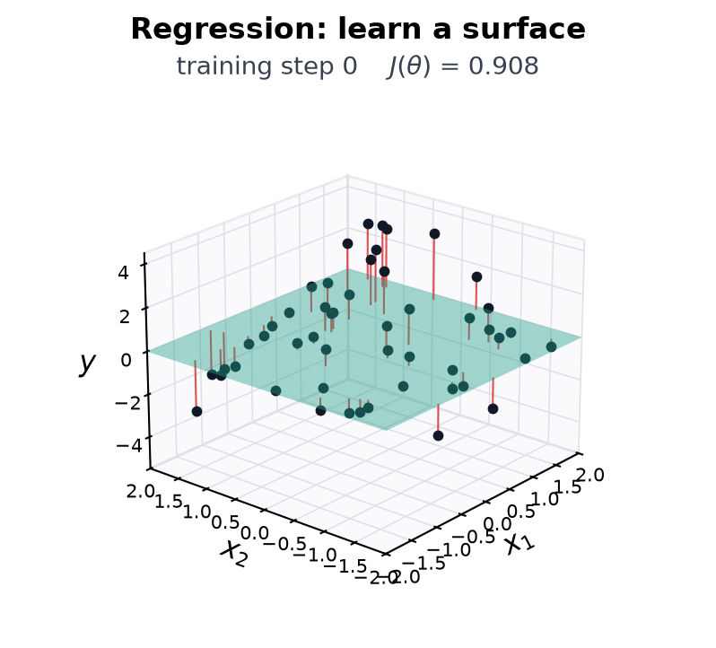
शुरुआत
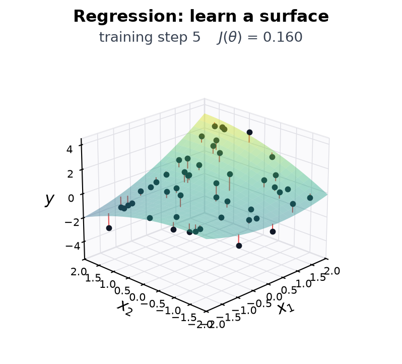
बीच में
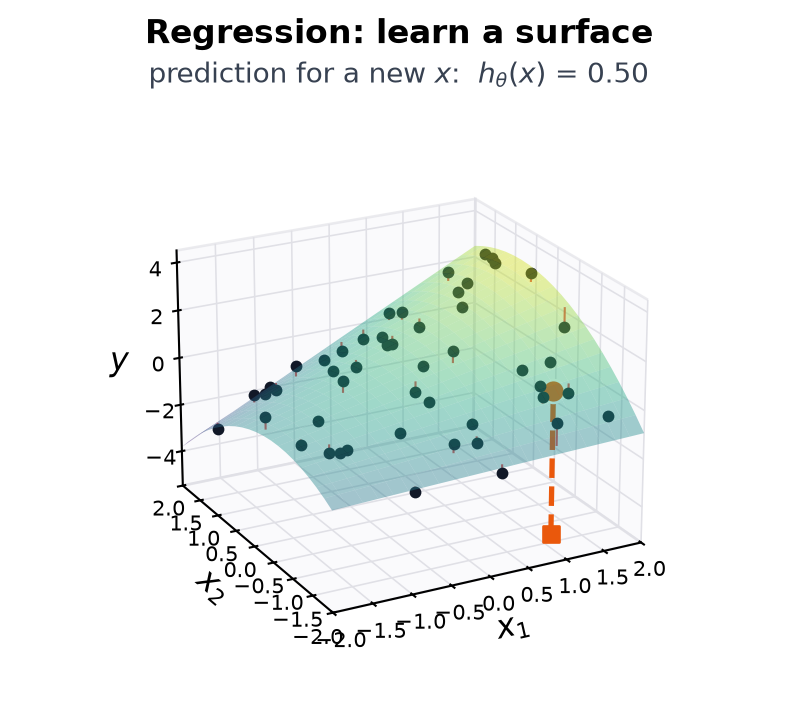
अंत
क्या देखें: यह Supervised Learning (regression) है: हर काला बिंदु एक training example है, ज़मीन पर features \(x_1, x_2\) और ऊँचाई पर target \(y\)। रंगीन surface hypothesis \(h_\theta(x)\) है, जो \(\theta = 0\) पर सपाट शुरू होती है। Training के हर step में surface data की ओर मुड़ती है, लाल रेखाएँ (errors) छोटी होती हैं और cost \(J(\theta)\) गिरता है। अंत में एक नया\(x\) (नारंगी) आता है जो training set में नहीं था, और model surface की ऊँचाई पढ़कर उसका prediction दे देता है। Training और prediction का फ़र्क यही है।
चलती animation: cs229_hindi/out/anim/L01_1.gif
Animation 1.2Classification: a separating plane
शुरुआतबीच में
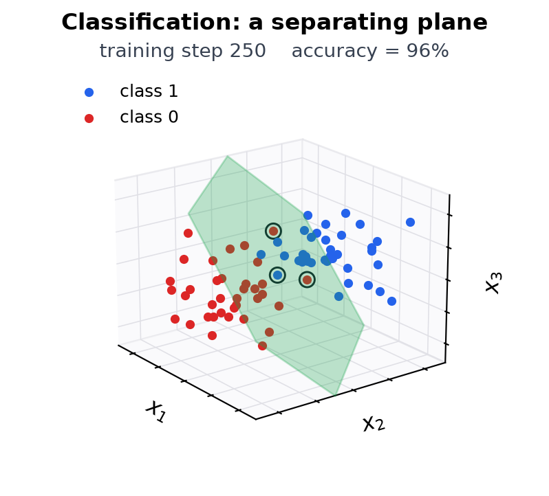
अंत
क्या देखें: यह Supervised Learning (classification) है: तीनों axes features हैं (\(x_1, x_2, x_3\)) और label रंग से दिखाया गया है (नीला class 1, लाल class 0)। हरा plane model की decision boundary है: उसके एक तरफ़ model "class 1" कहता है, दूसरी तरफ़ "class 0"। शुरू में plane गलत जगह है, इसलिए बहुत से बिंदु गलत तरफ़ हैं (उन पर काला घेरा है)। Training के साथ plane घूमकर दोनों बादलों के बीच आ जाता है और accuracy बढ़ती जाती है। बादल थोड़े मिले हुए हैं, इसलिए कुछ बिंदु अंत तक गलत तरफ़ रह जाते हैं: असली data में 100% accuracy ज़रूरी नहीं।
चलती animation: cs229_hindi/out/anim/L01_2.gif
Animation 1.3Clustering: k-means finds groups
शुरुआतबीच में
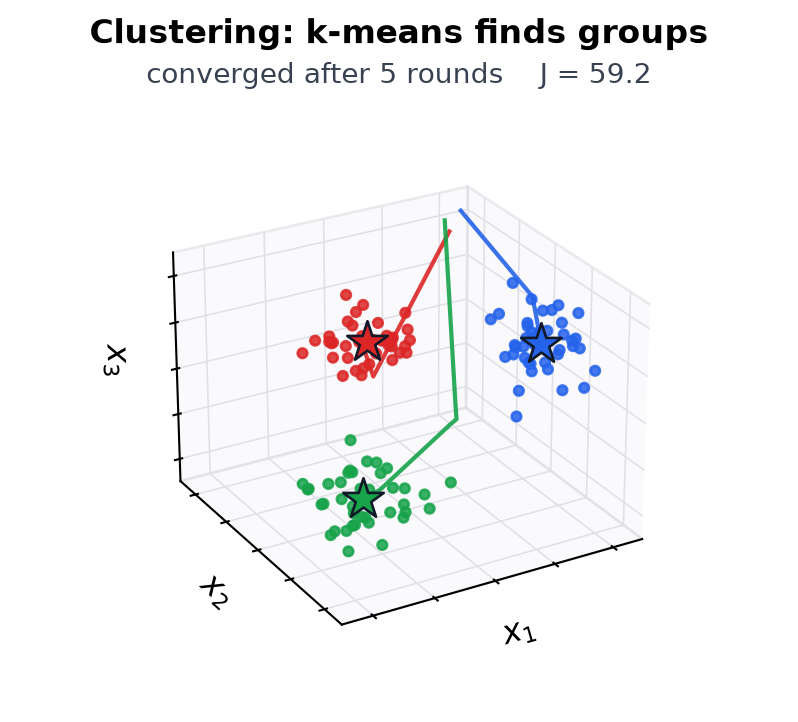
अंत
क्या देखें: यह Unsupervised Learning है: तीनों axes features हैं और कोई label नहीं है, इसलिए शुरू में सारे बिंदु स्लेटी हैं। तीन तारे centroids हैं, जिन्हें जान-बूझकर एक ही कोने से शुरू किया गया है। k-means दो काम बारी-बारी से दोहराता है: हर बिंदु को सबसे पास वाले centroid का रंग देना, फिर हर centroid को अपने रंग के बिंदुओं के mean पर ले जाना। कुछ ही rounds में तारे तीनों झुंडों के बीच जा बैठते हैं और रंग बदलना बंद हो जाता है। किसी ने algorithm को नहीं बताया था कि झुंड कहाँ हैं।
चलती animation: cs229_hindi/out/anim/L01_3.gif
Animation 1.4RL: value spreads from the reward
शुरुआत
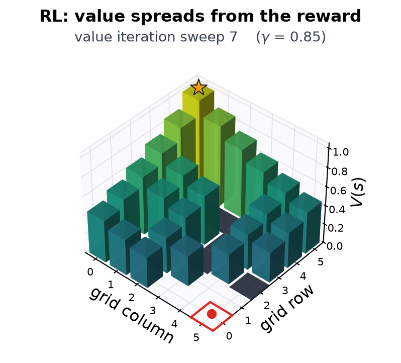
बीच मेंअंत
क्या देखें: यह Reinforcement Learning की झलक है: ज़मीन एक \(6 \times 6\) grid है जिसका हर खाना एक state है (काले खाने दीवारें हैं), और सिर्फ़ सुनहरे तारे वाले खाने पर reward \(+1\) मिलता है। हर खंभे की ऊँचाई उस state की value\(V(s)\) है, यानी वहाँ से आगे मिलने वाला कुल discounted reward। हर sweep में value goal से एक खाना और पीछे फैलती है, और दूरी के साथ \(\gamma\) के हिसाब से घटती जाती है। खंभे बन जाने के बाद लाल agent बस हर कदम पर सबसे ऊँचे पड़ोसी खंभे की ओर चलता है और दीवारों का चक्कर काटकर goal तक पहुँच जाता है। उसे किसी ने रास्ता नहीं बताया था, सिर्फ़ reward बताया था।
चलती animation: cs229_hindi/out/anim/L01_4.gif
Animation 1.5Underfit, good fit, overfit
शुरुआतबीच में
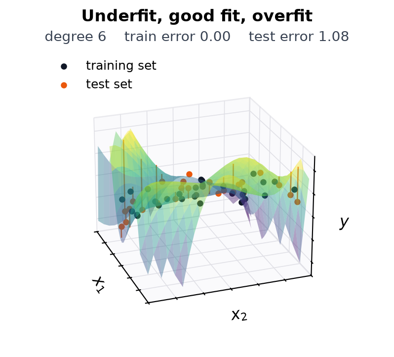
अंत
क्या देखें: काले बिंदु training set हैं और नारंगी बिंदु test set, जिन्हें model ने training के समय नहीं देखा। Surface एक polynomial model है जिसकी degree (complexity) बढ़ती जा रही है। Degree 1 पर surface एक plane है जो data का मोड़ पकड़ ही नहीं पाता: train error और test error दोनों बड़े हैं (underfitting), जबकि degree 3 पर दोनों छोटे हैं। Degree और बढ़ाने पर surface हर काले बिंदु को छूने के लिए बुरी तरह लहराने लगती है: train error लगभग zero हो जाता है, पर नारंगी रेखाएँ लंबी हो जाती हैं और test error उछल जाता है (overfitting)। असली कसौटी test error है, train error नहीं।
चलती animation: cs229_hindi/out/anim/L01_5.gif
भाग 3
Python Example
इसे खुद चलाएँ: cs229_hindi/.venv/bin/python cs229_hindi/chapters/L01_introduction/example.py
"""Lecture 1 example: Machine Learning की शब्दावली, चलते हुए code में (सिर्फ़ NumPy).तीन छोटे प्रयोग, तीनों synthetic data पर: A. Supervised Learning, regression: polynomial model, underfitting और overfitting B. Supervised Learning, classification: k-Nearest Neighbours (k-NN) शुरू से C. Unsupervised Learning, clustering: k-means शुरू से"""importnumpyasnpimportmatplotlib.pyplotaspltrng=np.random.default_rng(7)deftrain_test_split(X,y,test_fraction=0.3):"""Data को shuffle करके दो हिस्सों में बाँटें: training set और test set।"""idx=rng.permutation(len(y))n_test=int(round(test_fraction*len(y)))returnX[idx[n_test:]],y[idx[n_test:]],X[idx[:n_test]],y[idx[:n_test]]# ---------- A. Regression: y एक continuous संख्या है ----------# सच्चा function sin(2*pi*x) है, पर model को यह नहीं पता: उसे सिर्फ़ noisy examples मिलते हैं।x=rng.uniform(0,1,40)# featurey=np.sin(2*np.pi*x)+rng.normal(0,0.25,40)# target = pattern + noisex_tr,y_tr,x_te,y_te=train_test_split(x,y)defpoly_features(x,degree):"""x से features [1, x, x^2, ..., x^degree] बनाएँ।"""returnnp.vander(x,degree+1,increasing=True)deffit(x,y,degree):"""Training: वह theta ढूँढें जो squared-error cost J(theta) को minimize करे।"""returnnp.linalg.lstsq(poly_features(x,degree),y,rcond=None)[0]defmse(theta,x,y):"""Prediction h(x) निकालें और औसत squared error नापें।"""returnnp.mean((poly_features(x,len(theta)-1)@theta-y)**2)print("A. Regression (polynomial model): model की complexity बढ़ाने का असर")print(" degree parameters train error test error")models={}fordegreein(1,3,9,15):theta=models[degree]=fit(x_tr,y_tr,degree)print(f" {degree:>6}{degree+1:>10}{mse(theta,x_tr,y_tr):11.4f}{mse(theta,x_te,y_te):10.4f}")print(" degree 1: दोनों errors बड़े (underfitting)। degree 15: train error सबसे छोटा,")print(" पर test error फिर बढ़ गया (overfitting)। degree 3 सबसे अच्छा generalize करती है।")# ---------- B. Classification: y एक category है (0 या 1) ----------m=200labels=rng.integers(0,2,m)centers=np.array([[0.0,0.0],[2.0,2.0]])points=centers[labels]+rng.normal(0,1.1,(m,2))# दो features, दो आपस में मिले हुए बादलP_tr,l_tr,P_te,l_te=train_test_split(points,labels)defknn_predict(P_train,l_train,P_new,k):"""हर नए point के k सबसे पास वाले training points देखें और बहुमत का label दें।"""dist=np.linalg.norm(P_new[:,None,:]-P_train[None,:,:],axis=2)nearest=np.argsort(dist,axis=1)[:,:k]return(l_train[nearest].mean(axis=1)>0.5).astype(int)print("\nB. Classification (k-NN): 140 training examples, 60 test examples")print(" k train accuracy test accuracy")forkin(1,5,25):acc_tr=np.mean(knn_predict(P_tr,l_tr,P_tr,k)==l_tr)acc_te=np.mean(knn_predict(P_tr,l_tr,P_te,k)==l_te)print(f" {k:<4}{acc_tr:14.3f}{acc_te:13.3f}")print(" k = 1 training set को रट लेता है (100%), पर नए data पर सबसे कमज़ोर है।")# ---------- C. Clustering: कोई label नहीं, सिर्फ़ x ----------true_centers=np.array([[0.0,0.0],[4.0,0.5],[2.0,3.5]])data=np.vstack([c+rng.normal(0,0.7,(60,2))forcintrue_centers])# labels फेंक दिए गएdefkmeans(X,k,iters=20):mu=X[rng.choice(len(X),k,replace=False)].copy()# शुरुआत: k random points को centroid मानेंhistory=[]for_inrange(iters):c=np.linalg.norm(X[:,None,:]-mu[None,:,:],axis=2).argmin(axis=1)# 1. सबसे पास का centroidhistory.append(np.sum((X-mu[c])**2))# J(c, mu), centroids हिलाने से पहलेnew_mu=np.array([X[c==j].mean(axis=0)forjinrange(k)])# 2. centroid = meanifnp.allclose(new_mu,mu):breakmu=new_mureturnmu,c,historymu,cluster,J_history=kmeans(data,3)print("\nC. Clustering (k-means, k = 3): हर iteration पर J(c, mu)")print(" "+" ".join(f"{J:.1f}"forJinJ_history))print(" मिले centroids :"," ".join(f"({a:5.2f}, {b:5.2f})"fora,binmu[np.argsort(mu[:,0])]))print(" असली centers :"," ".join(f"({a:5.2f}, {b:5.2f})"fora,bintrue_centers[np.argsort(true_centers[:,0])]))# ---------- D. Plots ----------fig,axes=plt.subplots(1,3,figsize=(13,4))grid=np.linspace(0,1,300)axes[0].scatter(x_tr,y_tr,s=18,color="black",label="training set")axes[0].scatter(x_te,y_te,s=18,color="tab:orange",label="test set")fordegree,stylein((1,":"),(3,"-"),(15,"--")):axes[0].plot(grid,poly_features(grid,degree)@models[degree],style,label=f"degree {degree}")axes[0].set(ylim=(-2,2),xlabel="x (feature)",ylabel="y (target)",title="A. Regression: under / good / overfit")axes[0].legend(fontsize=8)g1,g2=np.meshgrid(np.linspace(-3,5,120),np.linspace(-3,5,120))zz=knn_predict(P_tr,l_tr,np.c_[g1.ravel(),g2.ravel()],25).reshape(g1.shape)axes[1].contourf(g1,g2,zz,levels=[-0.5,0.5,1.5],colors=["#fecaca","#bfdbfe"],alpha=0.6)axes[1].scatter(*P_te.T,c=np.where(l_te==1,"tab:blue","tab:red"),s=18,edgecolor="white",linewidth=0.4)axes[1].set(xlabel="x1",ylabel="x2",title="B. Classification: k-NN (k=25), test points")axes[2].scatter(*data.T,c=cluster,cmap="viridis",s=14)axes[2].scatter(*mu.T,marker="*",s=260,color="red",edgecolor="black",label="centroids")axes[2].set(xlabel="x1",ylabel="x2",title="C. Clustering: k-means")axes[2].legend()fig.tight_layout()fig.savefig("result.png",dpi=130)
OUTPUT
A. Regression (polynomial model): model की complexity बढ़ाने का असर
degree parameters train error test error
1 2 0.3058 0.4411
3 4 0.0308 0.0692
9 10 0.0214 0.0749
15 16 0.0142 0.1424
degree 1: दोनों errors बड़े (underfitting)। degree 15: train error सबसे छोटा,
पर test error फिर बढ़ गया (overfitting)। degree 3 सबसे अच्छा generalize करती है।
B. Classification (k-NN): 140 training examples, 60 test examples
k train accuracy test accuracy
1 1.000 0.833
5 0.936 0.867
25 0.929 0.867
k = 1 training set को रट लेता है (100%), पर नए data पर सबसे कमज़ोर है।
C. Clustering (k-means, k = 3): हर iteration पर J(c, mu)
986.8 722.8 716.6 715.4 710.6 698.4 593.7 214.8 157.5
मिले centroids : (-0.21, -0.01) ( 1.72, 3.60) ( 4.11, 0.67)
असली centers : ( 0.00, 0.00) ( 2.00, 3.50) ( 4.00, 0.50)
LECTURE 2
Supervised Learning Setup और Linear Regression
भाग 1
Theory
इस lecture में: Supervised Learning का पूरा ढाँचा (training set, hypothesis, cost function), Linear Regression, Gradient Descent (Batch और Stochastic), Normal Equations, और यह कि Least Squares असल में Maximum Likelihood क्यों है।
1. एक line में idea
हमारे पास कुछ उदाहरण हैं जिनमें input \(x\) और सही जवाब \(y\) दोनों दिए हैं। हमें ऐसा function \(h\) सीखना है जो नए \(x\) के लिए \(y\) का अच्छा अंदाज़ा लगा सके। जब \(y\) एक continuous संख्या हो (जैसे घर की कीमत), तो इस problem को regression कहते हैं। जब \(y\) कुछ गिनी-चुनी categories में से एक हो (जैसे spam / not spam), तो इसे classification कहते हैं।
Linear Regression सबसे सरल regression model है: हम मान लेते हैं कि \(y\) लगभग \(x\) के features का एक weighted sum है, और फिर data से सबसे अच्छे weights ढूँढते हैं।
2. Setup और Notation
Symbol
मतलब
\(x^{(i)}\)
\(i\)-वें training example के input features (एक vector)
\(y^{(i)}\)
\(i\)-वें example का target (सही जवाब)
\((x^{(i)}, y^{(i)})\)
एक training example
\(m\)
training examples की संख्या
\(n\)
features की संख्या
\(\theta\)
parameters (weights), जिन्हें हमें सीखना है
\(h_\theta(x)\)
hypothesis, यानी model का prediction
Linear Regression में hypothesis यह है (हम \(x_0 = 1\) मान लेते हैं ताकि intercept \(\theta_0\) भी उसी formula में आ जाए):
\(J(\theta)\) जितना छोटा, fit उतना अच्छा। Linear Regression के लिए \(J\) एक convex कटोरे (bowl) जैसा होता है, इसलिए इसका सिर्फ़ एक ही global minimum है और कोई local minimum नहीं।
4. Gradient Descent
कटोरे की तली तक पहुँचने का तरीका: जहाँ खड़े हैं वहाँ से सबसे तेज़ ढलान की दिशा में छोटा कदम लें, और यही बार-बार दोहराएँ।
ध्यान दें कि update error \((y - h_\theta(x))\) के अनुपात में है: prediction लगभग सही हो तो बदलाव छोटा, बहुत गलत हो तो बदलाव बड़ा।
Batch बनाम Stochastic
Batch Gradient Descent: हर step में पूरे training set का जोड़ लेते हैं: \(\theta_j := \theta_j + \alpha \sum_{i=1}^{m} (y^{(i)} - h_\theta(x^{(i)}))\, x_j^{(i)}\)। रास्ता smooth होता है, पर \(m\) बड़ा हो तो हर step महँगा पड़ता है।
Stochastic Gradient Descent (SGD): हर step में सिर्फ़ एक example देखकर update कर देते हैं। रास्ता टेढ़ा-मेढ़ा (noisy) होता है और minimum के आस-पास घूमता रहता है, पर बड़े data पर यह बहुत जल्दी अच्छे \(\theta\) के पास पहुँच जाता है।
Learning rate का असर
\(\alpha\) बहुत छोटा: सही दिशा, पर बहुत धीमा।
\(\alpha\) ठीक-ठाक: तेज़ी से minimum तक।
\(\alpha\) बहुत बड़ा: कदम minimum के पार निकल जाते हैं, \(J\) घटने की जगह उछलता है या बढ़ता ही जाता है (diverge)।
5. Normal Equations
Linear Regression में minimum सीधे formula से भी निकल सकता है। सारे examples को matrix \(X\) (हर row एक \(x^{(i)T}\)) और vector \(\vec{y}\) में रखें। तब
Geometric मतलब:\(X\theta\) हमेशा \(X\) के columns के span (एक plane) में रहता है। सबसे अच्छा \(\theta\) वह है जिसके लिए \(X\theta\), \(\vec{y}\) का उस plane पर projection हो। तब residual \(\vec{y} - X\theta\) plane के perpendicular होता है, यानी \(X^T(\vec{y} - X\theta) = 0\)। यही Normal Equation है।
Gradient Descent
Normal Equations
\(\alpha\) चुनना
ज़रूरी
नहीं
Iterations
बहुत
एक ही बार में
\(n\) बहुत बड़ा हो
ठीक चलता है
\((X^TX)^{-1}\) लगभग \(O(n^3)\), धीमा
दूसरे models
लगभग हर जगह चलता है
सिर्फ़ Linear Regression जैसे cases
6. Probabilistic Interpretation: squared error ही क्यों?
मान लीजिए \(y^{(i)} = \theta^T x^{(i)} + \epsilon^{(i)}\), जहाँ noise \(\epsilon^{(i)} \sim \mathcal{N}(0, \sigma^2)\) है और सारे examples i.i.d. हैं। तब
\(\ell(\theta)\) को maximize करना ठीक वही है जो \(J(\theta)\) को minimize करना। यानी Gaussian noise की assumption के साथ, Least Squares ही Maximum Likelihood Estimate है। जवाब \(\sigma^2\) पर निर्भर नहीं करता।
7. Practical बातें और आम गलतियाँ
Feature scaling: अगर एक feature हज़ारों में है और दूसरा इकाइयों में, तो \(J\) का कटोरा बहुत लंबा-पतला हो जाता है और Gradient Descent zig-zag करता है। हर feature को mean 0 और standard deviation 1 पर ले आएँ।
\(J\) को हर iteration पर plot करें: सही \(\alpha\) पर \(J\) हर step में घटना चाहिए। बढ़ रहा है तो \(\alpha\) छोटा करें।
\(X^TX\) invertible न हो (जैसे duplicate features या \(m < n\)): pseudo-inverse या regularization लगाएँ (Lecture 8)।
Linear का मतलब parameters में linear:\(x^2\), \(\log x\) जैसे नए features जोड़कर यही model curves भी fit कर सकता है।
8. खुद से पूछें
\(J(\theta)\) में \(\frac{1}{2}\) क्यों रखा गया है? (संकेत: derivative लेते समय क्या होता है?)
अगर सारे examples के लिए \(h_\theta(x^{(i)}) = y^{(i)}\) हो जाए, तो LMS update क्या करेगा?
SGD minimum पर पूरी तरह रुकता क्यों नहीं, और इसे रोकने के लिए \(\alpha\) के साथ क्या किया जा सकता है?
भाग 2
3D Animations
Animation 2.1Fitting a plane with GD
शुरुआतबीच मेंअंत
क्या देखें: दो features \(x_1, x_2\) और target \(y\) वाले data points 3D में बिखरे हैं। नीला plane hypothesis \(h_\theta(x) = \theta_0 + \theta_1 x_1 + \theta_2 x_2\) है। शुरू में \(\theta = 0\) है, इसलिए plane सपाट है। हर iteration में Gradient Descent plane को थोड़ा घुमाता और उठाता है। लाल रेखाएँ residuals (errors) हैं: देखिए कैसे वे छोटी होती जाती हैं और \(J(\theta)\) गिरता जाता है।
चलती animation: cs229_hindi/out/anim/L02_1.gif
Animation 2.2Gradient Descent on J(\(\theta\))
शुरुआतबीच मेंअंत
क्या देखें: अब हम data की जगह parameter space देख रहे हैं: ज़मीन पर \(\theta_0\) और \(\theta_1\), और ऊँचाई \(J(\theta)\)। Surface एक convex कटोरा है। लाल गेंद वर्तमान \(\theta\) है। हर step में वह सबसे तेज़ ढलान की दिशा में चलती है: पहले तेज़ी से घाटी में उतरती है, फिर लंबी-पतली घाटी के साथ धीरे-धीरे minimum (हरा तारा) की ओर बढ़ती है। नीचे फ़र्श पर contours और रास्ते की परछाईं भी दिख रही है।
चलती animation: cs229_hindi/out/anim/L02_2.gif
Animation 2.3Learning rate \(\alpha\): small / good / large
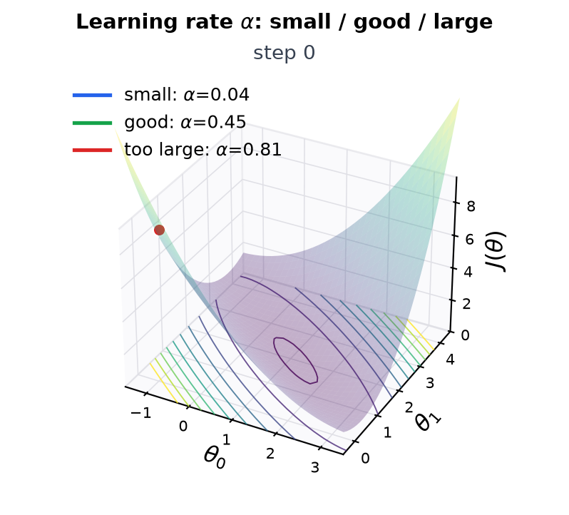
शुरुआतबीच मेंअंत
क्या देखें: एक ही जगह से तीन गेंदें छोड़ी गई हैं, बस \(\alpha\) अलग है। नीली (\(\alpha\) छोटा) सही दिशा में है पर रेंग रही है। हरी (\(\alpha\) ठीक) जल्दी तली तक पहुँच जाती है। लाल (\(\alpha\) बड़ा) हर कदम में घाटी के पार कूद जाती है और दीवारों के बीच zig-zag करती रहती है। \(\alpha\) इससे थोड़ा और बड़ा हो तो यही उछाल हर step में बढ़ेगा और algorithm diverge कर जाएगा।
चलती animation: cs229_hindi/out/anim/L02_3.gif
Animation 2.4Batch GD vs Stochastic GD
शुरुआतबीच मेंअंत
क्या देखें:नीला रास्ता Batch Gradient Descent है: हर step में पूरे data का gradient, इसलिए रास्ता smooth है। नारंगी रास्ता SGD है: हर update सिर्फ़ एक random example से, इसलिए रास्ता लड़खड़ाता है। फिर भी वह उसी घाटी में पहुँचता है और अंत में minimum के आस-पास मँडराता रहता है, पूरी तरह रुकता नहीं। यहाँ एक frame में Batch का एक step और SGD के चार सस्ते updates दिखाए गए हैं।
चलती animation: cs229_hindi/out/anim/L02_4.gif
Animation 2.5Normal Equations = projection
शुरुआतबीच मेंअंत
क्या देखें: यहाँ axes तीन training examples हैं (\(m=3\)), इसलिए \(\vec{y}\) 3D में एक vector है (काला)। नीला plane \(X\) के दो columns का span है: \(X\theta\) हमेशा इसी plane में रहता है। नारंगी बिंदु \(X\theta\) plane पर चलते हुए उस जगह पहुँचता है जहाँ लाल residual \(\vec{y} - X\theta\) सबसे छोटा है। उस पल residual plane के ठीक perpendicular हो जाता है: \(X^T(\vec{y} - X\theta) = 0\)। यही Normal Equation है।
चलती animation: cs229_hindi/out/anim/L02_5.gif
भाग 3
Python Example
इसे खुद चलाएँ: cs229_hindi/.venv/bin/python cs229_hindi/chapters/L02_linear_regression/example.py
"""Lecture 2 example: Linear Regression शुरू से (सिर्फ़ NumPy).घर के size और bedrooms से कीमत का अंदाज़ा। तीन तरीकों से theta निकालते हैं:Batch Gradient Descent, Stochastic Gradient Descent, और Normal Equations।"""importnumpyasnpimportmatplotlib.pyplotaspltrng=np.random.default_rng(42)# ---------- 1. Data बनाएँ: price = 50 + 0.12*size + 15*bedrooms + noise ----------m=200size=rng.uniform(500,3500,m)# square feetbedrooms=rng.integers(1,6,m).astype(float)price=50+0.12*size+15*bedrooms+rng.normal(0,25,m)# हज़ार dollars में# ---------- 2. Train / test split ----------idx=rng.permutation(m)train,test=idx[:160],idx[160:]# ---------- 3. Feature scaling (mean 0, std 1), सिर्फ़ training data के statistics से ----------features=np.c_[size,bedrooms]mu,sigma=features[train].mean(axis=0),features[train].std(axis=0)defdesign_matrix(f):"""Scale करें और x0 = 1 वाला column जोड़ें।"""returnnp.c_[np.ones(len(f)),(f-mu)/sigma]X_train,y_train=design_matrix(features[train]),price[train]X_test,y_test=design_matrix(features[test]),price[test]defcost(theta,X,y):"""J(theta) = (1/2m) * sum (h(x) - y)^2"""return0.5*np.mean((X@theta-y)**2)# ---------- 4. Batch Gradient Descent ----------defbatch_gd(X,y,alpha=0.1,iters=300):theta=np.zeros(X.shape[1])history=[]for_inrange(iters):gradient=X.T@(X@theta-y)/len(y)# पूरे data का gradienttheta-=alpha*gradienthistory.append(cost(theta,X,y))returntheta,history# ---------- 5. Stochastic Gradient Descent (LMS rule, एक बार में एक example) ----------defsgd(X,y,alpha=0.01,epochs=20):theta=np.zeros(X.shape[1])history=[]for_inrange(epochs):foriinrng.permutation(len(y)):error=y[i]-X[i]@thetatheta+=alpha*error*X[i]# theta_j := theta_j + alpha * error * x_jhistory.append(cost(theta,X,y))returntheta,history# ---------- 6. Normal Equations: X^T X theta = X^T y ----------defnormal_equations(X,y):returnnp.linalg.solve(X.T@X,X.T@y)theta_gd,hist_gd=batch_gd(X_train,y_train)theta_sgd,hist_sgd=sgd(X_train,y_train)theta_ne=normal_equations(X_train,y_train)defr2(theta,X,y):return1-np.sum((y-X@theta)**2)/np.sum((y-y.mean())**2)print("Method theta0 theta1 theta2 train J test R^2")forname,thin[("Batch GD",theta_gd),("SGD",theta_sgd),("Normal Equations",theta_ne)]:print(f"{name:<17}{th[0]:8.2f}{th[1]:8.2f}{th[2]:8.2f}{cost(th,X_train,y_train):9.2f} "f"{r2(th,X_test,y_test):10.4f}")# Scaled theta को वापस असली units में बदलें ताकि मतलब समझ आएslope=theta_ne[1:]/sigmaintercept=theta_ne[0]-np.sum(theta_ne[1:]*mu/sigma)print(f"\nअसली units में: price = {intercept:.1f} + {slope[0]:.3f}*size + {slope[1]:.1f}*bedrooms")print("(data बनाते समय सच यह था: price = 50 + 0.120*size + 15*bedrooms)")new_house=np.array([[2000.0,3.0]])print(f"\n2000 sq ft, 3 bedrooms वाले घर का prediction: {(design_matrix(new_house)@theta_ne)[0]:.1f} हज़ार")# ---------- 7. Learning rate का असर ----------print("\nअलग-अलग alpha पर 50 iterations के बाद J:")foralphain(0.001,0.01,0.1,1.0,2.1):_,h=batch_gd(X_train,y_train,alpha=alpha,iters=50)note=" <- diverge!"ifh[-1]>h[0]else""print(f" alpha = {alpha:<6} J = {h[-1]:.4g}{note}")# ---------- 8. Plots ----------fig,axes=plt.subplots(1,2,figsize=(10,4))axes[0].plot(hist_gd,label="Batch GD (per iteration)")axes[0].plot(np.linspace(0,len(hist_gd),len(hist_sgd)),hist_sgd,"o-",ms=3,label="SGD (per epoch, rescaled)")axes[0].axhline(cost(theta_ne,X_train,y_train),color="gray",ls="--",label="Normal Equations")axes[0].set(yscale="log",xlabel="iteration",ylabel="J(theta)",title="Cost during training")axes[0].legend()pred=X_test@theta_neaxes[1].scatter(y_test,pred,s=18)lims=[y_test.min(),y_test.max()]axes[1].plot(lims,lims,"r--",label="perfect prediction")axes[1].set(xlabel="actual price",ylabel="predicted price",title="Test set: predicted vs actual")axes[1].legend()fig.tight_layout()fig.savefig("result.png",dpi=130)
OUTPUT
Method theta0 theta1 theta2 train J test R^2
Batch GD 329.80 101.82 23.79 321.58 0.9431
SGD 329.88 101.20 25.90 324.09 0.9429
Normal Equations 329.80 101.82 23.79 321.58 0.9431
असली units में: price = 49.0 + 0.120*size + 15.6*bedrooms
(data बनाते समय सच यह था: price = 50 + 0.120*size + 15*bedrooms)
2000 sq ft, 3 bedrooms वाले घर का prediction: 336.8 हज़ार
अलग-अलग alpha पर 50 iterations के बाद J:
alpha = 0.001 J = 5.43e+04
alpha = 0.01 J = 2.222e+04
alpha = 0.1 J = 323.3
alpha = 1.0 J = 321.6
alpha = 2.1 J = 6.684e+13 <- diverge!
LECTURE 3
Weighted Least Squares, Logistic Regression और Newton's Method
भाग 1
Theory
इस lecture में: Weighted Least Squares, Locally Weighted Regression (weights, bandwidth \(\tau\), parametric बनाम non-parametric), Binary Classification के लिए Logistic Regression (sigmoid function, Bernoulli log-likelihood, Gradient Ascent, linear decision boundary), और तेज़ optimization के लिए Newton's Method (1D root finding, Hessian update, quadratic convergence, Fisher scoring)।
1. एक line में idea
Lecture 2 में हमने पूरे data पर एक सीधी रेखा या plane fit किया था। असल दुनिया की तीन स्थितियों में वह सीधा साँचा कम पड़ जाता है, और यही तीन स्थितियाँ इस lecture के तीन हिस्से हैं।
पहली स्थिति: target \(y\) और input \(x\) का रिश्ता मुड़ा हुआ (non-linear) है, पर आप हाथ से \(x^2, x^3, \sin x\) जैसे features गढ़ने के झंझट में नहीं पड़ना चाहते। Locally Weighted Regression (LWR) पूरे data पर एक रेखा खींचने के बजाय, जिस query point \(x\) पर जवाब चाहिए सिर्फ़ उसके आस-पास के पड़ोसियों को बड़ा weight देकर वहीं एक छोटा local linear fit बना लेता है।
दूसरी स्थिति: target \(y\) कोई continuous कीमत नहीं, बल्कि \(\{0, 1\}\) जैसा हाँ/ना का फ़ैसला है (binary classification)। Logistic Regression linear score \(\theta^T x\) को sigmoid function से गुज़ारकर \([0, 1]\) के बीच की probability बना देता है और Maximum Likelihood से \(\theta\) सीखता है।
तीसरी स्थिति: Gradient Ascent पहाड़ी की ढलान देखकर छोटे-छोटे कदमों से चढ़ता है और सैकड़ों iterations ले सकता है। Newton's Method ढलान के साथ-साथ पहाड़ी का मोड़ (Hessian / curvature) भी नापता है और महज़ 5 से 8 छलाँगों में चोटी पर पहुँच जाता है।
2. Weighted Least Squares और Locally Weighted Regression
साधारण Linear Regression में हर training example के error को बराबर महत्व मिलता है। मान लीजिए आपके पास हर example \(i\) के लिए एक non-negative weight \(w^{(i)} \ge 0\) है: जिसका weight बड़ा है उसकी बात ज़्यादा सुननी है, और जिसका weight \(0\) के पास है उसे लगभग नज़रअंदाज़ करना है। तब Weighted Least Squares (WLS) का cost function है:
सारे weights को एक diagonal matrix \(W = \mathrm{diag}(w^{(1)}, \dots, w^{(m)})\) में रखें, तो यही cost साफ matrix रूप ले लेता है:
\[J(\theta) = \frac{1}{2} (X\theta - \vec{y})^T W (X\theta - \vec{y})\]
\(\theta\) के सापेक्ष gradient लेकर शून्य रखने पर \(\nabla_\theta J(\theta) = X^T W (X\theta - \vec{y}) = 0\) मिलता है। इससे Weighted Normal Equations निकलती हैं:
\[X^T W X \theta = X^T W \vec{y} \quad\Longrightarrow\quad \theta = (X^T W X)^{-1} X^T W \vec{y}\]
(Probabilistic नज़रिए से भी यह स्वाभाविक है: अगर हर example के Gaussian noise का variance अलग हो, \(\epsilon^{(i)} \sim \mathcal{N}(0, (\sigma^{(i)})^2)\), तो log-likelihood maximize करने से ठीक यही समस्या मिलती है जिसमें \(w^{(i)} = 1 / (\sigma^{(i)})^2\) होता है। यानी जिस बिंदु में शोर कम है, उसका weight बड़ा है।)
Locally Weighted Regression (LWR)
जब data मुड़ा हुआ हो, तो बहुत सरल features से underfitting होती है और बहुत ज़्यादा polynomial features से overfitting। LWR एक अलग रास्ता चुनता है। मान लीजिए किसी नए query point\(x\) पर आपको \(y\) का अंदाज़ा लगाना है। आप हर training example \(x^{(i)}\) को \(x\) से उसकी दूरी के हिसाब से weight देते हैं:
और फिर ऊपर के \(J(\theta)\) को minimize करके उसी \(x\) के लिए अपना अलग \(\theta\) निकालते हैं, और prediction \(\theta^T x\) दे देते हैं।
इस weight formula के बारे में दो बातें गौर से समझें:
यह दिखने में Gaussian bell curve जैसा ज़रूर है, पर इसका Gaussian probability distribution से कोई लेना-देना नहीं है। यहाँ \(w^{(i)}\) सिर्फ़ दूरी नापने वाला एक smooth kernel है: अगर \(\|x^{(i)} - x\|\) छोटा है तो \(w^{(i)} \approx 1\), और अगर \(x^{(i)}\) बहुत दूर है तो \(w^{(i)} \approx 0\)।
Parameter \(\tau > 0\) को bandwidth (या wavelength parameter) कहते हैं। यही तय करता है कि "पड़ोस" कितना चौड़ा माना जाएगा:
\(\tau\) बहुत छोटा: घंटी बहुत पतली होती है। सिर्फ़ दो-चार सबसे करीबी बिंदु काम आते हैं, और fitted curve हर छोटे-मोटे शोर के पीछे भागकर ऊबड़-खाबड़ हो जाती है (overfitting, high variance)।
\(\tau\) बहुत बड़ा: घंटी इतनी चौड़ी हो जाती है कि लगभग हर बिंदु का \(w^{(i)} \approx 1\) रहता है। तब local पन खत्म हो जाता है और model वापस साधारण सीधी रेखा बन जाता है (underfitting, high bias)।
Parametric बनाम Non-parametric
गुण
Parametric (जैसे Linear Regression)
Non-parametric (जैसे LWR)
मुख्य विचार
तय संख्या के parameters \(\theta\) में पूरा ज्ञान समेट लो
कोई एक स्थायी \(\theta\) मत बनाओ; query आने पर स्थानीय fit करो
Training के बाद
मूल data मिटाया जा सकता है, सिर्फ़ \(\theta\) काफ़ी है
पूरा training set \((X, \vec{y})\) हमेशा मेमोरी में रखना पड़ता है
एक नए \(x\) पर खर्च
बहुत सस्ता: सिर्फ़ \(\theta^T x\), यानी \(O(n)\)
महँगा: नया \(W\) बनाना और linear system हल करना
लचीलापन
तय साँचे तक सीमित
पर्याप्त data होने पर जटिल मुड़े हुए functions पकड़ लेता है
"Non-parametric" का मतलब यह नहीं कि अंदर parameters हैं ही नहीं, बल्कि यह कि model को याद रखने के लिए ज़रूरी जानकारी की मात्रा data के आकार \(m\) के साथ बढ़ती जाती है।
3. Binary Classification और Logistic Regression
अब मान लीजिए target \(y \in \{0, 1\}\) है, जहाँ \(0\) को negative class और \(1\) को positive class कहते हैं (जैसे ट्यूमर benign है या malignant, email सामान्य है या spam)। इस पर सीधे Linear Regression क्यों नहीं चला देते? दो कारण हैं:
\(\theta^T x\) की value \(-\infty\) से \(+\infty\) तक कुछ भी हो सकती है, जबकि \(y \in \{0, 1\}\) होने पर prediction को \([0, 1]\) में एक probability जैसा होना चाहिए।
अगर एक तरफ़ बहुत दूर कोई बिल्कुल सही, आसान सा positive example आ जाए, तो squared error कम करने के चक्कर में सीधी रेखा झुक जाती है और बीच की decision boundary बिगड़ जाती है।
Logistic Regression में हम linear संयोजन \(\theta^T x\) (जहाँ हमेशा की तरह \(x_0 = 1\) है) को logistic या sigmoid function\(g(z)\) में डालते हैं:
जब \(z \to +\infty\) तो \(g(z) \to 1\), जब \(z \to -\infty\) तो \(g(z) \to 0\), और ठीक बीच में \(g(0) = 0.5\)। साथ ही \(1 - g(z) = \frac{e^{-z}}{1 + e^{-z}} = g(-z)\)।
Sigmoid का derivative
आगे के सारे derivations की चाबी \(g'(z)\) का एक बेहद सुंदर गुण है:
\(h_\theta(x)\) को हम \(x\) दिए होने पर \(y = 1\) की अनुमानित probability मानते हैं। जब ठोस \(0\) या \(1\) चुनना हो, तो स्वाभाविक नियम है कि \(h_\theta(x) \ge 0.5\) होने पर \(1\) बोलें, वरना \(0\)। चूँकि \(g(z)\) एक बढ़ता हुआ function है और \(g(0) = 0.5\) है:
इसलिए दोनों classes को अलग करने वाली decision boundary समीकरण \(\theta^T x = 0\) से तय होती है। मूल features \(x_1, \dots, x_n\) के space में यह एक सीधा hyperplane है (दो features में एक सीधी रेखा)। ध्यान रहे: \(h_\theta(x)\) की ऊँचाई एक मुड़ी हुई S-आकार की चादर है, पर जहाँ वह \(0.5\) को काटती है वह सीमा बिल्कुल linear है।
4. Bernoulli Log-Likelihood और Gradient Ascent
Parameters \(\theta\) कैसे सीखें? हम Lecture 2 की तरह probabilistic रास्ता अपनाते हैं:
(खुद रखकर देख लें: \(y = 1\) पर दूसरा गुणनखंड \(1\) हो जाता है और \(h_\theta(x)\) बचता है; \(y = 0\) पर पहला गुणनखंड \(1\) हो जाता है और \(1 - h_\theta(x)\) बचता है।)
मान लीजिए सारे \(m\) training examples स्वतंत्र रूप से जनित हैं। पूरे data का likelihood \(L(\theta) = \prod_{i=1}^{m} p(y^{(i)} \mid x^{(i)}; \theta)\) है। गुणनफल को जोड़ में बदलने के लिए log लें, तो log-likelihood मिलता है:
पहले सिर्फ़ एक training example \((x, y)\) का अंश लेते हैं। संक्षेप में \(z = \theta^T x\) और \(h = g(z)\) लिखें। तब \(\frac{\partial z}{\partial \theta_j} = x_j\), और chain rule से \(\frac{\partial h}{\partial \theta_j} = g'(z) x_j = h(1 - h) x_j\)। अब \(\theta_j\) के सापेक्ष partial derivative निकालें:
\(h(1 - h)\) का हर और अंश में आपस में कट जाना ही वह वजह है जिससे अंतिम उत्तर इतना साफ़ आता है! सारे \(m\) examples पर जोड़ने से पूरा gradient मिलता है:
जहाँ \(\vec{h} = g(X\theta)\) सारे examples की predicted probabilities का vector है।
Gradient Ascent और LMS से तुलना
यहाँ हमें cost घटाना नहीं, बल्कि log-likelihood \(\ell(\theta)\) को maximize करना है। इसलिए हम gradient की दिशा में ऊपर चढ़ते हैं (Gradient Ascent, बीच में \(+\) का निशान देखें):
ठहरकर इस सूत्र को Lecture 2 के LMS update rule से मिलाइए: अक्षर-अक्षर बिल्कुल एक जैसा दिखता है! पर यह वही algorithm नहीं है, क्योंकि वहाँ \(h_\theta(x) = \theta^T x\) एक रैखिक सूत्र था और यहाँ \(h_\theta(x) = \frac{1}{1 + e^{-\theta^T x}}\) एक non-linear sigmoid है। फिर भी सूत्र का रूप हूबहू वैसा ही निकलना महज़ संयोग नहीं है; अगले lecture में जब हम Generalized Linear Models (GLMs) पढ़ेंगे, तब इसका गहरा राज़ खुलेगा।
Linear Regression की तरह यहाँ \(\nabla_\theta \ell(\theta) = 0\) को कागज़ पर सीधे हल करने का कोई closed-form सूत्र नहीं है, इसलिए iterative optimization ज़रूरी है। अच्छी खबर यह है कि \(\ell(\theta)\) एक concave पहाड़ी है: इसमें कोई नकली चोटी (local maximum) नहीं होती।
5. Newton's Method
Gradient Ascent हर कदम पर सिर्फ़ स्थानीय ढलान देखता है, इसलिए लंबी-पतली पहाड़ी पर उसे छोटे कदमों से सैकड़ों बार रेंगना पड़ता है। Newton's Method (Newton-Raphson) कहीं बड़े और सटीक कदम उठाने की कला है।
1D में root finding से optimization तक
मान लीजिए एक एकल चर वाला function \(f(\theta) : \mathbb{R} \to \mathbb{R}\) दिया है और हमें वह जड़ (root) ढूँढनी है जहाँ \(f(\theta) = 0\) हो। यदि हम अभी \(\theta^{(t)}\) पर खड़े हैं, तो उस बिंदु पर \(f\) की स्पर्श रेखा (tangent line) का समीकरण है:
Newton का सरल विचार यह है कि यह सीधी रेखा जहाँ क्षैतिज अक्ष (\(0\)) को काटती है, वही हमारा अगला अनुमान \(\theta^{(t+1)}\) होगा। ऊपर दाईं तरफ़ को \(0\) के बराबर रखकर हल करें:
अब सोचिए: हमें root नहीं, बल्कि \(\ell(\theta)\) का maximum चाहिए! पर किसी smooth पहाड़ी की चोटी पर उसका पहला derivative शून्य होता है, यानी हमें \(\ell'(\theta) = 0\) हल करना है। बस \(f(\theta) = \ell'(\theta)\) रख दीजिए। तब \(f'(\theta) = \ell''(\theta)\) बन जाता है और optimization का Newton step मिल जाता है:
Geometric मतलब: बिंदु \(\theta^{(t)}\) के पास \(\ell(\theta)\) का second-order Taylor विस्तार एक parabola (उल्टा कटोरा) बनाता है जिसकी ऊँचाई \(\ell\), ढलान \(\ell'\) और मोड़ \(\ell''\) तीनों असली curve से मिलते हैं। ऊपर लिखा सूत्र ठीक उसी स्थानीय parabola की चोटी पर सीधे छलाँग लगा देता है।
Multidimensional रूप: Hessian Update
जब \(\theta \in \mathbb{R}^{n+1}\) एक vector हो, तो पहले derivative की जगह gradient vector \(\nabla_\theta \ell(\theta)\) लेता है और दूसरे derivative की जगह Hessian matrix\(H \in \mathbb{R}^{(n+1) \times (n+1)}\), जिसकी \((j, k)\)-वीं प्रविष्टि है:
ध्यान दें कि इसमें कोई learning rate \(\alpha\) नहीं है; Hessian खुद हर दिशा के मोड़ के हिसाब से कदम की लंबाई और दिशा दोनों तय कर लेता है।
Logistic Regression का Hessian और Concavity
Logistic Regression के लिए \(\frac{\partial \ell}{\partial \theta_j} = \sum_{i=1}^{m} (y^{(i)} - h^{(i)}) x_j^{(i)}\), जहाँ \(h^{(i)} = h_\theta(x^{(i)})\)। इसका \(\theta_k\) के सापेक्ष दोबारा derivative लें (\(y^{(i)}\) अचर है, इसलिए उसका अवकलन शून्य हो जाता है):
किसी भी शून्येतर vector \(z\) के लिए \(z^T H z = -\sum_{i=1}^{m} h^{(i)}(1 - h^{(i)}) (z^T x^{(i)})^2 \le 0\), क्योंकि \(h^{(i)} \in (0, 1)\) होने से \(h^{(i)}(1 - h^{(i)}) > 0\) है और वर्ग कभी ऋणात्मक नहीं होता। अतः \(H\) हमेशा negative semi-definite है। यही गणितीय प्रमाण है कि Logistic Regression का \(\ell(\theta)\) हर जगह concave है और उसका कोई छलावा देने वाला local maximum नहीं हो सकता।
6. Quadratic Convergence, Fisher Scoring और पूरा Algorithm
Quadratic Convergence बनाम प्रति-iteration खर्च
जब \(\theta\) असली शिखर \(\theta^*\) के करीब आ जाता है, तो Newton's Method quadratic convergence दिखाता है: अगले कदम की त्रुटि पिछली त्रुटि के वर्ग के अनुपात में गिरती है, यानी \(\|\theta^{(t+1)} - \theta^*\| \le C \|\theta^{(t)} - \theta^*\|^2\)। व्यावहारिक भाषा में इसका मतलब है कि हर एक iteration में सही दशमलव अंकों की संख्या लगभग दोगुनी हो जाती है (जैसे त्रुटि \(10^{-2} \to 10^{-4} \to 10^{-8} \to 10^{-16}\))। अक्सर 5 से 8 iterations में ही काम पूरा हो जाता है।
पर एक iteration मुफ्त नहीं आता: \((n+1) \times (n+1)\) का Hessian बनाने में \(O(mn^2)\) और linear system हल करने में \(O(n^3)\) समय लगता है।
तुलना
Batch Gradient Ascent
Newton's Method
Learning rate \(\alpha\)
हाथ से चुनना और tune करना पड़ता है
कोई \(\alpha\) नहीं चाहिए (स्वाभाविक step size \(1\))
आवश्यक iterations
अक्सर सैकड़ों या हज़ारों
बहुत कम (आम तौर पर \(5\) से \(10\))
एक iteration का खर्च
\(O(mn)\), बहुत हल्का
\(O(mn^2 + n^3)\), Hessian बनाना व हल करना
कब चुनें
जब features \(n\) हज़ारों-लाखों में हों
जब \(n\) छोटा या मध्यम हो (कुछ सौ तक)
Fisher Scoring और IRLS से रिश्ता
सामान्य प्रायिकता मॉडलों में Hessian \(H\) के भीतर यादृच्छिक लक्ष्य \(y\) भी मौजूद रहता है, जिससे शिखर से दूर \(H\) कभी-कभी गलत दिशा में मुड़ सकता है। Fisher Scoring इस कठिनाई से बचने के लिए \(-H\) की जगह उसका अपेक्षित मान (expectation) रखता है, जिसे Fisher Information Matrix\(\mathcal{I}(\theta)\) कहते हैं:
अब ऊपर निकले Logistic Regression के सूत्र \(H = -X^T D X\) को फिर से देखिए: उसमें \(y^{(i)}\) कहीं है ही नहीं! इसलिए expectation लेने पर कुछ नहीं बदलता और \(\mathcal{I}(\theta) = -H = X^T D X\) ही आता है। अर्थात Logistic Regression के लिए Newton's Method और Fisher Scoring बिल्कुल एक ही algorithm हैं।
इतना ही नहीं, यदि हम Newton step को खोलकर लिखें और एक कामचलाऊ लक्ष्य \(\vec{z} = X\theta^{(t)} + D^{-1}(\vec{y} - \vec{h})\) परिभाषित करें, तो:
\[\theta^{(t+1)} = \theta^{(t)} + (X^T D X)^{-1} X^T (\vec{y} - \vec{h}) = (X^T D X)^{-1} X^T D \vec{z}\]
यह तो हूबहू Section 2 की Weighted Normal Equation है, बस हर iteration पर weights \(D_{ii} = h^{(i)}(1 - h^{(i)})\) बदल रहे हैं! इसी कारण Logistic Regression पर लगाए गए Newton's Method को IRLS (Iteratively Reweighted Least Squares) भी कहा जाता है। जिन बिंदुओं पर model अनिश्चित है (\(h^{(i)} \approx 0.5\)), उनका weight \(h^{(i)}(1 - h^{(i)}) \approx 0.25\) सबसे बड़ा रहता है; जिन पर वह पूरी तरह आश्वस्त है (\(h^{(i)} \approx 0\) या \(1\)), उनका weight लगभग शून्य हो जाता है।
Algorithm: Newton's Method से Logistic Regression (step by step)
Design matrix \(X \in \mathbb{R}^{m \times (n+1)}\) में पहला स्तंभ \(x_0 = 1\) रखें और \(\theta^{(0)} = \vec{0}\) से शुरुआत करें।
Iteration \(t = 0, 1, 2, \dots\) के लिए:
- Linear scores \(\vec{\eta} = X\theta^{(t)}\) और probabilities \(\vec{h} = g(\vec{\eta}) = \frac{1}{1 + e^{-\vec{\eta}}}\) निकालें।
- Gradient \(g_{\text{vec}} = X^T(\vec{y} - \vec{h})\) निकालें।
- प्रति-उदाहरण weights \(d_i = h_i(1 - h_i)\) निकालें और धनात्मक सममित आव्यूह \(A = X^T D X\) बनाएँ।
- Linear system \(A \Delta = g_{\text{vec}}\) हल करें और \(\theta^{(t+1)} := \theta^{(t)} + \Delta\) रखें।
जब \(\|\Delta\|_2 < 10^{-8}\) हो जाए, रुक जाएँ।
7. Practical बातें और आम गलतियाँ
Complete separation का खतरा: अगर दोनों classes के बिंदु इतने साफ़ बँटे हों कि कोई रेखा उन्हें बिना एक भी गलती के अलग कर दे, तो \(\ell(\theta)\) को \(0\) के और पास ले जाने के लिए \(\|\theta\| \to \infty\) भागता है। तब \(h^{(i)}(1 - h^{(i)}) \to 0\) होने से \(X^T D X\) singular हो जाता है और Newton step फट जाता है। इसका मानक इलाज L2 regularization (\(-\frac{\lambda}{2}\sum_{j=1}^n \theta_j^2\)) है, जो \(X^T D X\) में \(\lambda I\) जोड़कर उसे हमेशा invertible रखता है।
\(\log(0)\) और exp के overflow से बचें: code में सीधे y * np.log(h) + (1 - y) * np.log(1 - h) लिखने पर \(h = 1.0\) होते ही nan आ जाता है। बीजगणित से वही व्यंजक \(y z - \log(1 + e^z)\) के बराबर है, जिसे NumPy में y * z - np.logaddexp(0, z) से पूरी सुरक्षा के साथ निकाला जाता है।
कभी inv(H) न लिखें: matrix का explicit inverse निकालना धीमा भी है और rounding त्रुटि भी बढ़ाता है। हमेशा np.linalg.solve(A, g_vec) से सीधे समीकरण हल करें।
LWR में scaling और \(\tau\) का चुनाव: दूरी \(\|x^{(i)} - x\|^2\) सभी features को एक ही तराज़ू पर तौलती है। यदि एक feature किलोमीटर में है और दूसरा मिलीमीटर में, तो दूसरा बेअसर हो जाएगा। पहले features को normalize करें, और \(\tau\) को हमेशा अलग रखे validation set पर चुनें।
8. खुद से पूछें
Locally Weighted Regression में यदि आप bandwidth \(\tau \to \infty\) ले जाएँ, तो सारे weights \(w^{(i)}\) किस संख्या की ओर जाते हैं, और तब हर query \(x\) के लिए मिलने वाला model किस जाने-पहचाने model में बदल जाता है?
Logistic Regression में हम Linear Regression की नकल करके \(\frac{1}{2}\sum_{i=1}^m \bigl(g(\theta^T x^{(i)}) - y^{(i)}\bigr)^2\) को ही क्यों नहीं minimize कर लेते? (संकेत: क्या यह cost function convex रहेगा?)
अगर किसी dataset के दूसरे feature को \(100\) से गुणा कर दिया जाए (जैसे मीटर को सेंटीमीटर बना दें), तो Gradient Ascent की रफ़्तार पर क्या असर पड़ेगा, और बिना किसी बदलाव के Newton's Method के iterations की संख्या पर क्या असर पड़ेगा?
भाग 2
3D Animations
Animation 3.1LWR: a local plane follows the query
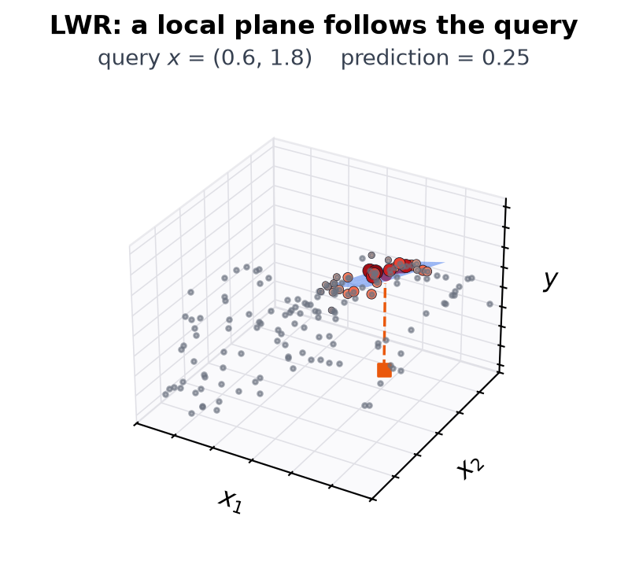
शुरुआतबीच मेंअंत
क्या देखें: ज़मीन पर दो features \(x_1, x_2\) हैं और ऊँचाई पर target \(y\)। Data एक मुड़ी हुई surface से आया है, जिसे कोई एक plane fit नहीं कर सकता। नारंगी चौकोर query point \(x\) है। हर frame में Locally Weighted Regression सिर्फ़ उसी \(x\) के लिए एक नया plane fit करता है (नीला टुकड़ा), जिसमें पास के बिंदुओं का weight \(w^{(i)}\) बड़ा है (बड़े, गहरे लाल बिंदु) और दूर के बिंदुओं का लगभग zero। Query के साथ-साथ plane भी झुकता और घूमता है, और लाल रेखा उसके predictions का निशान है: सीधे टुकड़ों से एक मुड़ा हुआ fit बन जाता है। कीमत यह है कि हर नए \(x\) पर fit दोबारा करना पड़ता है।
चलती animation: cs229_hindi/out/anim/L03_1.gif
Animation 3.2LWR: the bandwidth \(\tau\)
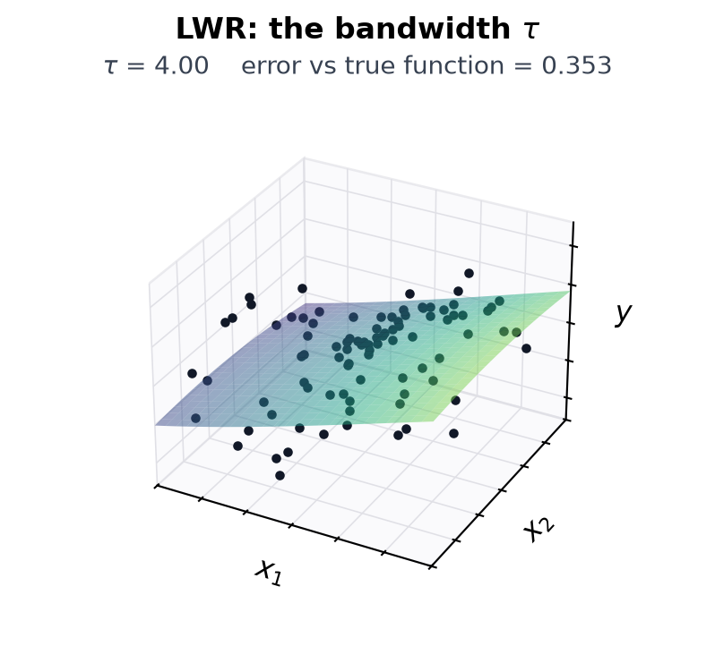
शुरुआतबीच में
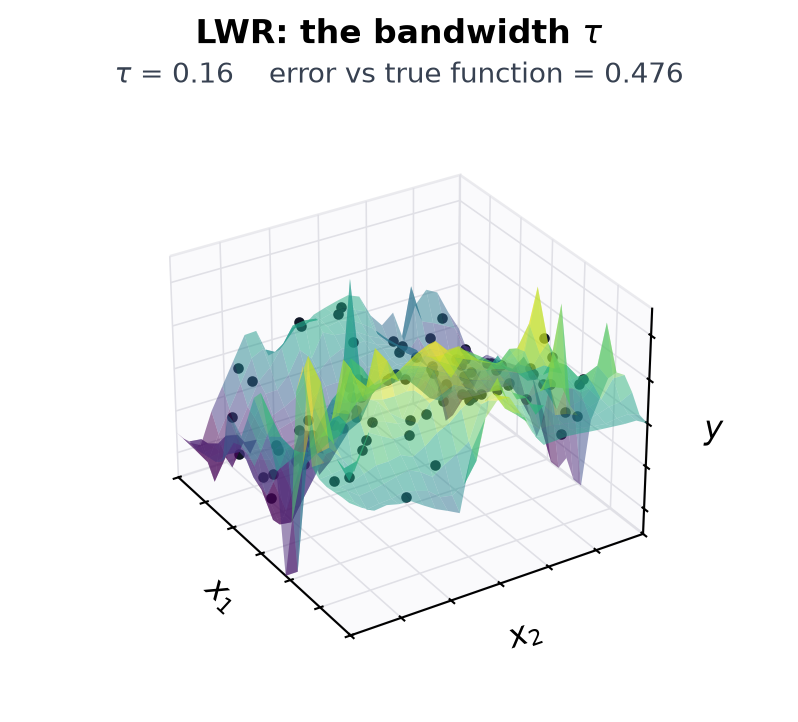
अंत
क्या देखें: वही Locally Weighted Regression, पर अब हर grid point को query मानकर पूरी fitted surface बनाई गई है, और bandwidth \(\tau\) बड़े से छोटा होता जा रहा है। \(\tau\) बड़ा हो तो हर बिंदु का weight लगभग बराबर है और surface लगभग एक plane रह जाती है (underfitting)। बीच के \(\tau\) पर surface data का मोड़ पकड़ लेती है और सच्चे function से error सबसे छोटा होता है। \(\tau\) बहुत छोटा हो तो हर prediction सिर्फ़ दो-चार पड़ोसियों पर टिका होता है, surface noise के पीछे भागकर ऊबड़-खाबड़ हो जाती है और error फिर बढ़ जाता है (overfitting)।
चलती animation: cs229_hindi/out/anim/L03_2.gif
Animation 3.3Logistic regression: sigmoid surface
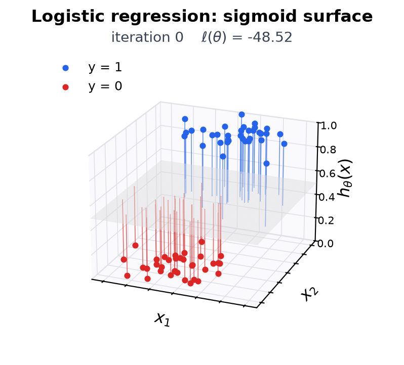
शुरुआतबीच मेंअंत
क्या देखें: ज़मीन पर features \(x_1, x_2\) हैं और ऊँचाई एक probability है। हर बिंदु अपने label की ऊँचाई पर रखा है: लाल बिंदु \(y = 0\) पर, नीले \(y = 1\) पर। Surface \(h_\theta(x) = g(\theta^T x)\) है, यानी model के हिसाब से \(y = 1\) होने की probability। \(\theta = 0\) पर surface हर जगह \(0.5\) है। Gradient ascent के साथ वह एक तरफ़ \(1\) की ओर उठती है और दूसरी तरफ़ \(0\) की ओर गिरती है, और पतली रेखाएँ (errors \(y^{(i)} - h_\theta(x^{(i)})\)) छोटी होती जाती हैं। काली रेखा, जहाँ \(h_\theta(x) = 0.5\) है, decision boundary है: sigmoid मुड़ा हुआ है, पर boundary सीधी है।
चलती animation: cs229_hindi/out/anim/L03_3.gif
Animation 3.4Gradient ascent on \(\ell(\theta)\)
शुरुआत
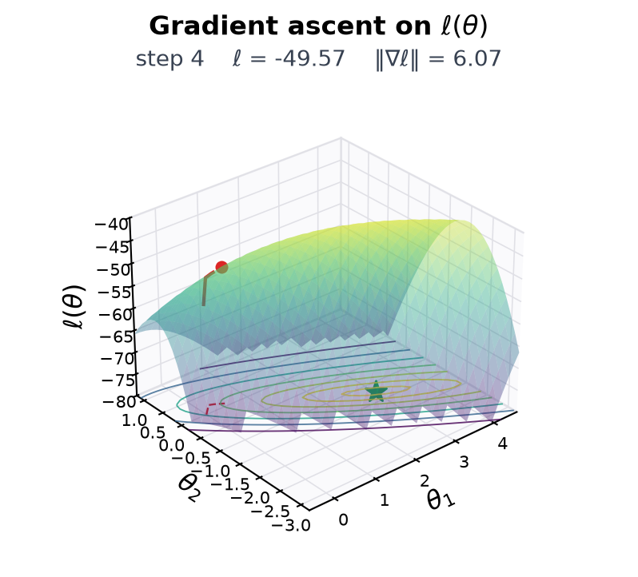
बीच मेंअंत
क्या देखें: अब parameter space देखिए: ज़मीन पर \(\theta_1, \theta_2\) और ऊँचाई पर log-likelihood \(\ell(\theta)\)। Linear Regression का \(J\) एक कटोरा था जिसकी तली ढूँढनी थी। यहाँ \(\ell\) एक concave पहाड़ी है जिसकी चोटी (हरा तारा, maximum likelihood) ढूँढनी है, इसलिए update में plus का निशान है: \(\theta := \theta + \alpha \nabla_\theta \ell(\theta)\)। लाल गेंद \(\theta = 0\) से चलती है। पहले कुछ कदमों में वह तेज़ चढ़ाई चढ़कर पहाड़ी की लंबी पीठ (ridge) पर पहुँच जाती है, फिर पीठ के साथ-साथ बहुत धीरे चोटी की ओर खिसकती है, क्योंकि वहाँ gradient छोटा है। पहाड़ी concave है, इसलिए कोई दूसरी चोटी नहीं है जहाँ वह अटक जाए।
चलती animation: cs229_hindi/out/anim/L03_4.gif
Animation 3.5Newton's method vs gradient ascent
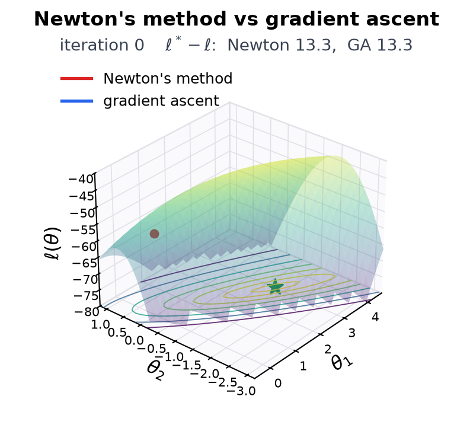
शुरुआत
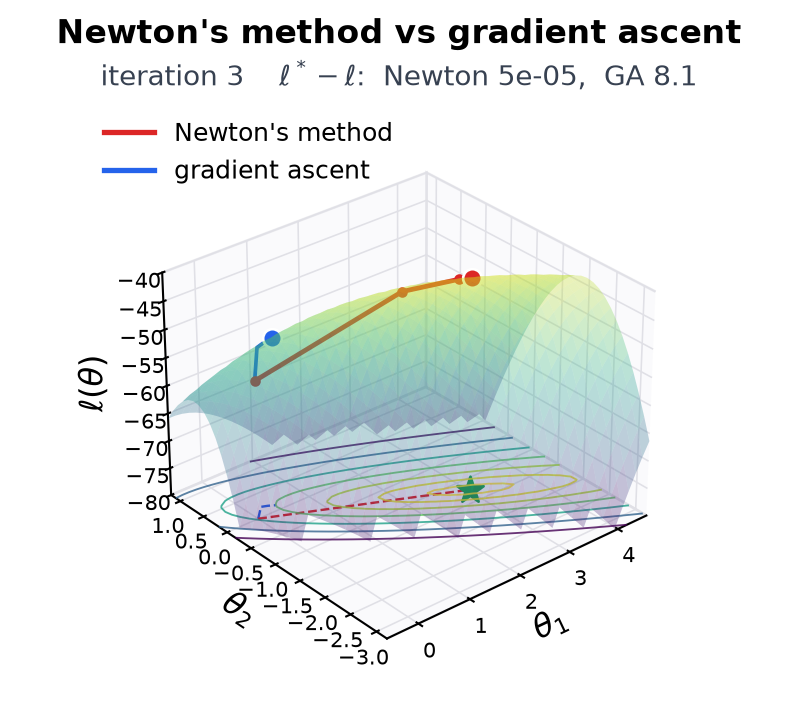
बीच मेंअंत
क्या देखें: उसी पहाड़ी पर, उसी जगह से दो तरीके साथ-साथ चल रहे हैं, और दोनों के लिए गिनती एक ही है: एक iteration। नीला gradient ascent है, जो सिर्फ़ ढलान देखता है। लाल Newton's method है, जो Hessian से surface का मोड़ (curvature) भी देखता है: \(\theta := \theta - H^{-1} \nabla_\theta \ell\)। Newton तीन-चार छलाँगों में चोटी पर है, और status line में उसका बचा हुआ फ़ासला \(\ell^* - \ell\) हर iteration में लगभग square होता जाता है (quadratic convergence)। Gradient ascent को वही दूरी तय करने में सैकड़ों iterations लगते हैं। ध्यान रहे कि Newton का एक iteration महँगा है, क्योंकि उसमें \(H\) बनाकर एक linear system हल करना पड़ता है।
चलती animation: cs229_hindi/out/anim/L03_5.gif
Animation 3.6Newton: jump to the parabola's top
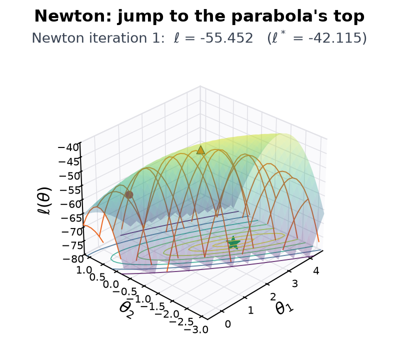
शुरुआतबीच में
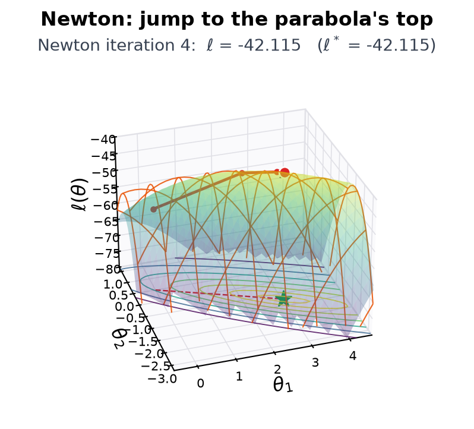
अंत
क्या देखें: Newton's method इतना तेज़ क्यों है? हर iteration में वह वर्तमान \(\theta\) (लाल गेंद) पर \(\ell\) की ऊँचाई, gradient और Hessian तीनों मिलाकर एक quadratic surface (नारंगी जाली) बनाता है जो उस जगह असली पहाड़ी से चिपकी होती है। Quadratic की चोटी सीधे formula से मिल जाती है, और वह ठीक \(\theta - H^{-1} \nabla_\theta \ell\) पर है, इसलिए गेंद सीधे वहीं कूद जाती है। पहली जाली असली पहाड़ी से काफ़ी अलग है, पर चोटी के पास आते-आते जाली और पहाड़ी लगभग एक हो जाती हैं। इसीलिए आखिरी छलाँगें लगभग बिल्कुल सही पड़ती हैं।
चलती animation: cs229_hindi/out/anim/L03_6.gif
भाग 3
Python Example
इसे खुद चलाएँ: cs229_hindi/.venv/bin/python cs229_hindi/chapters/L03_logistic_newton/example.py
"""Lecture 3 example: Logistic Regression (Gradient Ascent बनाम Newton) और LWR (सिर्फ़ NumPy).भाग 1: दो exam scores से admission (0/1) का prediction। एक ही data पर Batch Gradient Ascentऔर Newton's Method (Fisher Scoring / IRLS) चलाकर हर iteration पर log-likelihood देखते हैं।भाग 2: एक मुड़े हुए 1D function पर Locally Weighted Regression (LWR) और bandwidth tau का असर।"""importnumpyasnpimportmatplotlib.pyplotaspltrng=np.random.default_rng(7)defsigmoid(z):returnnp.where(z>=0,1.0/(1.0+np.exp(-z)),np.exp(z)/(1.0+np.exp(z)))deflog_likelihood(theta,X,y):"""Overflow-safe Bernoulli log-likelihood: sum(y*z - log(1 + exp(z)))."""z=X@thetareturnfloat(np.sum(y*z-np.logaddexp(0.0,z)))# ==================== 1. Logistic Regression: Data और Setup ====================m=200s1=rng.normal(65,12,m)# exam 1 scores2=0.85*s1+rng.normal(12,5.5,m)# exam 2 (मज़बूत correlation -> तंग ridge)logits_true=-13.5+0.11*s1+0.10*s2y_all=(rng.uniform(size=m)<sigmoid(logits_true)).astype(float)idx=rng.permutation(m)tr,te=idx[:160],idx[160:]feats=np.c_[s1,s2]mu,sd=feats[tr].mean(axis=0),feats[tr].std(axis=0)X_tr=np.c_[np.ones(len(tr)),(feats[tr]-mu)/sd]X_te=np.c_[np.ones(len(te)),(feats[te]-mu)/sd]y_tr,y_te=y_all[tr],y_all[te]defgradient_ascent(X,y,alpha=0.005,iters=200):theta=np.zeros(X.shape[1])hist=[log_likelihood(theta,X,y)]for_inrange(iters):theta=theta+alpha*(X.T@(y-sigmoid(X@theta)))hist.append(log_likelihood(theta,X,y))returntheta,np.array(hist)defnewtons_method(X,y,iters=7):theta=np.zeros(X.shape[1])hist=[log_likelihood(theta,X,y)]for_inrange(iters):h=sigmoid(X@theta)grad=X.T@(y-h)d=h*(1.0-h)# Fisher / IRLS diagonal weightsneg_H=X.T@(d[:,None]*X)# -H = X^T D X (positive definite)theta=theta+np.linalg.solve(neg_H,grad)hist.append(log_likelihood(theta,X,y))returntheta,np.array(hist)th_ga,ll_ga=gradient_ascent(X_tr,y_tr)th_nt,ll_nt=newtons_method(X_tr,y_tr)ll_star=ll_nt[-1]print("=== Logistic Regression: Newton's Method (प्रति iteration) ===")print("iter log-likelihood gap (l* - l)")fork,valinenumerate(ll_nt):print(f"{k:4d}{val:14.8f}{max(ll_star-val,0.0):12.2e}")print("\n=== Logistic Regression: Gradient Ascent (चुनिंदा iterations) ===")print("iter log-likelihood gap (l* - l)")forkin(0,1,2,5,15,50,100,200):print(f"{k:4d}{ll_ga[k]:14.8f}{max(ll_star-ll_ga[k],0.0):12.2e}")acc_tr=np.mean((sigmoid(X_tr@th_nt)>=0.5)==y_tr)*100acc_te=np.mean((sigmoid(X_te@th_nt)>=0.5)==y_te)*100print(f"\nNewton theta : {np.round(th_nt,5)}")print(f"Ascent theta : {np.round(th_ga,5)}")print(f"Accuracy : train = {acc_tr:.1f}%, test = {acc_te:.1f}%")# ==================== 2. Locally Weighted Regression (LWR) ====================deff_true(x):returnnp.sin(1.4*x)+0.35*np.cos(3.7*x)x_lwr=np.sort(rng.uniform(-3.0,3.0,65))y_lwr=f_true(x_lwr)+rng.normal(0.0,0.26,len(x_lwr))x_grid=np.linspace(-2.85,2.85,160)deflwr_predict(x_train,y_train,queries,tau):"""हर query x के लिए (X^T W X) theta = X^T W y हल करें।"""X_des=np.c_[np.ones_like(x_train),x_train]preds=np.empty_like(queries)foridx_q,qinenumerate(queries):w=np.exp(-((x_train-q)**2)/(2.0*tau**2))A=X_des.T@(w[:,None]*X_des)+1e-10*np.eye(2)b=X_des.T@(w*y_train)th_local=np.linalg.solve(A,b)preds[idx_q]=th_local[0]+th_local[1]*qreturnpredsprint("\n=== Locally Weighted Regression: अलग-अलग bandwidth tau पर MSE ===")fits={}fortau,tagin[(3.0,"underfit (लगभग सीधी रेखा)"),(0.8,"थोड़ा smooth"),(0.28,"संतुलित local fit"),(0.06,"overfit (शोर के पीछे)")]:fits[tau]=lwr_predict(x_lwr,y_lwr,x_grid,tau)mse=np.mean((fits[tau]-f_true(x_grid))**2)print(f" tau = {tau:<5} MSE vs true curve = {mse:.4f} [{tag}]")# ==================== 3. Plots ====================fig,axes=plt.subplots(1,3,figsize=(12.2,3.8))axes[0].semilogy(np.maximum(ll_star-ll_ga,1e-15),color="#2563eb",lw=1.8,label="Gradient Ascent")axes[0].semilogy(np.maximum(ll_star-ll_nt,1e-15),"o-",color="#dc2626",lw=1.8,ms=4.5,label="Newton's Method")axes[0].set(xlabel="iteration",ylabel=r"$\ell(\theta^*) - \ell(\theta)$",title="Convergence to MLE")axes[0].legend()ax1=axes[1]ax1.scatter(X_tr[y_tr==0,1],X_tr[y_tr==0,2],s=18,c="#dc2626",alpha=0.75,label="y = 0")ax1.scatter(X_tr[y_tr==1,1],X_tr[y_tr==1,2],s=18,c="#2563eb",alpha=0.75,label="y = 1")xs=np.linspace(-2.4,2.4,100)ax1.plot(xs,-(th_nt[0]+th_nt[1]*xs)/th_nt[2],"k-",lw=1.8,label="h = 0.5 boundary")ax1.set(xlim=(-2.5,2.5),ylim=(-2.5,2.5),xlabel="scaled exam 1",ylabel="scaled exam 2",title="Logistic Decision Boundary")ax1.legend(loc="lower left",fontsize=8.5)ax2=axes[2]ax2.scatter(x_lwr,y_lwr,s=14,color="#6b7280",alpha=0.65,label="noisy data")ax2.plot(x_grid,f_true(x_grid),"k--",lw=1.2,label="true curve")fortau,colin[(3.0,"#2563eb"),(0.28,"#16a34a"),(0.06,"#ea580c")]:ax2.plot(x_grid,fits[tau],color=col,lw=1.7,label=rf"$\tau = {tau}$")ax2.set(ylim=(-2.0,2.0),xlabel="x",ylabel="y",title=r"LWR across bandwidth $\tau$")ax2.legend(loc="lower left",fontsize=8.2)fig.tight_layout()fig.savefig("result.png",dpi=130)
OUTPUT
=== Logistic Regression: Newton's Method (प्रति iteration) ===
iter log-likelihood gap (l* - l)
0 -110.90354889 4.40e+01
1 -72.21574790 5.34e+00
2 -67.38766866 5.15e-01
3 -66.88222580 9.18e-03
4 -66.87304609 3.90e-06
5 -66.87304219 7.39e-13
6 -66.87304219 1.42e-14
7 -66.87304219 0.00e+00
=== Logistic Regression: Gradient Ascent (चुनिंदा iterations) ===
iter log-likelihood gap (l* - l)
0 -110.90354889 4.40e+01
1 -90.24511212 2.34e+01
2 -81.29152650 1.44e+01
5 -72.07713226 5.20e+00
15 -67.48091338 6.08e-01
50 -66.87682585 3.78e-03
100 -66.87327758 2.35e-04
200 -66.87305204 9.86e-06
Newton theta : [0.14481 1.11612 1.29256]
Ascent theta : [0.14486 1.118 1.2909 ]
Accuracy : train = 78.8%, test = 75.0%
=== Locally Weighted Regression: अलग-अलग bandwidth tau पर MSE ===
tau = 3.0 MSE vs true curve = 0.4959 [underfit (लगभग सीधी रेखा)]
tau = 0.8 MSE vs true curve = 0.1730 [थोड़ा smooth]
tau = 0.28 MSE vs true curve = 0.0281 [संतुलित local fit]
tau = 0.06 MSE vs true curve = 0.0344 [overfit (शोर के पीछे)]
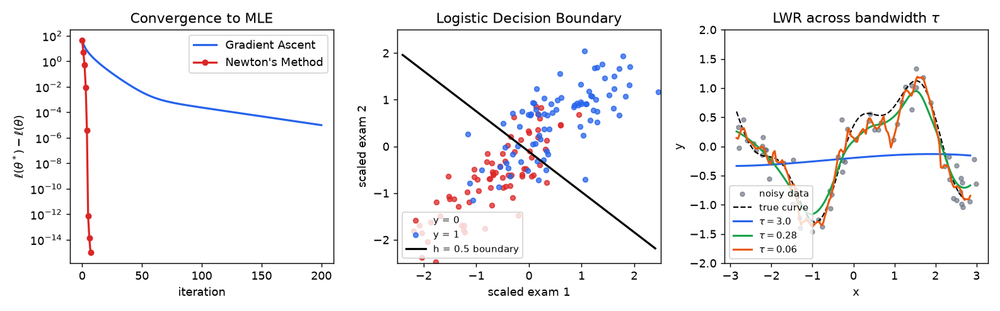
LECTURE 4
Perceptron, Exponential Family और Generalized Linear Models
भाग 1
Theory
इस lecture में: Perceptron learning algorithm (threshold function, update rule, और Logistic Regression से अंतर), Exponential Family का सामान्य रूप (\(\eta, T(y), a(\eta), b(y)\)), Bernoulli और Gaussian distributions को Exponential Family में ढालना, Generalized Linear Models (GLMs) की तीन assumptions, canonical response और link functions, GLM के रूप में Ordinary Least Squares व Logistic Regression, गिनती वाले data के लिए Poisson Regression, और multi-class classification के लिए Softmax Regression व Cross-Entropy loss।
1. एक line में idea
पिछले lectures में आपने देखा कि Linear Regression में prediction \(\theta^T x\) था, और Logistic Regression में \(\frac{1}{1 + e^{-\theta^T x}}\)। पहली नज़र में लगता है कि हर नए काम के लिए हमें कोई नया formula सोचना पड़ता है। पर असल में ये अलग-अलग जुगाड़ नहीं हैं, बल्कि एक ही परिवार के सदस्य हैं।
इस lecture में दो मुख्य हिस्से हैं। पहले हिस्से में हम Perceptron देखेंगे, जो binary classification का एक सख़्त (hard-threshold) नियम है और केवल अपनी गलतियों से सीखता है। दूसरे हिस्से में हम Exponential Family और Generalized Linear Models (GLMs) का एकीकृत ढाँचा बनाएँगे। आप देखेंगे कि जैसे ही आप यह तय करते हैं कि target \(y\) किस तरह का data है (continuous संख्या, 0/1 सिक्का, गिनती \(0, 1, 2, \dots\), या \(k\) में से एक category), GLM की मशीन अपने-आप सही hypothesis, सही loss function, और सही gradient update नियम निकाल कर दे देती है।
2. Perceptron Learning Algorithm
Binary classification में label \(y \in \{0, 1\}\) होता है। Logistic Regression में हमने linear score \(z = \theta^T x\) को smooth sigmoid से गुज़ारा था ताकि \(0\) और \(1\) के बीच की probability मिले। अगर हमें probability नहीं, बल्कि सीधे सख़्त \(0\) या \(1\) का फ़ैसला चाहिए, तो हम threshold function (step function) लगा सकते हैं:
\[g(z) = \begin{cases} 1 & \text{if } z \ge 0 \\ 0 & \text{if } z < 0 \end{cases}\]
यहाँ \(x_0 = 1\) मानकर हमारी hypothesis बनती है \(h_\theta(x) = g(\theta^T x)\)। यानी hyperplane \(\theta^T x = 0\) के एक तरफ़ सभी बिंदुओं के लिए जवाब \(1\) है और दूसरी तरफ़ \(0\)।
Perceptron update rule दिखने में ठीक LMS और Logistic Regression जैसा है:
Vector रूप में इसे \(\theta := \theta + \alpha \left(y^{(i)} - h_\theta(x^{(i)})\right) x^{(i)}\) लिखते हैं। लेकिन यहाँ \(h_\theta(x^{(i)})\) केवल \(0\) या \(1\) हो सकता है, इसलिए अंतर \(\left(y^{(i)} - h_\theta(x^{(i)})\right)\) सिर्फ़ तीन मान लेता है: \(0\), \(+1\), या \(-1\)। इसका ज्यामितीय व्यवहार बहुत रोचक है:
जब prediction सही हो (\(h_\theta(x^{(i)}) = y^{(i)}\)): अंतर \(0\) है। \(\theta\) में कोई बदलाव नहीं होता, चाहे बिंदु boundary के कितना भी पास क्यों न हो।
जब सच \(y^{(i)} = 1\) हो पर model ने \(0\) कहा हो: इसका मतलब \(\theta^T x^{(i)} < 0\) था। तब नियम \(\theta := \theta + \alpha x^{(i)}\) करता है। नया score \((\theta + \alpha x^{(i)})^T x^{(i)} = \theta^T x^{(i)} + \alpha \|x^{(i)}\|^2\) पहले से ज़्यादा धनात्मक हो जाता है, यानी plane घूमकर इस बिंदु को सही तरफ़ लेने की कोशिश करता है।
जब सच \(y^{(i)} = 0\) हो पर model ने \(1\) कहा हो: तब \(\theta^T x^{(i)} \ge 0\) था। नियम \(\theta := \theta - \alpha x^{(i)}\) घटाता है, जिससे नया score \(\theta^T x^{(i)} - \alpha \|x^{(i)}\|^2\) घटकर ऋणात्मक तरफ़ चला जाता है।
नोट करें कि एकल Perceptron में positive scaling \(\alpha > 0\) यदि शून्य से शुरू (\(\theta = 0\)) किया जाए, तो केवल \(\theta\) की लंबाई बदलती है, boundary \(\theta^T x = 0\) की दिशा नहीं, इसलिए अक्सर \(\alpha = 1\) भी रख लिया जाता है।
Perceptron बनाम Logistic Regression
दोनों का update समीकरण एक जैसा दिखता है, फिर भी दोनों की प्रकृति बिल्कुल अलग है:
पहलू
Perceptron
Logistic Regression
Activation \(g(z)\)
सख़्त step function \(1\{z \ge 0\}\)
Smooth sigmoid \(\frac{1}{1 + e^{-z}}\)
Output का अर्थ
केवल class label \(\{0, 1\}\), कोई probability नहीं
सुसंगत probability \(p(y=1 \mid x; \theta)\)
गणितीय आधार
ज्यामितीय गलती-सुधार नियम (Maximum Likelihood नहीं)
Bernoulli likelihood का Maximum Likelihood
Update कब होता है
केवल गलत वर्गीकृत उदाहरणों पर अचानक छलाँग
हर उदाहरण पर \((y - h_\theta(x))\) के अनुपात में smooth कदम
Overlapping data पर
कभी शांत नहीं होता, boundary कूदती रहती है
एक अद्वितीय global optimum पर स्थिर हो जाता है
यदि training data linearly separable है (अर्थात कोई एक hyperplane दोनों classes को बिना किसी गलती के बाँट सकता है), तो Rosenblatt के Perceptron Convergence Theorem के अनुसार Perceptron सीमित संख्या में गलतियाँ करके रुक जाता है। पर यदि data में थोड़ा भी शोर (noise) या overlap हो, तो यह अनंत काल तक भटकता रह सकता है।
3. Exponential Family
अब हम GLMs की नींव रखते हैं। कोई probability distribution Exponential Family का सदस्य कहलाता है यदि उसे इस मानक रूप में लिखा जा सके:
\(y\) से निकाली गई पर्याप्त जानकारी (अधिकतर मामलों में बस \(T(y) = y\))
\(a(\eta)\)
Log partition function
Normalization पद, ताकि कुल probability का जोड़ या समाकलन \(1\) रहे
\(b(y)\)
Base measure
केवल \(y\) पर निर्भर आधार फलन (\(\eta\) से स्वतंत्र)
\(a(\eta)\) का सबसे उपयोगी गुण: चूँकि कुल probability \(1\) होती है, इसलिए \(\int b(y) \exp(\eta T(y))\,dy = \exp(a(\eta))\) (या discrete मामले में \(\sum_y\))। दोनों तरफ़ \(\eta\) के सापेक्ष अवकलन (differentiate) करने पर बिना अलग-अलग जोड़ निकाले सीधे mean और variance मिल जाते हैं:
क्योंकि variance हमेशा अऋणात्मक (\(\ge 0\)) होता है, इसलिए \(a''(\eta) \ge 0\), यानी \(a(\eta)\) हमेशा convex होता है। यही कारण है कि Exponential Family के मॉडलों में log-likelihood हमेशा \(\eta\) के सापेक्ष concave बनता है।
सदस्य 1: Bernoulli Distribution
सिक्का उछालने जैसे binary target \(y \in \{0, 1\}\) के लिए \(\mathrm{Bernoulli}(\phi)\) लें, जहाँ \(p(y=1; \phi) = \phi\):
मानक रूप \(b(y)\exp(\eta T(y) - a(\eta))\) से तुलना करें:
\(T(y) = y\) और \(b(y) = 1\)।
Natural parameter है \(\eta = \log \frac{\phi}{1 - \phi}\) (जिसे log-odds कहते हैं)। इसे \(\phi\) के लिए हल करें तो \(e^\eta = \frac{\phi}{1-\phi}\), जिससे मिलता है:
\[\phi = \frac{1}{1 + e^{-\eta}}\]
देखिए, Logistic Regression का sigmoid function हमने मन से नहीं गढ़ा था; वह Bernoulli के natural parameter से अपने-आप निकल आया! अब \(1 - \phi = \frac{1}{1 + e^\eta}\) रखने पर \(a(\eta) = -\log(1 - \phi) = \log(1 + e^\eta)\) मिलता है। (जाँच लें: \(a'(\eta) = \frac{e^\eta}{1+e^\eta} = \phi = E[y]\)।)
सदस्य 2: Gaussian Distribution
Linear Regression में आपने देखा था कि variance \(\sigma^2\) का मान \(\theta\) के Maximum Likelihood estimate को नहीं बदलता। इसलिए सरलता के लिए \(\sigma^2 = 1\) तय करके \(\mathcal{N}(\mu, 1)\) लिखते हैं:
यहाँ \(b(y) = \frac{1}{\sqrt{2\pi}} \exp\left(-\frac{1}{2}y^2\right)\), \(T(y) = y\), natural parameter सीधे \(\eta = \mu\) है, और \(a(\eta) = \frac{1}{2}\mu^2 = \frac{1}{2}\eta^2\) है। (जाँच लें: \(a'(\eta) = \eta = \mu\) और \(a''(\eta) = 1\)।)
4. Generalized Linear Models (GLMs) का निर्माण
जब भी आपको features \(x\) से किसी target \(y\) का अनुमान लगाना हो, एक Generalized Linear Model तीन सीधी assumptions से बनता है:
Exponential Family की शर्त:\(y \mid x; \theta \sim \mathrm{ExponentialFamily}(\eta)\)। यानी \(x\) और \(\theta\) दिए होने पर \(y\) आपके चुने हुए Exponential Family वितरण का पालन करता है।
Expected value का लक्ष्य: नए \(x\) के लिए हमें \(T(y)\) का औसत मान बताना है। जब \(T(y) = y\) हो, तो हमारी hypothesis होगी \(h_\theta(x) = E[y \mid x; \theta]\)।
रेखीय जुड़ाव: Natural parameter और input features आपस में रेखीय रूप से जुड़े हैं: \(\eta = \theta^T x\) (और यदि \(\eta\) एक vector है तो प्रत्येक अवयव के लिए \(\eta_c = \theta_c^T x\))।
Canonical Response और Canonical Link
वह फलन \(g(\eta) = E[T(y); \eta] = a'(\eta)\), जो natural parameter \(\eta\) को वितरण के माध्य \(\mu\) में बदलता है, canonical response function कहलाता है। इसके साथ हर GLM की hypothesis बस \(h_\theta(x) = g(\theta^T x)\) बन जाती है।
इसका उलटा फलन \(g^{-1}(\mu) = \eta\), जो माध्य \(\mu\) से वापस \(\eta\) देता है, canonical link function कहलाता है।
अब हमारे पुराने दोनों मॉडल दो पंक्तियों में व्युत्पन्न हो जाते हैं:
GLM के रूप में Ordinary Least Squares (OLS): Continuous \(y \in \mathbb{R}\) के लिए Gaussian चुनें। यहाँ \(\mu = \eta\), यानी canonical response पहचान फलन \(g(\eta) = \eta\) है। अतः \(h_\theta(x) = E[y \mid x; \theta] = \mu = \eta = \theta^T x\)।
GLM के रूप में Logistic Regression: Binary \(y \in \{0, 1\}\) के लिए Bernoulli चुनें। यहाँ \(\phi = \frac{1}{1+e^{-\eta}}\), यानी canonical response logistic फलन है और canonical link logit \(\log\frac{\phi}{1-\phi}\) है। अतः \(h_\theta(x) = E[y \mid x; \theta] = \phi = \frac{1}{1 + e^{-\theta^T x}}\)।
सभी GLMs के लिए एक साझा Learning Rule
जब \(T(y) = y\) और \(\eta = \theta^T x\) हो, तो एक उदाहरण का conditional log-likelihood है \(\ell(\theta) = \log b(y) + \eta y - a(\eta)\)। \(\theta_j\) के सापेक्ष chain rule से अवकलन करें:
\[\frac{\partial \ell(\theta)}{\partial \theta_j} = \left( y - a'(\eta) \right) \frac{\partial \eta}{\partial \theta_j} = \left( y - g(\theta^T x) \right) x_j = \left( y - h_\theta(x) \right) x_j\]
अर्थात Exponential Family का कोई भी सदस्य चुनें, Maximum Likelihood के लिए Stochastic Gradient Ascent update हमेशा एक ही सुंदर रूप लेता है:
मान लीजिए \(y \in \{0, 1, 2, 3, \dots\}\) किसी घटना की गिनती है: जैसे एक घंटे में server पर आए requests, दुकान में आए ग्राहक, या दिन भर में कॉल सेंटर के फ़ोन। यहाँ साधारण Linear Regression ऋणात्मक संख्याएँ भी predict कर सकता है जो अर्थहीन हैं। गिनती के लिए स्वाभाविक वितरण Poisson(\(\lambda\)) है, जहाँ माध्य दर \(\lambda > 0\) है:
यह surface हमेशा धनात्मक रहती है और features के साथ घातांकीय (exponential) रूप से बढ़ती है। ऊपर के सार्वत्रिक सूत्र से इसका gradient ascent नियम सीधे लिख सकते हैं:
जब वर्गीकरण में दो से अधिक यानी \(k\) परस्पर अनन्य (mutually exclusive) classes हों, \(y \in \{1, 2, \dots, k\}\), तब हम Categorical (एकल-प्रयास Multinomial) वितरण इस्तेमाल करते हैं। मान लें \(p(y = c; \phi) = \phi_c\), जहाँ \(\sum_{c=1}^{k} \phi_c = 1\)। क्योंकि कुल योग \(1\) है, \(\phi_k = 1 - \sum_{c=1}^{k-1} \phi_c\) बाक़ी से तय हो जाता है।
यहाँ \(T(y) \in \mathbb{R}^{k-1}\) एक indicator vector लेते हैं जिसका \(c\)-वाँ घटक \((T(y))_c = 1\{y = c\}\) है (\(c = 1, \dots, k-1\) के लिए)। तब \(1\{y = k\} = 1 - \sum_{c=1}^{k-1} 1\{y = c\}\) लिखकर probability को यूँ ढालते हैं:
यह ठीक \(b(y)\exp(\eta^T T(y) - a(\eta))\) के रूप में है, जहाँ \(b(y) = 1\), \(\eta_c = \log\frac{\phi_c}{\phi_k}\), और \(a(\eta) = -\log \phi_k\)। सुविधा के लिए \(\eta_k = 0\) लिख लें, तो हर \(c \in \{1, \dots, k\}\) के लिए \(\phi_c = \phi_k e^{\eta_c}\)। इन्हें जोड़कर \(1\) के बराबर रखने पर \(\phi_k \sum_{j=1}^k e^{\eta_j} = 1\), जिससे निकलता है:
इस मानचित्रण को softmax function कहते हैं। अब हर class \(c\) के लिए अपना parameter vector \(\theta_c \in \mathbb{R}^{n+1}\) रखकर \(\eta_c = \theta_c^T x\) लगाएँ (यदि \(\theta_k = 0\) बाँध दें तो ठीक \(k-1\) स्वतंत्र vectors बचते हैं, पर व्यवहार में सममिति के लिए सभी \(k\) vectors \(\Theta = [\theta_1, \dots, \theta_k]\) रखना आसान होता है):
Maximum Likelihood का अर्थ है सही class की अनुमानित probability के ऋण log को न्यूनतम करना। पूरे training set पर औसत लेने से Cross-Entropy loss बनता है:
यदि सही class \(c^*\) के लिए model \(0.99\) probability दे तो \(-\log(0.99) \approx 0.01\) (बहुत कम दंड), और यदि गलत आत्मविश्वास से \(0.01\) दे तो \(-\log(0.01) \approx 4.6\) (भारी दंड)। किसी एक \(\theta_c\) के सापेक्ष अवकलन करने पर \(\frac{\partial}{\partial \theta_c} \log \sum_{j=1}^k e^{\theta_j^T x} = p(y=c \mid x; \Theta)\, x\) आता है, जिससे gradient बहुत साफ़ रूप लेता है:
प्रत्येक input में \(x_0^{(i)} = 1\) जोड़ें और weight matrix \(\Theta \in \mathbb{R}^{(n+1) \times k}\) को शून्य से आरंभ करें।
हर उदाहरण के लिए class scores \(z_c^{(i)} = \theta_c^T x^{(i)}\) निकालें और softmax से probabilities \(\hat{p}_c^{(i)} = \frac{\exp(z_c^{(i)})}{\sum_{j=1}^k \exp(z_j^{(i)})}\) बनाएँ।
One-hot सत्य संकेत \(Y_{ic} = 1\{y^{(i)} = c\}\) घटाकर अंतर \((\hat{p}_c^{(i)} - Y_{ic})\) प्राप्त करें।
पूरे batch पर औसत gradient \(\nabla_{\theta_c} J = \frac{1}{m} \sum_{i=1}^m (\hat{p}_c^{(i)} - Y_{ic})\, x^{(i)}\) निकालें और \(\theta_c := \theta_c - \alpha \nabla_{\theta_c} J\) से update करें।
Convergence के बाद नए \(x\) के लिए \(\arg\max_c\, \theta_c^T x\) को चुनी हुई class घोषित करें।
7. Practical बातें और आम गलतियाँ
Softmax में overflow से बचें (max-shift trick): यदि कोई score \(z_c = 800\) हो जाए तो कंप्यूटर में \(\exp(800)\) अनंत (inf) हो जाता है। हमेशा पहले \(M = \max_j z_j\) घटाएँ और \(\frac{\exp(z_c - M)}{\sum_j \exp(z_j - M)}\) की गणना करें। ऊपर और नीचे \(e^{-M}\) कटने से उत्तर बिल्कुल नहीं बदलता और overflow कभी नहीं होता।
Noisy data पर Perceptron मत छोड़ें: यदि दो classes पूरी तरह अलग नहीं हो सकतीं, तो Perceptron कभी स्थिर नहीं होगा और आख़िरी झटके में बहुत ख़राब रेखा पर रुक सकता है। ऐसे में Logistic Regression या Softmax ज़्यादा भरोसेमंद हैं।
Softmax में अतिरिक्त स्वतंत्रता (overparameterization): सभी \(\theta_c\) में एक ही सदिश \(\psi\) जोड़ने पर probabilities अपरिवर्तित रहती हैं क्योंकि \(\frac{\exp((\theta_c+\psi)^T x)}{\sum_j \exp((\theta_j+\psi)^T x)}\) में \(e^{\psi^T x}\) कट जाता है। अद्वितीय समाधान चाहें तो या तो \(\theta_k = 0\) रखें या \(\Theta\) पर सूक्ष्म L2 regularization लगाएँ।
Multi-class बनाम Multi-label पहचानें: यदि एक उदाहरण केवल एक ही श्रेणी का हो सकता है (जैसे अंक \(0\) से \(9\) में से कोई एक), तो एक Softmax लगाएँ। यदि एक ही उदाहरण पर एक साथ कई लेबल सच हो सकते हैं (जैसे फ़ोटो में 'पहाड़' और 'नदी' दोनों), तो \(k\) स्वतंत्र Binary Logistic classifiers लगाएँ।
8. खुद से पूछें
जब केवल \(k = 2\) classes हों और हम \(\theta_2 = 0\) तय कर दें, तो सिद्ध करें कि Softmax probability \(p(y = 1 \mid x; \Theta)\) ठीक Logistic Regression के sigmoid सूत्र में बदल जाती है।
मान लीजिए आप सड़क दुर्घटनाओं की दैनिक संख्या (\(0, 1, 2, \dots\)) का अनुमान लगा रहे हैं। यहाँ OLS की तुलना में Poisson Regression के दो मुख्य लाभ क्या हैं?
एक बिंदु सही तरफ़ है (\(\theta^T x^{(i)} = +0.05\) जब \(y^{(i)} = 1\)), यानी boundary के बेहद करीब है। उस एक बिंदु को देखकर Perceptron क्या करेगा और Logistic Regression क्या करेगा?
भाग 2
3D Animations
Animation 4.1Perceptron Plane Jumps on Mistakes
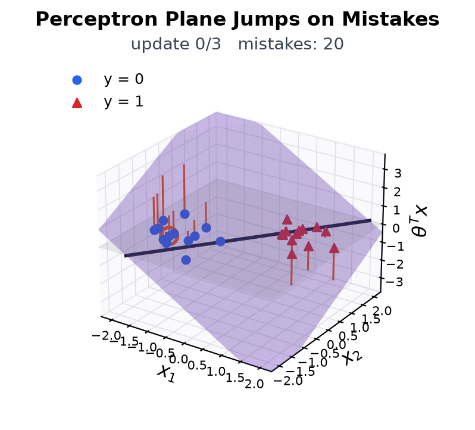
शुरुआतबीच मेंअंत
क्या देखें: ज़मीन (\(z=0\)) पर नीले बिंदु (\(y=0\)) और लाल त्रिकोण (\(y=1\)) दो linearly separable classes हैं। झुका हुआ plane वर्तमान linear score \(z = \theta^T x\) दिखाता है और काली रेखा decision boundary \(\theta^T x = 0\) है। Perceptron हर कदम पर केवल गलत वर्गीकृत बिंदु (नारंगी घेरा) को देखकर \(\theta := \theta + \alpha(y - h_\theta(x))x\) से अचानक छलाँग लगाता है। जैसे ही गलतियाँ शून्य होती हैं, हरा plane स्थिर होकर रुक जाता है।
चलती animation: cs229_hindi/out/anim/L04_1.gif
Animation 4.2Exponential Family \(p(y;\eta)\)
शुरुआतबीच में
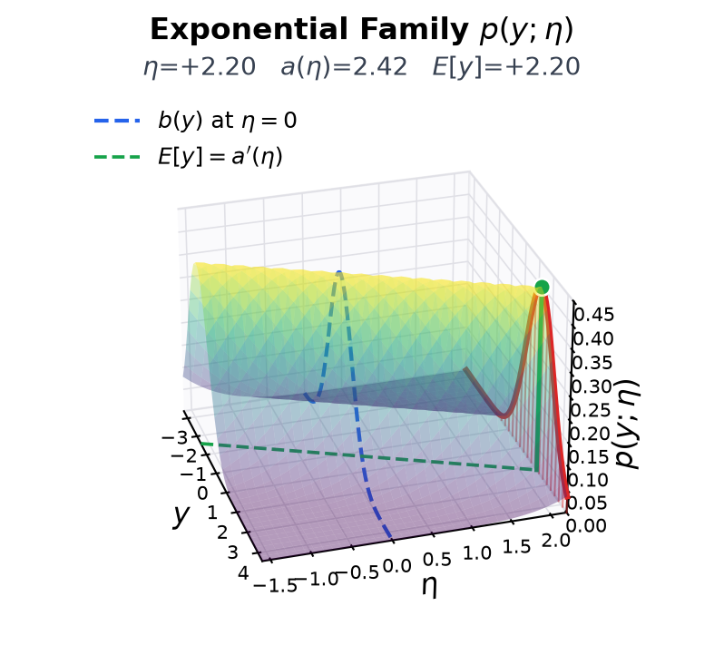
अंत
क्या देखें: यहाँ \((y, \eta)\) तल के ऊपर Exponential Family के Gaussian सदस्य \(p(y;\eta) = b(y)\exp(\eta y - a(\eta))\) की 3D density दिखाई गई है। नीली टूटी रेखा \(\eta = 0\) पर base measure \(b(y)\) है। जैसे-जैसे लाल काट (slice) \(\eta\) को बढ़ाती है, \(\exp(\eta y)\) वितरण को दाईं ओर झुकाता है और \(a(\eta) = \frac{1}{2}\eta^2\) कुल क्षेत्रफल को \(1\) बनाए रखता है। शिखर हमेशा हरी रेखा \(E[y;\eta] = a'(\eta) = \eta\) पर चलता है।
चलती animation: cs229_hindi/out/anim/L04_2.gif
Animation 4.3GLM: Plane Morphs to Mean Surface
शुरुआतबीच मेंअंत
क्या देखें: GLM दो चरणों में काम करता है: पहले features से सपाट linear plane \(\eta = \theta^T x\) बनता है (धूसर जाली), फिर canonical response \(g(\eta) = a'(\eta)\) उसे मोड़कर mean surface \(E[y\mid x]\) बनाता है। यहाँ Bernoulli GLM के लिए सपाट plane धीरे-धीरे मोड़ खाकर \([0, 1]\) के बीच बंधी sigmoid surface में बदल रहा है। नारंगी रेखाएँ दिखाती हैं कि कैसे बड़े धनात्मक \(\eta\) नीचे \(1\) पर और ऋणात्मक \(\eta\) ऊपर \(0\) पर दब जाते हैं।
चलती animation: cs229_hindi/out/anim/L04_3.gif
Animation 4.4Poisson GLM: \(\exp(\theta^T x)\)
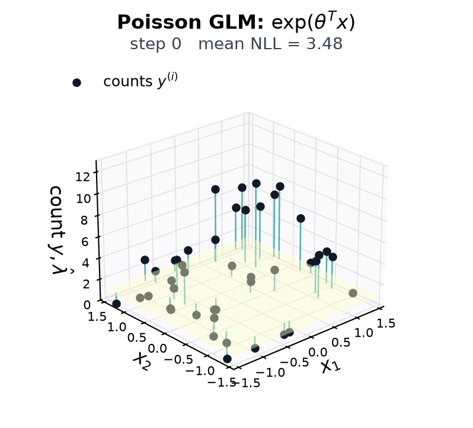
शुरुआतबीच में
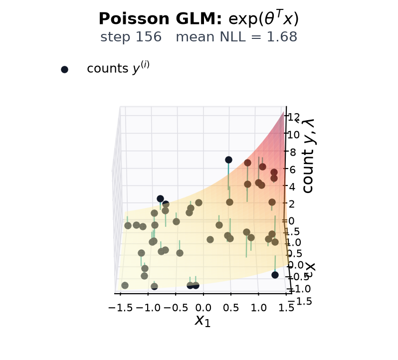
अंत
क्या देखें: गिनती वाले data \(y \in \{0, 1, 2, \dots\}\) (काले बिंदु) पर Poisson GLM fit हो रहा है। शुरू में \(\theta = 0\) है, इसलिए अनुमानित दर \(\hat{\lambda}(x) = \exp(0) = 1\) की सपाट चादर है। Gradient Ascent चलते ही surface \(\hat{\lambda}(x) = \exp(\theta^T x)\) घातांकीय रूप से ऊपर उठती है, हमेशा धनात्मक रहती है, और residuals छोटे होते जाते हैं।
चलती animation: cs229_hindi/out/anim/L04_4.gif
Animation 4.5Softmax: 3 Class Surfaces Sharpen
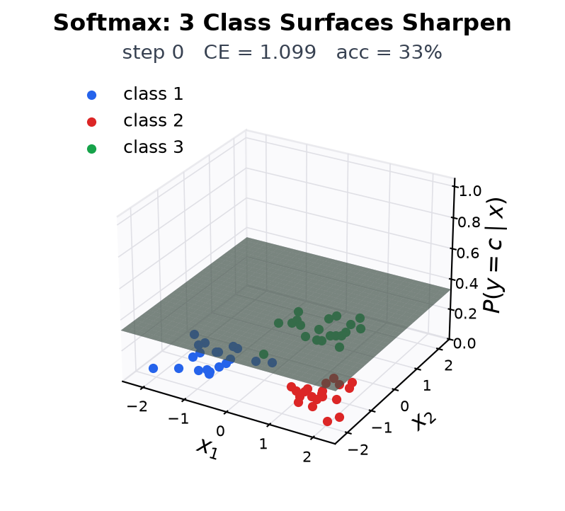
शुरुआत
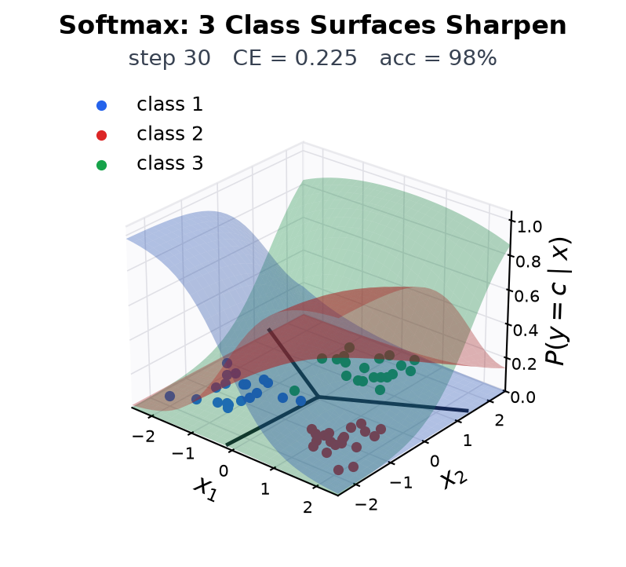
बीच मेंअंत
क्या देखें: तीन classes (नीली, लाल, हरी) के data पर Softmax Regression Cross-Entropy loss को कम कर रहा है। शुरू में \(\Theta = 0\) होने से तीनों probability surfaces \(P(y=c\mid x) = 1/3\) पर सपाट हैं। जैसे-जैसे Gradient Descent आगे बढ़ता है, हर class के क्षेत्र में उसकी surface \(1\) की ओर उठती है और बाक़ी दो \(0\) की ओर झुकती हैं, जबकि हर बिंदु पर तीनों का जोड़ \(1\) रहता है।
चलती animation: cs229_hindi/out/anim/L04_5.gif
भाग 3
Python Example
इसे खुद चलाएँ: cs229_hindi/.venv/bin/python cs229_hindi/chapters/L04_perceptron_glm/example.py
"""Lecture 4 example: Softmax Regression और Perceptron शुरू से (सिर्फ़ NumPy).भाग A: sklearn के 3-class Iris dataset पर Cross-Entropy loss के साथ Softmax Regression।भाग B: Iris के linearly separable 2-class subset (setosa बनाम versicolor) पर Perceptron, और overlapping subset (versicolor बनाम virginica) के साथ उसकी तुलना।"""importnumpyasnpimportmatplotlib.pyplotaspltfromsklearn.datasetsimportload_irisrng=np.random.default_rng(42)iris=load_iris()names=iris.target_names# ['setosa', 'versicolor', 'virginica']# ---------- 1. Data तैयार करें: train (120) और test (30) split ----------idx=rng.permutation(len(iris.target))tr,te=idx[:120],idx[120:]defprep_design(raw_X,train_idx,test_idx):"""Training statistics से scale करें और x0 = 1 जोड़ें।"""mu,sd=raw_X[train_idx].mean(axis=0),raw_X[train_idx].std(axis=0)X_tr=np.c_[np.ones(len(train_idx)),(raw_X[train_idx]-mu)/sd]X_te=np.c_[np.ones(len(test_idx)),(raw_X[test_idx]-mu)/sd]returnX_tr,X_te,mu,sd# 2 petal features (visualisation के लिए) और सभी 4 features दोनों तैयार रखेंX_tr2,X_te2,mu2,sd2=prep_design(iris.data[:,2:4],tr,te)X_tr4,X_te4,_,_=prep_design(iris.data,tr,te)y_tr,y_te=iris.target[tr],iris.target[te]# ---------- 2. भाग A: Softmax Regression और Cross-Entropy ----------defsoftmax(Z):"""Overflow से बचने के लिए पहले हर row का max घटाएँ।"""Zs=Z-Z.max(axis=1,keepdims=True)exp_Z=np.exp(Zs)returnexp_Z/exp_Z.sum(axis=1,keepdims=True)defcross_entropy(P,y):"""J(Theta) = -(1/m) * sum log P(y = y^(i) | x^(i))"""returnfloat(-np.mean(np.log(P[np.arange(len(y)),y]+1e-12)))deffit_softmax(X,y,k=3,alpha=0.5,iters=350):Theta=np.zeros((X.shape[1],k))Y_oh=np.eye(k)[y]ce_hist,acc_hist=[],[]for_inrange(iters):P=softmax(X@Theta)ce_hist.append(cross_entropy(P,y))acc_hist.append(float(np.mean(P.argmax(axis=1)==y)))grad=(X.T@(P-Y_oh))/len(y)# (1/m) sum (p_c - 1{y=c}) xTheta-=alpha*gradreturnTheta,ce_hist,acc_histTheta2,ce_hist,acc_hist=fit_softmax(X_tr2,y_tr)Theta4,ce_hist4,_=fit_softmax(X_tr4,y_tr)print("=== भाग A: 3-Class Iris पर Softmax Regression ===")print("iter train CE loss train accuracy")forstepin(0,10,50,150,349):print(f"{step:4d}{ce_hist[step]:13.4f}{acc_hist[step]*100:13.1f}%")P_te2=softmax(X_te2@Theta2)P_te4=softmax(X_te4@Theta4)print(f"\n2 petal features -> train acc: {acc_hist[-1]*100:.1f}%, test acc: {np.mean(P_te2.argmax(1)==y_te)*100:.1f}%, test CE: {cross_entropy(P_te2,y_te):.4f}")print(f"सभी 4 features -> train acc: {np.mean(softmax(X_tr4@Theta4).argmax(1)==y_tr)*100:.1f}%, test acc: {np.mean(P_te4.argmax(1)==y_te)*100:.1f}%, test CE: {cross_entropy(P_te4,y_te):.4f}")print("\nतीनों classes के एक-एक test फूल पर Softmax probabilities [setosa, versicolor, virginica]:")sample_ids=[int(np.where(y_te==c)[0][0])forcinrange(3)]foriinsample_ids:probs=P_te4[i]pred_name,true_name=names[probs.argmax()],names[y_te[i]]print(f" test #{i:2d}: p = [{probs[0]:.3f}, {probs[1]:.3f}, {probs[2]:.3f}] (sum={probs.sum():.2f}) -> pred: {pred_name:<10} (सच: {true_name})")# ---------- 3. भाग B: Perceptron (threshold नियम) ----------deffit_perceptron(X,y,alpha=1.0,max_epochs=25):theta=np.zeros(X.shape[1])mistakes_per_epoch=[]for_inrange(max_epochs):mistakes=0forxi,yiinzip(X,y):pred=int(xi@theta>=0.0)# hard threshold g(z) = 1{z >= 0}ifpred!=yi:theta+=alpha*(yi-pred)*ximistakes+=1mistakes_per_epoch.append(mistakes)ifmistakes==0:breakreturntheta,mistakes_per_epoch# Separable subset: setosa (0) बनाम versicolor (1), petal length व petal widthsep_mask=iris.target<2X_sep=np.c_[np.ones(sep_mask.sum()),iris.data[sep_mask,2:4]]y_sep=iris.target[sep_mask]perm_s=rng.permutation(len(y_sep))th_perc,err_sep=fit_perceptron(X_sep[perm_s],y_sep[perm_s])# Overlapping subset: versicolor (0) बनाम virginica (1)ov_mask=iris.target>=1X_ov=np.c_[np.ones(ov_mask.sum()),iris.data[ov_mask,2:4]]y_ov=(iris.target[ov_mask]==2).astype(int)perm_o=rng.permutation(len(y_ov))_,err_ov=fit_perceptron(X_ov[perm_o],y_ov[perm_o],max_epochs=15)print("\n=== भाग B: 2-Class Subsets पर Perceptron ===")print(f"Setosa vs Versicolor (separable): प्रति epoch गलतियाँ = {err_sep}")print(f" -> {len(err_sep)} epochs में शून्य गलतियों पर रुक गया, accuracy = {np.mean((X_sep@th_perc>=0)==y_sep)*100:.1f}%")print(f"Versicolor vs Virginica (overlap): 15 epochs में गलतियाँ = {err_ov}")print(" -> Overlapping data पर Perceptron कभी 0 गलतियों पर शांत नहीं होता।")# ---------- 4. Plots ----------fig,axes=plt.subplots(1,3,figsize=(12.2,3.8))axes[0].plot(ce_hist,lw=2,color="#2563eb",label="2 petal features")axes[0].plot(ce_hist4,lw=2,ls="--",color="#dc2626",label="all 4 features")axes[0].set(xlabel="GD iteration",ylabel="Cross-Entropy J(Theta)",title="Softmax Cross-Entropy Curve")axes[0].legend(fontsize=8.5)gx,gy=np.meshgrid(np.linspace(0.8,7.2,180),np.linspace(0.0,2.7,180))G_std=np.c_[np.ones(gx.size),(np.c_[gx.ravel(),gy.ravel()]-mu2)/sd2]Z_cls=softmax(G_std@Theta2).argmax(axis=1).reshape(gx.shape)axes[1].contourf(gx,gy,Z_cls,levels=[-0.5,0.5,1.5,2.5],colors=["#dbeafe","#fee2e2","#dcfce7"],alpha=0.85)forc,colinenumerate(["#2563eb","#dc2626","#16a34a"]):m_c=iris.target==caxes[1].scatter(iris.data[m_c,2],iris.data[m_c,3],s=18,color=col,label=names[c],edgecolor="white",lw=0.4)axes[1].set(xlabel="petal length (cm)",ylabel="petal width (cm)",title="Softmax 3-Class Regions")axes[1].legend(fontsize=8,loc="upper left")forc,col,labin[(0,"#2563eb","setosa (y=0)"),(1,"#dc2626","versicolor (y=1)")]:m_c=y_sep==caxes[2].scatter(X_sep[m_c,1],X_sep[m_c,2],s=22,color=col,label=lab)xs=np.linspace(1.0,5.2,100)axes[2].plot(xs,-(th_perc[0]+th_perc[1]*xs)/th_perc[2],"k-",lw=2,label="Perceptron boundary")axes[2].set(xlim=(0.8,5.4),ylim=(-0.1,1.9),xlabel="petal length (cm)",ylabel="petal width (cm)",title="Perceptron (Separable Subset)")axes[2].legend(fontsize=8,loc="upper left")fig.tight_layout()fig.savefig("result.png",dpi=130)
OUTPUT
=== भाग A: 3-Class Iris पर Softmax Regression ===
iter train CE loss train accuracy
0 1.0986 30.8%
10 0.4803 85.8%
50 0.2563 95.0%
150 0.1573 95.0%
349 0.1150 95.8%
2 petal features -> train acc: 95.8%, test acc: 96.7%, test CE: 0.0763
सभी 4 features -> train acc: 97.5%, test acc: 96.7%, test CE: 0.0820
तीनों classes के एक-एक test फूल पर Softmax probabilities [setosa, versicolor, virginica]:
test # 1: p = [0.999, 0.001, 0.000] (sum=1.00) -> pred: setosa (सच: setosa)
test # 5: p = [0.009, 0.961, 0.030] (sum=1.00) -> pred: versicolor (सच: versicolor)
test # 0: p = [0.000, 0.006, 0.994] (sum=1.00) -> pred: virginica (सच: virginica)
=== भाग B: 2-Class Subsets पर Perceptron ===
Setosa vs Versicolor (separable): प्रति epoch गलतियाँ = [7, 0]
-> 2 epochs में शून्य गलतियों पर रुक गया, accuracy = 100.0%
Versicolor vs Virginica (overlap): 15 epochs में गलतियाँ = [56, 48, 45, 35, 37, 25, 27, 27, 27, 27, 27, 25, 25, 25, 24]
-> Overlapping data पर Perceptron कभी 0 गलतियों पर शांत नहीं होता।
LECTURE 5
Gaussian Discriminant Analysis और Naive Bayes
भाग 1
Theory
इस lecture में: Discriminative और Generative learning का फ़र्क, Bayes rule से prediction, multivariate Gaussian, Gaussian Discriminant Analysis (GDA) और उसके Maximum Likelihood estimates, GDA की linear decision boundary, GDA बनाम Logistic Regression, और discrete features के लिए Naive Bayes (spam filter का उदाहरण)।
1. एक line में idea
अब तक के algorithms (जैसे Logistic Regression) सीधे यह सीखते थे कि \(x\) दिया हो तो \(y\) क्या होगा। वे दो classes के बीच की सीमा ढूँढते थे। Generative algorithm उल्टी तरफ़ से सोचता है: वह हर class का अलग नक्शा बनाता है कि उस class के examples कैसे दिखते हैं। नया \(x\) आए तो वह पूछता है कि यह किस class के नक्शे से ज़्यादा मेल खाता है।
मान लीजिए हाथी और कुत्ते पहचानने हैं। Discriminative तरीका दोनों को अलग करने वाली रेखा ढूँढता है। Generative तरीका पहले हाथियों को देखकर हाथी का model बनाता है, फिर कुत्तों को देखकर कुत्ते का model, और नए जानवर को दोनों models से मिलाकर देखता है।
इस lecture में दो generative algorithms हैं। GDA तब काम आता है जब features continuous हों और हर class का data Gaussian जैसा हो। Naive Bayes तब, जब features discrete हों, जैसे "email में यह शब्द है या नहीं"।
2. Discriminative बनाम Generative
क्या सीखता है
उदाहरण
Discriminative
सीधे \(p(y \mid x)\), या \(x\) से label तक का map
Logistic Regression, Perceptron
Generative
\(p(x \mid y)\) (हर class का model) और \(p(y)\) (class prior)
GDA, Naive Bayes
Generative model से prediction के लिए Bayes rule लगाते हैं:
अगर हमें सिर्फ़ सबसे संभावित class चाहिए, तो denominator \(p(x)\) निकालने की ज़रूरत नहीं। वह \(y\) पर निर्भर नहीं करता, इसलिए दोनों classes के लिए एक ही है और तुलना पर असर नहीं डालता:
\(n\) dimensions का Gaussian \(\mathcal{N}(\mu, \Sigma)\) दो चीज़ों से तय होता है: mean vector \(\mu \in \mathbb{R}^n\) और covariance matrix \(\Sigma \in \mathbb{R}^{n \times n}\) (symmetric और positive definite)। इसकी density है:
यहाँ \(|\Sigma|\) का मतलब \(\Sigma\) का determinant है। इस distribution के लिए \(E[X] = \mu\) और \(\mathrm{Cov}(X) = E\left[(X-\mu)(X-\mu)^T\right] = \Sigma\)।
\(\mu\) बदलने से पहाड़ी (density का उभार) सिर्फ़ खिसकती है, आकार नहीं बदलता। आकार \(\Sigma\) तय करता है:
\(\Sigma\)
contours कैसे दिखते हैं
\(I\) (identity)
गोल घेरे
\(cI\), \(c\) छोटा या बड़ा
गोल ही, पर छोटा \(c\): पतली और ऊँची पहाड़ी; बड़ा \(c\): चौड़ी और नीची (कुल volume हमेशा 1)
Diagonal, entries अलग-अलग
axes की दिशा में खिंचे ellipse
Off-diagonal entry positive
ellipse \(x_1 = x_2\) की दिशा में झुका (\(x_1\) बढ़े तो \(x_2\) भी बढ़ता है)
Off-diagonal entry negative
ellipse उल्टी दिशा में झुका
4. GDA Model
Classification problem है, \(y \in \{0, 1\}\) और \(x \in \mathbb{R}^n\)। GDA यह मान लेता है:
\[\begin{aligned} y &\sim \mathrm{Bernoulli}(\phi) \\ x \mid y=0 &\sim \mathcal{N}(\mu_0, \Sigma) \\ x \mid y=1 &\sim \mathcal{N}(\mu_1, \Sigma) \end{aligned}\]
यानी \(p(y) = \phi^y (1-\phi)^{1-y}\), और हर class एक Gaussian है। दोनों classes के mean अलग हैं (\(\mu_0\), \(\mu_1\)), पर covariance \(\Sigma\)एक ही है। Parameters हैं \(\phi, \mu_0, \mu_1, \Sigma\)।
Joint log-likelihood
Logistic Regression में हम conditional likelihood \(\prod_i p(y^{(i)} \mid x^{(i)})\) को maximize करते थे। Generative model में joint likelihood \(\prod_i p(x^{(i)}, y^{(i)})\) को maximize करते हैं:
\(\phi\) के लिए: सिर्फ़ दूसरा sum \(\phi\) पर निर्भर है: \(\sum_i \left[ y^{(i)} \log \phi + (1 - y^{(i)}) \log(1-\phi) \right]\)। मान लें \(m_1 = \sum_i 1\{y^{(i)}=1\}\)। Derivative को zero रखें: \(\frac{m_1}{\phi} - \frac{m - m_1}{1-\phi} = 0\), जिससे \(\phi = m_1 / m\)।
\(\mu_1\) के लिए: सिर्फ़ \(y^{(i)}=1\) वाले terms बचते हैं: \(-\frac{1}{2} \sum_{i:\, y^{(i)}=1} (x^{(i)} - \mu_1)^T \Sigma^{-1} (x^{(i)} - \mu_1)\)। इसका gradient \(\Sigma^{-1} \sum_{i:\, y^{(i)}=1} (x^{(i)} - \mu_1)\) है। इसे zero रखने पर \(\mu_1\) class 1 के examples का औसत निकलता है। \(\mu_0\) के लिए भी यही।
\(\Sigma\) के लिए:\(\Sigma\) वाले terms हैं \(-\frac{m}{2} \log|\Sigma| - \frac{1}{2} \sum_i (x^{(i)} - \mu_{y^{(i)}})^T \Sigma^{-1} (x^{(i)} - \mu_{y^{(i)}})\)। अब \(\nabla_A \log|A| = A^{-1}\) का इस्तेमाल करके \(\Sigma^{-1}\) के सापेक्ष derivative लें और zero रखें: \(\frac{m}{2}\Sigma - \frac{1}{2} \sum_i (x^{(i)} - \mu_{y^{(i)}})(x^{(i)} - \mu_{y^{(i)}})^T = 0\)।
दोनों brackets खोलें। \(-\frac{1}{2} x^T \Sigma^{-1} x\) और \(+\frac{1}{2} x^T \Sigma^{-1} x\) आपस में कट जाते हैं। यही असली बात है: quadratic term गायब हो जाता है और बचता है
Decision boundary वह जगह है जहाँ \(p(y=1 \mid x) = 0.5\), यानी \(\theta^T x + \theta_0 = 0\)। यह एक सीधी line (या hyperplane) है। ध्यान दें कि prior \(\phi\) सिर्फ़ \(\theta_0\) में आता है: \(\phi\) बढ़ाने से boundary की दिशा नहीं बदलती, वह बस class 0 की तरफ़ खिसक जाती है। अगर दोनों classes के \(\Sigma\) अलग होते, तो quadratic term नहीं कटता और boundary curved होती।
6. GDA बनाम Logistic Regression
ऊपर हमने देखा कि GDA का posterior ठीक Logistic Regression वाले sigmoid रूप में है। पर दोनों algorithms एक ही data पर अलग-अलग \(\theta\) देते हैं, क्योंकि वे अलग चीज़ maximize करते हैं।
GDA \(\Rightarrow\) logistic posterior, पर उल्टा सच नहीं। अगर \(x \mid y\) Gaussian (साझा \(\Sigma\)) है तो \(p(y \mid x)\) logistic है। पर \(p(y \mid x)\) logistic होने से यह नहीं निकलता कि \(x \mid y\) Gaussian है। जैसे, \(x \mid y=0 \sim \mathrm{Poisson}(\lambda_0)\) और \(x \mid y=1 \sim \mathrm{Poisson}(\lambda_1)\) हो, तब भी posterior logistic ही होता है।
GDA की assumptions ज़्यादा मज़बूत हैं। जब वे सही (या लगभग सही) हों, तो GDA data का बेहतर इस्तेमाल करता है और कम training examples में अच्छा model दे देता है (asymptotically efficient)।
Logistic Regression ज़्यादा robust है। वह कम मानकर चलता है, इसलिए data Gaussian न हो तब भी ठीक काम करता है। बड़े training set पर वह अक्सर GDA के बराबर या उससे बेहतर रहता है।
अब features discrete हैं। उदाहरण: spam filter। एक vocabulary (शब्दों की सूची) लें जिसमें \(n\) शब्द हैं। हर email को एक binary vector \(x \in \{0,1\}^n\) से दिखाएँ: \(x_j = 1\) अगर vocabulary का \(j\)-वाँ शब्द email में है, वरना \(x_j = 0\)। \(y = 1\) का मतलब spam है।
अगर \(n = 50000\) हो तो \(x\) के \(2^{50000}\) संभव values हैं। \(p(x \mid y)\) को सीधे model करना असंभव है। इसलिए एक बहुत मज़बूत assumption लेते हैं।
Naive Bayes assumption:\(y\) दिया हो, तो सारे \(x_j\) आपस में conditionally independent हैं। यानी अगर पता है कि email spam है, तो उसमें "buy" होने की जानकारी से "price" होने की probability नहीं बदलती। Chain rule और इस assumption से:
Parameters:\(\phi_{j \mid y=1} = p(x_j = 1 \mid y = 1)\), \(\phi_{j \mid y=0} = p(x_j = 1 \mid y = 0)\) और \(\phi_y = p(y = 1)\)। कुल \(2n + 1\) parameters, \(2^n\) की जगह।
Joint likelihood \(\mathcal{L}(\phi_y, \phi_{j \mid y=0}, \phi_{j \mid y=1}) = \prod_{i=1}^{m} p(x^{(i)}, y^{(i)})\) है। इसका log लेने पर हर parameter का अपना अलग Bernoulli term बनता है, इसलिए हल ठीक GDA के \(\phi\) जैसा निकलता है: हर estimate एक अनुपात है।
जहाँ \(p(x_j \mid y=1) = \phi_{j \mid y=1}\) अगर \(x_j = 1\), और \(1 - \phi_{j \mid y=1}\) अगर \(x_j = 0\)। जिस class का posterior बड़ा हो, वही चुनें।
एक कमी: शून्य probability
मान लीजिए नए email में ऐसा शब्द है जो training set में कभी आया ही नहीं (vocabulary का शब्द \(j\))। तब \(\phi_{j \mid y=1} = 0\) और \(\phi_{j \mid y=0} = 0\)। दोनों products zero हो जाते हैं और posterior \(\frac{0}{0}\) बन जाता है। सिर्फ़ इसलिए कि कोई घटना अब तक नहीं दिखी, उसकी probability zero मान लेना गलत है। अगला lecture इसे Laplace smoothing से ठीक करता है।
Multinomial event model (झलक)
ऊपर वाला model (Bernoulli event model) सिर्फ़ यह देखता है कि शब्द आया या नहीं, कितनी बार आया यह नहीं। Text के लिए एक बेहतर model multinomial event model है। उसमें \(x_j\) email के \(j\)-वें स्थान पर आए शब्द की पहचान है, \(x_j \in \{1, \dots, |V|\}\), और \(p(x, y) = p(y) \prod_{j} p(x_j \mid y)\)। इस तरह शब्दों की गिनती भी काम आती है। इसका पूरा विवरण अगले lecture में है।
8. Practical बातें और आम गलतियाँ
Products की जगह logs जोड़ें: हज़ारों छोटी probabilities का product computer में underflow होकर 0 बन जाता है। \(\log p(y) + \sum_j \log p(x_j \mid y)\) की तुलना करें।
Gaussian assumption जाँचें: हर class के features का histogram या scatter plot देखें। Data बहुत skewed हो या उसमें outliers हों, तो mean और \(\Sigma\) बिगड़ते हैं और GDA की boundary भी। ऐसे में Logistic Regression सुरक्षित है।
\(\Sigma\) साझा है:\(\Sigma\) बनाते समय हर example में से उसकी अपनी class का mean घटाएँ, पूरे data का mean नहीं।
\(m\) छोटा, \(n\) बड़ा: तब \(\Sigma\) singular हो सकता है और \(\Sigma^{-1}\) नहीं निकलेगा।
Naive Bayes की probabilities पर ज़्यादा भरोसा न करें: independence की assumption असल में गलत होती है, इसलिए posterior अक्सर 0 या 1 के बहुत पास आता है। फिर भी class का फ़ैसला अक्सर सही होता है, और algorithm बहुत तेज़ और सरल है।
Continuous feature पर Naive Bayes: feature को कुछ buckets में बाँटकर discrete बना लें।
9. खुद से पूछें
\(\arg\max_y p(y \mid x)\) निकालते समय \(p(x)\) क्यों छोड़ सकते हैं? अगर आपको class नहीं, बल्कि probability की value चाहिए, तब भी छोड़ सकते हैं क्या?
GDA में दोनों classes का \(\Sigma\) अलग-अलग (\(\Sigma_0 \ne \Sigma_1\)) हो, तो \(a(x)\) में कौन सा term नहीं कटेगा और boundary कैसी दिखेगी?
Vocabulary में \(n = 1000\) शब्द हैं। Naive Bayes assumption के बिना \(p(x \mid y)\) के लिए कितने parameters चाहिए, और उसके साथ कितने?
भाग 2
3D Animations
Animation 5.1GDA: fitting two Gaussians
शुरुआत
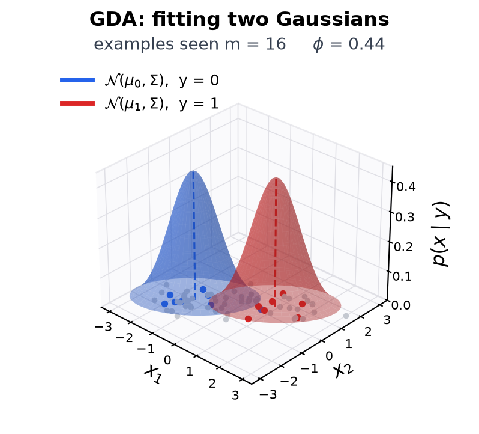
बीच मेंअंत
क्या देखें: फ़र्श पर दो features \(x_1, x_2\) हैं और ऊँचाई density \(p(x \mid y)\) है। Training examples एक-एक करके आते हैं (रंगीन बिंदु देखे जा चुके हैं, धूसर अभी नहीं)। हर frame में GDA वही करता है जो formulas कहते हैं: \(\phi\) के लिए गिनती, \(\mu_0\) और \(\mu_1\) के लिए हर class का औसत, और साझा \(\Sigma\)। शुरू में थोड़े data पर दोनों पहाड़ियाँ गलत जगह और गलत आकार की हैं। जैसे-जैसे \(m\) बढ़ता है, वे अपने बिंदुओं के ऊपर जम जाती हैं। ध्यान दें कि दोनों पहाड़ियों का आकार हमेशा एक जैसा है, क्योंकि \(\Sigma\) एक ही है।
चलती animation: cs229_hindi/out/anim/L05_1.gif
Animation 5.2How \(\Sigma\) shapes a Gaussian
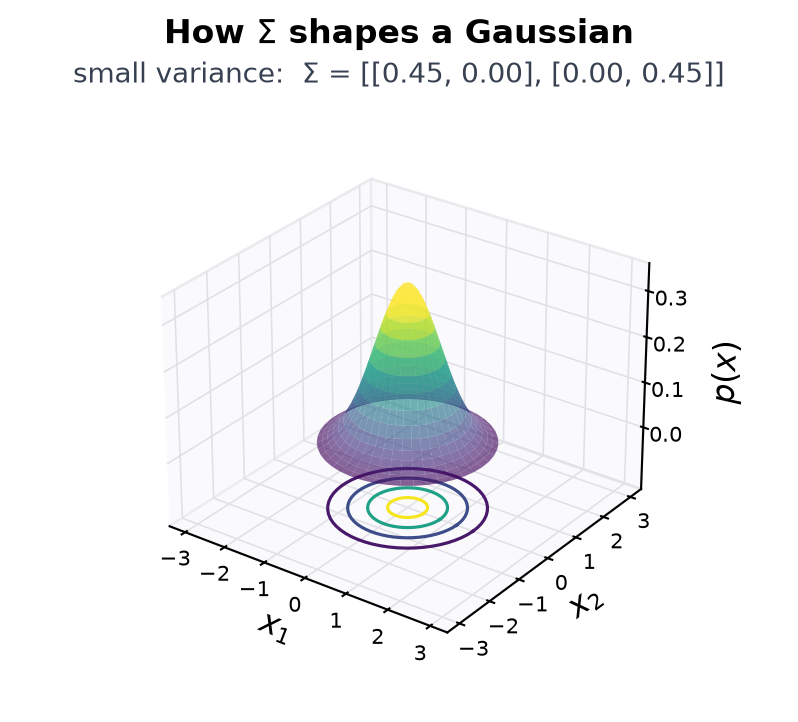
शुरुआतबीच मेंअंत
क्या देखें: एक ही Gaussian \(\mathcal{N}(0, \Sigma)\) है, बस \(\Sigma\) बदल रहा है। ऊँचाई density \(p(x)\) है और नीचे फ़र्श पर उसके contours हैं। क्रम यह है: \(\Sigma = I\) (गोल), फिर छोटा \(\Sigma\) (पतली, ऊँची पहाड़ी), फिर बड़ा \(\Sigma\) (चौड़ी, नीची), फिर diagonal entries अलग (एक axis की ओर खिंचा ellipse), और अंत में off-diagonal entries positive और फिर negative (झुका हुआ ellipse)। पहाड़ी के नीचे का कुल volume हमेशा 1 रहता है, इसलिए फैलने पर ऊँचाई घटती है।
चलती animation: cs229_hindi/out/anim/L05_2.gif
Animation 5.3Bayes rule: joint to posterior
शुरुआत
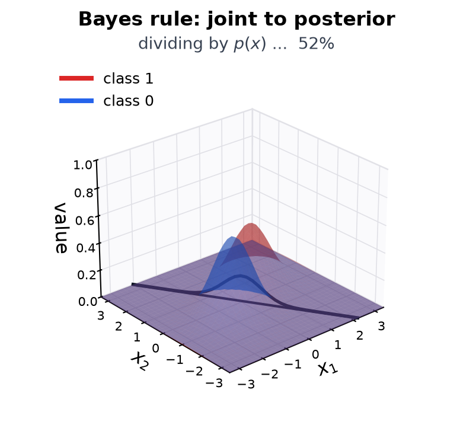
बीच में
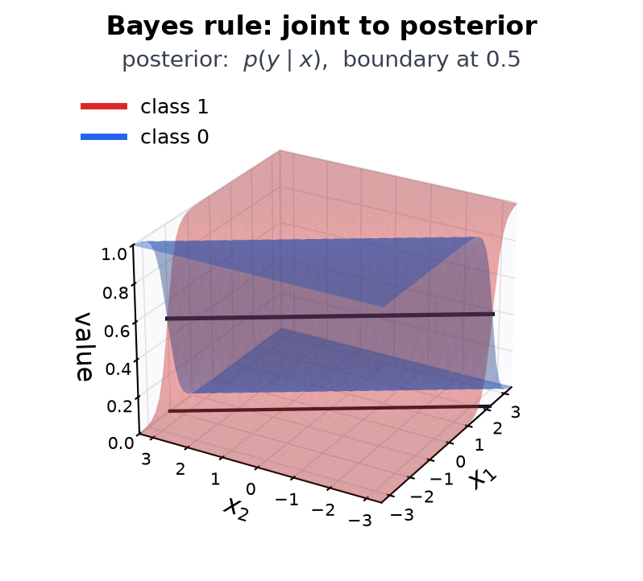
अंत
क्या देखें: शुरू में दो पहाड़ियाँ joint densities हैं: लाल \(p(x \mid y=1)\,p(y=1)\) और नीली \(p(x \mid y=0)\,p(y=0)\)। Bayes rule कहता है कि इन्हें \(p(x)\) (दोनों के जोड़) से divide करो। Animation में यही division धीरे-धीरे होता है, और दोनों पहाड़ियाँ posterior surfaces \(p(y=1 \mid x)\) और \(p(y=0 \mid x)\) बन जाती हैं, जो sigmoid आकार की हैं। काली line वह जगह है जहाँ दोनों surfaces बराबर हैं। वह divide करने से हिलती नहीं (इसीलिए argmax के लिए \(p(x)\) छोड़ सकते हैं) और सीधी है: यही linear decision boundary है, जो अंत में ऊँचाई 0.5 पर पहुँच जाती है।
चलती animation: cs229_hindi/out/anim/L05_3.gif
Animation 5.4Class prior \(\phi\) moves the boundary
शुरुआतबीच मेंअंत
क्या देखें: दोनों class Gaussians (\(\mu_0, \mu_1, \Sigma\)) स्थिर हैं, सिर्फ़ prior \(\phi = p(y=1)\) को 0.1 से 0.9 तक बढ़ाया जा रहा है। ऊँचाई weighted densities हैं: लाल \(\phi\, p(x \mid y=1)\) और नीली \((1-\phi)\, p(x \mid y=0)\)। \(\phi\) बढ़ने पर लाल पहाड़ी ऊँची और नीली नीची होती है, इसलिए दोनों के बराबर होने की जगह (काली line) नीली class की तरफ़ खिसकती है। फ़र्श का रंग बताता है कि कहाँ कौन सी class जीतती है। Boundary की दिशा नहीं बदलती, क्योंकि \(\phi\) सिर्फ़ \(\theta_0\) में आता है; धूसर dashed line \(\phi = 0.5\) वाली boundary है।
चलती animation: cs229_hindi/out/anim/L05_4.gif
Animation 5.5Naive Bayes: counting words
शुरुआतबीच मेंअंत
क्या देखें: यह Naive Bayes की training है। एक axis पर vocabulary के पाँच शब्द हैं, दूसरी पर class (spam या not spam), और ऊँचाई estimate \(\phi_{j \mid y}\) है, यानी उस class के कितने हिस्से emails में वह शब्द आया। Emails एक-एक करके गिने जाते हैं (ऊपर की line में अभी वाला email और उसके शब्द दिखते हैं) और हर bar बस एक अनुपात है: गिनती / उस class के emails। काली छोटी lines वे असली probabilities हैं जिनसे data बना था: शुरू में bars उछलते हैं, फिर उनके पास जम जाते हैं। ध्यान दें कि शुरू में कई bars ठीक zero हैं, सिर्फ़ इसलिए कि वह शब्द अभी तक उस class में दिखा नहीं।
चलती animation: cs229_hindi/out/anim/L05_5.gif
भाग 3
Python Example
इसे खुद चलाएँ: cs229_hindi/.venv/bin/python cs229_hindi/chapters/L05_gda_naive_bayes/example.py
"""Lecture 5 example: GDA और Naive Bayes शुरू से (सिर्फ़ NumPy).भाग A: 2 features वाले data पर GDA fit करते हैं और उसकी तुलना Logistic Regression से करते हैं, पहले Gaussian data पर (GDA की assumption सही), फिर skewed log-normal data पर (assumption गलत)।भाग B: हाथ से लिखे छोटे corpus पर Bernoulli Naive Bayes spam classifier।"""importnumpyasnpimportmatplotlib.pyplotaspltrng=np.random.default_rng(0)PHI=0.4# असली class prior p(y=1)MU0,MU1=np.array([0.0,0.0]),np.array([2.0,1.5])SIGMA=np.array([[1.0,0.6],[0.6,1.2]])# ---------- 1. Data: Gaussian (साझा Sigma) या log-normal (skewed, Gaussian नहीं) ----------defsample(m,gaussian=True):whileTrue:y=(rng.random(m)<PHI).astype(int)if2<=y.sum()<=m-2:# हर class के कम से कम 2 examples चाहिएbreakifgaussian:x=np.where(y[:,None]==1,MU1,MU0)+rng.multivariate_normal([0,0],SIGMA,m)else:x=np.exp(0.8*rng.normal(size=(m,2))+np.where(y[:,None]==1,[1.0,0.0],[0.0,1.0]))returnx,y# ---------- 2. GDA: maximum likelihood estimates (सिर्फ़ गिनती और औसत) ----------deffit_gda(x,y):phi=y.mean()mu0,mu1=x[y==0].mean(axis=0),x[y==1].mean(axis=0)centred=x-np.where(y[:,None]==1,mu1,mu0)# हर example में से उसकी class का mean घटाएँSigma=centred.T@centred/len(y)returnphi,mu0,mu1,Sigmadefgda_theta(phi,mu0,mu1,Sigma):"""GDA का posterior sigmoid(theta0 + theta^T x) है: यहाँ वही theta निकलता है।"""S_inv=np.linalg.inv(Sigma)theta=S_inv@(mu1-mu0)theta0=0.5*(mu0@S_inv@mu0-mu1@S_inv@mu1)+np.log(phi/(1-phi))returnnp.r_[theta0,theta]# ---------- 3. Logistic Regression (Newton's method), तुलना के लिए ----------deffit_logistic(x,y,iters=15,ridge=1e-3):X=np.c_[np.ones(len(x)),x]theta=np.zeros(3)for_inrange(iters):h=1/(1+np.exp(-np.clip(X@theta,-30,30)))gradient=X.T@(h-y)+ridge*theta# छोटा ridge: separable data पर theta फटे नहींhessian=(X*(h*(1-h))[:,None]).T@X+ridge*np.eye(3)theta-=np.linalg.solve(hessian,gradient)returnthetadefaccuracy(theta,x,y):returnnp.mean((theta[0]+x@theta[1:]>0)==y)# ---------- 4. एक बार fit करके देखें (m = 400, Gaussian data) ----------x_train,y_train=sample(400)x_test,y_test=sample(5000)phi,mu0,mu1,Sigma=fit_gda(x_train,y_train)theta_gda,theta_lr=gda_theta(phi,mu0,mu1,Sigma),fit_logistic(x_train,y_train)print("भाग A: GDA के सीखे parameters (m = 400)")print(f" phi = {phi:.3f} (सच {PHI}) mu0 = {mu0.round(2)} (सच {MU0}) mu1 = {mu1.round(2)} (सच {MU1})")print(f" Sigma = {Sigma.round(2).tolist()} (सच {SIGMA.tolist()})")print("\nModel theta0 theta1 theta2 test accuracy")forname,thin[("GDA (implied theta)",theta_gda),("Logistic Regression",theta_lr)]:print(f"{name:<20}{th[0]:8.2f}{th[1]:8.2f}{th[2]:8.2f}{accuracy(th,x_test,y_test):12.4f}")# ---------- 5. Training set का size बदलें: कौन कब बेहतर है? ----------sizes,trials=[8,16,32,100,1000],600results={}print(f"\nTest accuracy ({trials} trials का औसत)")print(" Gaussian data log-normal data")print(" m GDA Logistic GDA Logistic")forgaussianin(True,False):x_te,y_te=sample(4000,gaussian)forminsizes:acc=np.zeros((trials,2))fortinrange(trials):x_tr,y_tr=sample(m,gaussian)acc[t]=(accuracy(gda_theta(*fit_gda(x_tr,y_tr)),x_te,y_te),accuracy(fit_logistic(x_tr,y_tr),x_te,y_te))results[gaussian,m]=acc.mean(axis=0)forminsizes:(g1,l1),(g2,l2)=results[True,m],results[False,m]print(f"{m:6d}{g1:6.3f}{l1:6.3f}{g2:6.3f}{l2:6.3f}")print("Gaussian data: कम m पर GDA आगे (assumption सही)। Log-normal data: Logistic आगे (ज़्यादा robust)।")# ---------- 6. भाग B: Bernoulli Naive Bayes spam filter ----------spam=["win money now","free money offer","win free prize now","free offer click now","cheap money win prize"]ham=["meeting at noon","project report due","lunch at noon today","see report before meeting","free for lunch today"]vocab=sorted({wfordocinspam+hamforwindoc.split()})defto_vector(doc):"""x_j = 1 अगर vocabulary का j-वाँ शब्द email में है (vocabulary से बाहर के शब्द छूट जाते हैं)।"""returnnp.array([windoc.split()forwinvocab],dtype=float)X_nb=np.array([to_vector(d)fordinspam+ham])y_nb=np.r_[np.ones(len(spam)),np.zeros(len(ham))]phi_y=y_nb.mean()phi_spam=X_nb[y_nb==1].mean(axis=0)# phi_{j|y=1}: कितने हिस्से spam में शब्द j हैphi_ham=X_nb[y_nb==0].mean(axis=0)# phi_{j|y=0}defp_spam(doc):"""Bayes rule: p(y=1|x). (असली vocabulary पर products की जगह logs जोड़ें।)"""x=to_vector(doc)joint1=np.prod(np.where(x==1,phi_spam,1-phi_spam))*phi_yjoint0=np.prod(np.where(x==1,phi_ham,1-phi_ham))*(1-phi_y)withnp.errstate(invalid="ignore"):returnjoint1/(joint1+joint0),joint1,joint0print(f"\nभाग B: Naive Bayes ({len(vocab)} शब्दों की vocabulary, phi_y = {phi_y})")print("word phi_j|spam phi_j|ham")forwin("free","win","money","lunch","meeting"):j=vocab.index(w)print(f"{w:<9}{phi_spam[j]:8.1f}{phi_ham[j]:11.1f}")print("\nmessage p(x,spam) p(x,ham) p(spam|x)")fordocin["win free money","report before lunch","free lunch today","win a prize at the meeting"]:p,j1,j0=p_spam(doc)print(f"{doc:<28}{j1:11.2e}{j0:10.2e}{p:10.3f}")print("आख़िरी message: 'win' कभी ham में नहीं दिखा और 'meeting' कभी spam में नहीं,")print("इसलिए दोनों products 0 हैं और posterior 0/0 = nan है। हल: Laplace smoothing (Lecture 6)।")# ---------- 7. Plots ----------fig,axes=plt.subplots(1,2,figsize=(10.5,4.2))ax=axes[0]ax.scatter(*x_train[y_train==0].T,s=9,color="tab:blue",label="y = 0")ax.scatter(*x_train[y_train==1].T,s=9,color="tab:red",label="y = 1")xs=np.array([x_train[:,0].min(),x_train[:,0].max()])forth,style,namein[(theta_gda,"k-","GDA boundary"),(theta_lr,"g--","Logistic boundary")]:ax.plot(xs,-(th[0]+th[1]*xs)/th[2],style,lw=2,label=name)gx,gy=np.meshgrid(np.linspace(-3.5,5.5,80),np.linspace(-3.5,5,80))S_inv=np.linalg.inv(Sigma)formu,colin[(mu0,"tab:blue"),(mu1,"tab:red")]:d=np.stack([gx-mu[0],gy-mu[1]],axis=-1)ax.contour(gx,gy,np.einsum("...i,ij,...j->...",d,S_inv,d),levels=[1,4],colors=col,linewidths=1)ax.set(xlim=(-3.5,5.5),ylim=(-3.5,5),xlabel="x1",ylabel="x2",title="GDA fit (m = 400)")ax.legend(fontsize=8,loc="lower right")ax=axes[1]forgaussian,col,kindin[(True,"tab:purple","Gaussian data"),(False,"tab:orange","log-normal data")]:ax.plot(sizes,[results[gaussian,m][0]forminsizes],"o-",color=col,label=f"GDA, {kind}")ax.plot(sizes,[results[gaussian,m][1]forminsizes],"s--",color=col,label=f"Logistic, {kind}")ax.set(xscale="log",xlabel="training set size m",ylabel="test accuracy",title="GDA vs Logistic Regression")ax.legend(fontsize=8)fig.tight_layout()fig.savefig("result.png",dpi=130)
OUTPUT
भाग A: GDA के सीखे parameters (m = 400)
phi = 0.357 (सच 0.4) mu0 = [0.04 0.05] (सच [0. 0.]) mu1 = [2.04 1.54] (सच [2. 1.5])
Sigma = [[0.93, 0.59], [0.59, 1.16]] (सच [[1.0, 0.6], [0.6, 1.2]])
Model theta0 theta1 theta2 test accuracy
GDA (implied theta) -2.86 1.96 0.30 0.8460
Logistic Regression -2.72 1.80 0.39 0.8464
Test accuracy (600 trials का औसत)
Gaussian data log-normal data
m GDA Logistic GDA Logistic
8 0.788 0.780 0.721 0.743
16 0.825 0.817 0.745 0.765
32 0.844 0.840 0.763 0.784
100 0.854 0.854 0.772 0.798
1000 0.859 0.859 0.769 0.810
Gaussian data: कम m पर GDA आगे (assumption सही)। Log-normal data: Logistic आगे (ज़्यादा robust)।
भाग B: Naive Bayes (19 शब्दों की vocabulary, phi_y = 0.5)
word phi_j|spam phi_j|ham
free 0.6 0.2
win 0.6 0.0
money 0.6 0.0
lunch 0.0 0.4
meeting 0.0 0.4
message p(x,spam) p(x,ham) p(spam|x)
win free money 9.95e-03 0.00e+00 1.000
report before lunch 0.00e+00 6.79e-04 0.000
free lunch today 0.00e+00 6.79e-04 0.000
win a prize at the meeting 0.00e+00 0.00e+00 nan
आख़िरी message: 'win' कभी ham में नहीं दिखा और 'meeting' कभी spam में नहीं,
इसलिए दोनों products 0 हैं और posterior 0/0 = nan है। हल: Laplace smoothing (Lecture 6)।
LECTURE 6
Laplace Smoothing और Support Vector Machines
भाग 1
Theory
इस lecture में: Naive Bayes की zero-frequency problem और Laplace smoothing, text के लिए multinomial event model, फिर Support Vector Machines की शुरुआत: margin का idea, functional और geometric margin, optimal margin classifier, Lagrange duality, KKT conditions, और support vectors।
1. एक line में idea
इस lecture के दो हिस्से हैं।
पहला हिस्सा पिछले lecture की एक कमी ठीक करता है। Naive Bayes में जो शब्द training set में कभी नहीं दिखा, उसकी probability zero निकलती थी और पूरा prediction बिगड़ जाता था। Laplace smoothing का हल बहुत सीधा है: गिनती शुरू करने से पहले मान लो कि हर चीज़ एक बार दिख चुकी है। तब कोई probability ठीक zero नहीं बनती।
दूसरा हिस्सा एक नया classifier शुरू करता है: Support Vector Machine (SVM)। अगर दो classes को कई अलग-अलग lines से अलग किया जा सकता है, तो कौन सी line सबसे अच्छी है? SVM का जवाब: वह line जो दोनों classes के सबसे पास वाले points से जितना हो सके उतनी दूर हो, यानी जिसके दोनों तरफ़ सबसे चौड़ी खाली पट्टी (margin) बचे। ऐसी boundary नए data पर ज़्यादा भरोसेमंद होती है।
2. Laplace Smoothing
Problem: पिछले lecture के estimates अनुपात थे, जैसे \(\phi_{j \mid y=1}\) = (spam emails जिनमें शब्द \(j\) है) / (कुल spam emails)। अगर शब्द \(j\) training set में एक बार भी नहीं आया, तो \(\phi_{j \mid y=1} = \phi_{j \mid y=0} = 0\), और उस शब्द वाले email का posterior \(\frac{0}{0}\) हो जाता है। जो चीज़ अब तक नहीं दिखी, उसे असंभव मान लेना statistically गलत है।
सामान्य रूप: मान लें \(z\) एक multinomial random variable है जो \(\{1, \dots, k\}\) में से कोई value लेता है, और \(\phi_j = p(z = j)\)। \(m\) independent observations \(z^{(1)}, \dots, z^{(m)}\) से maximum likelihood estimate है:
Denominator में \(k\) इसलिए है कि सारे \(\phi_j\) का जोड़ अब भी 1 रहे: \(\sum_{j=1}^{k} \phi_j = \frac{m + k}{m + k} = 1\)। अब कोई \(\phi_j\) zero नहीं है। \(m\) छोटा हो तो estimates बराबर बँटवारे \(\frac{1}{k}\) की ओर खिंचे रहते हैं। \(m\) बड़ा हो तो \(+1\) और \(+k\) का असर मिट जाता है और estimate वही हो जाता है जो maximum likelihood देता।
Naive Bayes में: हर \(x_j\) binary है, यानी \(k = 2\)। इसलिए
\(\phi_y\) को आम तौर पर smooth नहीं करते, क्योंकि दोनों classes के examples काफ़ी होते हैं।
3. Text के लिए Multinomial Event Model
पिछला model सिर्फ़ यह देखता था कि शब्द email में है या नहीं। Multinomial event model शब्दों की गिनती का भी इस्तेमाल करता है।
अब \(x_j\) email के \(j\)-वें स्थान का शब्द है: \(x_j \in \{1, \dots, |V|\}\), जहाँ \(|V|\) vocabulary का size है।
\(n_i\) शब्दों वाला email एक vector \((x_1^{(i)}, \dots, x_{n_i}^{(i)})\) है। हर email की लंबाई अलग हो सकती है।
Model की कहानी: पहले \(p(y)\) से तय होता है कि email spam है या नहीं। फिर हर शब्द, बाकी शब्दों से independent, एक ही distribution \(p(x_j \mid y)\) से चुना जाता है। इसलिए \(p(x, y) = p(y) \prod_{j=1}^{n} p(x_j \mid y)\)।
Parameters:\(\phi_y = p(y=1)\), \(\phi_{k \mid y=1} = p(x_j = k \mid y=1)\) और \(\phi_{k \mid y=0} = p(x_j = k \mid y=0)\)। ये \(j\) पर निर्भर नहीं करते: शब्द email में कहाँ आया, इससे फ़र्क नहीं पड़ता।
शब्दों में: \(\phi_{k \mid y=1}\) = (सारे spam emails में शब्द \(k\) कुल कितनी बार आया, \(+1\)) / (सारे spam emails के कुल शब्द, \(+|V|\))। \(+1\) और \(+|V|\) हटा दें तो बिना smoothing वाला maximum likelihood estimate मिलता है।
4. SVM: Margin का Intuition
Logistic Regression में \(p(y=1 \mid x; \theta) = g(\theta^T x)\) था। \(\theta^T x\) जितना बड़ा positive, उतना पक्का कि \(y = 1\)। यानी decision boundary से दूर वाले points पर हमें भरोसा ज़्यादा है, और boundary के पास वाले points पर कम, क्योंकि boundary ज़रा सी हिली तो उनका जवाब बदल जाएगा। इसलिए हम ऐसी boundary चाहते हैं जो सारे training points को सही भी रखे और उनसे दूर भी रहे।
Notation (SVM के लिए बदला हुआ):
Symbol
मतलब
\(y \in \{-1, +1\}\)
class labels (\(\{0, 1\}\) की जगह)
\(w\), \(b\)
parameters: \(w\) weights का vector, \(b\) intercept (\(\theta_0\) की जगह)
यह classifier सीधे \(+1\) या \(-1\) देता है, probability नहीं।
5. Functional और Geometric Margin
Functional margin. एक training example \((x^{(i)}, y^{(i)})\) के लिए
\[\hat{\gamma}^{(i)} = y^{(i)} \left( w^T x^{(i)} + b \right)\]
अगर \(y^{(i)} = 1\) है तो हम चाहते हैं कि \(w^T x^{(i)} + b\) बड़ा positive हो; अगर \(y^{(i)} = -1\) है तो बड़ा negative। दोनों cases में \(\hat{\gamma}^{(i)}\) बड़ा positive होना अच्छा है, और \(\hat{\gamma}^{(i)} > 0\) का मतलब है कि prediction सही है। पूरे training set का functional margin सबसे खराब example का है: \(\hat{\gamma} = \min_i \hat{\gamma}^{(i)}\)।
इसमें एक कमी है। \((w, b)\) को \((2w, 2b)\) कर दें तो \(g\) सिर्फ़ sign देखता है, इसलिए classifier बिल्कुल नहीं बदलता, पर \(\hat{\gamma}\) दुगना हो जाता है। यानी functional margin को बिना कुछ सुधारे जितना चाहें बढ़ाया जा सकता है।
Geometric margin. यह point की boundary से असली दूरी है। पहले ध्यान दें कि \(w\) boundary के perpendicular है: boundary पर के किन्हीं दो points \(x_a, x_b\) के लिए \(w^T x_a + b = 0 = w^T x_b + b\), इसलिए \(w^T(x_a - x_b) = 0\)।
मान लें \(y^{(i)} = 1\) है और \(x^{(i)}\) की boundary से दूरी \(\gamma^{(i)}\) है। \(x^{(i)}\) से \(w\) की उल्टी दिशा में \(\gamma^{(i)}\) चलें तो boundary पर का सबसे पास वाला point मिलता है: \(x^{(i)} - \gamma^{(i)} \frac{w}{\|w\|}\)। यह boundary पर है, इसलिए
\((w, b)\) को किसी भी positive संख्या से गुणा करें, \(\gamma^{(i)}\) नहीं बदलता। \(\|w\| = 1\) हो तो दोनों margins बराबर हैं। पूरे training set के लिए \(\gamma = \min_i \gamma^{(i)}\)।
6. Optimal Margin Classifier
मान लें data linearly separable है। हमें वह \((w, b)\) चाहिए जिसका geometric margin सबसे बड़ा हो। इसे तीन कदमों में एक आसान optimization problem में बदलते हैं।
रूप 1. सीधा बयान। \(\|w\| = 1\) रखने से functional और geometric margin एक हो जाते हैं:
\[\max_{\gamma, w, b}\ \gamma \quad \text{s.t.} \quad y^{(i)}(w^T x^{(i)} + b) \ge \gamma,\ \ i = 1, \dots, m; \qquad \|w\| = 1\]
दिक्कत: \(\|w\| = 1\) एक non-convex constraint है (एक गोले की सतह)।
रूप 2.\(\gamma = \hat{\gamma} / \|w\|\) लिखकर वह constraint हटा दें:
\[\max_{\hat{\gamma}, w, b}\ \frac{\hat{\gamma}}{\|w\|} \quad \text{s.t.} \quad y^{(i)}(w^T x^{(i)} + b) \ge \hat{\gamma},\ \ i = 1, \dots, m\]
दिक्कत: अब objective \(\frac{\hat{\gamma}}{\|w\|}\) non-convex है।
रूप 3.\((w, b)\) को scale करने की आज़ादी का इस्तेमाल करें। Scale बदलने से classifier नहीं बदलता, इसलिए हम scale ऐसा चुन सकते हैं कि \(\hat{\gamma} = 1\) हो। तब \(\frac{1}{\|w\|}\) को maximize करना है, जो \(\|w\|^2\) को minimize करने के बराबर है:
\[\min_{w, b}\ \frac{1}{2} \|w\|^2 \quad \text{s.t.} \quad y^{(i)}(w^T x^{(i)} + b) \ge 1,\ \ i = 1, \dots, m\]
यह एक convex quadratic objective और linear constraints वाला problem है (quadratic program, QP), जिसका एक ही global हल होता है। इसका हल optimal margin classifier है, और उसका geometric margin \(\gamma = \frac{1}{\|w\|}\) है।
7. Lagrange Duality
इस QP को सीधे भी हल कर सकते हैं। पर इसका dual रूप निकालने से दो बड़े फ़ायदे मिलेंगे (support vectors और kernels), इसलिए पहले constrained optimization का सामान्य सिद्धांत देखते हैं।
अब यह देखें: \(\theta_{\mathcal{P}}(w) = \max_{\alpha, \beta\,:\,\alpha_i \ge 0} \mathcal{L}(w, \alpha, \beta)\)। अगर \(w\) कोई constraint तोड़ता है (\(g_i(w) > 0\) या \(h_i(w) \ne 0\)), तो उस \(\alpha_i\) या \(\beta_i\) को बहुत बड़ा करके \(\mathcal{L}\) को \(\infty\) तक ले जा सकते हैं। अगर \(w\) सारे constraints मानता है, तो सबसे अच्छा यही है कि हर \(\alpha_i g_i(w) = 0\) रहे, और तब max ठीक \(f(w)\) है:
इसलिए primal problem को ऐसे लिख सकते हैं: \(p^* = \min_w \theta_{\mathcal{P}}(w) = \min_w \max_{\alpha, \beta\,:\,\alpha_i \ge 0} \mathcal{L}(w, \alpha, \beta)\)।
Dual problem: min और max का क्रम बदल दें। \(\theta_{\mathcal{D}}(\alpha, \beta) = \min_w \mathcal{L}(w, \alpha, \beta)\) लें, और
बायाँ पक्ष हर \((\alpha', \beta')\) के लिए दाएँ पक्ष के हर \(w'\) से छोटा या बराबर है, इसलिए बाएँ का max भी दाएँ के min से छोटा या बराबर है: \(d^* \le p^*\)।
बराबरी कब? अगर \(f\) और सारे \(g_i\) convex हों, \(h_i\) affine हों, और कोई \(w\) ऐसा हो जिसके लिए सारे \(g_i(w) < 0\) हों, तो \(d^* = p^*\)। तब ऐसे \(w^*, \alpha^*, \beta^*\) मौजूद हैं जो primal और dual दोनों के हल हैं, और वे Karush-Kuhn-Tucker (KKT) conditions पूरी करते हैं:
\[\begin{aligned} \frac{\partial}{\partial w_i} \mathcal{L}(w^*, \alpha^*, \beta^*) &= 0, & i &= 1, \dots, n \\ \frac{\partial}{\partial \beta_i} \mathcal{L}(w^*, \alpha^*, \beta^*) &= 0, & i &= 1, \dots, l \\ \alpha_i^*\, g_i(w^*) &= 0, & i &= 1, \dots, k \\ g_i(w^*) &\le 0, & i &= 1, \dots, k \\ \alpha_i^* &\ge 0, & i &= 1, \dots, k \end{aligned}\]
उल्टा भी सच है: जो \(w^*, \alpha^*, \beta^*\) ये conditions पूरी करें, वे हल हैं। तीसरी condition complementary slackness कहलाती है: हर \(i\) के लिए या तो \(\alpha_i^* = 0\) है, या \(g_i(w^*) = 0\) (constraint "active" है, यानी ठीक बराबरी पर)। अगर \(\alpha_i^* > 0\), तो constraint ज़रूर active है।
छोटा उदाहरण:\(f(w) = w^2\) को minimize करें, शर्त \(w \ge 1\), यानी \(g(w) = 1 - w \le 0\)। साफ़ है कि \(w^* = 1\) और \(p^* = 1\)। अब dual से: \(\mathcal{L}(w, \alpha) = w^2 + \alpha(1 - w)\)। \(w\) पर minimize करें: \(2w - \alpha = 0\), यानी \(w = \frac{\alpha}{2}\), और \(\theta_{\mathcal{D}}(\alpha) = \alpha - \frac{\alpha^2}{4}\)। इसे maximize करें: \(\alpha^* = 2\) और \(d^* = 1 = p^*\)। यहाँ \(\alpha^* > 0\) है और constraint active है (\(w^* = 1\)), जैसा complementary slackness कहता है।
8. Support Vectors
Optimal margin classifier के constraints को \(g_i(w) \le 0\) के रूप में लिखें:
\[g_i(w, b) = -y^{(i)}(w^T x^{(i)} + b) + 1 \le 0\]
हर training example का एक constraint और एक \(\alpha_i\) है। Complementary slackness कहता है कि \(\alpha_i > 0\) सिर्फ़ तब हो सकता है जब \(g_i(w, b) = 0\), यानी जब उस example का functional margin ठीक 1 हो। ये वही points हैं जो boundary के सबसे पास हैं और margin की पट्टी के किनारे पर बैठे हैं। इन्हें support vectors कहते हैं। बाकी सारे points के लिए \(\alpha_i = 0\) है।
आम तौर पर support vectors बहुत कम होते हैं। और हल सिर्फ़ उन्हीं पर टिका होता है: किसी दूसरे point को (margin के बाहर रखते हुए) हिलाएँ या हटा दें, तो boundary नहीं बदलती।
इस problem का Lagrangian (सिर्फ़ \(\alpha_i\) हैं, क्योंकि equality constraints नहीं हैं) यह है:
आगे क्या: अगले lecture (Lecture 7) में हम इस \(\mathcal{L}\) को \(w\) और \(b\) पर minimize करके dual problem निकालेंगे। उसमें data सिर्फ़ inner products \(\langle x^{(i)}, x^{(j)} \rangle\) के रूप में आएगा, जिससे kernels का रास्ता खुलता है। वहीं non-separable data के लिए soft margin और dual को हल करने वाला SMO algorithm भी आएगा।
9. Practical बातें और आम गलतियाँ
Denominator में सही \(k\) जोड़ें: Laplace smoothing में numerator में 1 जुड़ता है और denominator में संभव values की संख्या: Bernoulli Naive Bayes में 2, multinomial event model में \(|V|\)। Denominator में भी 1 जोड़ देना आम गलती है; तब probabilities का जोड़ 1 नहीं रहता।
Vocabulary से बाहर के शब्द: जो शब्द vocabulary में ही नहीं है, उसके लिए कोई parameter नहीं है। उसे छोड़ दें या एक खास "unknown" token में गिनें। Laplace smoothing उन शब्दों के लिए है जो vocabulary में हैं पर किसी class में नहीं दिखे।
Logs जोड़ें: लंबे email में सैकड़ों छोटी probabilities का product underflow हो जाता है। \(\log p(y) + \sum_j \log \phi_{x_j \mid y}\) की तुलना करें।
SVM में labels \(\pm 1\) रखें: margin के सारे formulas \(y \in \{-1, +1\}\) मानकर बने हैं। \(\{0, 1\}\) labels के साथ वे गलत हो जाते हैं।
Features को scale करें: margin एक दूरी है। अगर एक feature हज़ारों में है और दूसरा इकाइयों में, तो दूरी पर बड़ा feature हावी हो जाता है।
Hard margin सिर्फ़ separable data के लिए: data separable न हो तो इस QP का कोई feasible हल ही नहीं है। और separable data में भी एक अकेला outlier boundary को बहुत घुमा सकता है। इसका इलाज soft margin है (Lecture 7)।
10. खुद से पूछें
एक पासा 10 बार फेंका गया और 6 एक बार भी नहीं आया। \(p(6)\) का maximum likelihood estimate क्या है, और Laplace smoothing वाला estimate क्या है?
\((w, b)\) की जगह \((5w, 5b)\) रख दें। Decision boundary, functional margin और geometric margin में से क्या-क्या बदलेगा और कितना?
Optimal margin classifier में किसी training example का functional margin 3.7 है। उसका \(\alpha_i\) क्या होगा, और क्यों? अगर उस example को training set से हटा दें तो हल पर क्या असर होगा?
भाग 2
3D Animations
Animation 6.1Laplace smoothing lifts zero counts
शुरुआत
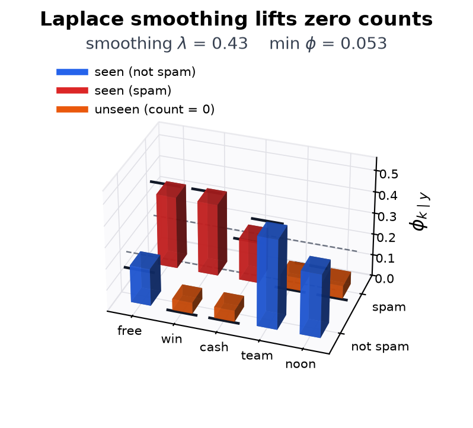
बीच में
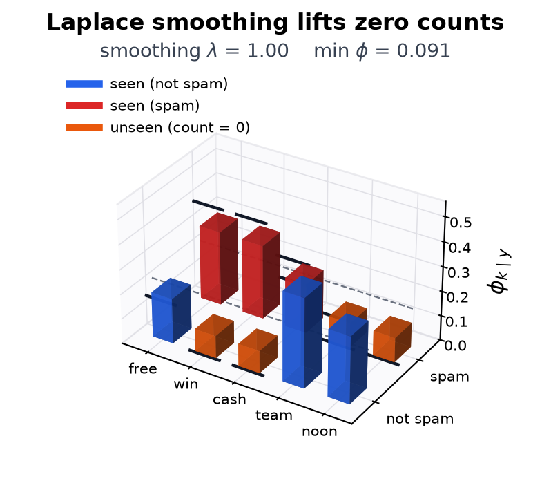
अंत
क्या देखें: यहाँ multinomial event model के शब्द-अनुमान \(\phi_{k \mid y}\) को 3D bars के रूप में दिखाया गया है। शुरू में बिना smoothing के (\(\lambda = 0\)) जो शब्द किसी class में एक बार भी नहीं दिखे, उनके नारंगी bars फ़र्श पर ठीक zero पर चिपके हैं। जैसे-जैसे आप Laplace smoothing (\(\lambda \to 1\)) लागू करते हैं, हर numerator में \(1\) और denominator में \(|V|\) जुड़ने से zero वाले bars ऊपर उठ जाते हैं। कुल जोड़ \(1\) बनाए रखने के लिए ऊँचे bars थोड़े नीचे आते हैं और किसी भी नए संदेश की probability \(0/0\) नहीं बनती।
चलती animation: cs229_hindi/out/anim/L06_1.gif
Animation 6.2Separating plane to max-margin slab
शुरुआतबीच मेंअंत
क्या देखें: यहाँ 3D features वाले दो अलग-अलग classes के बिंदु हैं जिन्हें कई planes अलग कर सकते हैं। शुरू वाला plane डेटा को अलग तो करता है, पर बिंदुओं के बहुत पास से गुज़रता है इसलिए दोनों तरफ़ की खाली पट्टी (margin slab) बहुत पतली है। जैसे-जैसे optimization \(\frac{1}{2}\|w\|^2\) को घटाता है, plane घूमकर बीच में जमता है और geometric margin \(\gamma = 1/\|w\|\) बढ़ता जाता है। अंत में सबसे चौड़ी पट्टी दोनों तरफ़ के सबसे पास वाले बिंदुओं (support vectors) पर टिक जाती है।
चलती animation: cs229_hindi/out/anim/L06_2.gif
Animation 6.3Scaling (w, b): functional vs geom
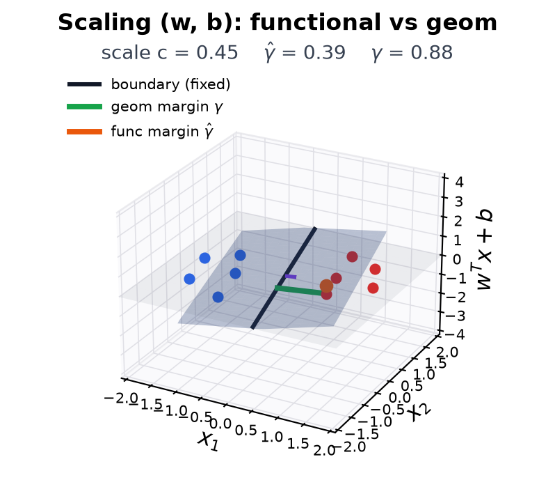
शुरुआतबीच में
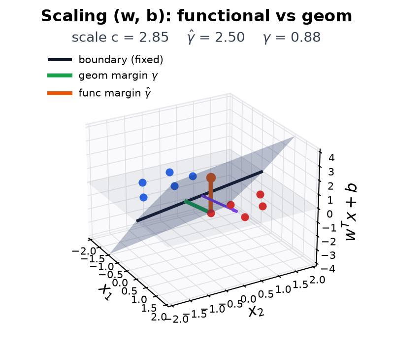
अंत
क्या देखें: फ़र्श (\(z = 0\)) पर 2D data points और काली decision boundary \(w^T x + b = 0\) है, जबकि ऊँचाई score \(z = w^T x + b\) दिखाती है। जब आप \((w, b)\) को \(c\) से गुणा करके बड़ा करते हैं, तो नीला plane उसी काली रेखा पर कब्ज़े की तरह घूमकर और खड़ा होता जाता है, पर boundary ज़रा भी नहीं हिलती। नारंगी खंभा functional margin \(\hat{\gamma}\) है जो \(c\) के साथ लंबा होता जाता है। फ़र्श पर हरी रेखा geometric margin \(\gamma = \hat{\gamma}/\|w\|\) है, जो हर scale पर बिल्कुल स्थिर रहती है।
चलती animation: cs229_hindi/out/anim/L06_3.gif
Animation 6.4QP bowl \(0.5\|w\|^2\) and constraints
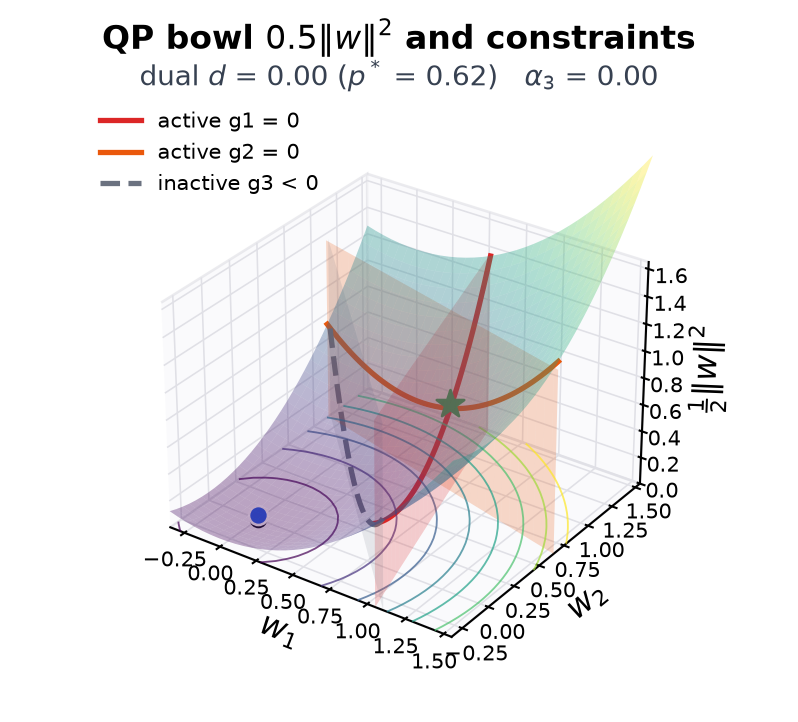
शुरुआत
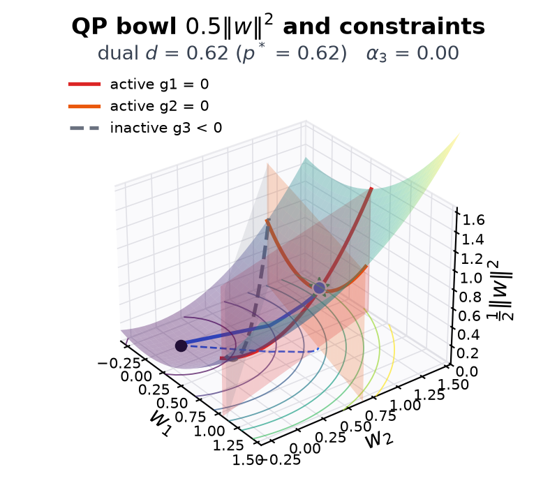
बीच मेंअंत
क्या देखें: यहाँ ज़मीन पर weights \((w_1, w_2)\) हैं और कटोरे की ऊँचाई primal objective \(\frac{1}{2}\|w\|^2\) है। बिना constraints के कटोरे की तली \((0, 0)\) पर है, पर खड़ी रंगीन दीवारें \(y^{(i)} w^T x^{(i)} = 1\) उसे infeasible बना देती हैं। जैसे-जैसे dual ascent \(\alpha\) को बढ़ाता है, बिंदु \(w(\alpha)\) कटोरे पर चढ़ता हुआ दोनों active दीवारों के कोने वाले constrained minimum (हरा तारा) पर पहुँचता है जहाँ \(d^* = p^*\) होता है। पीछे छूटी धूसर दीवार के लिए complementary slackness से \(\alpha_3 = 0\) हो जाता है।
चलती animation: cs229_hindi/out/anim/L06_4.gif
Animation 6.5Support vectors vs interior points
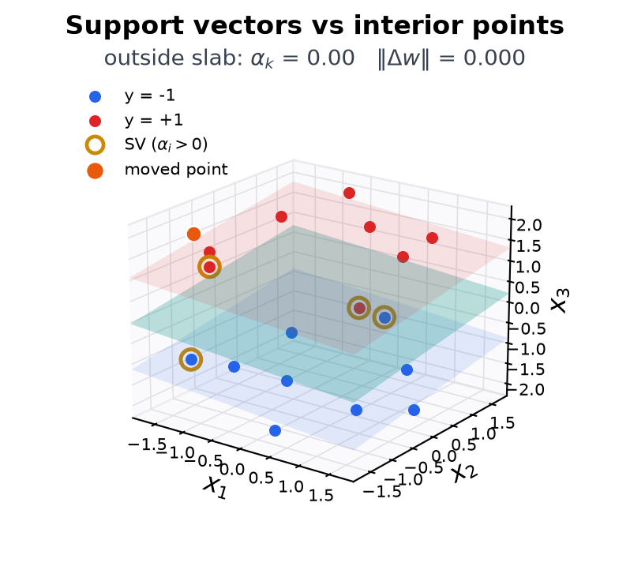
शुरुआत
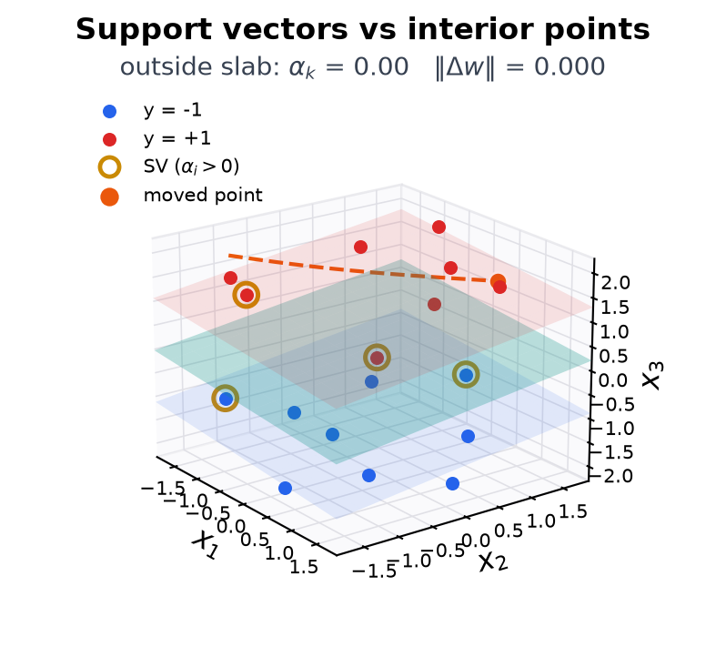
बीच मेंअंत
क्या देखें: यहाँ सोने के छल्लों वाले बिंदु support vectors (\(\alpha_i > 0\)) हैं जो margin की दीवार पर बैठे हैं। पहले हिस्से में नारंगी interior बिंदु को margin के बाहर दूर-दूर तक घुमाया जाता है, और हर कदम पर QP दोबारा हल करने पर भी \(\alpha_k = 0\) रहता है तथा plane ज़रा भी नहीं हिलता। दूसरे हिस्से में जब वही बिंदु नीचे उतरकर margin के भीतर आता है, तो उसका \(\alpha_k > 0\) हो जाता है। अब वह खुद नया support vector बनकर पूरे separating plane को झुका देता है।
चलती animation: cs229_hindi/out/anim/L06_5.gif
भाग 3
Python Example
इसे खुद चलाएँ: cs229_hindi/.venv/bin/python cs229_hindi/chapters/L06_laplace_svm/example.py
"""Lecture 6 example: Multinomial Naive Bayes (Laplace smoothing) और Hard-Margin Linear SVM.भाग A: हाथ से लिखे छोटे corpus पर Multinomial Event Model, बिना smoothing और Laplace smoothing के साथ।भाग B: Linearly separable 2D data पर scipy.optimize SLSQP से Hard-Margin SVM (w, b, margin, support vectors)।"""importnumpyasnpimportmatplotlib.pyplotaspltfromscipy.optimizeimportminimize# ---------- 1. भाग A: Multinomial Naive Bayes (बिना smoothing बनाम Laplace smoothing) ----------spam_docs=["win free cash win cash now","free offer win prize now","cash prize free free offer","win cheap cash offer now","free prize win money",]ham_docs=["team meeting at noon","project report before meeting","lunch at noon with team","review project report today","free for team lunch today",]vocab=sorted({wfordocinspam_docs+ham_docsforwindoc.split()})word_to_id={w:kfork,winenumerate(vocab)}V=len(vocab)defword_counts(docs):"""हर शब्द सारे documents में कुल कितनी बार आया (multinomial event model)।"""counts=np.zeros(V)fordocindocs:forwindoc.split():ifwinword_to_id:# vocabulary से बाहर के शब्द छोड़ देंcounts[word_to_id[w]]+=1returncountsc_spam,c_ham=word_counts(spam_docs),word_counts(ham_docs)n_spam,n_ham=c_spam.sum(),c_ham.sum()phi_y=len(spam_docs)/(len(spam_docs)+len(ham_docs))# MLE (smoothing = 0) और Laplace smoothing (numerator में +1, denominator में +|V|)phi_spam_mle,phi_ham_mle=c_spam/n_spam,c_ham/n_hamphi_spam_lap=(c_spam+1.0)/(n_spam+V)phi_ham_lap=(c_ham+1.0)/(n_ham+V)defpredict_mle(doc):ids=[word_to_id[w]forwindoc.split()ifwinword_to_id]p1=phi_y*np.prod(phi_spam_mle[ids])p0=(1.0-phi_y)*np.prod(phi_ham_mle[ids])withnp.errstate(invalid="ignore"):returnp1/(p1+p0)defpredict_laplace(doc):"""Underflow से बचने के लिए log-probabilities जोड़ें।"""ids=[word_to_id[w]forwindoc.split()ifwinword_to_id]log1=np.log(phi_y)+np.sum(np.log(phi_spam_lap[ids]))log0=np.log(1.0-phi_y)+np.sum(np.log(phi_ham_lap[ids]))m=max(log1,log0)returnfloat(np.exp(log1-m)/(np.exp(log1-m)+np.exp(log0-m)))print(f"भाग A: Multinomial Naive Bayes (|V| = {V}, spam words = {int(n_spam)}, ham words = {int(n_ham)})")print(f" Laplace probabilities का जोड़: spam = {phi_spam_lap.sum():.4f}, ham = {phi_ham_lap.sum():.4f}")print(" word c(spam) c(ham) MLE(y=1) MLE(y=0) Lap(y=1) Lap(y=0)")forwin("free","win","cash","team","meeting"):k=word_to_id[w]print(f" {w:<10}{int(c_spam[k]):6d}{int(c_ham[k]):6d}{phi_spam_mle[k]:8.3f}{phi_ham_mle[k]:8.3f}"f" {phi_spam_lap[k]:8.3f}{phi_ham_lap[k]:8.3f}")print("\n Test संदेश MLE P(spam|x) Laplace P(spam|x)")formsgin["win free cash cash","team project report","free team lunch","win prize at meeting"]:print(f" {msg:<35}{predict_mle(msg):13.4f}{predict_laplace(msg):17.4f}")# ---------- 2. भाग B: Hard-Margin Linear SVM (scipy.optimize SLSQP) ----------rng=np.random.default_rng(11)X_neg=rng.normal(loc=[-1.2,-1.2],scale=0.52,size=(12,2))X_pos=rng.normal(loc=[1.2,1.2],scale=0.52,size=(12,2))X=np.vstack([X_neg,X_pos])y=np.r_[-np.ones(len(X_neg)),np.ones(len(X_pos))]defsolve_hard_margin_svm(X_data,y_data):"""Primal QP: min_{w,b} 0.5*||w||^2 s.t. y^(i)*(w^T x^(i) + b) - 1 >= 0."""res=minimize(lambdau:0.5*np.dot(u[:2],u[:2]),np.zeros(3),jac=lambdau:np.array([u[0],u[1],0.0]),constraints={"type":"ineq","fun":lambdau:y_data*(X_data@u[:2]+u[2])-1.0,"jac":lambdau:np.c_[y_data[:,None]*X_data,y_data]},method="SLSQP",options={"ftol":1e-12,"maxiter":300},)returnres.x[:2],float(res.x[2])w,b=solve_hard_margin_svm(X,y)Q=(y[:,None]*X)@(y[:,None]*X).Tdual=minimize(lambdaa:0.5*a@Q@a-np.sum(a),np.zeros(len(y)),jac=lambdaa:Q@a-1.0,bounds=[(0.0,None)]*len(y),constraints={"type":"eq","fun":lambdaa:a@y,"jac":lambdaa:y},method="SLSQP",options={"ftol":1e-12,"maxiter":300},)alpha=np.maximum(0.0,dual.x)func_margins=y*(X@w+b)gamma=1.0/np.linalg.norm(w)sv_idx=np.where(func_margins<=1.0+1e-5)[0]# एक non-support point को हिलाकर जाँचें कि hyperplane बदलता है या नहींinterior_id=int(np.argmax(func_margins))X_moved=X.copy()X_moved[interior_id]+=np.array([0.8,0.7])w_moved,b_moved=solve_hard_margin_svm(X_moved,y)print("\nभाग B: Hard-Margin Linear SVM (SLSQP)")print(f" w = [{w[0]:.4f}, {w[1]:.4f}], b = {b:.4f}, ||w|| = {np.linalg.norm(w):.4f}")print(f" Geometric margin gamma = 1/||w|| = {gamma:.4f} (slab width 2*gamma = {2*gamma:.4f})")print(f" Strong duality check: primal p* = {0.5*(w@w):.6f}, dual d* = {-dual.fun:.6f}")print(f" Support vectors ({len(sv_idx)} of {len(y)} points, जहाँ y*(w^T x + b) = 1 और alpha_i > 0):")foridxinsv_idx:print(f" idx={idx:2d} x=({X[idx,0]:6.3f}, {X[idx,1]:6.3f}) y={int(y[idx]):+d}"f" func_margin={func_margins[idx]:.4f} alpha={alpha[idx]:.4f}")print(f" Non-SV point (idx={interior_id}) को हिलाने पर ||w_new - w|| = {np.linalg.norm(w_moved-w):.2e}")# ---------- 3. Plots ----------fig,axes=plt.subplots(1,2,figsize=(10.6,4.2))words_show=["free","win","cash","offer","team","meeting","report","lunch"]ids_show=[word_to_id[wd]forwdinwords_show]xpos=np.arange(len(words_show))axes[0].bar(xpos-0.18,phi_spam_mle[ids_show],width=0.34,color="#fca5a5",label="Spam MLE (zero possible)")axes[0].bar(xpos+0.18,phi_spam_lap[ids_show],width=0.34,color="#dc2626",label="Spam Laplace (+1 / +|V|)")axes[0].set_xticks(xpos,words_show,rotation=28)axes[0].set(ylabel=r"$\phi_{k \mid y=1}$",title="Multinomial NB: Laplace lifts zeros")axes[0].legend(fontsize=8)ax=axes[1]ax.scatter(*X[y==-1].T,color="tab:blue",s=34,label="y = -1")ax.scatter(*X[y==1].T,color="tab:red",s=34,label="y = +1")ax.scatter(*X[sv_idx].T,s=135,facecolors="none",edgecolors="goldenrod",linewidths=2.0,label="Support vectors")xs=np.linspace(X[:,0].min()-0.5,X[:,0].max()+0.5,200)y_mid=-(w[0]*xs+b)/w[1]y_up,y_dn=-(w[0]*xs+b-1.0)/w[1],-(w[0]*xs+b+1.0)/w[1]ax.fill_between(xs,y_dn,y_up,color="teal",alpha=0.12,label=rf"Margin slab ($2\gamma$ = {2*gamma:.2f})")ax.plot(xs,y_mid,"k-",lw=2.0,label=r"$w^T x + b = 0$")ax.plot(xs,y_up,"r--",lw=1.1)ax.plot(xs,y_dn,"b--",lw=1.1)ax.set(xlim=(xs[0],xs[-1]),ylim=(X[:,1].min()-0.6,X[:,1].max()+0.6),xlabel="x1",ylabel="x2",title="Hard-Margin SVM via SLSQP",aspect="equal")ax.legend(fontsize=7.8,loc="lower right")fig.tight_layout()fig.savefig("result.png",dpi=130)
OUTPUT
भाग A: Multinomial Naive Bayes (|V| = 20, spam words = 25, ham words = 22)
Laplace probabilities का जोड़: spam = 1.0000, ham = 1.0000
word c(spam) c(ham) MLE(y=1) MLE(y=0) Lap(y=1) Lap(y=0)
free 5 1 0.200 0.045 0.133 0.048
win 5 0 0.200 0.000 0.133 0.024
cash 4 0 0.160 0.000 0.111 0.024
team 0 3 0.000 0.136 0.022 0.095
meeting 0 2 0.000 0.091 0.022 0.071
Test संदेश MLE P(spam|x) Laplace P(spam|x)
win free cash cash 1.0000 0.9971
team project report 0.0000 0.0221
free team lunch 0.0000 0.1689
win prize at meeting nan 0.6693
भाग B: Hard-Margin Linear SVM (SLSQP)
w = [0.7354, 0.7738], b = 0.2508, ||w|| = 1.0675
Geometric margin gamma = 1/||w|| = 0.9367 (slab width 2*gamma = 1.8735)
Strong duality check: primal p* = 0.569813, dual d* = 0.569813
Support vectors (3 of 24 points, जहाँ y*(w^T x + b) = 1 और alpha_i > 0):
idx= 0 x=(-1.182, -0.493) y=-1 func_margin=1.0000 alpha=0.5033
idx= 5 x=(-0.385, -1.250) y=-1 func_margin=1.0000 alpha=0.0666
idx=12 x=( 0.201, 0.777) y=+1 func_margin=1.0000 alpha=0.5698
Non-SV point (idx=18) को हिलाने पर ||w_new - w|| = 0.00e+00
LECTURE 7
Support Vector Machines: Dual, Kernels और Soft Margin
भाग 1
Theory
इस lecture में: Optimal margin classifier का dual problem, inner products के ज़रिए prediction, feature maps और kernel trick (\((x^T z)^2\) का उदाहरण, polynomial और Gaussian/RBF kernels), Mercer's theorem, outliers और non-separable data के लिए soft-margin SVM (slack variables, \(C\), box constraint और KKT cases), और SMO algorithm।
1. एक line में idea
पिछले lecture में हमने optimal margin classifier का Lagrangian लिखा था। इस lecture में जब हम उसका dual problem निकालते हैं, तो एक कमाल की बात सामने आती है: पूरे optimization और prediction में training points \(x^{(i)}\) कभी अकेले नहीं आते, वे सिर्फ़ आपसी inner products\(\langle x^{(i)}, x^{(j)} \rangle\) के रूप में आते हैं।
इससे kernels का दरवाज़ा खुलता है। अगर मूल coordinates में सीधी रेखा से classes अलग न हो रहीं हों, तो हम inputs को किसी बहुत ऊँचे (यहाँ तक कि अनंत!) dimension वाले feature space में भेज सकते हैं, बिना वे महँगे features कभी हाथ से बनाए। फिर soft-margin SVM में थोड़े slack variables जोड़कर हम model को एकाध गलत या भटके हुए points (outliers) बर्दाश्त करना सिखाते हैं। अंत में SMO algorithm इसी dual को एक बार में दो variables चुनकर बहुत तेज़ी से हल कर देता है।
2. Setup और Notation
Symbol
मतलब
\(x^{(i)} \in \mathbb{R}^n\)
\(i\)-वें training example के मूल input attributes (\(n\) संख्याएँ)
\(y^{(i)} \in \{-1, +1\}\)
\(i\)-वें example का class label
\(\alpha_i \ge 0\)
\(i\)-वें example के margin constraint का Lagrange multiplier
\(\langle x, z \rangle = x^T z\)
vectors \(x\) और \(z\) का inner product
\(\phi(x)\)
feature map, जो input \(x\) को नए (अक्सर ऊँचे dimension वाले) features में बदलता है
\(K(x, z) = \phi(x)^T \phi(z)\)
kernel function, यानी feature space में inner product
\(\xi_i \ge 0\)
slack variable: \(i\)-वें example को margin की पट्टी तोड़ने की छूट
\(C > 0\)
regularization parameter, जो चौड़े margin और कम गलतियों के बीच संतुलन रखता है
3. Optimal Margin Classifier का Dual Problem
Lecture 6 में separable data के लिए हमारा primal optimization problem था:
\[\min_{w, b}\ \frac{1}{2} \|w\|^2 \quad \text{s.t.} \quad y^{(i)}(w^T x^{(i)} + b) \ge 1, \quad i = 1, \dots, m\]
प्रत्येक constraint को \(g_i(w, b) = -y^{(i)}(w^T x^{(i)} + b) + 1 \le 0\) लिखने पर generalized Lagrangian बना था:
Dual problem पाने के लिए हमें \(\alpha\) को स्थिर मानकर \(\theta_{\mathcal{D}}(\alpha) = \min_{w, b} \mathcal{L}(w, b, \alpha)\) निकालना है। इसके लिए \(w\) और \(b\) के सापेक्ष derivatives को zero रखते हैं।
Step 1 (\(w\) के सापेक्ष minimize करना):
\[\nabla_w \mathcal{L}(w, b, \alpha) = w - \sum_{i=1}^{m} \alpha_i y^{(i)} x^{(i)} = 0 \quad\Longrightarrow\quad w = \sum_{i=1}^{m} \alpha_i y^{(i)} x^{(i)}\]
यह समीकरण बहुत गहरा मतलब रखता है: सबसे अच्छा weight vector \(w\) हमेशा training vectors का एक linear combination होता है। और जिन points के लिए \(\alpha_i = 0\) है, उनका \(w\) बनाने में कोई हिस्सा ही नहीं है। पूरा hyperplane सिर्फ़ \(\alpha_i > 0\) वाले support vectors पर टिका है।
अगर \(\sum_{i=1}^{m} \alpha_i y^{(i)} \ne 0\) हो, तो \(b\) को \(+\infty\) या \(-\infty\) की ओर ले जाकर \(\mathcal{L}\) को \(-\infty\) बनाया जा सकता है। इसलिए dual में यह एक ज़रूरी equality constraint बन जाता है।
Step 3 (वापस \(\mathcal{L}\) में रखना): ऊपर से \(w = \sum_{i=1}^{m} \alpha_i y^{(i)} x^{(i)}\) को \(\mathcal{L}\) में रखें और पदों को खोलें:
यहाँ दूसरा पद \(-w^T w\) है और तीसरा पद \(\sum_i \alpha_i y^{(i)} = 0\) की वजह से शून्य हो जाता है। इसलिए \(\frac{1}{2} w^T w - w^T w = -\frac{1}{2} w^T w\) बचता है। अब \(w^T w\) में दोनों जोड़ लिख दें:
\[\text{s.t.} \quad \alpha_i \ge 0, \quad i = 1, \dots, m \qquad \text{और} \qquad \sum_{i=1}^{m} \alpha_i y^{(i)} = 0\]
यहाँ primal convex है और Slater की शर्त पूरी होती है, इसलिए strong duality लागू होती है (\(d^* = p^*\)) और KKT conditions हल की गारंटी देती हैं। एक बार dual से optimal \(\alpha^*\) मिल जाए, तो \(w^* = \sum_{i=1}^{m} \alpha_i^* y^{(i)} x^{(i)}\) तुरंत निकल आता है। Intercept \(b^*\) तो और भी सीधा है: \(w^*\) से hyperplane की दिशा तय हो चुकी है, बस उसे दोनों classes के सबसे पास वाले points के ठीक बीच में बैठाना है:
(उसी बात को किसी एक support vector \(\alpha_i^* > 0\) से भी लिख सकते हैं: उस पर active constraint \(y^{(i)}(w^{*T} x^{(i)} + b^*) = 1\) है, इसलिए \(b^* = y^{(i)} - w^{*T} x^{(i)}\)।)
सिर्फ़ Inner Products से Prediction
मान लीजिए कोई नया test point \(x\) आता है और हमें \(w^T x + b\) का चिह्न (sign) देखकर उसका class बताना है। अगर हम \(w\) का formula सीधे रख दें, तो हमें \(w\) को अलग से निकालने की भी ज़रूरत नहीं है:
\[w^T x + b = \left( \sum_{i=1}^{m} \alpha_i y^{(i)} x^{(i)} \right)^T x + b = \sum_{i=1}^{m} \alpha_i y^{(i)} \langle x^{(i)}, x \rangle + b\]
इस छोटे से सूत्र में दो बड़े फ़ायदे छिपे हैं:
Sparse computation: ज़्यादातर training points के लिए \(\alpha_i = 0\) होता है। इसलिए नया prediction करते समय जोड़ सिर्फ़ गिने-चुने support vectors पर लगाना पड़ता है।
सिर्फ़ inner products: ध्यान दें कि dual objective \(W(\alpha)\), \(b^*\) का सूत्र, और नया prediction, तीनों में input vectors कभी सीधे नहीं दिखते। वे सिर्फ़ जोड़ों के inner products \(\langle x^{(i)}, x^{(j)} \rangle\) और \(\langle x^{(i)}, x \rangle\) के रूप में आते हैं।
4. Kernels और Feature Maps
मान लीजिए मूल coordinates (attributes) \(x \in \mathbb{R}^2\) में नीली class अंदर एक गोले में है और लाल class बाहर के छल्ले (ring) में। 2D में कोई भी सीधी रेखा इन्हें अलग नहीं कर सकती। पर अगर आप एक feature map बनाएँ जो हर बिंदु को 3D में उठा दे:
तो अंदर वाले बिंदुओं की ऊँचाई \(x_1^2 + x_2^2\) कम होगी और बाहर वाले बिंदुओं की ज़्यादा। 3D में एक सपाट plane उन्हें आराम से काटकर अलग कर देगा, और वापस 2D फ़र्श पर देखने पर वही plane एक गोल वृत्त (circle) जैसा दिखेगा।
Kernel Trick
अगर हम अपने SVM में मूल input \(x\) की जगह \(\phi(x)\) इस्तेमाल करना चाहें, तो पिछले section की वजह से पूरे algorithm में हमें बस हर \(\langle x, z \rangle\) की जगह \(\langle \phi(x), \phi(z) \rangle\) रखना है। इसी राशि को हम kernel कहते हैं:
\[K(x, z) = \phi(x)^T \phi(z)\]
असली जादू यह है कि अक्सर \(\phi(x)\) बहुत बड़े dimension का होने की वजह से सीधे निकालने में बेहद महँगा होता है, जबकि \(K(x, z)\) का मान बेहद सस्ते में निकल आता है। तब हम \(\phi(x)\) को कभी बनाते ही नहीं; सीधे \(K(x, z)\) का उपयोग करके उसी ऊँचे feature space में linear SVM सीख लेते हैं। इसे kernel trick कहते हैं।
उदाहरण: \(K(x, z) = (x^T z)^2\)
मान लीजिए \(x, z \in \mathbb{R}^n\) हैं और हम \(K(x, z) = (x^T z)^2\) लेते हैं। इसे खोलकर देखें:
लागत की तुलना कीजिए। अगर आपके पास \(n = 1{,}000\) attributes हैं, तो \(\phi(x)\) में \(n^2 = 10^6\) संख्याएँ होंगी, यानी इसे बनाने और inner product लेने में \(O(n^2)\) समय और memory लगेगी। दूसरी तरफ़ \(K(x, z) = (x^T z)^2\) निकालने के लिए आप बस \(x^T z\) निकालते हैं (\(O(n)\) काम) और उस एक संख्या का square कर देते हैं! काम बिल्कुल वही हुआ, पर लागत \(O(n^2)\) से घटकर \(O(n)\) रह गई।
अगर इसमें एक constant \(c > 0\) जोड़ दें, यानी \(K(x, z) = (x^T z + c)^2 = (x^T z)^2 + 2c(x^T z) + c^2\), तो \(\phi(x)\) में quadratic terms \(x_i x_j\) के साथ-साथ degree-1 के terms \(\sqrt{2c}\, x_i\) और constant \(c\) भी आ जाते हैं।
आम Kernels: Polynomial और Gaussian (RBF)
Polynomial kernel:\(K(x, z) = (x^T z + c)^d\)। इसका \(\phi(x)\) उन सारे monomials से बनता है जिनकी कुल degree \(d\) तक है। इसका feature dimension \(\binom{n + d}{d}\) होता है (जो \(d\) बढ़ने पर बहुत तेज़ी से बढ़ता है), फिर भी \(K(x, z)\) हमेशा सिर्फ़ \(O(n)\) समय लेता है।
कई libraries में \(\gamma = \frac{1}{2\sigma^2}\) रखकर इसे \(\exp(-\gamma \|x - z\|^2)\) लिखा जाता है। आप इसे similarity के पैमाने की तरह सोच सकते हैं: जब \(x\) और \(z\) एक ही point हों तो \(K(x, z) = 1\), और जैसे-जैसे दूरी \(\|x - z\|\) बढ़ती है, यह तेज़ी से \(0\) की तरफ़ गिर जाता है। \(\exp\) की Taylor series में हर degree आती है, इसलिए RBF kernel एक infinite-dimensional feature map \(\phi(x)\) के बराबर है!
Prediction सूत्र \(f(x) = \sum_{i=1}^{m} \alpha_i y^{(i)} K(x^{(i)}, x) + b\) को ज्यामितीय रूप से देखें: हर support vector \(x^{(i)}\) के ऊपर एक Gaussian पहाड़ी (\(y^{(i)} = +1\)) या गड्ढा (\(y^{(i)} = -1\)) रखा है, और कुल decision surface उन्हीं पहाड़ियों-गड्ढों का जोड़ है। Bandwidth \(\sigma\) इसका स्वभाव तय करता है:
\(\sigma\) बहुत बड़ा: हर Gaussian बहुत चौड़ा और चपटा होता है। Surface बेहद चिकनी रहती है और बारीक मोड़ पकड़ नहीं पाती (underfitting, high bias)।
\(\sigma\) बहुत छोटा: हर support vector के चारों ओर सुई जैसी नुकीली चोटी बन जाती है, और थोड़ी सी दूरी पर असर शून्य हो जाता है। Training points के छोटे-छोटे द्वीप बन जाते हैं: training error शून्य, पर नए data पर खराब प्रदर्शन (overfitting, high variance)।
Mercer's Theorem: कौन सा Function एक Valid Kernel है?
मान लीजिए आपने खुद कोई नया similarity function \(K(x, z)\) सोचा। आप कैसे जानेंगे कि इसके पीछे वाकई कोई feature map \(\phi\) छिपा है जिसके लिए \(K(x, z) = \phi(x)^T \phi(z)\) हो? उदाहरण के लिए \(K(x, z) = -x^T z\) एक valid kernel नहीं हो सकता, क्योंकि \(x \ne 0\) के लिए \(K(x, x) = -\|x\|^2 < 0\) है, जबकि किसी भी असली \(\phi\) के लिए \(\|\phi(x)\|^2 \ge 0\) होना अनिवार्य है।
मान लें \(K\) वाकई एक valid kernel है। कोई भी सीमित समूह \(\{x^{(1)}, \dots, x^{(m)}\}\) चुनें और \(m \times m\) आकार की kernel matrix (Gram matrix)\(K\) बनाएँ, जिसकी \((i, j)\) प्रविष्टि \(K_{ij} = K(x^{(i)}, x^{(j)})\) है। इसके दो गुण तुरंत दिखते हैं:
चूँकि किसी भी vector का squared norm कभी negative नहीं होता, इसलिए \(z^T K z \ge 0\) हमेशा सच है, यानी matrix \(K\) symmetric और positive semi-definite (\(K \succeq 0\)) है।
Mercer's theorem कहता है कि (हल्की शर्तों के साथ) इसका उल्टा भी सच है: कोई function \(K(x, z)\) एक valid kernel (यानी Mercer kernel) तभी और केवल तभी है जब points के हर सीमित समूह \(\{x^{(1)}, \dots, x^{(m)}\}\) के लिए उससे बनने वाली kernel matrix \(K\) symmetric और positive semi-definite हो। मतलब आपको \(\phi(x)\) ढूँढकर दिखाने की ज़रूरत ही नहीं है; बस positive semi-definiteness जाँचना काफ़ी है। यही गुण यह भी पक्का करता है कि SVM का dual objective \(W(\alpha)\) हमेशा concave रहे।
5. Soft-Margin SVM (\(\ell_1\) Regularization)
अब तक के hard-margin SVM में एक सख्त ज़िद थी: हर एक training example को margin के सही तरफ़ होना ही पड़ेगा (\(y^{(i)}(w^T x^{(i)} + b) \ge 1\))। असली data में इससे दो बड़ी समस्याएँ आती हैं। पहली, noise के कारण दोनों classes थोड़ा घुल-मिल सकती हैं, और तब hard-margin QP का कोई feasible हल ही नहीं बचता। दूसरी, अगर data अलग हो भी रहा हो, तो भी बस एक अकेला भटका हुआ बिंदु (outlier) boundary को बुरी तरह घुमा सकता है और पूरे margin को पिचका सकता है।
Slack Variables और Parameter \(C\)
इसका इलाज यह है कि हम हर example को \(\xi_i \ge 0\) जितनी छूट (slack) दे दें, लेकिन मुफ्त में नहीं: हर छूट पर \(C \xi_i\) का जुर्माना लगाएँ। नया primal problem बनता है:
\[\min_{w, b, \xi}\ \frac{1}{2} \|w\|^2 + C \sum_{i=1}^{m} \xi_i \quad \text{s.t.} \quad y^{(i)}(w^T x^{(i)} + b) \ge 1 - \xi_i, \quad \xi_i \ge 0, \quad i = 1, \dots, m\]
इसे \(\ell_1\)-regularized soft-margin SVM कहते हैं। \(\xi_i\) के मान से पता चलता है कि \(i\)-वाँ बिंदु कहाँ बैठा है:
\(\xi_i = 0\): बिंदु ने कोई छूट नहीं ली; वह margin के बाहर या ठीक उसकी रेखा पर सुरक्षित है।
\(0 < \xi_i < 1\): बिंदु margin की खाली पट्टी के अंदर आ गया है, पर अब भी decision boundary के सही तरफ़ है।
\(\xi_i > 1\): \(y^{(i)}(w^T x^{(i)} + b) < 0\) हो गया है, यानी यह बिंदु गलत classify हो रहा है।
Parameter \(C > 0\) दो लक्ष्यों में संतुलन बिठाता है: छोटा \(\|w\|^2\) (यानी चौड़ा margin) बनाम छोटा \(\sum_i \xi_i\) (यानी कम उल्लंघन)। बहुत बड़ा \(C\) किसी भी गलती पर भारी जुर्माना लगाता है और hard-margin जैसा बर्ताव करता है; छोटा \(C\) इक्का-दुक्का outliers की परवाह किए बिना एक चौड़ा और शांत margin चुन लेता है।
Dual में Box Constraint कैसे आता है
अब हर example पर दो inequality constraints हैं, इसलिए दो गैर-ऋणात्मक multipliers \(\alpha_i \ge 0\) और \(r_i \ge 0\) लेकर Lagrangian लिखें:
\(w\) और \(b\) के सापेक्ष derivatives को शून्य रखने पर ठीक पहले वाले परिणाम मिलते हैं: \(w = \sum_{i=1}^{m} \alpha_i y^{(i)} x^{(i)}\) और \(\sum_{i=1}^{m} \alpha_i y^{(i)} = 0\)। नया कदम \(\xi_i\) के सापेक्ष derivative है:
\[\frac{\partial}{\partial \xi_i} \mathcal{L} = C - \alpha_i - r_i = 0 \quad\Longrightarrow\quad r_i = C - \alpha_i\]
दो बातें तुरंत साफ़ हो जाती हैं। पहली, Lagrangian में \(\xi_i\) के साथ आने वाला गुणांक \((C - \alpha_i - r_i)\) शून्य है, इसलिए सारे \(\xi_i\) गायब हो जाते हैं और dual objective \(W(\alpha)\) का रूप रत्ती भर भी नहीं बदलता! दूसरी, चूँकि dual में \(r_i \ge 0\) होना ज़रूरी है, इसलिए \(C - \alpha_i \ge 0\), यानी \(\alpha_i \le C\)। इस तरह kernel \(K\) जोड़ने के बाद पूरा soft-margin dual बनता है:
यहाँ \(0 \le \alpha_i \le C\) को box constraint कहते हैं, क्योंकि पूरा vector \(\alpha\) एक \(m\)-आयामी डिब्बे \([0, C]^m\) के अंदर कैद रहता है। यानी कोई एक outlier अकेले अपना \(\alpha_i\) अनंत तक बढ़ाकर hyperplane पर हावी नहीं हो सकता; उसका असर अधिक से अधिक \(C\) तक सीमित है।
KKT Complementary Slackness के तीन Cases
मान लें \(f(x) = \sum_{j=1}^{m} \alpha_j y^{(j)} K(x^{(j)}, x) + b\) हमारा decision score है। दोनों constraints के लिए KKT complementary slackness शर्तें हैं:
Margin के भीतर घुसा हुआ या गलत तरफ़ (bounded support vector)
ये तीन शर्तें ही यह जाँचने की कसौटी हैं कि हमारा numerical solver सही हल पर पहुँचा या नहीं। ध्यान दें कि threshold \(b\) निकालने के लिए \(0 < \alpha_i < C\) वाले free support vectors का इस्तेमाल किया जाता है, क्योंकि उन्हीं पर \(y^{(i)} f(x^{(i)}) = 1\) सटीक रूप से लागू होता है।
6. SMO (Sequential Minimal Optimization) Algorithm
हमें box \([0, C]^m\) और रेखीय समता \(\sum_{i=1}^{m} \alpha_i y^{(i)} = 0\) के अधीन \(W(\alpha)\) को maximize करना है। Coordinate ascent का सामान्य विचार बड़ा सरल होता है: एक बार में सिर्फ़ एक variable को optimize करो और बाकी सबको स्थिर रखो।
पर SVM dual में हम सिर्फ़ एक\(\alpha_1\) को अकेले नहीं बदल सकते! कारण साफ़ है: समता की शर्त से
जैसे ही आप \(\alpha_2, \dots, \alpha_m\) को स्थिर करते हैं, \(\alpha_1\) का मान पूरी तरह जकड़ जाता है और ज़रा भी हिल नहीं सकता। इसलिए John Platt (1998) का SMO algorithm वह सबसे छोटा कदम उठाता है जो वाकई संभव है: हर iteration में दो multipliers चुनें (मान लें \(\alpha_1\) और \(\alpha_2\)), बाकी \(\alpha_3, \dots, \alpha_m\) को स्थिर रखें, और उन दोनों को एक साथ closed form में update कर दें।
Step-by-step दो-Alpha Update
मान लीजिए किसी कदम पर हमने जोड़ा \((\alpha_1, \alpha_2)\) चुना है (जिनके पुराने मान \(\alpha_1^{\text{old}}, \alpha_2^{\text{old}}\) हैं)।
Step 1 (रेखीय संबंध): समता की शर्त को स्थिर हिस्से \(\zeta\) के बराबर लिखें:
चूँकि \((y^{(1)})^2 = 1\) है, दोनों ओर \(y^{(1)}\) से गुणा करने पर \(\alpha_1 = (\zeta - \alpha_2 y^{(2)}) y^{(1)}\) मिलता है। ज्यामितीय रूप से \((\alpha_1, \alpha_2)\) पूरे वर्ग \([0, C] \times [0, C]\) में आज़ाद नहीं घूम सकते; उन्हें \(45^\circ\) के कोण वाले एक रेखाखंड (line segment) पर ही चलना पड़ता है।
Step 2 (Box से \([L, H]\) की सीमाएँ निकालना):\(\alpha_1\) और \(\alpha_2\) दोनों को \([0, C]\) के भीतर रखने से नए \(\alpha_2\) के संभव मान एक अंतराल \([L, H]\) में बँध जाते हैं:
Step 3 (1D Concave Quadratic का शिखर): जब आप \(\alpha_1 = (\zeta - \alpha_2 y^{(2)}) y^{(1)}\) को \(W(\alpha)\) में रखते हैं, तो \(W\) केवल एक चर \(\alpha_2\) का साधारण द्विघात \(A \alpha_2^2 + B \alpha_2 + \text{const}\) बन जाता है। वर्तमान model का prediction error \(E_i = f(x^{(i)}) - y^{(i)}\) और वक्रता \(\eta = K_{11} + K_{22} - 2 K_{12}\) लिखें। Mercer kernel के लिए आम तौर पर \(\eta > 0\) होता है (यानी parabola नीचे की ओर खुलता है), और derivative शून्य रखने पर बिना सीमा वाला शिखर सीधे मिल जाता है:
Step 4 (\([L, H]\) में Clip करना और \(\alpha_1, b\) का update): अगर यह शिखर अनुमत रेखाखंड \([L, H]\) से बाहर निकल जाए, तो concave होने के कारण सबसे ऊँचा वैध बिंदु ठीक कोने \(L\) या \(H\) पर ही होता है:
\[\alpha_2^{\text{new}} = \begin{cases} H & \text{अगर } \alpha_2^{\text{new, unclipped}} > H \\ \alpha_2^{\text{new, unclipped}} & \text{अगर } L \le \alpha_2^{\text{new, unclipped}} \le H \\ L & \text{अगर } \alpha_2^{\text{new, unclipped}} < L \end{cases}\]
इसके बाद समता से \(\alpha_1^{\text{new}} = \alpha_1^{\text{old}} + y^{(1)} y^{(2)}(\alpha_2^{\text{old}} - \alpha_2^{\text{new}})\) तुरंत निकल आता है। अंत में threshold \(b\) को update करते हैं: यदि \(0 < \alpha_1^{\text{new}} < C\) हो तो पहले बिंदु पर \(y^{(1)} f(x^{(1)}) = 1\) से \(b_1\) लें, यदि \(0 < \alpha_2^{\text{new}} < C\) हो तो दूसरे से \(b_2\) लें, और दोनों सीमाओं पर हों तो \(\frac{b_1 + b_2}{2}\) रख लें।
यही चार छोटे कदम अलग-अलग जोड़ों पर तब तक दोहराए जाते हैं जब तक सारे \(\alpha_i\) एक छोटे tolerance (जैसे \(10^{-3}\)) के भीतर ऊपर वाली तीन KKT शर्तें पूरी न कर लें। Platt के पूरे SMO में जोड़े बेतरतीब नहीं चुने जाते: पहला चर वह चुना जाता है जो KKT शर्त सबसे बुरी तरह तोड़ रहा हो, और दूसरा वह जिसके लिए \(|E_1 - E_2|\) बड़ा हो ताकि \(W(\alpha)\) एक ही छलाँग में ज़्यादा ऊपर चढ़े। हर कदम इतना सस्ता है कि किसी बाहरी QP solver के बिना भी बड़े datasets तेज़ी से हल हो जाते हैं।
7. Practical बातें और आम गलतियाँ
Kernel लगाने से पहले features को standardize करें: RBF kernel में \(\|x - z\|^2 = \sum_{k=1}^{n} (x_k - z_k)^2\) आता है। अगर एक attribute हज़ारों में हो और दूसरा \(0\) से \(1\) के बीच, तो बड़ा attribute दूरी पर पूरी तरह हावी हो जाता है। हमेशा training set के mean और standard deviation से features को scale करें।
\(C\) और \(\sigma\) दोनों एक साथ cross-validation से चुनें: छोटा \(\sigma\) और बहुत बड़ा \(C\) मिलकर भयानक overfitting पैदा करते हैं। आम तौर पर दोनों parameters पर logarithmic grid (जैसे \(0.01, 0.1, 1, 10, 100\)) बनाकर cross-validation किया जाता है।
जब \(n\) बहुत बड़ा हो और \(m\) छोटा या मध्यम, तो Linear SVM आज़माएँ: जैसे text या genomics में जब पहले से \(50{,}000\) features हों, तो data ऊँचे space में लगभग linearly separable होता ही है। वहाँ RBF की जगह साधारण linear kernel (\(K(x, z) = x^T z\)) तेज़ भी चलता है और कम overfit करता है।
Kernel trick सिर्फ़ SVM की बपौती नहीं है: जिस भी algorithm को सिर्फ़ inner products \(\langle x^{(i)}, x^{(j)} \rangle\) के रूप में लिखा जा सके (जैसे Perceptron, Ridge Regression, या Kernel PCA), उसमें ठीक यही kernel trick काम करती है।
\(f(x)\) सीधे probability नहीं है: SVM का output margin के सापेक्ष signed score देता है। यदि calibrated probabilities चाहिएँ, तो ऊपर से एक एकल-चर sigmoid (\(P(y=1 \mid f) = \frac{1}{1 + \exp(A f + B)}\)) अलग validation data पर fit किया जाता है, जिसे Platt scaling कहते हैं।
8. खुद से पूछें
मान लीजिए \(x, z \in \mathbb{R}^2\) हैं और \(K(x, z) = (x^T z + 1)^2\) है। 6 अवयवों वाला ऐसा एक स्पष्ट feature map \(\phi(x)\) लिखें जिसके लिए \(K(x, z) = \phi(x)^T \phi(z)\) हमेशा सच हो।
Soft-margin SVM हल करने के बाद किसी बिंदु के लिए \(\alpha_i = C\) और slack \(\xi_i = 0.4\) मिला। क्या यह बिंदु सही classify हो रहा है या गलत, और margin तथा decision boundary के सापेक्ष यह कहाँ स्थित है?
अगर RBF kernel में \(\sigma \to 0\) कर दिया जाए और \(C\) बड़ा हो, तो training पर kernel matrix \(K\) लगभग किस परिचित matrix जैसी दिखेगी? इसका training accuracy और अनदेखे test points की भविष्यवाणी पर क्या असर पड़ेगा?
भाग 2
3D Animations
Animation 7.1Feature Lift: \(z = x_1^2 + x_2^2\)
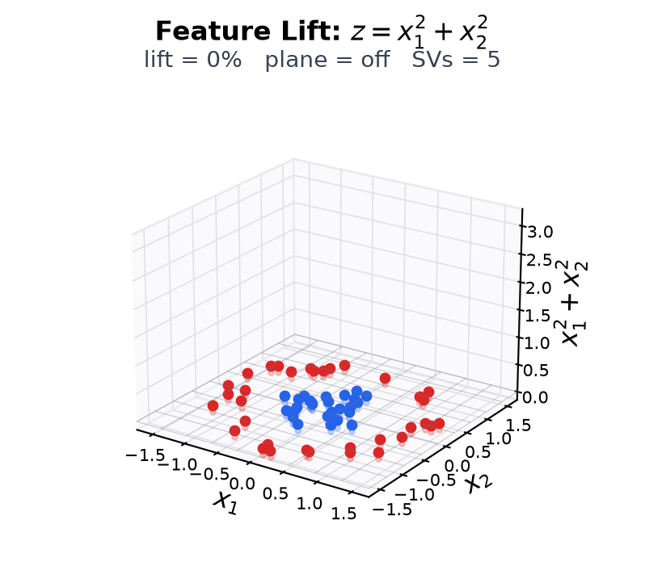
शुरुआतबीच में
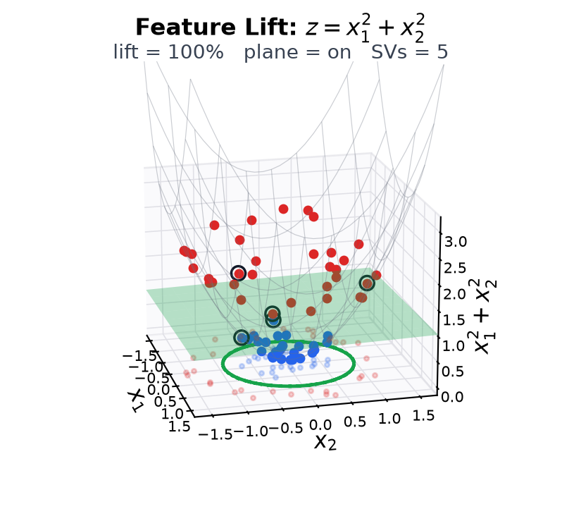
अंत
क्या देखें: शुरू में अंदर का नीला समूह और बाहर का लाल छल्ला 2D फ़र्श (\(z=0\)) पर पड़े हैं, जहाँ कोई भी सीधी रेखा इन्हें अलग नहीं कर सकती। जैसे-जैसे feature map \(\phi(x) = (x_1, x_2, x_1^2 + x_2^2)\) सक्रिय होता है, हर बिंदु कटोरे जैसी सतह \(z = x_1^2 + x_2^2\) पर ऊपर उठता है। बाहर वाले लाल बिंदु ज़्यादा ऊँचे उठ जाते हैं और बीच में एक सपाट हरा separating plane आसानी से दोनों classes के बीच आ जाता है। फ़र्श पर उसी plane का कटाव एक गोल वृत्ताकार boundary बनाता है।
चलती animation: cs229_hindi/out/anim/L07_1.gif
Animation 7.2RBF Surface Built Bump by Bump
शुरुआतबीच में
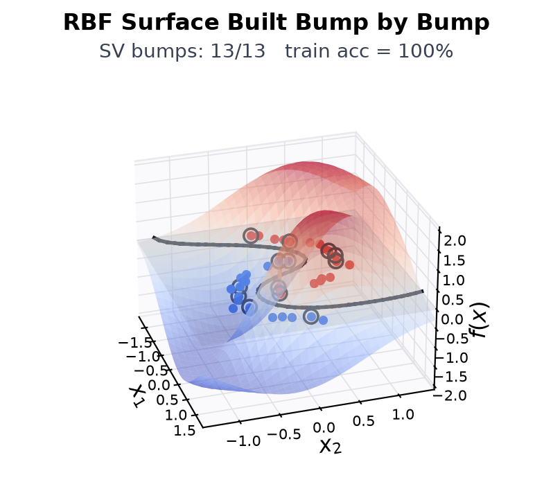
अंत
क्या देखें: RBF SVM का decision function \(f(x) = \sum_i \alpha_i y^{(i)} K(x^{(i)}, x) + b\) असल में support vectors पर रखे Gaussian bumps का जोड़ है। यहाँ पहले पूरा SMO चलाकर support vectors निकाले गए हैं, और फिर एक-एक करके हर support vector का bump जोड़ा जा रहा है। लाल बिंदु (\(y=+1\)) ऊपर की ओर पहाड़ी उठाते हैं और नीले बिंदु (\(y=-1\)) नीचे की ओर गड्ढा बनाते हैं। काले घेरे सक्रिय support vectors हैं और \(z=0\) पर काली रेखा बनती हुई non-linear decision boundary दिखाती है।
चलती animation: cs229_hindi/out/anim/L07_2.gif
Animation 7.3RBF \(\sigma\): Underfit to Overfit
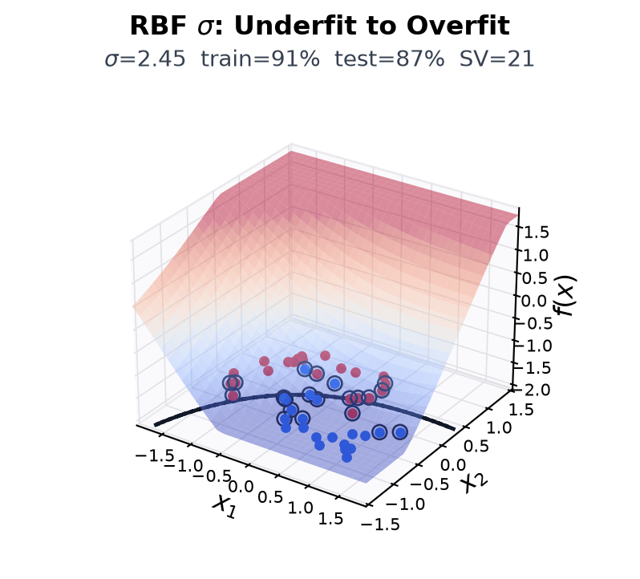
शुरुआत
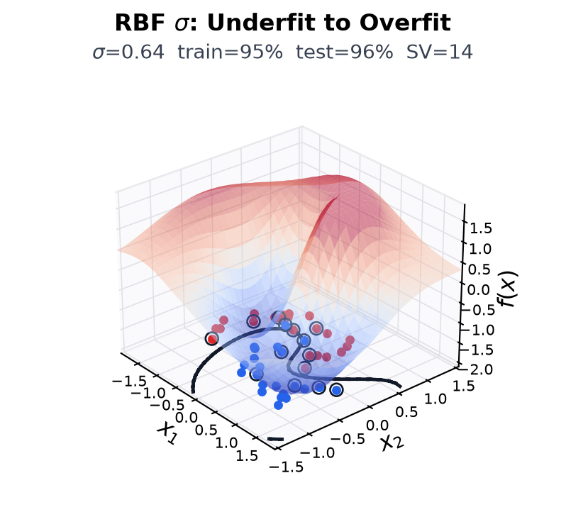
बीच मेंअंत
क्या देखें: यहाँ एक ही noisy two-moons dataset पर RBF kernel की चौड़ाई \(\sigma\) को बड़े से बहुत छोटे तक घटाया जा रहा है। शुरू में बड़ा \(\sigma\) बहुत चौड़े bumps बनाता है, इसलिए surface लगभग चपटी रहती है और मुड़ी हुई सीमा नहीं पकड़ पाती (underfitting)। बीच के \(\sigma \approx 0.65\) पर चिकनी S-आकार की सीमा बनती है और test accuracy सबसे ऊपर होती है। अंत में बहुत छोटे \(\sigma\) पर हर बिंदु के ऊपर नुकीली सुई बन जाती है: लगभग सारे बिंदु support vectors बन जाते हैं और test accuracy गिर जाती है (overfitting)।
चलती animation: cs229_hindi/out/anim/L07_3.gif
Animation 7.4Soft-Margin \(C\) Sweep with Outliers
शुरुआतबीच में
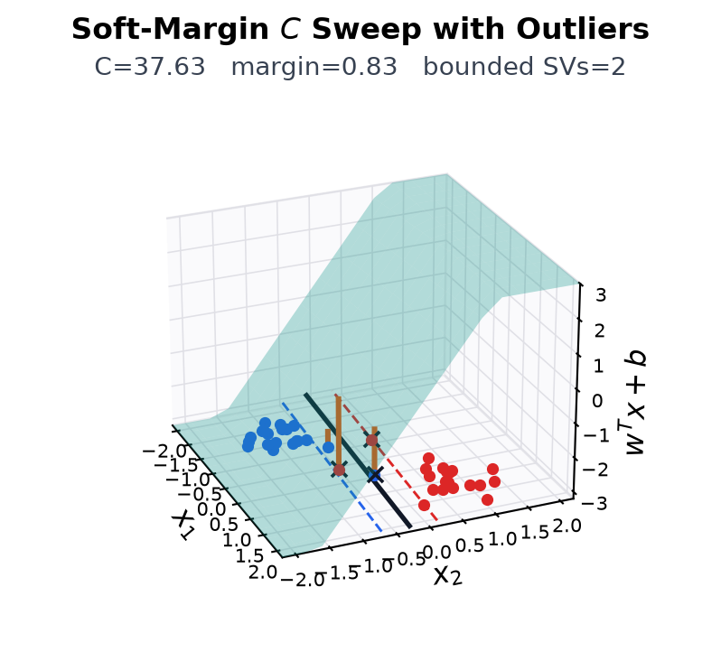
अंत
क्या देखें: दो साफ समूहों के बीच तीन भटके हुए outliers डाल दिए गए हैं और linear soft-margin SVM में \(C\) को छोटे से बड़े तक बढ़ाया जा रहा है। छोटे \(C\) पर नीला plane \(z = w^T x + b\) शांत और कम ढलान वाला रहता है: फ़र्श पर दिखती margin की पट्टी चौड़ी रहती है और outliers पर नारंगी slack डंडियाँ \(\xi_i > 0\) बर्दाश्त कर ली जाती हैं। जैसे ही \(C\) बहुत बड़ा होता है, गलती से बचने की ज़िद में plane बुरी तरह घूमकर खड़ी ढलान ले लेता है और पूरा margin पिचककर पतला हो जाता है।
चलती animation: cs229_hindi/out/anim/L07_4.gif
Animation 7.5SMO Path on Dual \(W(\alpha_1,\alpha_2)\)
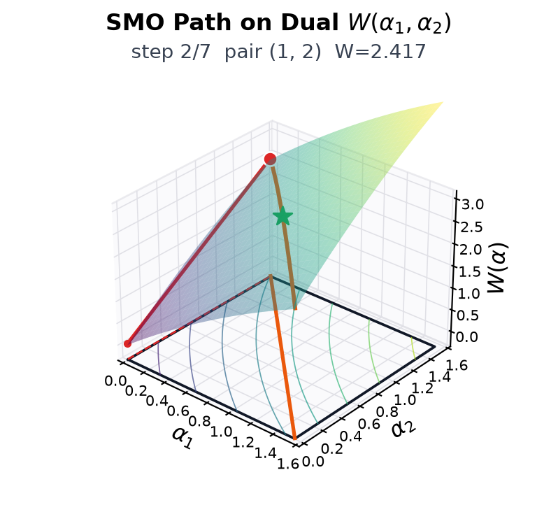
शुरुआत
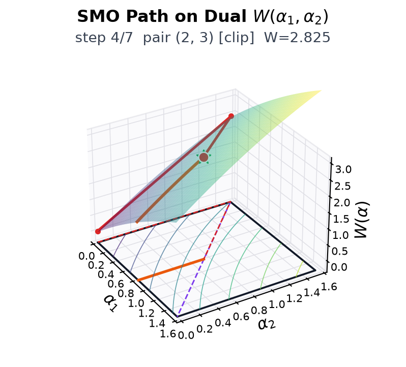
बीच मेंअंत
क्या देखें: यहाँ 3-बिंदु वाले SVM (\(y=(+1,+1,-1)\), समता से \(\alpha_3=\alpha_1+\alpha_2\)) का असली concave dual surface \(W(\alpha_1,\alpha_2)\) box \([0, C]^2\) के ऊपर दिखाया गया है। हर कदम में SMO एक जोड़ा चुनता है: \((1,2)\) चुनने पर बिंदु \(45^\circ\) की तिरछी रेखा पर चलता है, और \((1,3)\) या \((2,3)\) चुनने पर अक्ष के समांतर। नारंगी मेहराब वर्तमान 1D quadratic टुकड़ा \([L, H]\) है। जब बिना सीमा वाला शिखर वैध क्षेत्र से बाहर निकल जाता है, तो update किनारे \(L\) या \(H\) पर clip हो जाता है और धीरे-धीरे शिखर (हरा तारा) तक पहुँचता है।
चलती animation: cs229_hindi/out/anim/L07_5.gif
भाग 3
Python Example
इसे खुद चलाएँ: cs229_hindi/.venv/bin/python cs229_hindi/chapters/L07_svm_kernels/example.py
"""Lecture 7 example: Simplified SMO और RBF बनाम Linear Kernel शुरू से (NumPy).Noisy two-moons dataset पर soft-margin SVM dual को simplified SMO से हल करते हैं,Linear और RBF kernel की तुलना करते हैं, और sklearn SVC से मिलान जाँचते हैं।"""importnumpyasnpimportmatplotlib.pyplotaspltfromsklearn.datasetsimportmake_moonsfromsklearn.svmimportSVCrng=np.random.default_rng(42)# ---------- 1. Two-moons data और standardization (सिर्फ़ train statistics से) ----------X_raw,y01=make_moons(n_samples=220,noise=0.20,random_state=42)y_all=np.where(y01==1,1.0,-1.0)# SVM के लिए labels {-1, +1}perm=rng.permutation(len(y_all))tr,te=perm[:160],perm[160:]mu,std=X_raw[tr].mean(axis=0),X_raw[tr].std(axis=0)X_train,y_train=(X_raw[tr]-mu)/std,y_all[tr]X_test,y_test=(X_raw[te]-mu)/std,y_all[te]# ---------- 2. Kernels और Dual Objective ----------deflinear_kernel(X,Z):returnX@Z.Tdefrbf_kernel(X,Z,sigma=0.7):sq_dist=np.sum((X[:,None,:]-Z[None,:,:])**2,axis=-1)returnnp.exp(-sq_dist/(2.0*sigma**2))defdual_objective(alpha,y,K):ay=alpha*yreturnfloat(np.sum(alpha)-0.5*(ay@K@ay))# ---------- 3. Simplified Platt SMO शुरू से ----------deffit_smo(X,y,kernel_fn,C=2.0,tol=1e-3,max_passes=20,max_steps=180,seed=0):"""Box constraint 0 <= alpha_i <= C और sum(alpha_i y_i) = 0 के साथ dual maximize करें।"""local_rng=np.random.default_rng(seed)K=kernel_fn(X,X)m=len(y)alpha,b,history=np.zeros(m),0.0,[]passes,steps=0,0whilepasses<max_passesandsteps<max_steps:changed=0foriinrange(m):Ei=(alpha*y)@K[:,i]+b-y[i]ifnot((y[i]*Ei<-tolandalpha[i]<C)or(y[i]*Ei>tolandalpha[i]>0.0)):continueiflocal_rng.random()<0.8:diffs=np.abs(Ei-((alpha*y)@K+b-y))diffs[i]=-1.0j=int(np.argmax(diffs))else:j=int(local_rng.integers(m-1))j=j+1ifj>=ielsejEj=(alpha*y)@K[:,j]+b-y[j]ai_old,aj_old=alpha[i],alpha[j]L=max(0.0,aj_old-ai_old)ify[i]!=y[j]elsemax(0.0,ai_old+aj_old-C)H=min(C,C+aj_old-ai_old)ify[i]!=y[j]elsemin(C,ai_old+aj_old)eta=K[i,i]+K[j,j]-2.0*K[i,j]ifH-L<1e-10oreta<=1e-12:continueaj_new=np.clip(aj_old+y[j]*(Ei-Ej)/eta,L,H)ifabs(aj_new-aj_old)<1e-6:continueai_new=ai_old+y[i]*y[j]*(aj_old-aj_new)b1=b-Ei-y[i]*(ai_new-ai_old)*K[i,i]-y[j]*(aj_new-aj_old)*K[i,j]b2=b-Ej-y[i]*(ai_new-ai_old)*K[i,j]-y[j]*(aj_new-aj_old)*K[j,j]b=b1if0.0<ai_new<Celse(b2if0.0<aj_new<Celse0.5*(b1+b2))alpha[i],alpha[j]=ai_new,aj_newchanged+=1steps+=1history.append(dual_objective(alpha,y,K))passes=passes+1ifchanged==0else0return{"X":X,"y":y,"alpha":alpha,"b":b,"kernel":kernel_fn,"history":history}defpredict_score(mod,Z):return(mod["alpha"]*mod["y"])@mod["kernel"](mod["X"],Z)+mod["b"]defacc_pct(y_true,scores):return100.0*np.mean(np.where(scores>=0.0,1.0,-1.0)==y_true)# ---------- 4. Linear बनाम RBF SMO, और sklearn SVC से मिलान ----------C_val,sigma_val=2.0,0.70rbf_fn=lambdaA,B:rbf_kernel(A,B,sigma=sigma_val)lin_mod=fit_smo(X_train,y_train,linear_kernel,C=C_val,seed=1)rbf_mod=fit_smo(X_train,y_train,rbf_fn,C=C_val,seed=2)svc=SVC(C=C_val,kernel="rbf",gamma=1.0/(2.0*sigma_val**2),tol=1e-4).fit(X_train,y_train)print(f"Dataset: two-moons (train={len(y_train)}, test={len(y_test)}), C={C_val}, RBF sigma={sigma_val}\n")print("Model Dual W(a) Train Acc Test Acc Total SVs Free / Bounded")forname,modin[("Linear SMO (scratch)",lin_mod),("RBF SMO (scratch)",rbf_mod)]:al=mod["alpha"]sv,free,bnd=al>1e-4,(al>1e-4)&(al<C_val-1e-4),al>=C_val-1e-4print(f"{name:<21}{mod['history'][-1]:9.3f}{acc_pct(y_train,predict_score(mod,X_train)):6.1f}%"f" {acc_pct(y_test,predict_score(mod,X_test)):6.1f}% {sv.sum():4d}{free.sum():3d} / {bnd.sum():<3d}")print(f"{'sklearn SVC (RBF)':<21}{'(ref)':>9}{100*svc.score(X_train,y_train):6.1f}%"f" {100*svc.score(X_test,y_test):6.1f}% {len(svc.support_):4d} -")agree=100.0*np.mean(np.sign(predict_score(rbf_mod,X_test))==svc.predict(X_test))print(f"\nRBF SMO और sklearn test predictions में सहमति: {agree:.1f}%, sum(alpha_i y_i) = {rbf_mod['alpha']@y_train:+.2e}")print("\nRBF bandwidth sigma बदलने पर प्रभाव (C = 2.0):")forsigin(2.80,0.70,0.08):m_s=fit_smo(X_train,y_train,lambdaA,B,s=sig:rbf_kernel(A,B,s),C=C_val,seed=3)print(f" sigma = {sig:<4.2f} -> train = {acc_pct(y_train,predict_score(m_s,X_train)):5.1f}%, "f"test = {acc_pct(y_test,predict_score(m_s,X_test)):5.1f}%, SVs = {int(np.sum(m_s['alpha']>1e-4))}/{len(y_train)}")# ---------- 5. Decision boundaries और SMO convergence का चित्र ----------fig,axes=plt.subplots(1,3,figsize=(11.2,3.6))gx,gy=np.meshgrid(np.linspace(-2.4,2.4,140),np.linspace(-2.3,2.3,140))grid_pts=np.c_[gx.ravel(),gy.ravel()]forax,mod,ttlin[(axes[0],lin_mod,"Linear Kernel SMO"),(axes[1],rbf_mod,"RBF Kernel SMO (sigma=0.7)")]:zz=predict_score(mod,grid_pts).reshape(gx.shape)ax.contourf(gx,gy,zz,levels=[-50,0,50],colors=["#dbeafe","#fee2e2"],alpha=0.65)ax.contour(gx,gy,zz,levels=[-1,0,1],colors=["#2563eb","#111827","#dc2626"],linestyles=["--","-","--"],linewidths=[1.0,1.8,1.0])ax.scatter(X_train[y_train<0,0],X_train[y_train<0,1],c="#2563eb",s=16,label="y = -1")ax.scatter(X_train[y_train>0,0],X_train[y_train>0,1],c="#dc2626",s=16,label="y = +1")sv=mod["alpha"]>1e-4ax.scatter(X_train[sv,0],X_train[sv,1],facecolors="none",edgecolors="#111827",s=52,lw=1.0,label="SV")ax.set(title=f"{ttl} ({sv.sum()} SVs)",xlabel="x1 (scaled)",ylabel="x2 (scaled)",xlim=(-2.4,2.4),ylim=(-2.3,2.3))axes[0].legend(loc="upper right",fontsize=8)axes[2].plot(rbf_mod["history"],color="#ea580c",lw=2.0,label="RBF SMO W(alpha)")axes[2].plot(lin_mod["history"],color="#2563eb",lw=1.6,ls="--",label="Linear SMO W(alpha)")axes[2].set(title="Dual Objective across SMO sweeps",xlabel="SMO sweep",ylabel="W(alpha)")axes[2].legend(fontsize=8.5)axes[2].grid(alpha=0.25)fig.tight_layout()fig.savefig("result.png",dpi=130)
OUTPUT
Dataset: two-moons (train=160, test=60), C=2.0, RBF sigma=0.7
Model Dual W(a) Train Acc Test Acc Total SVs Free / Bounded
Linear SMO (scratch) 95.344 87.5% 88.3% 65 24 / 41
RBF SMO (scratch) 40.161 97.5% 95.0% 46 29 / 17
sklearn SVC (RBF) (ref) 96.9% 95.0% 38 -
RBF SMO और sklearn test predictions में सहमति: 96.7%, sum(alpha_i y_i) = +0.00e+00
RBF bandwidth sigma बदलने पर प्रभाव (C = 2.0):
sigma = 2.80 -> train = 86.9%, test = 88.3%, SVs = 67/160
sigma = 0.70 -> train = 96.9%, test = 96.7%, SVs = 48/160
sigma = 0.08 -> train = 99.4%, test = 88.3%, SVs = 155/160
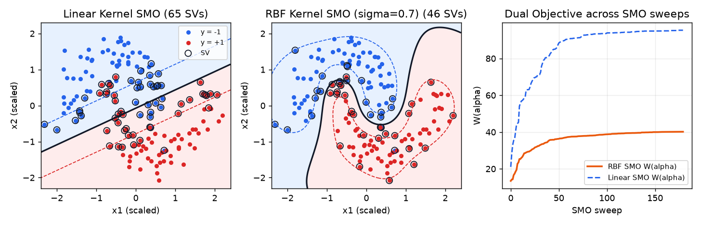
LECTURE 8
Bias-Variance Tradeoff, Regularization और Model Selection
भाग 1
Theory
इस lecture में: training error और generalization error का फ़र्क, underfitting (high bias) और overfitting (high variance), bias-variance decomposition और उसका derivation, Regularization (L2 यानी ridge, L1 यानी lasso), उसका Bayesian मतलब (Maximum Likelihood बनाम MAP), Model Selection (hold-out, k-fold और leave-one-out cross validation) और Feature Selection (wrapper और filter methods)।
1. एक line में idea
Model का असली इम्तिहान training data पर नहीं, नए data पर होता है। बहुत सरल model data का pattern पकड़ ही नहीं पाता (underfitting)। बहुत लचीला model pattern के साथ-साथ noise भी रट लेता है (overfitting)। अच्छा model इन दोनों के बीच में कहीं है। इस lecture के सारे औज़ार (regularization, cross validation, feature selection) उसी बीच की जगह को ढूँढने के तरीके हैं।
2. Training error बनाम generalization error
मान लीजिए हर example \((x, y)\) किसी distribution \(\mathcal{D}\) से आता है। किसी hypothesis \(h\) के लिए दो अलग errors होते हैं:
\(\hat{\varepsilon}(h)\)training error है: उन्हीं \(m\) examples पर औसत error जिनसे model सीखा है।
\(\varepsilon(h)\)generalization error (या test error) है: \(\mathcal{D}\) से आए बिल्कुल नए example पर औसत error।
Training में हम \(\hat{\varepsilon}\) को छोटा करते हैं, पर हमें असल में \(\varepsilon\) छोटा चाहिए। \(\varepsilon(h) - \hat{\varepsilon}(h)\) को generalization gap कहते हैं। \(\varepsilon\) को हम सीधे नहीं नाप सकते, इसलिए उसका अंदाज़ा ऐसे data से लगाते हैं जिसे model ने training में कभी नहीं देखा (test set)।
3. Underfitting और Overfitting
एक feature वाला data लें और उस पर degree \(d\) का polynomial fit करें: \(h_\theta(x) = \theta_0 + \theta_1 x + \dots + \theta_d x^d\)। \(d\) बढ़ाने से model ज़्यादा लचीला (complex) होता जाता है।
Degree \(d\)
क्या होता है
Training error
Generalization error
नाम
बहुत छोटा (जैसे 1)
सीधी line मुड़े हुए pattern को पकड़ नहीं पाती
बड़ा
बड़ा
underfitting, high bias
ठीक (जैसे 3)
pattern पकड़ता है, noise को छोड़ देता है
छोटा
छोटा
अच्छा fit
बहुत बड़ा (जैसे 10)
हर training point से गुज़रता है, बीच में झूलता है
लगभग 0
बड़ा
overfitting, high variance
याद रखने की बात: \(d\) बढ़ाने पर training error हमेशा घटता है (या उतना ही रहता है), पर generalization error पहले घटता है और फिर बढ़ने लगता है। इसलिए training error देखकर model नहीं चुना जा सकता।
4. Bias-Variance Decomposition
अब इसी बात को maths में लिखते हैं। मान लीजिए data ऐसे बनता है:
यहाँ \(h^\star\) असली (अनजान) function है और \(\xi\) noise है। Training set \(S\) random है, इसलिए उस पर सीखा गया model \(\hat{h}_S\) भी random है: नया \(S\) लेंगे तो थोड़ा अलग \(\hat{h}_S\) मिलेगा। एक test point \(x\) तय करें और उस पर औसत squared error देखें (औसत \(S\) और test noise \(\xi\), दोनों पर):
Step 1: noise को अलग करें।\(y - \hat{h}_S(x) = \xi + \left(h^\star(x) - \hat{h}_S(x)\right)\) लिखें और square खोलें। Test point का \(\xi\) training set \(S\) से independent है और \(E[\xi] = 0\) है, इसलिए cross term \(2\,E[\xi]\,E_S[h^\star(x) - \hat{h}_S(x)] = 0\) हो जाता है:
Step 2: औसत model को बीच में लाएँ।\(h_{\text{avg}}(x) = E_S[\hat{h}_S(x)]\) वह prediction है जो अनगिनत training sets पर सीखे गए models का औसत लेने से मिलता। अब \(h^\star(x) - \hat{h}_S(x) = \left(h^\star(x) - h_{\text{avg}}(x)\right) + \left(h_{\text{avg}}(x) - \hat{h}_S(x)\right)\) लिखें। पहला हिस्सा एक constant है (उसमें \(S\) नहीं है), और दूसरे हिस्से का mean zero है (क्योंकि \(E_S[\hat{h}_S(x)] = h_{\text{avg}}(x)\))। इसलिए यहाँ भी cross term zero है:
\(\sigma^2\) (irreducible error): data का अपना noise। कोई भी model, चाहे \(h^\star\) ही क्यों न हो, इससे नीचे नहीं जा सकता।
Bias: औसत model असली function से कितना दूर है। यह model की बनावट की कमी है: अनंत data मिलने पर भी सीधी line किसी curve को fit नहीं कर सकती।
Variance: training set बदलने पर prediction कितना हिलता है। यह बताता है कि model इस खास \(S\) के noise को कितना रट रहा है।
5. Complexity और data का असर
आप क्या बदलते हैं
\(\mathrm{Bias}^2\)
Variance
Model ज़्यादा complex (degree बड़ी, features ज़्यादा)
घटता है
बढ़ता है
Model ज़्यादा सरल
बढ़ता है
घटता है
Training examples \(m\) ज़्यादा
लगभग वही रहता है
घटता है
Regularization \(\lambda\) बड़ा
बढ़ता है
घटता है
यही bias-variance tradeoff है: complexity बढ़ाने से एक term घटता है और दूसरा बढ़ता है, इसलिए दोनों का जोड़ (test error) बीच की किसी complexity पर सबसे छोटा होता है। ध्यान दें कि ज़्यादा data सिर्फ़ variance को ठीक करता है, bias को नहीं।
Learning theory इन्हीं बातों को पक्का रूप देती है: वह दिखाती है कि \(m\) बढ़ने पर training error और generalization error के बीच का gap सिकुड़ता है, और hypothesis class जितनी बड़ी हो, उतना ही gap पाटने के लिए ज़्यादा data चाहिए। हम यहाँ वे bounds derive नहीं करेंगे।
6. Regularization
Complexity घटाने का एक तरीका है features हटाना। दूसरा, ज़्यादा महीन तरीका है सारे features रखना पर बड़े \(\theta\) पर जुर्माना (penalty) लगाना:
\(R(\theta)\)regularizer है और \(\lambda \ge 0\)regularization parameter है। \(\lambda = 0\) पर कोई रोक नहीं है (overfitting का खतरा)। \(\lambda\) बहुत बड़ा हो तो \(\theta \to 0\) और model underfit करता है।
L2 regularization (ridge)
यहाँ \(R(\theta) = \frac{1}{2}\|\theta\|_2^2 = \frac{1}{2}\sum_j \theta_j^2\) है। Lecture 2 का \(J(\theta) = \frac{1}{2}(X\theta - \vec{y})^T(X\theta - \vec{y})\) लें:
Gradient को zero रखने पर \((X^TX + \lambda I)\theta = X^T\vec{y}\), यानी
\[\theta = (X^TX + \lambda I)^{-1}X^T\vec{y}\]
दो बातें ध्यान देने की हैं। पहली: किसी भी \(v \neq 0\) के लिए \(v^T(X^TX + \lambda I)v = \|Xv\|^2 + \lambda\|v\|^2 > 0\) है, इसलिए \(\lambda > 0\) पर यह matrix हमेशा invertible है, चाहे \(m < n\) हो। दूसरी: कई किताबें penalty को \(\lambda\|\theta\|_2^2\) लिखती हैं (\(\frac{1}{2}\) के बिना)। उससे सिर्फ़ \(\lambda\) का पैमाना 2 गुना बदलता है, idea वही रहता है। Gradient Descent में L2 penalty का update \(\theta := (1 - \alpha\lambda)\theta - \alpha\nabla_\theta J(\theta)\) बनता है: हर step में \(\theta\) पहले थोड़ा सिकुड़ता है। इसीलिए इसे weight decay भी कहते हैं।
L1 regularization (lasso) और sparsity
यहाँ \(R(\theta) = \|\theta\|_1 = \sum_j |\theta_j|\) है। L1 की खासियत यह है कि वह कई \(\theta_j\) को ठीक zero कर देता है (sparse solution), यानी अपने आप feature selection हो जाता है। ऐसा क्यों होता है, यह एक parameter वाले उदाहरण से दिखता है। मान लीजिए penalty के बिना सबसे अच्छा मान \(a\) है:
L1 वाला जवाब ऐसे निकलता है: \(\theta > 0\) पर derivative \(\theta - a + \lambda = 0\) से \(\theta = a - \lambda\) मिलता है, जो तभी valid है जब \(a > \lambda\) हो। इसी तरह \(\theta < 0\) पर \(\theta = a + \lambda\), जो तभी valid है जब \(a < -\lambda\) हो। अगर \(|a| \le \lambda\) है तो दोनों में से कोई valid नहीं, और minimum नोक \(\theta = 0\) पर ही है। यानी L2 हर \(\theta_j\) को एक अनुपात में छोटा करता है पर zero कभी नहीं करता, जबकि L1 हर \(\theta_j\) में से \(\lambda\) घटा देता है और छोटे वालों को पूरा zero कर देता है।
Geometric मतलब: penalty लगाना वैसा ही है जैसे \(J(\theta)\) को एक budget \(R(\theta) \le t\) के अंदर minimize करना। L2 का budget region एक गोल घेरा (circle) है, L1 का एक diamond जिसके कोने axes पर हैं। \(J\) के contours diamond को अक्सर किसी कोने पर ही सबसे पहले छूते हैं, और कोने पर कोई न कोई \(\theta_j = 0\) होता है। L1 का closed form नहीं होता, उसे iterative तरीकों से solve करते हैं।
7. Bayesian नज़रिया: Maximum Likelihood बनाम MAP
अब तक (frequentist नज़रिया) \(\theta\) एक अनजान पर तय संख्या थी, और हम उसे Maximum Likelihood से निकालते थे:
Bayesian नज़रिए में \(\theta\) खुद एक random variable है। Data देखने से पहले उसके बारे में हमारी मान्यता prior\(p(\theta)\) है। Data \(S\) देखने के बाद Bayes rule से posterior मिलता है: \(p(\theta \mid S) \propto \left(\prod_{i=1}^{m} p(y^{(i)} \mid x^{(i)}, \theta)\right) p(\theta)\)। पूरा Bayesian prediction posterior पर integral माँगता है, जो आम तौर पर बहुत महँगा है। इसलिए posterior का सबसे ऊँचा बिंदु ले लेते हैं, जिसे MAP (maximum a posteriori) estimate कहते हैं:
फ़र्क बस आख़िर के \(p(\theta)\) का है। अब Linear Regression का Gaussian noise model (\(y^{(i)} = \theta^Tx^{(i)} + \epsilon^{(i)}\), \(\epsilon^{(i)} \sim \mathcal{N}(0, \sigma^2)\)) और prior \(\theta \sim \mathcal{N}(0, \tau^2 I)\) लें। Log लेने पर:
यह ठीक ridge regression है। यानी L2 regularization = Gaussian prior के साथ MAP। \(\tau\) छोटा होने का मतलब है "मुझे पक्का लगता है कि \(\theta\) zero के पास है", और तब \(\lambda\) बड़ा होता है। इसी तरह Laplace prior \(p(\theta_j) \propto \exp(-|\theta_j|/b)\) लेने पर L1 regularization मिलता है।
8. Model Selection: Cross Validation
Degree \(d\), \(\lambda\), या features का set कैसे चुनें? Training error से नहीं (वह हमेशा सबसे complex model को जिताएगा)। तरीका यह है कि कुछ data अलग रखें और उस पर error नापें।
Hold-out cross validation:
\(S\) को random तरीके से दो हिस्सों में बाँटें: \(S_{\text{train}}\) (लगभग 70%) और \(S_{\text{cv}}\) (लगभग 30%)।
हर candidate model \(M_i\) को सिर्फ़ \(S_{\text{train}}\) पर train करें और hypothesis \(h_i\) पाएँ।
हर \(h_i\) का error \(S_{\text{cv}}\) पर नापें और सबसे छोटे error वाला model चुनें।
चाहें तो चुने हुए model को पूरे \(S\) पर दोबारा train कर लें।
k-fold cross validation: hold-out में 30% data training के काम नहीं आता। इसे सुधारने के लिए:
\(S\) को \(k\) बराबर हिस्सों \(S_1, \dots, S_k\) में बाँटें।
हर model \(M_i\) के लिए, \(j = 1, \dots, k\) पर: \(S_j\) को छोड़कर बाकी सब पर train करें और \(S_j\) पर error नापें। इन \(k\) errors का औसत उस model का score है।
सबसे छोटे औसत error वाला model चुनें और उसे पूरे \(S\) पर दोबारा train करें।
Leave-one-out cross validation (LOOCV): यह \(k = m\) वाला k-fold है। हर बार सिर्फ़ एक example बाहर रखते हैं और \(m\) बार train करते हैं।
तरीका
हर model के लिए training runs
कब use करें
Hold-out
1
data बहुत है, या training बहुत महँगी है
k-fold (\(k = 5\) या \(10\))
\(k\)
बीच का data, यही आम पसंद है
Leave-one-out
\(m\)
data बहुत कम है (जैसे \(m \le 50\))
9. Feature Selection
अगर \(n\) बहुत बड़ा है और \(m\) छोटा, तो कुछ ही features रखना variance घटाता है। \(n\) features के \(2^n\) subsets होते हैं, इसलिए सबको आज़माना मुमकिन नहीं।
Wrapper methods learning algorithm को ही बार-बार चलाकर subsets परखते हैं। Forward search:
\(\mathcal{F} = \emptyset\) से शुरू करें।
हर ऐसे feature \(i\) के लिए जो \(\mathcal{F}\) में नहीं है, \(\mathcal{F} \cup \{i\}\) पर model train करें और cross validation से उसका error नापें। जो feature सबसे ज़्यादा फ़ायदा दे, उसे \(\mathcal{F}\) में जोड़ दें।
Step 2 दोहराएँ, जब तक सारे features न आ जाएँ या तय संख्या पूरी न हो जाए। पूरे search में जो subset सबसे अच्छा रहा, वही जवाब है।
Backward search उल्टा चलता है: सारे features से शुरू करें और हर बार वह feature हटाएँ जिसके जाने से सबसे कम नुकसान हो। दोनों में लगभग \(O(n^2)\) training runs लगते हैं, जो महँगा है।
Filter methods model train किए बिना हर feature को एक score \(S(j)\) देते हैं कि \(x_j\) अकेला \(y\) के बारे में कितना बताता है, और ऊपर के \(k\) features रख लेते हैं। Score के लिए \(x_j\) और \(y\) का correlation ले सकते हैं, या (discrete features के लिए) mutual information:
ये probabilities training set की गिनती से निकलती हैं। अगर \(x_j\) और \(y\) independent हैं तो \(p(x_j, y) = p(x_j)p(y)\) और score zero है। जितना ज़्यादा score, feature उतना काम का। कितने features रखें (\(k\)), यह फिर cross validation से तय करें। Filter methods सस्ते हैं, पर वे features को अकेले-अकेले देखते हैं और उनका आपसी मेल नहीं पकड़ते।
10. Practical बातें और आम गलतियाँ
Test set को model चुनने में कभी न लगाएँ।\(\lambda\) या degree cross validation से चुनें, और test set सिर्फ़ आख़िर में एक बार देखें। नहीं तो test error भी झूठा अच्छा दिखेगा।
हर preprocessing fold के अंदर करें। Feature scaling या feature selection पूरे data पर करके फिर cross validation करना data leakage है। Statistics सिर्फ़ उस fold के training हिस्से से निकालें।
Intercept \(\theta_0\) को regularize न करें, और regularization से पहले features को scale करें। Penalty \(\theta_j\) के size पर लगती है, और वह size feature की unit पर निर्भर करता है।
\(\lambda\) को log scale पर खोजें:\(0.001, 0.01, 0.1, 1, 10\)। बराबर दूरी वाले मान समय बर्बाद करते हैं।
पहले पहचानें, फिर इलाज करें। High bias हो तो ज़्यादा data जुटाने से कुछ नहीं होगा; बड़ा model या नए features चाहिए। High variance हो तो ज़्यादा data, बड़ा \(\lambda\) या कम features काम आएँगे (Lecture 12)।
11. खुद से पूछें
Bias-variance derivation के Step 1 में cross term zero क्यों हुआ? अगर test point खुद training set का हिस्सा होता, तो क्या यह तर्क चलता?
Ridge के closed form में \(\lambda \to \infty\) करने पर \(\theta\) का क्या होता है, और तब bias और variance का क्या होता है?
आपके पास \(m = 40\) examples और \(n = 500\) features हैं। आप कौन सा cross validation और कौन सा feature selection तरीका चुनेंगे, और क्यों?
भाग 2
3D Animations
Animation 8.1Polynomial degree: underfit to overfit
शुरुआत
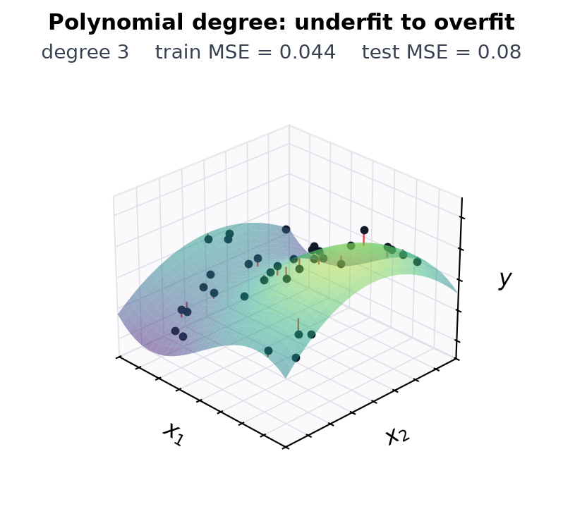
बीच मेंअंत
क्या देखें: काले बिंदु noisy training data हैं: दो features \(x_1, x_2\) और ऊँचाई पर target \(y\)। रंगीन surface उन पर fit किया गया polynomial है, जिसकी degree 1 से 6 तक चढ़ती है। Degree 1 का सपाट plane मोड़ों को पकड़ नहीं पाता (underfitting), इसलिए लाल residuals लंबे हैं। Degree 3 के आस-पास surface असली आकार पकड़ लेती है। Degree 6 पर surface हर बिंदु से गुज़रने के लिए बुरी तरह मुड़ती है (overfitting): status line में training error लगभग zero हो जाता है पर test error उछल जाता है।
चलती animation: cs229_hindi/out/anim/L08_1.gif
Animation 8.2Variance: refit on new training sets
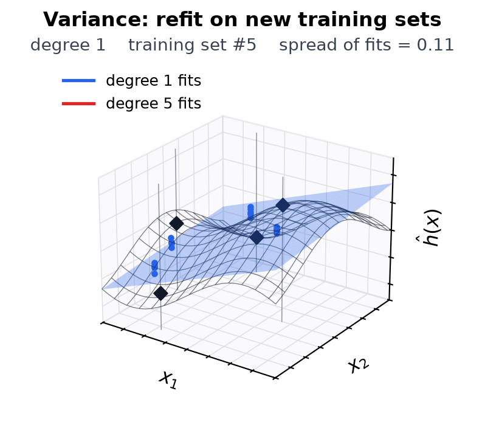
शुरुआतबीच मेंअंत
क्या देखें: स्लेटी जाली असली function \(h^\star\) है। हर frame में उसी distribution से एक नया training set लिया जाता है और model दोबारा fit होता है। पहले आधे हिस्से में model सरल है (degree 1, नीला): surface लगभग नहीं हिलती, पर जाली से दूर रहती है (high bias, low variance)। दूसरे आधे में model complex है (degree 5, लाल): surface हर बार बुरी तरह बदलती है (high variance)। चार खंभों पर जमा होते बिंदु हर fit का prediction हैं और काला निशान सच है: नीले बिंदु सटे हुए पर सच से हटे हुए हैं, लाल बिंदु सच के आस-पास दूर-दूर बिखरे हैं।
चलती animation: cs229_hindi/out/anim/L08_2.gif
Animation 8.3L2 penalty pulls \(\theta\) to the origin
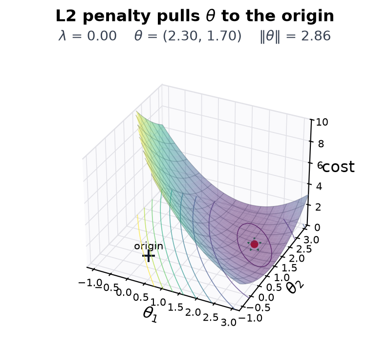
शुरुआत
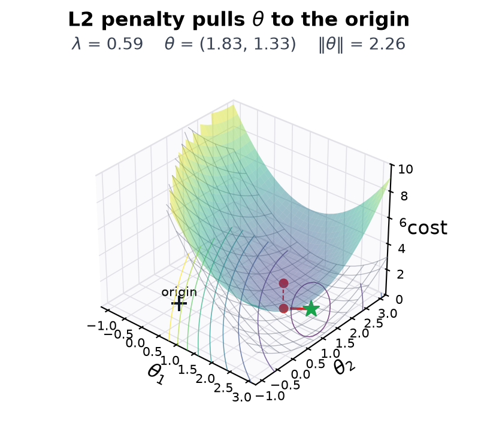
बीच मेंअंत
क्या देखें: ज़मीन पर दो parameters \(\theta_1, \theta_2\) हैं और ऊँचाई cost है। स्लेटी जाली बिना regularization का \(J(\theta)\) है, जिसका minimum हरे तारे पर है। रंगीन surface regularized cost \(J(\theta) + \frac{\lambda}{2}\|\theta\|_2^2\) है। जैसे-जैसे \(\lambda\) बढ़ता है, origin पर टिका penalty का कटोरा surface को हर तरफ़ से ऊपर उठाता है, बस origin पर नहीं। इसलिए minimum (लाल गेंद) हरे तारे से खिंचकर origin की ओर सरकता जाता है: \(\|\theta\|\) छोटा होता है, पर कभी ठीक zero नहीं होता।
चलती animation: cs229_hindi/out/anim/L08_3.gif
Animation 8.4L1 vs L2: where the minimum lands
शुरुआत
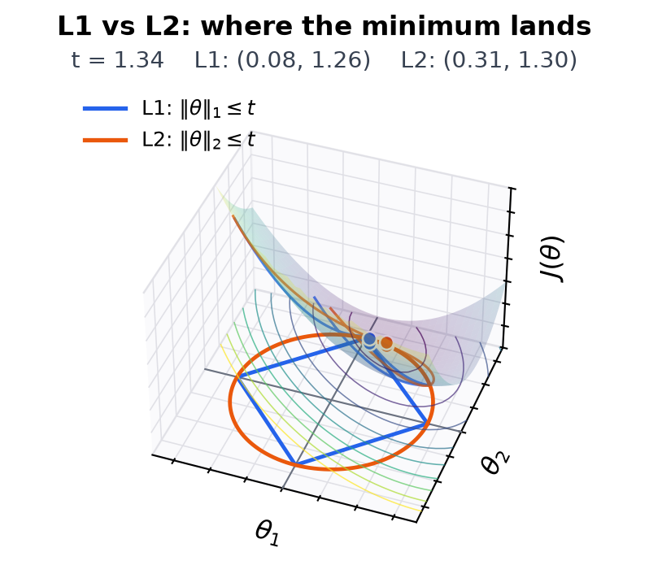
बीच मेंअंत
क्या देखें: यहाँ भी ऊँचाई cost \(J(\theta)\) है, पर अब \(\theta\) को एक budget के अंदर रहना है। फ़र्श पर नीला diamond L1 budget \(\|\theta\|_1 \le t\) है और नारंगी गोल घेरा L2 budget \(\|\theta\|_2 \le t\) है। दोनों की सीमा को surface पर उठाकर भी खींचा गया है: budget के अंदर सबसे नीचा बिंदु ही constrained minimum है। जैसे-जैसे \(t\) घटता है, L1 का बिंदु diamond के किनारे पर फिसलकर कोने पर पहुँचता है और वहीं अटक जाता है, यानी \(\theta_1\) ठीक zero (sparsity)। L2 का बिंदु घेरे पर सरकता रहता है और उसके दोनों coordinates non-zero रहते हैं।
चलती animation: cs229_hindi/out/anim/L08_4.gif
Animation 8.5Model selection over (degree, \(\lambda\))
शुरुआतबीच मेंअंत
क्या देखें: ज़मीन पर दो hyperparameters हैं: polynomial की degree और \(\log_{10}\lambda\)। नीली surface training error है और नारंगी surface validation error (कई random training sets पर नापा गया)। पहले marker सबसे छोटे \(\lambda\) पर degree बढ़ाता है: नीला बिंदु लगातार नीचे जाता है, पर लाल बिंदु पहले गिरता है और फिर ऊपर चढ़ जाता है (overfitting)। दोनों के बीच की खड़ी रेखा generalization gap है। फिर marker \(\lambda\) बढ़ाता है और validation error दोबारा गिरता है। अंत में वह validation surface के सबसे निचले बिंदु (हरा तारा) पर रुकता है: model वहीं चुना जाता है, वहाँ नहीं जहाँ training error सबसे कम है।
चलती animation: cs229_hindi/out/anim/L08_5.gif
भाग 3
Python Example
इसे खुद चलाएँ: cs229_hindi/.venv/bin/python cs229_hindi/chapters/L08_bias_variance_regularization/example.py
"""Lecture 8 example: Ridge Regression, k-fold Cross Validation और Bias-Variance (सिर्फ़ NumPy).1D data पर polynomial regression करते हैं। पहले k-fold cross validation से degree और lambdaचुनते हैं। फिर सैकड़ों training sets बनाकर bias^2 और variance को सीधे नापते हैं और देखते हैं किsigma^2 + bias^2 + variance सचमुच test error के बराबर आता है।"""importnumpyasnpimportmatplotlib.pyplotaspltSIGMA=0.3# noise का standard deviationdefh_star(x):"""असली function, जो model को पता नहीं है।"""returnnp.sin(2.5*x)+0.7*np.cos(3.5*x)defmake_data(m,rng):x=rng.uniform(-1,1,m)returnx,h_star(x)+rng.normal(0,SIGMA,m)# ---------- 1. Polynomial features और ridge का closed form ----------defpoly_features(x,degree):"""Columns: 1, x, x^2, ..., x^degree"""returnnp.vander(x,degree+1,increasing=True)defridge_fit(x,y,degree,lam):"""theta = (X^T X + lam*I)^-1 X^T y, पर intercept theta_0 पर penalty नहीं।"""X=poly_features(x,degree)penalty=lam*np.eye(degree+1)penalty[0,0]=0.0returnnp.linalg.solve(X.T@X+penalty,X.T@y)defpredict(theta,x):returnpoly_features(x,len(theta)-1)@thetadefmse(theta,x,y):returnnp.mean((predict(theta,x)-y)**2)# ---------- 2. k-fold cross validation ----------defkfold_error(x,y,degree,lam,k=5):"""हर fold को एक बार बाहर रखें, बाकी पर train करें, बाहर वाले पर error नापें।"""folds=np.array_split(np.arange(len(x)),k)# data पहले से random क्रम में हैerrors=[]forheld_outinfolds:train=np.setdiff1d(np.arange(len(x)),held_out)theta=ridge_fit(x[train],y[train],degree,lam)errors.append(mse(theta,x[held_out],y[held_out]))returnnp.mean(errors)rng=np.random.default_rng(8)x_train,y_train=make_data(40,rng)x_test,y_test=make_data(2000,rng)# सिर्फ़ आख़िरी जाँच के लिएdegrees=[1,2,3,4,5,7,9,12]lambdas=[0.0,1e-4,1e-2,1.0]cv=np.array([[kfold_error(x_train,y_train,d,lam)forlaminlambdas]fordindegrees])print("1) 5-fold CV error (m = 40). Rows: degree, columns: lambda")print("degree "+"".join(f"{f'lam={lam:g}':>12}"forlaminlambdas)+" train MSE (lam=0)")ford,rowinzip(degrees,cv):train_err=mse(ridge_fit(x_train,y_train,d,0.0),x_train,y_train)print(f"{d:>6} "+"".join(f"{e:12.4f}"foreinrow)+f" {train_err:10.4f}")best_d,best_l=np.unravel_index(np.argmin(cv),cv.shape)d_cv,lam_cv=degrees[best_d],lambdas[best_l]theta_cv=ridge_fit(x_train,y_train,d_cv,lam_cv)# चुने हुए model को पूरे data पर train करेंprint(f"\nCV ने चुना: degree = {d_cv}, lambda = {lam_cv:g} (CV error {cv.min():.4f})")print("Test MSE (2000 नए examples पर):")forlabel,d,lamin[("CV का चुना हुआ model",d_cv,lam_cv),("degree 1 (underfit)",1,0.0),("degree 12, lam=0 (overfit)",12,0.0),("degree 12, lam=0.01",12,1e-2)]:print(f" {mse(ridge_fit(x_train,y_train,d,lam),x_test,y_test):.4f}{label}")print(f"(noise का sigma^2 = {SIGMA**2:.4f}: इससे नीचे कोई model नहीं जा सकता)")# ---------- 3. Bias-variance simulation: बहुत सारे training sets, हर एक पर नया model ----------# हर training set में x की वही m जगहें हैं (बराबर दूरी पर) और y का noise नया है, जैसे वही# experiment बार-बार दोहराया गया हो। इससे सिर्फ़ noise से पैदा हुआ variance साफ़ दिखता है।x_grid=np.linspace(-1,1,200)# test pointsdefbias_variance(degree,lam,m=15,trials=1000,seed=0):sim=np.random.default_rng(seed)x=np.linspace(-1,1,m)preds=np.empty((trials,len(x_grid)))test_err=0.0fortinrange(trials):y=h_star(x)+sim.normal(0,SIGMA,m)# नया training setpreds[t]=predict(ridge_fit(x,y,degree,lam),x_grid)y_new=h_star(x_grid)+sim.normal(0,SIGMA,len(x_grid))# नए noisy test targetstest_err+=np.mean((y_new-preds[t])**2)/trialsh_avg=preds.mean(axis=0)# औसत modelvariance=np.mean(preds.var(axis=0))# trials सीमित हैं, इसलिए h_avg में थोड़ा noise बचता है (लगभग variance / trials): उसे घटा देंbias2=max(0.0,np.mean((h_avg-h_star(x_grid))**2)-variance/trials)returnbias2,variance,test_errprint("\n2) Bias-variance tradeoff (m = 15, 1000 training sets, lambda = 0)")print("degree bias^2 variance sigma^2+bias^2+var measured test MSE")sim_degrees=[1,2,3,4,6,8,10]table=[]fordinsim_degrees:b2,var,err=bias_variance(d,0.0)table.append((b2,var,err))print(f"{d:>6}{b2:9.4f}{var:10.4f}{SIGMA**2+b2+var:20.4f}{err:19.4f}")print("\n3) Degree 10 पर lambda और m का असर")print("setting bias^2 variance")forlabel,lam,min[("lam=0, m=15",0.0,15),("lam=0.01, m=15",1e-2,15),("lam=1, m=15",1.0,15),("lam=0, m=150",0.0,150)]:b2,var,_=bias_variance(10,lam,m=m)print(f"{label:<20}{b2:9.4f}{var:10.4f}")# ---------- 4. Plots ----------fig,axes=plt.subplots(1,3,figsize=(13,3.9))axes[0].scatter(x_train,y_train,s=14,color="black",label="training data")axes[0].plot(x_grid,h_star(x_grid),"k--",lw=1,label="true function")ford,lam,colin[(1,0.0,"tab:blue"),(d_cv,lam_cv,"tab:green"),(12,0.0,"tab:red")]:axes[0].plot(x_grid,predict(ridge_fit(x_train,y_train,d,lam),x_grid),color=col,label=f"degree {d}, lambda={lam:g}")axes[0].set(ylim=(-2.2,2.2),xlabel="x",ylabel="y",title="Underfit, chosen by CV, overfit")axes[0].legend(fontsize=7)forj,laminenumerate(lambdas):axes[1].plot(degrees,cv[:,j],"o-",ms=3,label=f"lambda={lam:g}")axes[1].set(yscale="log",xlabel="degree",ylabel="5-fold CV error",title="Model selection")axes[1].legend(fontsize=7)b2s,variances,errs=np.array(table).Taxes[2].plot(sim_degrees,b2s,"o-",label="bias^2")axes[2].plot(sim_degrees,variances,"o-",label="variance")axes[2].plot(sim_degrees,errs,"k^-",label="test MSE")axes[2].axhline(SIGMA**2,color="gray",ls=":",label="sigma^2 (noise)")axes[2].set(xlabel="degree",title="Bias-variance tradeoff")axes[2].legend(fontsize=7)fig.tight_layout()fig.savefig("result.png",dpi=130)
इस lecture में: Decision Trees में recursive splitting, classification के impurity measures (misclassification error, Gini index और cross-entropy), information gain, Regression Trees, trees को regularize करने के तरीके (depth, leaf size, pruning), correlated predictors के औसत का variance (\(\rho\sigma^2 + \frac{1-\rho}{M}\sigma^2\)), Bagging और Out-of-Bag (OOB) error, Random Forests, AdaBoost का पूरा step-by-step algorithm और exponential loss से उसका रिश्ता, और Gradient Boosting में residuals fit करना।
1. एक line में idea
Linear models पूरे input space पर एक ही formula लगाते हैं। Decision Tree इसके उलट काम करता है: वह हाँ-ना वाले सीधे सवाल पूछ-पूछकर input space को छोटे-छोटे बक्सों (regions) में काट देता है और हर बक्से में एक सरल जवाब (जैसे औसत या बहुमत) दे देता है। अकेला गहरा tree बहुत लचीला होता है पर थोड़ा सा data बदलते ही बुरी तरह बदल जाता है (high variance)। Ensemble methods सैकड़ों trees को मिलाकर इस कमज़ोरी को ताकत में बदल देते हैं: Bagging और Random Forests अलग-अलग trees का औसत लेकर variance घटाते हैं, जबकि Boosting (AdaBoost, Gradient Boosting) एक के बाद एक छोटे trees जोड़कर पिछली गलतियों को सुधारता है और bias घटाता है।
2. Decision Trees: Setup और Recursive Splitting
मान लीजिए हमारे पास \(m\) training examples \((x^{(1)}, y^{(1)}), \dots, (x^{(m)}, y^{(m)})\) हैं, जहाँ हर \(x^{(i)} \in \mathbb{R}^n\) में \(n\) features हैं। एक decision tree पूरे feature space को \(J\) अलग-अलग (disjoint) क्षेत्रों \(R_1, R_2, \dots, R_J\) में बाँट देता है, जिन्हें leaves (पत्ते) कहते हैं। हर leaf \(R_r\) में model एक स्थिर मान \(c_r\) देता है:
जहाँ \(\mathbf{1}\{\cdot\}\) indicator function है (शर्त सच हो तो \(1\), वरना \(0\))। सारे संभव बक्सों में से सबसे अच्छा बँटवारा ढूँढना computationally असंभव (NP-hard) है। इसलिए CART (Classification and Regression Trees) एक greedy top-down तरीका अपनाता है, जिसे recursive binary splitting कहते हैं।
शुरुआत पूरे data वाले एक अकेले क्षेत्र \(R\) (root node) से होती है। हर कदम पर हम एक feature \(j \in \{1, \dots, n\}\) और एक threshold \(t \in \mathbb{R}\) चुनते हैं, जो \(R\) को दो axis-aligned हिस्सों में काटता है:
चूँकि हर कटाई किसी एक coordinate axis के लंबवत (\(x_j = t\)) होती है, 2D में क्षेत्र आयत (rectangles) बनते हैं और 3D में डिब्बे (axis-aligned boxes)। हम वह जोड़ी \((j, t)\) चुनते हैं जिससे नीचे परिभाषित loss या impurity सबसे ज़्यादा घटे, और फिर यही काम \(R_{\text{left}}\) और \(R_{\text{right}}\) पर अलग-अलग दोहराते हैं।
Symbol
मतलब
\(R\), \(R_{\text{left}}\), \(R_{\text{right}}\)
वर्तमान node और split के बाद बने बाएँ व दाएँ child regions
\(|R|\)
क्षेत्र \(R\) में आने वाले training examples की संख्या
\(\hat{p}_k(R)\)
क्षेत्र \(R\) में class \(k\) के examples का अनुपात
\(L(R)\)
क्षेत्र \(R\) की impurity (अशुद्धता) नापने वाला function
\(M\)
ensemble में मिलाए गए कुल trees (या weak learners) की संख्या
3. Classification Trees: Misclassification, Gini और Cross-Entropy
मान लीजिए \(y \in \{1, \dots, K\}\) में \(K\) classes हैं। किसी क्षेत्र \(R\) में class \(k\) का अनुपात है:
अगर \(R\) एक leaf बनता है, तो हम बहुमत वाली class \(c_R = \arg\max_k \hat{p}_k\) predict करते हैं। पर split चुनते समय हमें नापना होता है कि क्षेत्र \(R\) कितना "मिलावटी" (impure) है। अगर सारे examples एक ही class के हों (\(\hat{p}_k = 1\)), तो impurity \(0\) होनी चाहिए; अगर सारी classes बराबर बँटी हों, तो impurity सबसे ज़्यादा होनी चाहिए। इसके तीन मुख्य पैमाने हैं:
दो classes (\(K = 2\)) के लिए अगर पहली class की प्रायिकता \(p = \hat{p}_1\) लिखें, तो ये तीनों बन जाते हैं: \(L_{\text{mis}}(p) = 1 - \max(p, 1-p)\), \(L_{\text{Gini}}(p) = 2p(1-p)\), और \(L_{\text{ent}}(p) = -p\log_2 p - (1-p)\log_2(1-p)\)।
Information Gain और Misclassification की समस्या
किसी split \((j, t)\) की अच्छाई हम Information Gain (या impurity reduction) से नापते हैं:
जब \(L = L_{\text{ent}}\) हो तो इसे शास्त्रीय रूप से information gain कहते हैं, और \(L = L_{\text{Gini}}\) हो तो Gini gain। हर node पर हम सभी features \(j\) और सभी संभव thresholds \(t\) (training values के बीच के midpoints) पर \(\mathrm{IG}(R, j, t)\) निकालकर सबसे बड़े gain वाला split चुनते हैं।
एक ज़रूरी सवाल: जब अंत में हमें accuracy ही चाहिए, तो split चुनते समय सीधे \(L_{\text{mis}}\) क्यों नहीं लगाते? एक छोटे उदाहरण से कारण साफ़ हो जाता है। मान लीजिए \(R\) में class 1 के \(70\) और class 0 के \(30\) examples हैं (\(L_{\text{mis}}(R) = 0.30\))। एक split से बाईं ओर \((50, 30)\) और दाईं ओर \((20, 0)\) मिलते हैं। दायाँ हिस्सा पूरी तरह शुद्ध हो गया है! फिर भी दोनों हिस्सों में बहुमत अभी भी class 1 का ही है, इसलिए weighted misclassification error है:
\(L_{\text{mis}}(p)\) दोनों तरफ़ (\(p < 0.5\) और \(p > 0.5\)) सीधी रेखा है, strictly concave नहीं। इसलिए जब दोनों children में बहुमत वही रहे, \(L_{\text{mis}}\) को कोई सुधार दिखता ही नहीं और tree बढ़ना बंद कर सकता है। इसके उलट \(L_{\text{Gini}}(p)\) और \(L_{\text{ent}}(p)\)strictly concave हैं: Jensen's inequality से जब भी दोनों children के अनुपात अलग होंगे, \(\mathrm{IG} > 0\) मिलेगा और शुद्ध leaf बनाने वाले split को इनाम मिलेगा। व्यवहार में Gini और cross-entropy बहुत मिलते-जुलते trees बनाते हैं; pruning के समय \(L_{\text{mis}}\) इस्तेमाल करना ठीक रहता है।
4. Regression Trees
जब target \(y^{(i)} \in \mathbb{R}\) continuous हो, तो हम squared error को loss बनाते हैं। किसी क्षेत्र \(R_r\) में अगर हम स्थिर मान \(c_r\) predict करें, तो उस क्षेत्र का squared error है \(S(c_r) = \sum_{x^{(i)} \in R_r} (y^{(i)} - c_r)^2\)। सबसे अच्छा \(c_r\) निकालने के लिए derivative को zero रखें:
यानी हर leaf का सबसे अच्छा prediction बस उसके अंदर गिरने वाले training targets का sample mean है। इसलिए क्षेत्र \(R\) की impurity उसके अंदर का variance है, और सबसे अच्छा split \((j, t)\) वह है जो दोनों हिस्सों के कुल squared error को सबसे छोटा करे:
इस तरह बना function \(h(x)\) एक सीढ़ीदार (piecewise-constant) सतह होता है। Splits बढ़ने पर ये सीढ़ियाँ महीन होती जाती हैं और किसी भी smooth function के करीब पहुँच सकती हैं।
5. Trees को Regularize करना
अगर हम तब तक काटते रहें जब तक हर leaf में सिर्फ़ एक example न बचे, तो training error \(0\) हो जाएगा पर tree हर छोटे से noise को रट लेगा (severe overfitting)। इसे रोकने के मुख्य तरीके ये हैं:
Maximum depth (max_depth): root से किसी भी leaf तक के सवालों की संख्या सीमित कर दें।
Minimum leaf size (min_samples_leaf): कोई split तभी मंज़ूर करें जब बाएँ और दाएँ दोनों हिस्सों में कम से कम \(s_{\min}\) examples बचें। इससे बहुत छोटे, noisy बक्से नहीं बनते।
Cost-complexity pruning (weakest-link pruning): कई बार शुरुआत में एक मामूली सा दिखने वाला split आगे चलकर बहुत शानदार दूसरा split खोल देता है (जैसे XOR में पहला कट कोई gain नहीं देता, पर दूसरा कट सब साफ़ कर देता है)। जल्दी रुकने से ऐसे splits छूट जाते हैं। इसलिए बेहतर तरीका है कि पहले एक बड़ा tree \(T_0\) उगाएँ, और फिर उसे पीछे से छाँटकर (prune करके) ऐसा subtree \(T \subset T_0\) चुनें जो नीचे दिए गए penalized cost को minimize करे:
यहाँ \(|T|\) subtree के leaves की संख्या है और \(\alpha \ge 0\) regularization parameter है (ठीक Lecture 8 के \(\lambda\) जैसा)। \(\alpha = 0\) पूरा बड़ा tree रखता है; \(\alpha\) बढ़ाने पर छोटे फ़ायदे वाली शाखाएँ कटती जाती हैं। सबसे अच्छा \(\alpha\) cross validation से चुनते हैं।
6. Ensembles और Correlated Predictors का Variance
गहरे decision trees का bias कम होता है पर variance बहुत ज़्यादा होता है। क्या हम कई noisy पर कम-bias वाले models का औसत लेकर variance घटा सकते हैं? आइए इसकी सटीक गणित देखें।
मान लीजिए किसी तय test बिंदु \(x\) पर हमारे पास \(M\) अलग-अलग पर एक जैसे बंटन (identically distributed) वाले random predictions \(Z_1, Z_2, \dots, Z_M\) हैं। हर एक का mean \(\mu\), variance \(\mathrm{Var}(Z_b) = \sigma^2\), और किन्हीं भी दो अलग predictions (\(b \neq b'\)) के बीच pairwise correlation \(\mathrm{Corr}(Z_b, Z_{b'}) = \rho\) है, यानी \(\mathrm{Cov}(Z_b, Z_{b'}) = \rho\sigma^2\)। इनके औसत \(\bar{Z} = \frac{1}{M}\sum_{b=1}^{M} Z_b\) का expectation \(E[\bar{Z}] = \mu\) है (यानी bias बिल्कुल नहीं बदलता)। अब \(\bar{Z}\) का variance निकालते हैं:
जब हम ensemble का आकार \(M\) बढ़ाते हैं (\(M \to \infty\)), तो दूसरा हिस्सा \(\frac{1-\rho}{M}\sigma^2 \to 0\) हो जाता है। अगर सब models पूरी तरह independent हों (\(\rho = 0\)), तो variance \(\sigma^2 / M\) के हिसाब से शून्य तक गिर सकता है।
पहला हिस्सा \(\rho\sigma^2\)\(M\) पर निर्भर ही नहीं करता! अगर सारे trees आपस में बहुत मिलते-जुलते हैं (\(\rho\) बड़ा है), तो हज़ारों trees जोड़ने पर भी variance \(\rho\sigma^2\) से नीचे नहीं जाएगा। Bagging और Random Forests की पूरी कहानी पहले \(M\) बढ़ाकर दूसरा term मारने और फिर \(\rho\) घटाकर पहला term छोटा करने की है।
7. Bagging, Out-of-Bag Error और Random Forests
Bagging (Bootstrap Aggregating)
असल में हमारे पास सिर्फ़ एक training set \(S\) है, तो \(M\) अलग trees कहाँ से लाएँ? हम \(S\) से with replacement (एक example चुनकर वापस झोले में डालते हुए) \(m\) examples खींचकर एक नया bootstrap sample\(S^{*b}\) बनाते हैं। यही काम \(M\) बार करके \(S^{*1}, \dots, S^{*M}\) बनाते हैं और हर एक पर बिना छाँटे गहरा tree \(\hat{h}_b\) सिखाते हैं।
Regression में: अंतिम जवाब औसत है: \(\hat{h}_{\text{bag}}(x) = \frac{1}{M}\sum_{b=1}^{M} \hat{h}_b(x)\)।
Classification में: अंतिम जवाब सभी \(M\) trees का majority vote है (या उनकी predicted probabilities का औसत)।
अकेले tree की तीखी सीढ़ियाँ औसत लेने पर चिकनी हो जाती हैं। ध्यान दें कि \(M\) बढ़ाने से bagging overfit नहीं करता, बस test error एक सीमा पर जाकर रुक जाता है।
Out-of-Bag (OOB) Error
एक bootstrap sample \(S^{*b}\) बनाते समय किसी खास example \((x^{(i)}, y^{(i)})\) के एक बार के चुनाव में न आने की प्रायिकता \(1 - \frac{1}{m}\) है। \(m\) स्वतंत्र चुनावों में उसके एक बार भी न चुने जाने की प्रायिकता है:
यानी हर tree औसतन लगभग \(63.2\%\) अनोखे examples देखता है और लगभग \(36.8\%\) examples बाहर छूट जाते हैं (इन्हें Out-of-Bag या OOB examples कहते हैं)। अब हर training example \(i\) के लिए सिर्फ़ उन्हीं लगभग \(0.368 M\) trees का औसत/वोट लें जिन्होंने \(i\) को training में नहीं देखा। इस तरह सारे \(m\) बिंदुओं पर निकला error OOB error कहलाता है। यह बिना अलग से \(k\)-fold चलाए लगभग मुफ़्त में cross-validation जैसा सटीक generalization अंदाज़ा दे देता है।
Random Forests: \(\rho\) को कैसे घटाएँ?
Bagging में एक दिक़्क़त बची रहती है। मान लीजिए data में एक-दो बहुत ताकतवर features हैं। तब लगभग हर bootstrap sample में सबसे ऊपर के splits उन्हीं एक-दो features पर होंगे। नतीजा यह कि सारे \(M\) trees दिखने में काफ़ी एक जैसे होंगे, उनके बीच correlation \(\rho\) बड़ा रहेगा, और \(\rho\sigma^2\) की दीवार variance को ज़्यादा गिरने नहीं देगी।
Random Forest में एक छोटा पर जादुई बदलाव किया जाता है: हर tree के हर split पर, सारे \(n\) features पर खोजने से पहले हम बिना replacement के सिर्फ़ \(k\) random features का एक नया उपसमुच्चय चुनते हैं, और सर्वश्रेष्ठ split सिर्फ़ उन्हीं \(k\) features के अंदर ढूँढते हैं।
Classification में आम पसंद \(k = \lfloor \sqrt{n} \rfloor\) है, और regression में \(k = \lfloor n / 3 \rfloor\)। (जब \(k = n\) रखें, तो यह वापस साधारण Bagging बन जाता है।)
कई splits में सबसे दबंग feature उन \(k\) चुने हुए नामों में होता ही नहीं, इसलिए दूसरे काम के features को भी मौका मिलता है। इससे अलग-अलग trees के बीच correlation \(\rho\) तेज़ी से गिरता है और \(\rho\sigma^2\) छोटा होने से ensemble कहीं बेहतर generalize करता है।
8. Boosting और AdaBoost Step by Step
Bagging में सारे गहरे trees समानांतर (in parallel) बनते हैं ताकि variance घटे। Boosting ठीक उल्टी दिशा से चलता है: हम बहुत सरल, उच्च-bias वाले weak learners (जैसे सिर्फ़ एक split वाले decision stumps, जिनकी depth \(1\) है) लेते हैं और उन्हें एक के बाद एक (sequentially) सिखाते हैं। हर नया model उन examples पर ज़्यादा ध्यान देता है जिन पर पिछले models ने गलती की थी।
AdaBoost Algorithm
मान लीजिए binary classification है और सुविधा के लिए labels \(y^{(i)} \in \{-1, +1\}\) हैं। (कई किताबों में round index को \(m\) और classifier के weight को \(\alpha_m\) लिखते हैं; हमारे course notation में \(m\) examples की संख्या है, इसलिए हम round index को \(t = 1, \dots, M\) और उसके weight को \(\alpha_t\) लिखेंगे।)
शुरुआत: सभी \(m\) examples को बराबर sample weight दें: \(w_i^{(1)} = \frac{1}{m}\), जहाँ \(i = 1, \dots, m\)।
हर round \(t = 1, 2, \dots, M\) के लिए:
- वर्तमान weights \(w^{(t)}\) के साथ एक weak classifier \(G_t(x) \in \{-1, +1\}\) fit करें जो weighted classification error को minimize करे:
अगर weak learner सिक्का उछालने से थोड़ा भी बेहतर है (\(\mathrm{err}_t < 0.5\)), तो \(\frac{1 - \mathrm{err}_t}{\mathrm{err}_t} > 1\) और इसलिए \(\alpha_t > 0\)। \(\mathrm{err}_t\) जितना छोटा होगा, \(\alpha_t\) उतना बड़ा होगा (आख़िरी वोट में उसकी आवाज़ उतनी भारी होगी)। \(\mathrm{err}_t = 0.5\) पर \(\alpha_t = 0\)।
सही prediction पर \(y^{(i)} G_t(x^{(i)}) = +1\) होता है, इसलिए उस बिंदु का weight \(e^{-\alpha_t} < 1\) से गुणा होकर घट जाता है। गलत prediction पर \(y^{(i)} G_t(x^{(i)}) = -1\) होता है, इसलिए उसका weight \(e^{+\alpha_t} > 1\) से गुणा होकर बढ़ जाता है। अगला weak learner \(G_{t+1}\) मजबूरन इन्हीं कठिन बिंदुओं को सुधारने की कोशिश करता है।
\(\alpha_t\) का यही formula कहाँ से आया? (Exponential Loss)
AdaBoost असल में exponential loss\(\ell_{\exp}(y, F(x)) = \exp(-y F(x))\) पर forward stagewise additive modeling है। मान लीजिए \(t - 1\) steps तक हमने \(F_{t-1}(x) = \sum_{s=1}^{t-1} \alpha_s G_s(x)\) बना लिया है और पिछले हिस्से को छेड़े बिना नया पद \(\alpha G(x)\) जोड़कर \(F_t(x) = F_{t-1}(x) + \alpha G(x)\) बनाते हैं। कुल loss है:
जहाँ \(\tilde{w}_i^{(t)} = \exp(-y^{(i)} F_{t-1}(x^{(i)}))\) बिना normalize किए sample weights हैं। सही (\(y^{(i)} = G(x^{(i)})\)) और गलत (\(y^{(i)} \neq G(x^{(i)})\)) बिंदुओं को अलग करें। मान लीजिए कुल भार \(W = \sum_{i=1}^{m} \tilde{w}_i^{(t)}\) और गलत बिंदुओं का भार \(W_e = \sum_{y^{(i)} \neq G(x^{(i)})} \tilde{w}_i^{(t)}\) है, ताकि \(\mathrm{err}_t = W_e / W\)। तब:
\[J(\alpha, G) = (W - W_e)e^{-\alpha} + W_e e^{\alpha} = e^{-\alpha} W + (e^{\alpha} - e^{-\alpha}) W_e\]
पहली बात: किसी भी \(\alpha > 0\) के लिए \(e^{\alpha} - e^{-\alpha} > 0\) है, इसलिए सबसे अच्छा \(G_t\) वही है जो \(W_e\) (यानी weighted error \(\mathrm{err}_t\)) को minimize करे। दूसरी बात: \(G_t\) तय होने के बाद \(\alpha\) के सापेक्ष derivative शून्य रखें:
दोनों तरफ़ \(\ln\) लेकर \(2\) से भाग देते ही \(\alpha_t = \frac{1}{2}\ln\frac{1 - \mathrm{err}_t}{\mathrm{err}_t}\) निकल आता है, और \(\tilde{w}_i^{(t+1)} = \exp(-y^{(i)} F_t(x^{(i)})) = \tilde{w}_i^{(t)} \exp(-\alpha_t y^{(i)} G_t(x^{(i)}))\) ठीक AdaBoost का re-weighting नियम बन जाता है!
9. Gradient Boosting: Residuals को Fit करना
AdaBoost exponential loss से बँधा है, जो outliers के प्रति बहुत संवेदनशील होता है (बड़े नकारात्मक margin पर \(e^{-yF(x)}\) विस्फोटक रूप से बढ़ता है)। Gradient Boosting इसी additive विचार को किसी भी differentiable loss\(\ell(y, F(x))\) के लिए खोल देता है।
सबसे सरल केस squared error \(\ell(y, F) = \frac{1}{2}(y - F)^2\) से समझें। शुरुआत एक constant model \(F_0(x) = \bar{y}\) से करें। अगर वर्तमान model \(F_{t-1}(x)\) है, तो हर बिंदु पर उसकी बची हुई गलती यानी residual है \(r_{it} = y^{(i)} - F_{t-1}(x^{(i)})\)। अगर हम इन residuals \((x^{(i)}, r_{it})\) पर एक छोटा regression tree \(h_t(x)\) fit कर दें, तो \(F_{t-1}(x) + h_t(x) \approx F_{t-1}(x) + (y - F_{t-1}(x)) = y\)!
सामान्य loss \(\ell(y, F)\) के लिए हम function space में एक कदम Gradient Descent करते हैं। सदिश \(\big(F(x^{(1)}), \dots, F(x^{(m)})\big)\) के सापेक्ष loss की सबसे तेज़ गिरावट की दिशा negative gradient है, जिसे pseudo-residuals कहते हैं:
ध्यान दें कि squared error \(\frac{1}{2}(y - F)^2\) के लिए \(-\frac{\partial \ell}{\partial F} = y^{(i)} - F_{t-1}(x^{(i)})\), यानी pseudo-residual ठीक साधारण residual ही है! पूरा Gradient Boosted Trees algorithm इस प्रकार है:
हर round \(t = 1, \dots, M\) के लिए:
- सभी \(i = 1, \dots, m\) के लिए pseudo-residuals \(r_{it}\) निकालें।
- Dataset \(\{(x^{(i)}, r_{it})\}_{i=1}^{m}\) पर एक उथला (shallow, जैसे depth \(2\) से \(5\) वाला) regression tree \(h_t(x)\) fit करें।
- एक छोटे learning rate (shrinkage)\(\nu \in (0, 1]\) के साथ model को update करें:
\[F_t(x) = F_{t-1}(x) + \nu \, h_t(x)\]
अंतिम model:\(F_M(x) = F_0(x) + \nu \sum_{t=1}^{M} h_t(x)\)।
छोटा \(\nu\) (जैसे \(0.05\) या \(0.1\)) हर कदम को संयमित रखता है ताकि कोई एक tree अकेले हावी न हो जाए; इसके बदले थोड़ा बड़ा \(M\) लेना पड़ता है, पर generalization काफ़ी सुधर जाता है। आधुनिक tabular ML के दिग्गज औज़ार (XGBoost, LightGBM, CatBoost) इसी ढाँचे में second-order (Newton) derivatives और तेज़ histogram splitting जोड़कर बने हैं।
गुण
Bagging / Random Forest
Boosting (AdaBoost / Gradient Boosting)
Base trees कैसे होते हैं?
गहरे, कम bias, उच्च variance
उथले (stumps या depth 2 से 5), उच्च bias, कम variance
Training कैसे चलती है?
सारे trees एक-दूसरे से स्वतंत्र, parallel में
एक के बाद एक (sequentially), पिछली गलतियों पर
मुख्य निशाना क्या है?
Variance घटाना
Bias घटाना
\(M\) बहुत बड़ा कर दें तो?
Overfit नहीं करता, error स्थिर हो जाता है
बहुत बड़ा \(M\) अंततः noise रटकर overfit कर सकता है
10. Practical बातें और आम गलतियाँ
Decision trees को feature scaling की ज़रूरत नहीं होती। किसी feature को \(100\) से गुणा करने या कोई भी strictly monotonic बदलाव करने से बस split का threshold \(t\) बदल जाता है, पेड़ की बनावट और predictions वही रहते हैं।
Tabular data पर tree ensembles अक्सर पहली पसंद होते हैं। मिश्रित संख्यात्मक व categorical features, अलग-अलग scales और टेढ़ी-मेढ़ी interactions पर Random Forest और Gradient Boosting बिना ज़्यादा preprocessing के बहुत मज़बूत baseline देते हैं।
Extrapolation से सावधान रहें। हर regression tree का prediction training set के सबसे छोटे और सबसे बड़े \(y^{(i)}\) के बीच ही बँधा रहता है। इसलिए अगर test input training range के बाहर जा रहा हो (जैसे समय के साथ बढ़ता हुआ trend), तो अकेला या boosted tree भी बाहर सपाट (flat) जवाब ही देगा।
Noisy labels या भारी outliers में AdaBoost से बचें। Exponential loss गलत या गड़बड़ label वाले बिंदु का भार हर round में बेतहाशा बढ़ाता चला जाता है। ऐसे में Random Forest, या Huber / logistic loss के साथ Gradient Boosting कहीं सुरक्षित रहते हैं।
Hyperparameter tuning का फ़र्क समझें। Random Forest बिना ज़्यादा छेड़छाड़ के अच्छा चलता है (\(M\) बड़ा रखें, \(k = \sqrt{n}\) से शुरू करें)। Gradient Boosting अक्सर थोड़ी बेहतर सटीकता देता है, पर उसमें tree depth, learning rate \(\nu\) और rounds \(M\) (early stopping के साथ) को एक साथ सावधानी से चुनना पड़ता है।
11. खुद से पूछें
मान लीजिए किसी binary classification node पर \(80\) positive और \(20\) negative examples हैं। एक split बाएँ में \((60, 20)\) और दाएँ में \((20, 0)\) देता है। इस split के लिए \(L_{\text{mis}}\) और \(L_{\text{Gini}}\) दोनों से \(\mathrm{IG}\) निकालकर दिखाइए कि दोनों के फ़ैसले क्यों अलग हैं।
Variance के सूत्र \(\rho\sigma^2 + \frac{1-\rho}{M}\sigma^2\) में अगर आप Random Forest में प्रति-split features की संख्या \(k\) को \(n\) से घटाकर \(1\) तक ले जाएँ, तो \(\rho\) और अकेले tree के variance/bias दोनों पर क्या असर पड़ेगा? बहुत छोटा \(k\) नुकसान क्यों कर सकता है?
AdaBoost में अगर किसी round पर कोई weak learner गलती से \(\mathrm{err}_t = 0.7\) दे दे (यानी आधे से ज़्यादा गलत), तो \(\alpha_t\) का चिह्न क्या होगा और अंतिम वोट में उसके साथ क्या होगा?
भाग 2
3D Animations
Animation 9.1Regression tree refining surface
शुरुआतबीच मेंअंत
क्या देखें: स्लेटी जाली असली smooth function \(h^\star(x_1, x_2)\) है और काले बिंदु noisy training data हैं। शुरू में सिर्फ़ \(1\) leaf है, इसलिए prediction पूरे क्षेत्र पर एक सपाट औसत सतह है। हर कदम पर CART सबसे ज़्यादा squared error घटाने वाला axis-aligned split चुनता है और एक सीढ़ी को दो नई ऊँचाइयों में तोड़ देता है। जैसे-जैसे leaves बढ़ते हैं, यह सीढ़ीदार (piecewise-constant) सतह असली मुड़ी हुई सतह का आकार पकड़ती जाती है।
चलती animation: cs229_hindi/out/anim/L09_1.gif
Animation 9.2Axis-aligned splits in 3D space
शुरुआतबीच मेंअंत
क्या देखें: यहाँ तीनों axes input features \((x_1, x_2, x_3)\) हैं और तीन रंग तीन classes दिखाते हैं। CART classification tree हर कदम पर सबसे ज़्यादा Gini impurity घटाने वाला feature \(j\) और threshold \(t\) चुनता है। हर नया split \(x_j = t\) एक सपाट दीवार की तरह अपने parent डिब्बे को दो छोटे axis-aligned डिब्बों में काटता है। कुछ ही splits में पूरा 3D घन लगभग शुद्ध रंग वाले बक्सों में बँट जाता है।
चलती animation: cs229_hindi/out/anim/L09_2.gif
Animation 9.3Bagging smooths jagged trees
शुरुआतबीच मेंअंत
क्या देखें: अकेला गहरा regression tree (\(M = 1\)) noisy बिंदुओं को रटने के चक्कर में बेहद उबड़-खाबड़ और सीढ़ीदार सतह बनाता है (high variance)। हर frame में हम एक नया bootstrap sample खींचकर उस पर उगाया गहरा tree औसत में जोड़ते हैं। जैसे-जैसे \(M\) बढ़ता है, अलग-अलग पेड़ों की बेतरतीब उछालें एक-दूसरे को काट देती हैं। औसत सतह चिकनी होकर स्लेटी जाली (\(h^\star\)) के करीब आ जाती है और test MSE साफ़ गिरता है।
चलती animation: cs229_hindi/out/anim/L09_3.gif
Animation 9.4AdaBoost sample weights growing
शुरुआतबीच मेंअंत
क्या देखें: फ़र्श (\(z = 0\)) पर दो मुड़ी हुई classes के बिंदु हैं और खड़ी डंडियों की ऊँचाई हर बिंदु का scaled sample weight \(m \cdot w_i^{(t)}\) दिखाती है। शुरू में सब डंडियाँ बराबर (\(1\)) हैं। हर round में एक सरल decision stump (टूटी रेखा) लगता है: जिन बिंदुओं पर गलती होती है (नारंगी), उनका weight \(e^{+\alpha_t}\) से उछलता है और आसान बिंदुओं का घटता है। फ़र्श पर काली boundary सारे stumps के \(\alpha_t\)-weighted वोट से मुड़कर पूरे डेटा को अलग कर देती है।
चलती animation: cs229_hindi/out/anim/L09_4.gif
Animation 9.5Boosting flattens residual surface
शुरुआतबीच मेंअंत
क्या देखें: यहाँ ऊँचाई खुद target नहीं बल्कि बची हुई गलती यानी residual\(y - F_t(x)\) है, और बीच का स्लेटी समतल शून्य गलती (\(z = 0\)) दिखाता है। \(t = 0\) पर \(F_0(x) = \bar{y}\) है, इसलिए लाल पहाड़ और नीली घाटियाँ बहुत गहरी हैं। हर round में depth-2 का एक छोटा regression tree इन्हीं residuals पर fit होता है और \(\nu h_t(x)\) घटा देता है। देखते ही देखते पूरी residual सतह दबकर \(z = 0\) के सपाट तल पर बैठ जाती है।
चलती animation: cs229_hindi/out/anim/L09_5.gif
भाग 3
Python Example
इसे खुद चलाएँ: cs229_hindi/.venv/bin/python cs229_hindi/chapters/L09_tree_ensembles/example.py
"""Lecture 9 example: CART Tree (Gini), Bagging और AdaBoost शुरू से (सिर्फ़ NumPy).Two-moons dataset पर पहले Gini index से पूरा CART classification tree बनाते हैं औरdepth बढ़ने पर overfitting देखते हैं। फिर गहरे trees की Bagging (OOB accuracy सहित)और decision stumps पर AdaBoost चलाकर train और test accuracy की तुलना करते हैं।"""importnumpyasnpimportmatplotlib.pyplotaspltfromsklearn.datasetsimportmake_moons# ---------- 1. Data: noisy two moons (250 train, 750 test) ----------X_all,y_all=make_moons(1000,noise=0.30,random_state=8)X_tr,y_tr=X_all[:250],y_all[:250]# labels {0, 1}X_te,y_te=X_all[250:],y_all[250:]# ---------- 2. CART Classification Tree (Gini impurity, सिर्फ़ NumPy) ----------defgini_of(y):p=np.mean(y)return2.0*p*(1.0-p)# K=2 के लिए 1 - p^2 - (1-p)^2 = 2p(1-p)defbest_gini_split(X,y):"""सभी features और midpoints पर सबसे बड़े Gini gain वाला split ढूँढें।"""m=len(y)ifm<2orgini_of(y)==0.0:returnNoneparent_g,best=gini_of(y),Nonen_l=np.arange(1,m)n_r=m-n_lforjinrange(X.shape[1]):order=np.argsort(X[:,j])xj,yj=X[order,j],y[order]mask=xj[:-1]<xj[1:]ifnotnp.any(mask):continuel_pos=np.cumsum(yj)[:-1]p_l,p_r=l_pos/n_l,(yj.sum()-l_pos)/n_rw_gini=np.where(mask,(n_l*2*p_l*(1-p_l)+n_r*2*p_r*(1-p_r))/m,np.inf)k=int(np.argmin(w_gini))gain=parent_g-w_gini[k]ifgain>1e-12and(bestisNoneorgain>best[0]):best=(gain,j,0.5*(xj[k]+xj[k+1]))returnbestdeffit_cart(X,y,max_depth=10):prob=float(np.mean(y))sp=Noneifmax_depth==0elsebest_gini_split(X,y)ifspisNone:return("leaf",prob)_,j,thr=spleft=X[:,j]<=thrreturn("node",j,thr,fit_cart(X[left],y[left],max_depth-1),fit_cart(X[~left],y[~left],max_depth-1))defpredict_prob_cart(node,X):ifnode[0]=="leaf":returnnp.full(len(X),node[1])_,j,thr,l_child,r_child=nodereturnnp.where(X[:,j]<=thr,predict_prob_cart(l_child,X),predict_prob_cart(r_child,X))defacc(y_hat,y_true):returnfloat(np.mean(y_hat==y_true))# ---------- 3. Bagging + Out-of-Bag (OOB) estimate ----------deffit_bagging(X,y,n_trees=50,max_depth=15,seed=0):rng=np.random.default_rng(seed)m=len(y)trees,oob_sum,oob_cnt=[],np.zeros(m),np.zeros(m)for_inrange(n_trees):boot=rng.integers(0,m,size=m)# with replacement चुनावtr=fit_cart(X[boot],y[boot],max_depth=max_depth)trees.append(tr)oob=np.ones(m,dtype=bool)oob[boot]=False# लगभग 36.8% छूटे हुए examplesoob_sum[oob]+=predict_prob_cart(tr,X[oob])oob_cnt[oob]+=1v=oob_cnt>0returntrees,acc((oob_sum[v]/oob_cnt[v])>=0.5,y[v])defpredict_bagging_prob(trees,X):returnnp.mean([predict_prob_cart(t,X)fortintrees],axis=0)# ---------- 4. AdaBoost with Decision Stumps (labels {-1, +1}) ----------deffit_adaboost(X,y01,n_rounds=80):y=np.where(y01==1,1.0,-1.0)w=np.full(len(y),1.0/len(y))stumps=[]for_inrange(n_rounds):best=Noneforjinrange(X.shape[1]):vals=np.unique(X[:,j])thrs=np.r_[vals[0]-0.1,0.5*(vals[:-1]+vals[1:]),vals[-1]+0.1]preds=np.where(X[:,j][:,None]<=thrs[None,:],1.0,-1.0)err_pos=(w[:,None]*(preds!=y[:,None])).sum(axis=0)forpol,errsin((1.0,err_pos),(-1.0,1.0-err_pos)):k=int(np.argmin(errs))ifbestisNoneorerrs[k]<best[0]:best=(float(errs[k]),j,float(thrs[k]),pol)err,j,thr,pol=besterr=np.clip(err,1e-10,1-1e-10)alpha=0.5*np.log((1.0-err)/err)# weak learner का वोट weightw*=np.exp(-alpha*y*np.where(X[:,j]<=thr,pol,-pol))w/=w.sum()stumps.append((alpha,j,thr,pol))returnstumpsdefadaboost_margin(stumps,X):returnsum(a*np.where(X[:,j]<=thr,pol,-pol)fora,j,thr,polinstumps)# ---------- 5. प्रयोग और तुलना ----------print("1) अकेला CART Tree (Gini): depth का असर")print("max_depth train acc test acc")cart_models={d:fit_cart(X_tr,y_tr,max_depth=d)fordin(1,2,3,5,10,15)}ford,trincart_models.items():print(f"{d:9d}{acc(predict_prob_cart(tr,X_tr)>=0.5,y_tr):11.3f} "f"{acc(predict_prob_cart(tr,X_te)>=0.5,y_te):10.3f}")bag_trees,_=fit_bagging(X_tr,y_tr,n_trees=50,max_depth=15,seed=7)print("\n2) Bagging (गहरे depth=15 trees): M बढ़ाने पर variance घटना")print("trees M train acc OOB acc test acc")forMin(1,5,15,50):sub,oob_m=fit_bagging(X_tr,y_tr,n_trees=M,max_depth=15,seed=7)print(f"{M:7d}{acc(predict_bagging_prob(sub,X_tr)>=0.5,y_tr):13.3f} "f"{oob_m:9.3f}{acc(predict_bagging_prob(sub,X_te)>=0.5,y_te):11.3f}")stumps=fit_adaboost(X_tr,y_tr,n_rounds=80)print("\n3) AdaBoost (depth=1 decision stumps): M बढ़ाने पर bias घटना")print("rounds M train acc test acc")forMin(1,5,15,40,80):print(f"{M:8d}{acc(adaboost_margin(stumps[:M],X_tr)>=0,y_tr):12.3f} "f"{acc(adaboost_margin(stumps[:M],X_te)>=0,y_te):10.3f}")# ---------- 6. Decision boundaries का चित्र ----------g1,g2=np.meshgrid(np.linspace(-1.7,2.7,200),np.linspace(-1.2,1.7,200))G=np.c_[g1.ravel(),g2.ravel()]panels=[("Deep CART (depth=15)",predict_prob_cart(cart_models[15],G),acc(predict_prob_cart(cart_models[15],X_te)>=0.5,y_te)),("Bagging (50 deep trees)",predict_bagging_prob(bag_trees,G),acc(predict_bagging_prob(bag_trees,X_te)>=0.5,y_te)),("AdaBoost (80 stumps)",1/(1+np.exp(-2*adaboost_margin(stumps,G))),acc(adaboost_margin(stumps,X_te)>=0,y_te))]fig,axes=plt.subplots(1,3,figsize=(13,3.9))forax,(name,prob,te_a)inzip(axes,panels):Z=prob.reshape(g1.shape)ax.contourf(g1,g2,Z,levels=20,cmap="coolwarm",alpha=0.58)ax.contour(g1,g2,Z,levels=[0.5],colors="k",linewidths=1.4)ax.scatter(X_te[:,0],X_te[:,1],c=y_te,cmap="coolwarm",s=13,edgecolor="k",linewidth=0.25)ax.set(title=f"{name}\ntest acc = {te_a:.3f}",xlabel="x1",ylabel="x2")fig.tight_layout()fig.savefig("result.png",dpi=130)
OUTPUT
1) अकेला CART Tree (Gini): depth का असर
max_depth train acc test acc
1 0.820 0.805
2 0.900 0.877
3 0.900 0.877
5 0.968 0.883
10 1.000 0.855
15 1.000 0.855
2) Bagging (गहरे depth=15 trees): M बढ़ाने पर variance घटना
trees M train acc OOB acc test acc
1 0.952 0.867 0.873
5 0.984 0.858 0.873
15 0.992 0.892 0.888
50 0.996 0.904 0.892
3) AdaBoost (depth=1 decision stumps): M बढ़ाने पर bias घटना
rounds M train acc test acc
1 0.824 0.789
5 0.876 0.836
15 0.916 0.877
40 0.948 0.887
80 0.956 0.893
LECTURE 10
Neural Networks: Basics
भाग 1
Theory
इस lecture में: Logistic Regression से एक neuron तक का रास्ता, hidden units और end-to-end learning, layers का notation और forward propagation, activation functions (sigmoid, tanh, ReLU) और non-linearity क्यों ज़रूरी है, vectorization, output layers और उनके loss functions, parameters गिनना, XOR problem, और universal approximation का idea।
1. एक line में idea
Logistic Regression एक अकेली इकाई है: वह inputs का weighted sum लेती है और उसे sigmoid से गुज़ार देती है। ऐसी इकाई को neuron कहते हैं। अकेला neuron सिर्फ़ सीधी decision boundary (line या plane) बना सकता है। Neural network में हम बहुत सारे neurons को layers में जोड़ देते हैं: एक layer के outputs अगली layer के inputs बन जाते हैं। बीच की layers data से अपने काम के features खुद सीख लेती हैं, इसलिए पूरा network टेढ़ी-मेढ़ी boundaries और जटिल functions भी सीख सकता है।
इस lecture में हम सिर्फ़ यह देखेंगे कि network prediction कैसे निकालता है (forward propagation)। Parameters कैसे सीखे जाते हैं (backpropagation), यह अगले lecture का विषय है।
2. Logistic Regression से एक neuron तक
Logistic Regression में \(h_\theta(x) = g(\theta^T x)\) था। Neural networks में intercept को अलग लिखने का रिवाज है: weights \(w\) और bias \(b\)। एक neuron दो काम करता है:
\[z = w^T x + b = \sum_{j=1}^{n} w_j x_j + b, \qquad a = g(z)\]
\(z\) को pre-activation कहते हैं: यह inputs का weighted sum है।
\(g\)activation function है, और \(a\) neuron का output है, जिसे activation कहते हैं।
\(g\) अगर sigmoid हो, तो यह neuron ठीक Logistic Regression है। \(w\) की दिशा बताती है कि output किस तरफ़ बढ़ता है, \(w\) का size बताता है कि बदलाव कितना तीखा है, और \(b\) boundary को आगे-पीछे खिसकाता है।
3. Hidden units: घर की कीमत वाला example
मान लीजिए घर की कीमत का अंदाज़ा लगाना है और inputs चार हैं: size, bedrooms की संख्या, zip code, और मोहल्ले की wealth। एक समझदार इंसान पहले बीच के कुछ features सोचेगा:
size और bedrooms से पता चलता है कि घर कितने बड़े family के लिए ठीक है।
zip code से पता चलता है कि इलाका कितना walkable है।
zip code और wealth से school quality का अंदाज़ा लगता है।
कीमत इन तीन बीच वाले features पर निर्भर करती है। हर बीच वाले feature को एक neuron मान लें, तो यह एक छोटा neural network है: 4 inputs, 3 hidden units, 1 output।
असली neural network में हम यह नहीं बताते कि कौन सा hidden unit क्या नापेगा, और न यह कि वह किन inputs को देखेगा। हर hidden unit सारे inputs से जुड़ा होता है (fully-connected layer)। हम सिर्फ़ \((x, y)\) के जोड़े देते हैं, और training खुद तय करती है कि बीच के features क्या हों। इसे end-to-end learning कहते हैं। "Hidden" नाम इसीलिए है: training set में इन units का सही मान कहीं नहीं लिखा होता।
4. Layers, Notation और Forward Propagation
Layer का number square bracket में ऊपर लिखा जाता है, ताकि वह example के number \(x^{(i)}\) से अलग दिखे।
Symbol
मतलब
\(L\)
layers की संख्या (input layer को गिना नहीं जाता)
\(n^{[l]}\)
layer \(l\) में units की संख्या, और \(n^{[0]} = n\)
\(W^{[l]}\)
layer \(l\) का weight matrix, size \(n^{[l]} \times n^{[l-1]}\)
\(b^{[l]}\)
layer \(l\) का bias vector, size \(n^{[l]}\)
\(z^{[l]}\)
layer \(l\) के pre-activations (vector)
\(a^{[l]}\)
layer \(l\) के activations, और \(a^{[0]} = x\)
\(g^{[l]}\)
layer \(l\) का activation function
\(W^{[l]}\) की \(j\)-वीं row, layer \(l\) के \(j\)-वें neuron का weight vector है। यानी \(W^{[l]}_{jk}\) वह weight है जो पिछली layer के unit \(k\) को इस layer के unit \(j\) से जोड़ता है।
2-layer network (एक hidden layer और एक output layer) का forward propagation:
आख़िरी activation \(a^{[L]}\) ही network का prediction है। हर layer बस वही करती है जो एक neuron करता है, फ़र्क इतना है कि कई neurons एक साथ matrix के रूप में लिखे गए हैं।
5. Activation functions
नाम
\(g(z)\)
Range
\(g'(z)\)
sigmoid
\(\dfrac{1}{1 + e^{-z}}\)
\((0, 1)\)
\(g(z)\,(1 - g(z))\)
tanh
\(\dfrac{e^{z} - e^{-z}}{e^{z} + e^{-z}}\)
\((-1, 1)\)
\(1 - g(z)^2\)
ReLU
\(\max(0, z)\)
\([0, \infty)\)
\(z > 0\) पर \(1\), \(z < 0\) पर \(0\)
sigmoid का output probability की तरह पढ़ा जा सकता है, इसलिए binary classification की output layer में यही लगता है। Hidden layers में यह कम पसंद किया जाता है, क्योंकि बड़े \(\lvert z \rvert\) पर यह सपाट हो जाता है (saturate) और derivative लगभग zero हो जाता है।
tanh असल में खिंचा हुआ sigmoid है: \(\tanh(z) = 2\,\sigma(2z) - 1\), जहाँ \(\sigma\) sigmoid है। इसका output zero के दोनों तरफ़ फैला होता है, जो अगली layer के लिए अच्छा है। पर saturation की दिक्कत इसमें भी है।
ReLU (Rectified Linear Unit) सबसे सरल है: negative को zero कर दो, positive को वैसा ही रहने दो। Positive हिस्से में derivative हमेशा \(1\) रहता है, इसलिए गहरे networks में gradients कमज़ोर नहीं पड़ते। आजकल hidden layers के लिए यही पहली पसंद है।
Non-linearity क्यों ज़रूरी है
मान लीजिए हम activation हटा दें, यानी हर जगह \(g(z) = z\) रखें। तब 2-layer network यह निकालता है:
यह फिर से \(x\) का एक linear function है। यही तर्क दोहराने पर 100 linear layers भी सिमटकर एक ही linear map बन जाती हैं: \(\tilde{W} = W^{[L]} \cdots W^{[2]} W^{[1]}\)। यानी non-linear activation के बिना गहराई का कोई फ़ायदा नहीं, और network Linear Regression (या sigmoid output के साथ Logistic Regression) से ज़्यादा कुछ नहीं कर सकता।
6. Vectorization: सारे examples एक साथ
\(m\) examples पर Python का loop चलाना बहुत धीमा है। इसकी जगह सारे examples को एक matrix के columns बना लें:
\(Z^{[l]}\) का size \(n^{[l]} \times m\) है, और इसका \(i\)-वाँ column ठीक \(z^{[l](i)}\) है, क्योंकि matrix product \(W A\) का \(i\)-वाँ column \(W\) गुणा \(A\) का \(i\)-वाँ column होता है। \(b^{[l]}\) एक ही column है, पर उसे हर column में जोड़ना है। NumPy यह अपने आप कर देता है, इसे broadcasting कहते हैं। गणित की भाषा में यह \(b^{[l]} \mathbf{1}^T\) जोड़ना है, जहाँ \(\mathbf{1}\) में \(m\) ones हैं।
गिनती वही रहती है, पर काम Python के loop की जगह optimized linear algebra code (और GPU) करता है। फ़र्क अक्सर 10 से 100 गुना या उससे भी ज़्यादा होता है।
ध्यान दें: Lecture 2 के design matrix में हर example एक row था। यहाँ notation को equations के अनुकूल रखने के लिए हर example एक column है।
7. Output layer और Loss
Hidden layers features बनाती हैं। आख़िरी layer problem के हिसाब से चुनी जाती है, और हर output layer के साथ उसका अपना loss आता है। नीचे \(a = a^{[L]}\) और \(z = z^{[L]}\) है।
Problem
Output activation
Loss \(\mathcal{L}(a, y)\)
Binary classification, \(y \in \{0, 1\}\)
sigmoid: \(a = \dfrac{1}{1 + e^{-z}}\)
log loss: \(-\left[ y \log a + (1 - y) \log (1 - a) \right]\)
ये तीनों जोड़े Lecture 3 और 4 से आए हैं: हर loss किसी distribution (Bernoulli, Multinomial, Gaussian) का negative log-likelihood है। यानी network को train करना भी Maximum Likelihood ही है। पूरे training set का cost हर example के loss का औसत है:
\[J(W, b) = \frac{1}{m} \sum_{i=1}^{m} \mathcal{L}\left( a^{[L](i)}, y^{(i)} \right)\]
\(J\) को घटाने के लिए हमें हर \(W^{[l]}\) और \(b^{[l]}\) के लिए gradient चाहिए। उसे निकालने का तरीका (backpropagation) अगले lecture में है।
8. Parameters गिनना
Layer \(l\) में \(n^{[l]} \times n^{[l-1]}\) weights और \(n^{[l]}\) biases होते हैं। इसलिए कुल parameters:
उदाहरण: 64 inputs, 32 hidden units और 10 outputs वाले network में \((32 \cdot 64 + 32) + (10 \cdot 32 + 10) = 2080 + 330 = 2410\) parameters हैं। ध्यान दें कि गिनती पड़ोसी layers के sizes के गुणा से बढ़ती है, इसलिए चौड़ी layers बहुत जल्दी महँगी हो जाती हैं।
9. XOR: जहाँ एक neuron हार जाता है
XOR में चार points हैं: \((0,0) \to 0\), \((0,1) \to 1\), \((1,0) \to 1\), \((1,1) \to 0\)। क्या कोई linear classifier, जो \(w_1 x_1 + w_2 x_2 + b > 0\) होने पर \(1\) बोले, इन्हें सही कर सकता है? चारों points से चार शर्तें मिलती हैं:
\[b \le 0, \qquad w_2 + b > 0, \qquad w_1 + b > 0, \qquad w_1 + w_2 + b \le 0\]
बीच की दो शर्तें जोड़ने पर \(w_1 + w_2 + 2b > 0\), यानी \(w_1 + w_2 + b > -b \ge 0\)। यह चौथी शर्त से टकराता है। इसलिए कोई भी line XOR को अलग नहीं कर सकती।
अब दो ReLU hidden units लें: \(a^{[1]}_1 = \max(0,\, x_1 + x_2)\) और \(a^{[1]}_2 = \max(0,\, x_1 + x_2 - 1)\), और output \(a^{[1]}_1 - 2 a^{[1]}_2\) रखें।
\(x_1\)
\(x_2\)
\(y\)
\(a^{[1]}_1\)
\(a^{[1]}_2\)
\(a^{[1]}_1 - 2 a^{[1]}_2\)
0
0
0
0
0
0
0
1
1
1
0
1
1
0
1
1
0
1
1
1
0
2
1
0
Output ठीक \(y\) के बराबर है। असली बात यह है कि hidden layer ने points को एक नई जगह \((a^{[1]}_1, a^{[1]}_2)\) में पहुँचा दिया, जहाँ वे \((0,0)\), \((1,0)\), \((1,0)\) और \((2,1)\) हैं। इस नई जगह में एक सीधी line उन्हें अलग कर देती है। Hidden layer का काम यही है: data को ऐसे मोड़ना कि आख़िरी layer का linear classifier काम कर सके।
10. Universal Approximation
Idea (informal): एक hidden layer वाला network, जिसमें activation non-linear हो (sigmoid, tanh, ReLU) और hidden units काफ़ी हों, किसी भी continuous function को एक सीमित region पर जितनी चाहें उतनी accuracy से approximate कर सकता है।
ReLU के साथ इसे ऐसे सोचें: हर hidden unit surface में एक मोड़ (fold) जोड़ता है, यानी एक line जिसके एक तरफ़ वह zero है और दूसरी तरफ़ ढलान है। बहुत सारे मोड़ जोड़ने पर टुकड़ों में सपाट (piecewise linear) surface बनती है, जो किसी भी चिकनी surface से चिपक सकती है। जितने ज़्यादा units, उतने छोटे टुकड़े, उतना अच्छा fit।
यह result तीन बातें नहीं कहता:
कितने units चाहिए (संख्या बहुत बड़ी हो सकती है)।
Gradient Descent वे weights ढूँढ ही लेगा।
सीखा हुआ function नए data पर भी अच्छा चलेगा (overfitting का सवाल बना रहता है)।
Practice में कई layers वाला (deep) network अक्सर वही function बहुत कम units में बना लेता है, क्योंकि हर layer पिछली layer के features को दोबारा इस्तेमाल करती है।
11. Practical बातें और आम गलतियाँ
Shapes जाँचें: सबसे आम bug गलत shape है। \(W^{[l]}\) का size \(n^{[l]} \times n^{[l-1]}\), \(A^{[l]}\) का \(n^{[l]} \times m\), और \(b^{[l]}\) का \(n^{[l]} \times 1\) होना चाहिए। Code में assert लगाने से घंटों बचते हैं।
Layers की गिनती: "2-layer network" का मतलब एक hidden layer और एक output layer है। Input layer नहीं गिनी जाती।
Hidden layer में linear activation न रखें: section 5 के हिसाब से वह layer बेकार हो जाती है।
Hidden layers में ReLU से शुरू करें। sigmoid को binary output के लिए और softmax को multi-class output के लिए रखें।
Softmax को संभलकर निकालें: बड़े \(z\) पर \(e^{z}\) overflow कर जाता है। exponent लेने से पहले \(z\) में से उसका maximum घटा दें, जवाब नहीं बदलता। \(\log 0\) से बचने के लिए \(a\) को बहुत छोटे number से नीचे न जाने दें।
Weights को zero से शुरू न करें: तब सारे hidden units एक जैसे रह जाते हैं। छोटे random numbers से शुरू करें (कारण अगले lecture में)।
Inputs को scale करें (mean 0, standard deviation 1), जैसे Lecture 2 में किया था।
12. खुद से पूछें
एक network में 10 inputs, 5-5 units की दो hidden layers और 1 output है। इसमें कुल कितने parameters हैं? अगर सारे activations linear हों, तो वही function कितने parameters में लिखा जा सकता है?
Vectorized रूप में \(Z^{[1]} = W^{[1]} X + b^{[1]}\) है। अगर \(n = 3\), \(n^{[1]} = 4\) और \(m = 100\) हो, तो \(W^{[1]}\), \(X\), \(b^{[1]}\) और \(Z^{[1]}\) के shapes क्या हैं?
XOR वाले example में hidden units ReLU की जगह linear होते, तो \((a^{[1]}_1, a^{[1]}_2)\) वाली जगह में points कहाँ पहुँचते? क्या तब भी एक line उन्हें अलग कर पाती?
भाग 2
3D Animations
Animation 10.1One neuron: changing w and b
शुरुआतबीच मेंअंत
क्या देखें: ज़मीन पर दो inputs \(x_1, x_2\) हैं और ऊँचाई एक sigmoid neuron का output \(a = g(w_1 x_1 + w_2 x_2 + b)\) है। काला तीर \(w\) है और काली रेखा वह boundary है जहाँ \(a = 0.5\) है। पहले \(w\) का size बढ़ता है: ढलान तीखी होकर सीढ़ी जैसी बन जाती है। फिर \(w\) की दिशा घूमती है: पूरी surface उसी के साथ घूम जाती है, क्योंकि output हमेशा \(w\) की दिशा में बढ़ता है। अंत में \(b\) बदलता है: boundary बिना घूमे आगे-पीछे खिसकती है। एक neuron बस इतना ही कर सकता है: एक सीधी boundary।
चलती animation: cs229_hindi/out/anim/L10_1.gif
Animation 10.2Sigmoid, tanh, ReLU on one plane
शुरुआतबीच मेंअंत
क्या देखें: स्लेटी जाली pre-activation \(z = w^T x + b\) है: \(x_1, x_2\) के ऊपर एक सपाट plane। रंगीन surface activation \(a = g(z)\) है। शुरू में \(g(z) = z\) है, इसलिए दोनों एक ही हैं। फिर वही plane बारी-बारी से तीन functions से गुज़रता है: sigmoid उसे \(0\) और \(1\) के बीच दबा देता है, tanh उसे \(-1\) और \(1\) के बीच रखता है और zero के दोनों तरफ़ बराबर फैलाता है, और ReLU negative हिस्से को काटकर सपाट कर देता है पर positive हिस्से को छूता भी नहीं। ध्यान दें कि sigmoid और tanh दोनों सिरों पर सपाट हो जाते हैं (saturation), जबकि ReLU की ढलान positive तरफ़ बनी रहती है।
चलती animation: cs229_hindi/out/anim/L10_2.gif
Animation 10.3Forward pass, layer by layer
शुरुआतबीच मेंअंत
क्या देखें: यहाँ एक छोटा network 3D में रखा है: एक axis पर layer का number (\(0\) यानी input \(x\)), दूसरे पर उस layer के units, और ऊँचाई हर unit का activation \(a^{[l]}_j\) है। फ़र्श की रेखाएँ weights हैं: नीली positive, लाल negative, और मोटी रेखा मतलब बड़ा weight। Forward propagation बाएँ से दाएँ चलता है: पहले पिछली layer के activations weights के रास्ते आगे जाते हैं (\(z^{[l]} = W^{[l]} a^{[l-1]} + b^{[l]}\)), फिर activation function लगता है और उस layer के खंभे उठते हैं। जो ReLU unit zero पर रह गया, उसका \(z\) negative था। कोई layer तब तक नहीं निकल सकती जब तक उससे पहले वाली पूरी न हो जाए।
चलती animation: cs229_hindi/out/anim/L10_3.gif
Animation 10.4XOR: bent until a plane splits it
शुरुआतबीच मेंअंत
क्या देखें: चार XOR points पहले input वाली सपाट चादर पर हैं: लाल points (\(y = 1\)) एक diagonal पर और नीले (\(y = 0\)) दूसरे पर, इसलिए कोई सीधी रेखा इन्हें अलग नहीं कर सकती। फिर तीन tanh hidden units वाली trained layer हर point को नई जगह \(a^{[1]} = g(W^{[1]} x + b^{[1]})\) पर भेजती है। तीनों axes अब तीन hidden units के activations हैं, और चादर उसी map से मुड़ जाती है। मुड़ने के बाद दोनों लाल points एक तरफ़ और दोनों नीले दूसरी तरफ़ आ जाते हैं, और output layer का एक ही हरा plane \(W^{[2]} a^{[1]} + b^{[2]} = 0\) उन्हें अलग कर देता है। Hidden layer boundary को टेढ़ा नहीं करती, वह data को मोड़ती है।
चलती animation: cs229_hindi/out/anim/L10_4.gif
Animation 10.5Adding ReLU units one at a time
शुरुआतबीच मेंअंत
क्या देखें: काली जाली वह target function है जिसे सीखना है: \(x_1, x_2\) के ऊपर एक पहाड़ी और एक गड्ढा। रंगीन surface एक hidden layer वाले ReLU network का output है। हर frame में एक नया hidden unit जुड़ता है। हर unit surface में एक सीधा मोड़ डालता है, जो फ़र्श पर एक नारंगी रेखा के रूप में दिखता है। एक-दो units से सिर्फ़ तिरछा plane या एक मोड़ बनता है। जैसे-जैसे units बढ़ते हैं, सपाट टुकड़े छोटे होते जाते हैं, surface target से चिपकती जाती है और error गिरता जाता है। यही universal approximation का idea है: काफ़ी units हों तो एक hidden layer किसी भी continuous surface के पास पहुँच सकती है।
चलती animation: cs229_hindi/out/anim/L10_5.gif
Animation 10.6A 2-layer network learns circles
शुरुआतबीच मेंअंत
क्या देखें: ज़मीन पर features \(x_1, x_2\) हैं। लाल points (\(y = 1\)) बीच में हैं और ऊँचाई \(1\) पर रखे हैं, नीले points (\(y = 0\)) उन्हें घेरे हुए हैं और ऊँचाई \(0\) पर हैं। Surface network का output \(a^{[2]}\) है, यानी \(P(y = 1 \mid x)\) का अंदाज़ा। शुरू में weights random हैं, इसलिए surface का data से कोई मेल नहीं है। Training के साथ hidden units की boundaries अपनी जगह लेती हैं और बीच में एक टीला उठता है, जो लाल points तक पहुँचता है और नीलों के ऊपर नीचे रहता है। जहाँ surface \(0.5\) को काटती है (काली रेखा), वही decision boundary है: एक बंद घेरा, जो कोई अकेला neuron नहीं बना सकता। Weights कैसे बदले गए, यह अगले lecture का backpropagation बताएगा।
चलती animation: cs229_hindi/out/anim/L10_6.gif
भाग 3
Python Example
इसे खुद चलाएँ: cs229_hindi/.venv/bin/python cs229_hindi/chapters/L10_neural_networks_basics/example.py
"""Lecture 10 example: 2-layer Neural Network शुरू से (सिर्फ़ NumPy).दो problems जिन्हें कोई सीधी line हल नहीं कर सकती: XOR और two-moons। दोनों परLogistic Regression (एक अकेला neuron) और एक hidden layer वाला network चलाते हैं,और फिर देखते हैं कि hidden units ने क्या सीखा।Notation theory जैसा ही है: X का हर column एक example है, यानी X का shape (n, m) है।"""importtimeimportnumpyasnpimportmatplotlib.pyplotaspltfromsklearn.datasetsimportmake_moonsdefsigmoid(z):return1/(1+np.exp(-z))# ---------- 1. Data ----------X_xor=np.array([[0.0,0.0,1.0,1.0],[0.0,1.0,0.0,1.0]])# shape (2, 4): हर column एक pointY_xor=np.array([[0.0,1.0,1.0,0.0]])# shape (1, 4)moons_x,moons_y=make_moons(1000,noise=0.2,random_state=0)X_train,Y_train=moons_x[:500].T,moons_y[:500][None,:].astype(float)X_test,Y_test=moons_x[500:].T,moons_y[500:][None,:].astype(float)# ---------- 2. Forward propagation (vectorized: सारे examples एक साथ) ----------defforward(X,p):Z1=p["W1"]@X+p["b1"]# (n1, m); b1 का shape (n1, 1) है, broadcasting उसे हर column में जोड़ता हैA1=np.tanh(Z1)# hidden layerZ2=p["W2"]@A1+p["b2"]# (1, m)A2=sigmoid(Z2)# output: P(y = 1 | x)returnA1,A2deflog_loss(A2,Y):A2=np.clip(A2,1e-12,1-1e-12)# log(0) से बचावreturn-np.mean(Y*np.log(A2)+(1-Y)*np.log(1-A2))defaccuracy(A2,Y):returnnp.mean((A2>0.5)==Y)# ---------- 3. Training: Gradient Descent ----------deftrain_network(X,Y,n_hidden,alpha,iters,seed):rng=np.random.default_rng(seed)n,m=X.shapep={"W1":rng.normal(0,1,(n_hidden,n)),"b1":np.zeros((n_hidden,1)),# छोटे random weights"W2":rng.normal(0,1,(1,n_hidden)),"b2":np.zeros((1,1))}history=[]for_inrange(iters):A1,A2=forward(X,p)history.append(log_loss(A2,Y))# Gradients: ये formulas अगले lecture (backpropagation) में derive होंगे।dZ2=(A2-Y)/m# output layer की गलतीdZ1=(p["W2"].T@dZ2)*(1-A1**2)# वही गलती hidden layer तक पीछे भेजी गईgrads={"W2":dZ2@A1.T,"b2":dZ2.sum(axis=1,keepdims=True),"W1":dZ1@X.T,"b1":dZ1.sum(axis=1,keepdims=True)}forkinp:p[k]-=alpha*grads[k]returnp,historydeftrain_logistic(X,Y,alpha,iters):"""Logistic Regression = बिना hidden layer का network: a = sigmoid(w x + b)."""n,m=X.shapew,b=np.zeros((1,n)),0.0for_inrange(iters):dZ=(sigmoid(w@X+b)-Y)/mw,b=w-alpha*dZ@X.T,b-alpha*dZ.sum()returnw,b# ---------- 4. XOR ----------w,b=train_logistic(X_xor,Y_xor,alpha=1.0,iters=5000)p_xor,_=train_network(X_xor,Y_xor,n_hidden=2,alpha=1.0,iters=5000,seed=2)H_xor,out_xor=forward(X_xor,p_xor)print("XOR: Logistic Regression का output :",np.round(sigmoid(w@X_xor+b),2).ravel())print("XOR: 2 hidden units वाला network :",np.round(out_xor,2).ravel())print("\nXOR में hidden layer ने हर point को कहाँ भेजा:")print(" x1 x2 y a1[1] a1[2] output")foriinrange(4):print(f" {X_xor[0,i]:.0f}{X_xor[1,i]:.0f}{Y_xor[0,i]:.0f}{H_xor[0,i]:7.2f}{H_xor[1,i]:7.2f} "f"{out_xor[0,i]:8.2f}")# हर random शुरुआत सफल नहीं होती: cost non-convex है (अगला lecture)। ज़्यादा units हों तो रास्ता आसान होता है।print("\n20 अलग random शुरुआतों में से कितनी बार XOR हल हुआ (loss < 0.05):")forn_hiddenin(2,3,8):solved=sum(train_network(X_xor,Y_xor,n_hidden,1.0,5000,seed)[1][-1]<0.05forseedinrange(20))print(f" hidden units = {n_hidden}: {solved} / 20")# ---------- 5. Two moons: hidden units बढ़ाकर देखें ----------w,b=train_logistic(X_train,Y_train,alpha=0.5,iters=3000)print("\nTwo moons (500 train, 500 test)")print("Model parameters train acc test acc")print(f"{'Logistic Regression':<22}{3:10d}{accuracy(sigmoid(w@X_train+b),Y_train):11.3f} "f"{accuracy(sigmoid(w@X_test+b),Y_test):10.3f}")nets={}forn_hiddenin(1,2,3,8):nets[n_hidden]=train_network(X_train,Y_train,n_hidden,alpha=0.5,iters=6000,seed=0)p=nets[n_hidden][0]n_params=sum(v.sizeforvinp.values())# (n1*2 + n1) + (1*n1 + 1)print(f"{'NN, hidden units = '+str(n_hidden):<22}{n_params:10d} "f"{accuracy(forward(X_train,p)[1],Y_train):11.3f}{accuracy(forward(X_test,p)[1],Y_test):10.3f}")p_moons,history=nets[8]# ---------- 6. Vectorization क्यों: वही forward pass, loop से और matrix से ----------big=np.tile(X_train,(1,60))# 30,000 examplest0=time.perf_counter()loop_out=[forward(big[:,[i]],p_moons)[1][0,0]foriinrange(big.shape[1])]t1=time.perf_counter()vec_out=forward(big,p_moons)[1]t2=time.perf_counter()print(f"\n30,000 examples का forward pass: loop {t1-t0:.2f} s, vectorized {t2-t1:.4f} s "f"(लगभग {(t1-t0)/(t2-t1):.0f} गुना तेज़)")print("दोनों के जवाबों में सबसे बड़ा फ़र्क:",f"{np.max(np.abs(np.array(loop_out)-vec_out)):.1e}")# ---------- 7. Plots ----------g1,g2=np.meshgrid(np.linspace(-1.8,2.8,200),np.linspace(-1.4,1.9,200))G=np.vstack([g1.ravel(),g2.ravel()])fig,axes=plt.subplots(1,3,figsize=(13,4))surfaces=[("Logistic Regression",sigmoid(w@G+b)),("2-layer network, 8 tanh units",forward(G,p_moons)[1])]forax,(title,prob)inzip(axes,surfaces):ax.contourf(g1,g2,prob.reshape(g1.shape),levels=20,cmap="coolwarm",alpha=0.6)ax.contour(g1,g2,prob.reshape(g1.shape),levels=[0.5],colors="k")ax.scatter(X_test[0],X_test[1],c=Y_test.ravel(),cmap="coolwarm",s=14,edgecolor="k",linewidth=0.3)ax.set(title=title+" (test points)",xlabel="x1",ylabel="x2")Z1=p_moons["W1"]@G+p_moons["b1"]forjinrange(Z1.shape[0]):# हर hidden unit की अपनी सीधी line: z1_j = 0axes[1].contour(g1,g2,Z1[j].reshape(g1.shape),levels=[0],colors="gray",linewidths=0.6,linestyles="--")axes[2].scatter(H_xor[0],H_xor[1],c=Y_xor.ravel(),cmap="coolwarm",s=160,edgecolor="k")foriinrange(4):axes[2].annotate(f"x=({X_xor[0,i]:.0f},{X_xor[1,i]:.0f})",(H_xor[0,i],H_xor[1,i]),textcoords="offset points",xytext=(8,8))h1=np.linspace(-1.2,1.2,50)W2,b2=p_xor["W2"].ravel(),p_xor["b2"].item()axes[2].plot(h1,-(W2[0]*h1+b2)/W2[1],"k-",label="output layer boundary")axes[2].set(xlim=(-1.3,1.3),ylim=(-1.3,1.3),xlabel="hidden unit 1",ylabel="hidden unit 2",title="XOR seen from the hidden layer")axes[2].legend(loc="lower left")fig.tight_layout()fig.savefig("result.png",dpi=130)
OUTPUT
XOR: Logistic Regression का output : [0.5 0.5 0.5 0.5]
XOR: 2 hidden units वाला network : [0. 1. 1. 0.]
XOR में hidden layer ने हर point को कहाँ भेजा:
x1 x2 y a1[1] a1[2] output
0 0 0 -0.96 -0.96 0.00
0 1 1 0.97 -1.00 1.00
1 0 1 -1.00 0.97 1.00
1 1 0 -0.96 -0.97 0.00
20 अलग random शुरुआतों में से कितनी बार XOR हल हुआ (loss < 0.05):
hidden units = 2: 11 / 20
hidden units = 3: 17 / 20
hidden units = 8: 20 / 20
Two moons (500 train, 500 test)
Model parameters train acc test acc
Logistic Regression 3 0.872 0.856
NN, hidden units = 1 5 0.864 0.856
NN, hidden units = 2 9 0.868 0.860
NN, hidden units = 3 13 0.964 0.968
NN, hidden units = 8 33 0.970 0.964
30,000 examples का forward pass: loop 0.13 s, vectorized 0.0017 s (लगभग 76 गुना तेज़)
दोनों के जवाबों में सबसे बड़ा फ़र्क: 5.6e-16
LECTURE 11
Neural Networks: Training
भाग 1
Theory
इस lecture में: 2-layer network के लिए chain rule से backpropagation और हर matrix का shape, \(L\)-layer network का general \(\delta\) recursion और vectorization, gradient checking, non-convex loss landscape, initialization (symmetry problem, Xavier और He), vanishing और exploding gradients, modern optimizers (mini-batch SGD, Momentum, RMSProp, Adam) और learning-rate decay, regularization (\(L_2\), inverted dropout, early stopping), और normalization।
1. एक line में idea
पिछले lecture में हमने देखा कि forward propagation input \(x\) से शुरू करके layer-दर-layer prediction \(a^{[L]}\) तक कैसे पहुँचता है। पर शुरू में weights बेतरतीब होते हैं, इसलिए prediction गलत होता है। Network को सिखाने के लिए हमें यह जानना है कि हर एक weight \(W^{[l]}_{jk}\) को थोड़ा बदलने से कुल cost \(J\) कितना बदलेगा, यानी हमें हर layer के लिए gradient \(\nabla_{W^{[l]}} J\) और \(\nabla_{b^{[l]}} J\) चाहिए।
Backpropagation असल में calculus का chain rule ही है, जिसे आख़िरी layer से पहली layer की तरफ़ उल्टे क्रम में लगाया जाता है। बीच के नतीजे सहेजकर रखने से हज़ारों या लाखों weights के gradients सिर्फ़ एक forward pass और एक backward pass में निकल आते हैं। एक बार gradients मिल गए, तो सही initialization, अच्छा optimizer (जैसे Adam), regularization और normalization मिलकर गहरे और non-convex network को भी तेज़ी से और स्थिर तरीके से train कर देते हैं।
2. Setup और Notation
हम Lecture 10 का ही notation आगे बढ़ाएँगे। एक example \((x, y)\) के लिए \(a^{[0]} = x \in \mathbb{R}^{n^{[0]}}\) है, और हर layer \(l = 1, \dots, L\) के लिए forward pass यह है:
एक अकेले example पर loss \(\mathcal{L}(a^{[L]}, y)\) है, और पूरे \(m\) examples पर औसत cost \(J(W, b) = \frac{1}{m} \sum_{i=1}^{m} \mathcal{L}(a^{[L](i)}, y^{(i)})\) है। Backpropagation को साफ़ लिखने के लिए हम हर layer पर एक सबसे काम की राशि परिभाषित करते हैं, जिसे error signal कहते हैं:
\(\delta^{[l]}_j\) का सीधा मतलब यह है: अगर layer \(l\) के \(j\)-वें neuron के pre-activation \(z^{[l]}_j\) को ज़रा सा हिलाएँ, तो अंतिम loss \(\mathcal{L}\) कितना बदलेगा। नीचे की तालिका में shapes एक नज़र में रखे हैं:
राशि
एक example का shape
\(m\) examples का vectorized shape
मतलब
\(W^{[l]}, \nabla_{W^{[l]}} J\)
\(n^{[l]} \times n^{[l-1]}\)
\(n^{[l]} \times n^{[l-1]}\)
layer \(l\) के weights और उनका gradient
\(b^{[l]}, \nabla_{b^{[l]}} J\)
\(n^{[l]} \times 1\)
\(n^{[l]} \times 1\)
layer \(l\) के biases और उनका gradient
\(z^{[l]}, a^{[l]}\)
\(n^{[l]} \times 1\)
\(n^{[l]} \times m\)
pre-activations और activations
\(\delta^{[l]}\) (या \(dZ^{[l]}\))
\(n^{[l]} \times 1\)
\(n^{[l]} \times m\)
\(z^{[l]}\) के सापेक्ष loss का gradient
एक काम का नियम याद रखें: किसी भी parameter के gradient का shape हमेशा ठीक उस parameter के अपने shape के बराबर होता है।
3. 2-Layer Network में Chain Rule से Backpropagation
मान लीजिए हमारे पास \(L = 2\) layers वाला multi-class network है: input \(x \in \mathbb{R}^{n^{[0]}}\), hidden layer में activation \(g^{[1]}\) से \(a^{[1]} \in \mathbb{R}^{n^{[1]}}\), और output layer में \(K = n^{[2]}\) classes के लिए softmax activation \(a^{[2]}_k = \frac{e^{z^{[2]}_k}}{\sum_{c=1}^{K} e^{z^{[2]}_c}}\) है। सही जवाब one-hot vector \(y \in \mathbb{R}^{K}\) है (जहाँ सही class पर \(1\) और बाकी जगह \(0\) है, इसलिए \(\sum_{c=1}^{K} y_c = 1\)), और cross-entropy loss यह है:
\[\delta^{[2]} = a^{[2]} - y \in \mathbb{R}^{n^{[2]} \times 1}\]
खास बात यह है कि Lecture 10 के तीनों मानक जोड़ों (sigmoid के साथ log loss, softmax के साथ cross-entropy, और linear output के साथ \(\frac{1}{2}\|a^{[2]} - y\|^2\)) के लिए \(\delta^{[2]} = a^{[2]} - y\) का ठीक यही सरल रूप मिलता है। यह सिर्फ़ prediction और सच का अंतर है।
Step 2: Output layer के weights \(W^{[2]}\) और bias \(b^{[2]}\) का gradient
चूँकि \(z^{[2]}_j = \sum_{k=1}^{n^{[1]}} W^{[2]}_{jk} a^{[1]}_k + b^{[2]}_j\) है, इसलिए \(W^{[2]}_{jk}\) सिर्फ़ \(z^{[2]}_j\) को प्रभावित करता है, और \(\frac{\partial z^{[2]}_j}{\partial W^{[2]}_{jk}} = a^{[1]}_k\) है। Chain rule से:
Shape जाँचें: \((n^{[2]} \times 1)\) गुणा \((1 \times n^{[1]})\) से \((n^{[2]} \times n^{[1]})\) मिलता है, जो ठीक \(W^{[2]}\) का shape है।
Step 3: गलती को hidden layer तक पीछे भेजना (\(\delta^{[1]}\))
Hidden unit \(a^{[1]}_k\) का असर आगे की layer के सारे\(z^{[2]}_1, \dots, z^{[2]}_{n^{[2]}}\) पर पड़ता है। इसलिए multivariable chain rule में हमें उन सभी रास्तों का जोड़ लेना होगा:
ध्यान दें कि forward pass में \(W^{[2]}\) से गुणा हुआ था, और backward pass में \((W^{[2]})^T\) से गुणा हो रहा है: यही weights के रास्ते गलती को पीछे भेजना है। अब \(a^{[1]}_k = g^{[1]}(z^{[1]}_k)\) है, तो \(\frac{\partial a^{[1]}_k}{\partial z^{[1]}_k} = g^{[1]\prime}(z^{[1]}_k)\) से element-wise गुणा (\(\odot\), यानी Hadamard product) हो जाता है:
Shape जाँचें: \((n^{[1]} \times n^{[2]})\) गुणा \((n^{[2]} \times 1)\) देता है \((n^{[1]} \times 1)\), और \(g^{[1]\prime}(z^{[1]})\) भी \((n^{[1]} \times 1)\) है।
Step 4: पहली layer के weights \(W^{[1]}\) और bias \(b^{[1]}\) का gradient
ठीक Step 2 वाले तर्क से, जहाँ पिछली activation \(a^{[0]} = x\) है:
Shape फिर से \((n^{[1]} \times 1) \cdot (1 \times n^{[0]}) = n^{[1]} \times n^{[0]}\) है, जो ठीक \(W^{[1]}\) का shape है।
4. General \(\delta\) Recursion और Vectorized Algorithm
2-layer वाली कहानी किसी भी गहराई \(L\) के लिए ज्यों की त्यों दोहराई जाती है। बस आख़िरी layer से शुरू करें और \(l = L-1, L-2, \dots, 1\) तक पीछे चलते जाएँ:
\[\begin{aligned}
\delta^{[L]} &= \nabla_{a^{[L]}} \mathcal{L} \odot g^{[L]\prime}(z^{[L]}) && \text{(मानक output-loss जोड़ों के लिए सीधे } a^{[L]} - y \text{)} \\
\delta^{[l]} &= \left( (W^{[l+1]})^T \delta^{[l+1]} \right) \odot g^{[l]\prime}(z^{[l]}), && l = L-1, \dots, 1 \\
\nabla_{W^{[l]}} \mathcal{L} &= \delta^{[l]} (a^{[l-1]})^T, \qquad \nabla_{b^{[l]}} \mathcal{L} = \delta^{[l]}, && l = 1, \dots, L
\end{aligned}\]
यह इतना तेज़ क्यों है? अगर हमारे पास कुल \(P\) weights हों और हम हर weight को अलग-अलग हिलाकर cost निकालें, तो \(P\) बार forward pass चलाना पड़ेगा, यानी समय \(O(P^2)\) जैसा हो जाएगा। Backpropagation में forward pass के दौरान हर layer के \(z^{[l]}\) और \(a^{[l]}\) memory में बचा (cache कर) लिए जाते हैं। फिर backward pass उन्हीं सहेजे हुए मानों को इस्तेमाल करके सिर्फ़ \(O(P)\) काम में सारे gradients निकाल देता है।
\(m\) examples पर Vectorized रूप
जब \(m\) examples को columns में रखकर \(X \in \mathbb{R}^{n^{[0]} \times m}\) और \(Y \in \mathbb{R}^{n^{[L]} \times m}\) बनाया जाता है, तो \(\delta^{[l]}\) के columns जोड़कर matrix \(dZ^{[l]} \in \mathbb{R}^{n^{[l]} \times m}\) लिखते हैं। पूरा एक training step चार साफ़ चरणों में चलता है:
Forward pass (और cache):\(A^{[0]} = X\) से शुरू करके \(l = 1, \dots, L\) के लिए \(Z^{[l]} = W^{[l]} A^{[l-1]} + b^{[l]}\) और \(A^{[l]} = g^{[l]}(Z^{[l]})\) निकालें और सहेज लें।
Output error:\(dZ^{[L]} = A^{[L]} - Y \in \mathbb{R}^{n^{[L]} \times m}\)।
Backward loop (\(l = L, L-1, \dots, 1\)):\[dW^{[l]} = \frac{1}{m} dZ^{[l]} (A^{[l-1]})^T, \qquad db^{[l]} = \frac{1}{m} \sum_{i=1}^{m} dZ^{[l](i)}\]
और अगर \(l > 1\) है, तो पिछली layer के लिए \(dZ^{[l-1]} = \left((W^{[l]})^T dZ^{[l]}\right) \odot g^{[l-1]\prime}(Z^{[l-1]})\) निकालें। ध्यान दें कि matrix गुणन \(dZ^{[l]} (A^{[l-1]})^T\) अपने आप सारे \(m\) outer products का जोड़ कर देता है।
Update: हर layer में \(W^{[l]} := W^{[l]} - \alpha\, dW^{[l]}\) और \(b^{[l]} := b^{[l]} - \alpha\, db^{[l]}\) (या नीचे दिए किसी modern optimizer का कदम)।
5. Gradient Checking: कोड की जाँच कैसे करें
Backpropagation के कोड में transpose या index की एक छोटी सी गलती भी ऐसी होती है कि loss थोड़ा घटता दिखता है, पर network अपनी असली क्षमता से बहुत खराब सीखता है। इसे पकड़ने का अचूक तरीका gradient checking है। सारे parameters \((W^{[1]}, b^{[1]}, \dots, W^{[L]}, b^{[L]})\) को खोलकर एक लंबा vector \(\theta \in \mathbb{R}^{P}\) मान लें। किसी \(k\)-वें parameter के लिए दो-तरफ़ा (central) finite difference यह है:
जहाँ \(e_k\) वह unit vector है जिसमें सिर्फ़ \(k\)-वें स्थान पर \(1\) है, और \(\epsilon \approx 10^{-5}\) से \(10^{-7}\) के बीच रखा जाता है। एक-तरफ़ा अंतर \(\frac{J(\theta + \epsilon e_k) - J(\theta)}{\epsilon}\) की त्रुटि \(O(\epsilon)\) होती है, जबकि central difference में Taylor expansion के सम पद कट जाते हैं और त्रुटि बहुत छोटी, \(O(\epsilon^2)\), रह जाती है। फिर backpropagation के analytical gradient \(g\) से relative error नापते हैं:
Smooth activations (जैसे tanh, sigmoid) पर यह \(10^{-7}\) या उससे छोटा आना चाहिए। ReLU में \(z = 0\) पर कोना (kink) होता है; अगर \(\theta \pm \epsilon e_k\) उस कोने के आर-पार चला जाए तो एकाध coordinate पर अंतर \(10^{-4}\) तक दिख सकता है। याद रखें कि finite differences बहुत धीमा है (हर weight के लिए दो forward passes), इसलिए कोड सही साबित हो जाने के बाद असली training में gradient checking हमेशा बंद कर दें।
6. Non-Convex Landscape
Linear और Logistic Regression में cost \(J(\theta)\) एक convex कटोरा था, इसलिए जहाँ से भी शुरू करें, एक ही global minimum मिलता था। Neural networks में hidden layers के गुणा के कारण \(J(W, b)\)non-convex होता है:
अनेक minima और symmetry: किसी hidden layer के दो neurons की जगह आपस में बदल दें (और अगली layer के संबंधित weights भी बदल दें), तो network का output बिल्कुल नहीं बदलता। इसलिए एक ही जैसे अनगिनत minima मौजूद होते हैं, और इनके अलावा अलग-अलग गुणवत्ता वाले local minima भी हो सकते हैं। अलग random शुरुआतों से छोड़ी गई गेंदें अलग घाटियों में उतर सकती हैं।
Saddle points: ऊँचे dimensions (\(P\) हज़ारों-लाखों में) में असली रुकावट अक्सर खराब local minimum नहीं, बल्कि saddle points होते हैं। यहाँ \(\nabla J = 0\) होता है, पर Hessian की कुछ दिशाओं में घुमाव ऊपर और कुछ में नीचे होता है। इनके आस-पास ढलान बहुत सपाट (plateau) होती है जहाँ सादा Gradient Descent सुस्त पड़ जाता है।
संकरी घाटियाँ (ravines): कुछ दिशाओं में surface बहुत खड़ी होती है और कुछ में बहुत सपाट। बड़ा \(\alpha\) रखने पर कदम दीवारों से टकराकर उछलते हैं, और छोटा \(\alpha\) रखने पर घाटी की तली में चलना बेहद धीमा हो जाता है।
7. Initialization: Symmetry Problem, Xavier और He
Symmetry problem (शून्य से शुरू क्यों न करें?)
मान लीजिए आपने \(W^{[l]} = 0\) (या सारे weights एक ही बराबर संख्या \(c\)) रख दिए। तब पहली hidden layer के हर unit \(j\) को ठीक एक जैसा input मिलेगा, इसलिए \(z^{[1]}_1 = z^{[1]}_2 = \dots = z^{[1]}_{n^{[1]}}\) होगा और सारे activations \(a^{[1]}_j\) बराबर होंगे। अगर अगली layer के weights भी बराबर हैं, तो backward pass में हर hidden unit को ठीक बराबर error \(\delta^{[1]}_j\) मिलेगा, और हर weight में बिल्कुल एक जैसा बदलाव होगा।
नतीजा: training के कितने भी हज़ार steps चला लें, उस layer के सारे neurons हमेशा जुड़वाँ बने रहेंगे और \(n^{[l]}\) neurons मिलकर सिर्फ़ एक neuron जितना काम कर पाएँगे। इसे symmetry problem कहते हैं। इस समरूपता को तोड़ने (symmetry breaking) के लिए weights को random संख्याओं से शुरू करना अनिवार्य है। Biases \(b^{[l]}\) को \(0\) से शुरू करना बिल्कुल ठीक है, क्योंकि random \(W^{[l]}\) पहले ही हर unit को अलग दिशा दे देते हैं।
Xavier और He initialization
सिर्फ़ random होना काफ़ी नहीं है, उनका scale भी ठीक होना चाहिए। अगर weights बहुत छोटे हों तो हर layer के बाद activations सिकुड़कर \(0\) के पास चले जाते हैं; बहुत बड़े हों तो activations या तो उछल जाते हैं या sigmoid/tanh को saturate कर देते हैं।
एक neuron \(z_j = \sum_{k=1}^{n_{\text{in}}} W_{jk} a_k\) को देखें, जहाँ \(n_{\text{in}} = n^{[l-1]}\) पिछली layer के units की संख्या है। मान लें कि inputs \(a_k\) और weights \(W_{jk}\) स्वतंत्र हैं, दोनों का mean \(0\) है। तब:
Xavier (Glorot) initialization (tanh या sigmoid के लिए):\(z = 0\) के पास \(\tanh(z) \approx z\) होता है। अगर हम चाहते हैं कि हर layer में \(\mathrm{Var}(z) \approx \mathrm{Var}(a)\) बना रहे, तो \(n_{\text{in}} \mathrm{Var}(W) = 1\) होना चाहिए:
\[W^{[l]}_{jk} \sim \mathcal{N}\!\left(0,\, \frac{1}{n^{[l-1]}}\right) \quad \text{या forward और backward दोनों के संतुलन के लिए} \quad \mathcal{N}\!\left(0,\, \frac{2}{n^{[l-1]} + n^{[l]}}\right)\]
He initialization (ReLU के लिए): ReLU सारे negative मानों को काटकर \(0\) कर देता है, जिससे लगभग आधे हिस्से की variance खत्म हो जाती है और \(\mathrm{Var}(\max(0, z)) = \frac{1}{2}\mathrm{Var}(z)\) रह जाती है। इसे संतुलित करने के लिए दुगुना variance चाहिए:
\[W^{[l]}_{jk} \sim \mathcal{N}\!\left(0,\, \frac{2}{n^{[l-1]}}\right)\]
8. Vanishing और Exploding Gradients
गहरे network में \(\delta\) recursion को बार-बार खोलें तो पहली layer के error \(\delta^{[1]}\) में सारी अगली layers के matrices और derivatives का लंबा गुणनफल आता है:
Vanishing gradients: Sigmoid के लिए \(g'(z) = \sigma(z)(1 - \sigma(z))\) का अधिकतम मान \(z = 0\) पर सिर्फ़ \(\frac{1}{4}\) होता है, और \(|z|\) बड़ा होते ही यह लगभग \(0\) हो जाता है। अगर weights सामान्य आकार के हैं, तो हर layer से पीछे गुज़रते समय gradient कम से कम चार गुना सिकुड़ता जाता है: \(L\) layers के बाद \((1/4)^L\) बहुत सूक्ष्म हो जाता है। आख़िरी layers तो सीखती हैं, पर शुरुआती layers के weights लगभग जमे रह जाते हैं। ReLU इसे काफ़ी हद तक हल करता है क्योंकि \(z > 0\) पर उसका derivative ठीक \(1\) रहता है (हालाँकि अगर किसी neuron का \(z\) हर example पर negative हो जाए तो उसका gradient हमेशा के लिए \(0\) हो जाता है, जिसे dying ReLU कहते हैं)।
Exploding gradients: इसके उलट, अगर weight matrices के singular values \(1\) से बड़े हों (जैसे खराब initialization में), तो यही गुणनफल गहराई के साथ घातीय रूप से बढ़ता है (जैसे \(2^L\)), कदम बहुत विशाल हो जाते हैं और loss उछलकर NaN बन जाता है। इसका इलाज सही initialization (Xavier/He), छोटे learning rate, और ज़रूरत पड़ने पर gradient clipping (यदि \(\|g\|_2 > \tau\) हो तो \(g := \tau \frac{g}{\|g\|_2}\) कर देना) है।
9. Optimizers और Learning-Rate Decay
मान लीजिए किसी parameter vector को \(\theta\) और step \(t\) पर उसके mini-batch gradient को \(g_t = \nabla_\theta J_{\mathcal{B}_t}(\theta_{t-1})\) लिखें।
Mini-batch SGD
पूरे \(m\) examples का batch gradient हर कदम के लिए बहुत महँगा होता है, और \(1\) example वाला शुद्ध SGD बहुत शोर भरा (noisy) होता है तथा vectorization का पूरा लाभ नहीं उठा पाता। बीच का रास्ता mini-batch SGD है: हर epoch में data को फेरबदल (shuffle) करके \(B\) आकार के टुकड़ों (अक्सर \(B \in \{32, 64, 128, 256\}\)) में बाँट लें और हर टुकड़े \(\mathcal{B}_t\) पर update करें:
Gradient के अनुमान का variance लगभग \(\frac{1}{B}\) के अनुपात में घटता है। छोटा \(B\) रास्ते में थोड़ा लाभकारी शोर रखता है जो उथले गड्ढों और saddle points से निकलने में मदद करता है, जबकि बड़ा \(B\) ज़्यादा चिकना रास्ता और तेज़ matrix गुणन देता है।
Momentum
संकरी घाटी (ravine) में \(g_t\) खड़ी दीवारों के बीच हर कदम पर चिह्न बदलता है, जबकि घाटी की तली की दिशा में उसका चिह्न लगातार एक जैसा रहता है। Momentum गेंद को जड़त्व (velocity \(v_t\)) देता है, यानी पिछले gradients का exponentially weighted moving average रखता है (\(v_0 = 0\), आम तौर पर \(\beta = 0.9\)):
उलट-पलट होने वाली दिशाएँ औसत में आपस में कट जाती हैं (zig-zag दब जाता है), और सीधी ढलान वाली दिशा में गति जुड़कर तेज़ हो जाती है। (कई पुस्तकों में समतुल्य रूप \(v_t = \beta v_{t-1} + g_t\) भी लिखा जाता है, जिसमें बस \(\alpha\) में \((1-\beta)\) समाहित होता है।)
RMSProp
हर parameter की ढलान अलग होती है: जिस दिशा में gradient हमेशा बड़ा रहता है वहाँ छोटा कदम चाहिए, और जहाँ ढलान बहुत धीमी है वहाँ बड़ा कदम। RMSProp हर coordinate के gradient के वर्ग (\(g_t \odot g_t\)) का moving average \(s_t\) रखता है (\(s_0 = 0\), आम तौर पर \(\beta_2 = 0.99\) या \(0.999\), और शून्य से भाग रोकने के लिए \(\epsilon = 10^{-8}\)):
Adam आज व्यवहार में सबसे लोकप्रिय शुरुआती optimizer है। यह Momentum (पहला moment \(m_t\)) और RMSProp (दूसरा moment \(v_t\)) दोनों को जोड़ता है, और साथ में शुरुआती कदमों के शून्य की ओर झुकाव को ठीक करने के लिए bias correction लगाता है (\(m_0 = 0, v_0 = 0\)):
Bias correction क्यों? जैसे \(t = 1\) पर और \(\beta_2 = 0.999\) पर \(v_1 = 0.001\, g_1^2\) होता है, जो असली \(g_1^2\) से हज़ार गुना छोटा है; \(1 - \beta_2^1 = 0.001\) से भाग देते ही \(\hat{v}_1 = g_1^2\) तुरंत सही पैमाने पर आ जाता है, और बड़े \(t\) पर \(\beta^t \to 0\) होने से यह सुधार अपने आप हट जाता है। मानक defaults हैं: \(\beta_1 = 0.9\), \(\beta_2 = 0.999\), \(\epsilon = 10^{-8}\), और \(\alpha \approx 10^{-3}\)।
Learning-Rate Decay
Mini-batch noise के कारण स्थिर \(\alpha\) रखने पर parameters अंत में minimum के चारों ओर उछलते रहते हैं। शुरू में तेज़ चलने और अंत में शांत होकर बसने के लिए epoch या step \(t\) के साथ \(\alpha_t\) को धीरे-धीरे घटाया जाता है:
Step या Exponential decay: कुछ तय epochs के बाद \(\alpha\) को आधा कर देना, या \(\alpha_t = \alpha_0 \gamma^t\) (\(\gamma < 1\))।
Inverse time decay:\(\alpha_t = \frac{\alpha_0}{1 + k t}\)।
Cosine decay: कुल \(T\) epochs में \(\alpha_t = \frac{1}{2} \alpha_0 \left(1 + \cos \frac{\pi t}{T}\right)\), जो चिकने ढंग से शून्य की ओर उतरता है।
10. Regularization: Overfitting को रोकना
बड़े neural networks में parameters इतने ज़्यादा होते हैं कि वे training data के शोर तक को रट सकते हैं (training loss लगभग \(0\), पर test loss ऊँचा)। इसे रोकने के तीन मुख्य औज़ार हैं:
1. \(L_2\) Regularization (Weight Decay)
Cost में सारे weight matrices के Frobenius norm का वर्ग जोड़ देते हैं (आम तौर पर biases \(b^{[l]}\) को छोड़ दिया जाता है, क्योंकि वे सिर्फ़ offset बदलते हैं, वक्रता नहीं):
\[J_{\text{reg}}(W, b) = J(W, b) + \frac{\lambda}{2m} \sum_{l=1}^{L} \|W^{[l]}\|_F^2, \qquad \|W^{[l]}\|_F^2 = \sum_{j, k} \left(W^{[l]}_{jk}\right)^2\]
इससे हर layer के weight gradient में बस एक सीधा पद जुड़ जाता है: \(dW^{[l]}_{\text{reg}} = dW^{[l]} + \frac{\lambda}{m} W^{[l]}\)। Gradient descent update लिखें तो \(W^{[l]} := \left(1 - \frac{\alpha \lambda}{m}\right) W^{[l]} - \alpha\, dW^{[l]}\), यानी हर कदम पर हर weight थोड़ा सिकुड़ता है। छोटे weights का मतलब है कि network की output surface ज़्यादा चिकनी रहती है और एकाध शोर वाले बिंदु के पीछे तीखे मोड़ नहीं बनाती।
2. Inverted Dropout
Training के हर forward step में हर hidden layer के हर unit को स्वतंत्र रूप से प्रायिकता \(p\) (keep probability, जैसे \(p = 0.8\) या \(0.5\)) से जीवित रखते हैं और प्रायिकता \(1 - p\) से शून्य कर देते हैं। यदि binary mask \(d^{[l]} \in \{0, 1\}^{n^{[l]}}\) में \(P(d^{[l]}_j = 1) = p\) हो, तो inverted dropout यह करता है:
\(p\) से भाग क्यों दिया? क्योंकि \(\mathbb{E}[d^{[l]}_j] = p\) है, इसलिए \(p\) से भाग देने पर \(\mathbb{E}[\tilde{a}^{[l]}] = \frac{p}{p} a^{[l]} = a^{[l]}\) रहता है, यानी अगली layer को मिलने वाले कुल संकेत का अपेक्षित आकार training में वैसा ही रहता है जैसा बिना dropout के होता। इसका बड़ा फ़ायदा यह है कि test समय पर dropout पूरी तरह बंद रहता है और किसी weight को scale करने की ज़रूरत नहीं पड़ती। ध्यान रखें: backward pass में भी ठीक उसी सहेजे हुए mask से \(\tilde{\delta}^{[l]}\) वाले रास्ते में \(\frac{d^{[l]}}{p}\) का गुणा लगता है, क्योंकि जो neuron उस step में बंद था, उसका gradient भी \(0\) होना चाहिए। सहज रूप से dropout किसी भी एक neuron को दूसरे किसी खास neuron की बैसाखी पर निर्भर (co-adapt) नहीं होने देता और कई छोटे उप-networks के औसत जैसा असर देता है।
3. Early Stopping
हर epoch पर एक अलग validation set पर loss नापते रहें। शुरू में training और validation दोनों loss गिरते हैं; जैसे ही overfitting शुरू होती है, training loss तो गिरता रहता है पर validation loss ऊपर मुड़ जाता है। जहाँ validation loss सबसे कम था, उसी मोड़ के weights सहेजकर लौटा देना early stopping है।
11. Normalization
Lecture 2 की तरह सबसे पहला नियम input normalization है: हर input feature को सिर्फ़ training set के mean \(\mu\) और standard deviation \(\sigma\) से \(\tilde{x} = \frac{x - \mu}{\sigma}\) कर लें, ताकि पहली layer की cost घाटी एक दिशा में पिचकी न हो।
गहरे networks में यही विचार बीच की hidden layers पर भी लगाया जाता है। जैसे-जैसे पिछली layers के weights बदलते हैं, अगली layer के inputs \(z^{[l]}\) का फैलाव हर कदम पर खिसकता रहता है। Batch Normalization एक mini-batch के \(B\) examples पर हर coordinate का mean और variance निकालकर उसे मानक बना देता है, और फिर सीखे जाने वाले scale \(\gamma\) और shift \(\beta\) लगा देता है:
यहाँ \(\gamma\) और \(\beta\) इसलिए रखे जाते हैं ताकि अगर किसी layer को मानक mean \(0\) और variance \(1\) पसंद न हो, तो network खुद सबसे अच्छा फैलाव सीख सके। Test समय पर एक अकेले example का batch mean नहीं होता, इसलिए training के दौरान संचित किए गए running mean और running variance इस्तेमाल किए जाते हैं। (यदि normalization mini-batch के बजाय एक ही example के सारे units पर किया जाए, तो उसे Layer Normalization कहते हैं, जो batch size पर निर्भर नहीं करता और Transformers में मानक है।) Normalization से loss landscape ज़्यादा चिकना हो जाता है, gradients स्थिर रहते हैं, और बड़े learning rates बेखटके चलते हैं।
12. Practical बातें और आम गलतियाँ
पहले एक छोटे batch को overfit करें: पूरे dataset पर घंटों चलाने से पहले सिर्फ़ 10-20 examples लें, regularization बंद करें (\(\lambda = 0\), कोई dropout नहीं), और देखें कि training loss लगभग \(0\) तक पहुँचता है या नहीं। अगर नहीं पहुँचता, तो backpropagation, shapes, या learning rate में पक्का bug है।
Gradient check सिर्फ़ debugging के लिए रखें: छोटे network (जैसे 4-5 units), \(\lambda > 0\) समेत, बिना dropout के relative error जाँच लें; एक बार \(< 10^{-7}\) दिख जाए तो इसे बंद कर दें।
Initialization और activation की जोड़ी मिलाएँ: ReLU के साथ He initialization (\(\sqrt{2 / n^{[l-1]}}\)) और tanh/sigmoid के साथ Xavier initialization (\(\sqrt{1 / n^{[l-1]}}\)) लगाएँ; गलती से भी \(W^{[l]} = 0\) न रखें।
Train बनाम Test mode अलग रखें: Dropout और BatchNorm का व्यवहार training और evaluation में अलग होता है। Test accuracy नापते समय dropout बंद करना भूलना एक बहुत आम गलती है।
पहले \(\alpha\) को साधें: सारे hyperparameters में learning rate \(\alpha\) सबसे असरदार होता है। अगर शुरुआत समझ न आए, तो Adam के साथ \(\alpha = 10^{-3}\) से शुरू करें और log scale (\(3 \times 10^{-4}, 10^{-3}, 3 \times 10^{-3}\)) पर परखें।
13. खुद से पूछें
एक 2-layer network में \(n^{[0]} = 64\), \(n^{[1]} = 32\), \(n^{[2]} = 10\) और mini-batch size \(B = 20\) है। Vectorized backpropagation में \(dZ^{[2]}\), \(dW^{[2]}\), \(dZ^{[1]}\) और \(dW^{[1]}\) में से प्रत्येक का ठीक-ठीक shape क्या होगा?
मान लीजिए हम \(W^{[1]}\) और \(W^{[2]}\) को शून्य रख दें, पर biases \(b^{[1]}\) के सारे अवयव अलग-अलग संख्याओं से शुरू करें। क्या पहली ही iteration में symmetry टूट जाएगी, या कुछ और होगा? \(\nabla_{W^{[1]}} \mathcal{L}\) और \(\nabla_{W^{[2]}} \mathcal{L}\) के सूत्रों से जाँचें।
Inverted dropout में यदि training के समय keep probability \(p = 0.5\) हो और कोई व्यक्ति गलती से \(\frac{1}{p}\) से भाग देना भूल जाए (यानी सिर्फ़ \(\tilde{a}^{[l]} = d^{[l]} \odot a^{[l]}\) रखे) और test समय पर भी कोई बदलाव न करे, तो test समय पर अगली layer के pre-activations \(z^{[l+1]}\) के आकार पर क्या असर पड़ेगा?
भाग 2
3D Animations
Animation 11.1SGD vs Momentum vs Adam in a ravine
शुरुआतबीच मेंअंत
क्या देखें: संकरी और मुड़ी हुई घाटी (ravine) में खड़ी दीवारों की ढलान बहुत तेज़ है, जबकि तली की ढलान धीमी है। लाल गेंद (सादा SGD) हर कदम पर दीवारों के बीच zig-zag करती है और तली में धीरे रेंगती है। नीली गेंद (Momentum) पिछले gradients का औसत रखकर दीवारों के उछाल को दबा देती है और घाटी के घुमाव के साथ तेज़ बहती है। हरी गेंद (Adam) हर दिशा के step size को अपने आप संतुलित करके सबसे सीधे और जल्दी minimum (हरा तारा) तक पहुँच जाती है।
चलती animation: cs229_hindi/out/anim/L11_1.gif
Animation 11.2Non-convex loss: start sets minimum
शुरुआतबीच मेंअंत
क्या देखें: Neural network का cost \(J(w)\) एक अकेला convex कटोरा नहीं होता; इसमें कई गहरे-उथले गड्ढे (local minima) और बीच की सपाट धारें (saddle regions) होती हैं। यहाँ चार अलग-अलग शुरुआती बिंदुओं से Gradient Descent चलाया गया है। हरी और बैंगनी गेंदें गहरे global minimum में उतर जाती हैं, जबकि नारंगी और लाल गेंदें पास के उथले local minima में फँसकर रुक जाती हैं। शुरुआत कहाँ हुई, इससे अंतिम नतीजा बदल सकता है।
चलती animation: cs229_hindi/out/anim/L11_2.gif
Animation 11.3Symmetry trap vs random init
शुरुआतबीच मेंअंत
क्या देखें: दो hidden units के weights \(w_1, w_2\) के ऊपर असली neural loss \(J(w_1, w_2)\) दिखाया गया है। काली टूटी रेखा \(w_1 = w_2\) की समरूप धार है, जहाँ दोनों neurons बिल्कुल जुड़वाँ हैं। लाल गेंद बराबर weights (\(w_1 = w_2\)) से शुरू होती है: दोनों gradients हर कदम पर बराबर रहते हैं, इसलिए वह इसी धार पर फँसी रहती है और कभी गहरी घाटी में नहीं उतर पाती। हरी और नीली गेंदें छोटे random अंतर से शुरू होकर समरूपता तोड़ देती हैं और दोनों अलग काम सीखकर \(J \approx 0\) वाले minima तक पहुँच जाती हैं।
चलती animation: cs229_hindi/out/anim/L11_3.gif
Animation 11.4Vanishing gradients: Sigmoid vs ReLU
शुरुआतबीच मेंअंत
क्या देखें: 6-layer गहरे network में backpropagation आख़िरी layer \(l = 6\) से पहली layer \(l = 1\) की ओर चलता है। खंभों की ऊँचाई हर layer के सापेक्ष gradient आकार \(\|\nabla_{W^{[l]}} J\|_F\) को दिखाती है। लाल पंक्ति (Sigmoid) में हर कदम पर \(g'(z) \le 0.25\) से गुणा होने के कारण खंभे तेज़ी से सिकुड़ते जाते हैं और \(l = 1, 2\) तक लगभग गायब हो जाते हैं। हरी पंक्ति (He initialization के साथ ReLU) में सक्रिय units पर \(g'(z) = 1\) रहता है, इसलिए शुरुआती layers तक भी मज़बूत संकेत पहुँचता है।
चलती animation: cs229_hindi/out/anim/L11_4.gif
Animation 11.5L2 weight decay smooths overfitting
शुरुआतबीच मेंअंत
क्या देखें: काले बिंदु शोर भरे (noisy) training examples हैं और पतली स्लेटी जाली असली चिकनी function है। शुरू में \(\lambda = 0\) (बिना regularization) पर 20 hidden units वाला network शोर को भी रट लेता है: surface में तीखे पहाड़-गड्ढे बन जाते हैं और test MSE ऊँचा रहता है। जैसे-जैसे \(L_2\) weight decay \(\lambda\) बढ़ता है, बड़े weights सिकुड़ते हैं, तीखे मोड़ पिघलकर चिकने हो जाते हैं, और surface असली जाली के करीब आकर test error को घटा देती है।
चलती animation: cs229_hindi/out/anim/L11_5.gif
Animation 11.6Mini-batch size B and path noise
शुरुआतबीच मेंअंत
क्या देखें: एक ही dataset (\(m = 64\)) और एक ही शुरुआती बिंदु से तीन अलग batch sizes के साथ उतरने के रास्ते दिखाए गए हैं। नारंगी रास्ता (\(B = 1\), शुद्ध SGD) हर कदम पर एक अकेले example का शोर झेलता है, इसलिए खूब लड़खड़ाता है। नीला रास्ता (\(B = 8\), mini-batch) में औसत लेने से शोर काफ़ी कम हो जाता है, पर वह तेज़ और लचीला बना रहता है। हरा रास्ता (\(B = 64\), full batch) बिल्कुल चिकना है क्योंकि हर कदम पूरे data का सटीक gradient लेता है।
चलती animation: cs229_hindi/out/anim/L11_6.gif
भाग 3
Python Example
इसे खुद चलाएँ: cs229_hindi/.venv/bin/python cs229_hindi/chapters/L11_neural_networks_training/example.py
"""Lecture 11 example: Neural Network Training शुरू से (सिर्फ़ NumPy).sklearn digits (8x8 हाथ से लिखे अंक, 10 classes) पर 2-layer MLP:1) Central finite differences से backpropagation का gradient check,2) Zero init (symmetry trap) बनाम He initialization,3) Mini-batch SGD, Momentum और Adam की तुलना,4) छोटे subset पर L2 weight decay और inverted dropout से train-test gap घटाना।Notation: X का हर column एक example है, यानी X का shape (64, m) है।"""importnumpyasnpimportmatplotlib.pyplotaspltfromsklearn.datasetsimportload_digitsrng=np.random.default_rng(42)digits=load_digits()perm=rng.permutation(len(digits.data))X_all,y_all=digits.data[perm].T.astype(float),digits.target[perm]Y_all=np.eye(10)[y_all].T# one-hot (10, 1797)# Train (1200) / Test (597) split और सिर्फ़ train statistics से input normalizationmu=X_all[:,:1200].mean(axis=1,keepdims=True)std=X_all[:,:1200].std(axis=1,keepdims=True)+1e-8X_tr,Y_tr,y_tr=(X_all[:,:1200]-mu)/std,Y_all[:,:1200],y_all[:1200]X_te,Y_te,y_te=(X_all[:,1200:]-mu)/std,Y_all[:,1200:],y_all[1200:]defsoftmax(Z):e=np.exp(Z-Z.max(axis=0,keepdims=True))# overflow से बचावreturne/e.sum(axis=0,keepdims=True)definit_params(n_in,n_h,n_out,seed=0,zero=False,act="relu"):ifzero:return{"W1":np.zeros((n_h,n_in)),"b1":np.zeros((n_h,1)),"W2":np.zeros((n_out,n_h)),"b2":np.zeros((n_out,1))}r=np.random.default_rng(seed)s1=np.sqrt(2.0/n_in)ifact=="relu"elsenp.sqrt(1.0/n_in)return{"W1":r.normal(0,s1,(n_h,n_in)),"b1":np.zeros((n_h,1)),"W2":r.normal(0,np.sqrt(1.0/n_h),(n_out,n_h)),"b2":np.zeros((n_out,1))}defforward_backward(X,Y,p,lam=0.0,keep_prob=1.0,r=None,act="relu",grad=True):"""Forward pass (inverted dropout समेत) और chain rule से backpropagation."""m=X.shape[1]Z1=p["W1"]@X+p["b1"]# (n_h, m)A1=np.maximum(0.0,Z1)ifact=="relu"elsenp.tanh(Z1)mask=((r.random(A1.shape)<keep_prob)/keep_prob)ifkeep_prob<1.0elseNoneifmaskisnotNone:# सिर्फ़ training में inverted dropoutA1=A1*maskA2=softmax(p["W2"]@A1+p["b2"])# (10, m)ce=-np.sum(Y*np.log(np.clip(A2,1e-12,1.0)))/mreg=(lam/(2.0*m))*(np.sum(p["W1"]**2)+np.sum(p["W2"]**2))ifnotgrad:returnce+reg,A2dZ2=(A2-Y)/m# delta^[2] / m, shape (10, m)dW2,db2=dZ2@A1.T+(lam/m)*p["W2"],dZ2.sum(axis=1,keepdims=True)dA1=(p["W2"].T@dZ2)*(maskifmaskisnotNoneelse1.0)gp=(Z1>0).astype(float)ifact=="relu"else(1.0-np.tanh(Z1)**2)dZ1=dA1*gp# delta^[1] / m, shape (n_h, m)dW1,db1=dZ1@X.T+(lam/m)*p["W1"],dZ1.sum(axis=1,keepdims=True)returnce+reg,A2,{"W1":dW1,"b1":db1,"W2":dW2,"b2":db2}# ---------- 1. Gradient checking: backprop बनाम central finite differences ----------Xg,Yg=X_tr[:,:12],Y_tr[:,:12]pg=init_params(64,5,10,seed=3,act="tanh")_,_,ana=forward_backward(Xg,Yg,pg,lam=0.2,act="tanh")eps,ana_vec,num_vec=1e-6,[],[]forkin("W1","b1","W2","b2"):foridxinnp.ndindex(pg[k].shape):orig=pg[k][idx]pg[k][idx]=orig+epsjp,_=forward_backward(Xg,Yg,pg,lam=0.2,act="tanh",grad=False)pg[k][idx]=orig-epsjm,_=forward_backward(Xg,Yg,pg,lam=0.2,act="tanh",grad=False)pg[k][idx]=origana_vec.append(ana[k][idx])num_vec.append((jp-jm)/(2.0*eps))ana_vec,num_vec=np.array(ana_vec),np.array(num_vec)rel=np.linalg.norm(ana_vec-num_vec)/(np.linalg.norm(ana_vec)+np.linalg.norm(num_vec))print(f"1) Gradient check (385 params, lam=0.2): max |diff| = {np.max(np.abs(ana_vec-num_vec)):.2e}, rel_err = {rel:.2e}")deftrain_mlp(X,Y,n_h=64,opt="adam",lr=0.01,epochs=45,batch=32,lam=0.0,keep=1.0,zero=False,seed=1):p=init_params(X.shape[0],n_h,Y.shape[0],seed=seed,zero=zero)m_st={k:np.zeros_like(v)fork,vinp.items()}v_st={k:np.zeros_like(v)fork,vinp.items()}r,m,step,losses=np.random.default_rng(seed+10),X.shape[1],0,[]for_inrange(epochs):order=r.permutation(m)forsinrange(0,m,batch):_,_,g=forward_backward(X[:,order[s:s+batch]],Y[:,order[s:s+batch]],p,lam=lam,keep_prob=keep,r=r)step+=1forkinp:ifopt=="sgd":p[k]-=lr*g[k]elifopt=="momentum":m_st[k]=0.9*m_st[k]+0.1*g[k]p[k]-=lr*m_st[k]else:# Adam (bias correction समेत)m_st[k]=0.9*m_st[k]+0.1*g[k]v_st[k]=0.999*v_st[k]+0.001*(g[k]**2)p[k]-=lr*(m_st[k]/(1-0.9**step))/(np.sqrt(v_st[k]/(1-0.999**step))+1e-8)losses.append(forward_backward(X,Y,p,grad=False)[0])returnp,lossesdefevaluate(X,Y,y,p):loss,probs=forward_backward(X,Y,p,grad=False)# test समय पर dropout बंदreturnloss,100.0*np.mean(probs.argmax(axis=0)==y)# ---------- 2. Symmetry problem बनाम He initialization ----------p_zero,_=train_mlp(X_tr,Y_tr,opt="adam",lr=0.003,epochs=25,zero=True)p_he,_=train_mlp(X_tr,Y_tr,opt="adam",lr=0.003,epochs=25,zero=False)print(f"\n2) Init (25 epochs Adam): Zero init test acc = {evaluate(X_te,Y_te,y_te,p_zero)[1]:.1f}% "f"(symmetry trap!) | He init = {evaluate(X_te,Y_te,y_te,p_he)[1]:.1f}%")# ---------- 3. Optimizers: Mini-batch SGD vs Momentum vs Adam ----------print("\n3) Optimizers (64->64->10 ReLU MLP, B=32, 45 epochs):")print("Optimizer lr train loss train acc test acc")opt_curves={}forlabel,opt,lrin[("Mini-batch SGD","sgd",0.05),("Momentum","momentum",0.15),("Adam","adam",0.003)]:p_opt,hist=train_mlp(X_tr,Y_tr,opt=opt,lr=lr,epochs=45,seed=7)opt_curves[label]=histtr_l,tr_a=evaluate(X_tr,Y_tr,y_tr,p_opt)print(f"{label:<15}{lr:<7.3f}{tr_l:10.4f}{tr_a:10.2f}% {evaluate(X_te,Y_te,y_te,p_opt)[1]:9.2f}%")# ---------- 4. Regularization: छोटे subset (m=180) पर train-test gap ----------Xs,Ys,ys=X_tr[:,:180],Y_tr[:,:180],y_tr[:180]print("\n4) Regularization (m=180 train, 128 hidden units, 90 epochs Adam):")print("Setting train acc test acc acc gap test CE")reg_bars=[]forname,lam,keepin[("No regularization",0.0,1.0),("L2 (lambda=0.15)",0.15,1.0),("Inverted Dropout p=0.6",0.0,0.6)]:pr,_=train_mlp(Xs,Ys,n_h=128,opt="adam",lr=0.003,epochs=90,batch=30,lam=lam,keep=keep,seed=5)_,tr_a=evaluate(Xs,Ys,ys,pr)te_ce,te_a=evaluate(X_te,Y_te,y_te,pr)reg_bars.append((name,tr_a,te_a))print(f"{name:<23}{tr_a:8.2f}% {te_a:9.2f}% {tr_a-te_a:8.2f}% {te_ce:9.4f}")# ---------- 5. Plots ----------fig,axes=plt.subplots(1,2,figsize=(10.5,4.0))forlabel,histinopt_curves.items():axes[0].plot(range(1,len(hist)+1),hist,lw=2,label=label)axes[0].set(yscale="log",xlabel="epoch",ylabel="cross-entropy loss",title="Digits MLP: SGD vs Momentum vs Adam")axes[0].legend()xp=np.arange(len(reg_bars))axes[1].bar(xp-0.17,[r[1]forrinreg_bars],0.34,label="train acc (%)",color="#2563eb")axes[1].bar(xp+0.17,[r[2]forrinreg_bars],0.34,label="test acc (%)",color="#16a34a")axes[1].set_xticks(xp,["None","L2 decay","Dropout"])axes[1].set(ylim=(80,103),ylabel="accuracy (%)",title="Regularization shrinks train-test gap (m=180)")axes[1].legend(loc="lower right")fig.tight_layout()fig.savefig("result.png",dpi=130)
OUTPUT
1) Gradient check (385 params, lam=0.2): max |diff| = 6.58e-10, rel_err = 8.47e-10
2) Init (25 epochs Adam): Zero init test acc = 8.4% (symmetry trap!) | He init = 96.3%
3) Optimizers (64->64->10 ReLU MLP, B=32, 45 epochs):
Optimizer lr train loss train acc test acc
Mini-batch SGD 0.050 0.0194 99.92% 96.48%
Momentum 0.150 0.0044 100.00% 96.65%
Adam 0.003 0.0010 100.00% 96.98%
4) Regularization (m=180 train, 128 hidden units, 90 epochs Adam):
Setting train acc test acc acc gap test CE
No regularization 100.00% 92.13% 7.87% 0.2537
L2 (lambda=0.15) 100.00% 93.80% 6.20% 0.2239
Inverted Dropout p=0.6 100.00% 92.96% 7.04% 0.2369
LECTURE 12
Practical Advice for ML Projects और Evaluation Metrics
भाग 1
Theory
इस lecture में: किसी असली Machine Learning project को शुरू करने और debug करने का व्यवस्थित तरीका, bias बनाम variance पहचानने के लिए learning curves, आम उपायों की तालिका, optimizer बनाम objective diagnostic (SVM और Bayesian Logistic Regression की तुलना), ML pipelines का error analysis और ceiling analysis, ablative analysis, train/dev/test splits, imbalanced data पर accuracy का धोखा, confusion matrix, precision, recall, \(F_1\) score, ROC curve, AUC, PR curve, और सही threshold चुनना।
1. एक line में idea
एक अच्छा Machine Learning engineer नया algorithm लिखने से ज़्यादा समय यह समझने में लगाता है कि मौजूदा model क्यों ग़लती कर रहा है। बिना सोचे-समझे महीनों तक नए features जोड़ना या नया architecture आज़माना अक्सर समय बर्बाद करता है। सही तरीका यह है कि पहले एक सरल baseline खड़ा करें, फिर diagnostics (जैसे learning curves, error analysis, और सही evaluation metrics) चलाकर पता लगाएँ कि असली रुकावट कहाँ है: high bias में, high variance में, optimizer में, objective function में, या गलत metric में।
2. Project की शुरुआत और Train / Dev / Test Splits
जब आपके सामने कोई नई problem आए, तो पहले दिन सबसे जटिल system बनाने से बचें (premature optimization न करें)। इसके बजाय एक तेज़ और सरल pipeline बनाएँ, चाहे वह साधारण Logistic Regression ही क्यों न हो, और डेटा को तीन हिस्सों में बाँटें:
हिस्सा
आम अनुपात (छोटे data पर)
बड़े data पर (लाखों examples)
काम
Training set (\(S_{\text{train}}\))
\(60\%\) से \(70\%\)
\(98\%\)
parameters \(\theta\) सीखने के लिए
Development / Dev set (\(S_{\text{dev}}\))
\(15\%\) से \(20\%\)
\(1\%\)
features, model family, \(\lambda\), और threshold \(\tau\) चुनने के लिए
Test set (\(S_{\text{test}}\))
\(15\%\) से \(20\%\)
\(1\%\)
सबसे अंत में generalization का निष्पक्ष अंदाज़ा लगाने के लिए
दो ज़रूरी नियम हमेशा याद रखें:
Dev और Test एक ही target distribution से हों: जिस तरह के असली data पर कल आपका model चलने वाला है, \(S_{\text{dev}}\) और \(S_{\text{test}}\) उसी से आने चाहिए। भले ही training set में आप सुविधा के लिए थोड़ा अलग या extra data मिला लें, पर निशाना (dev set) असली लक्ष्य पर ही होना चाहिए।
Test set को छुपा कर रखें: अगर आप हर छोटे बदलाव के बाद test set देखकर फ़ैसला लेते हैं, तो आप अनजाने में test set पर ही overfit करने लगते हैं। सारे प्रयोग सिर्फ़ \(S_{\text{dev}}\) पर करें।
3. Bias बनाम Variance पहचानने के लिए Learning Curves
मान लीजिए आपके dev set पर error उम्मीद से ज़्यादा है। आगे क्या करें? यह जानने के लिए learning curves बनाएँ: training set के छोटे-बड़े subsets (\(m\) examples) पर model train करें और \(m\) के साथ दो चीज़ें plot करें:
साथ ही एक horizontal रेखा \(\varepsilon^\star\) खींचें जो आपका desired performance (जैसे इंसान की accuracy या Bayes optimal error) दिखाती है। पहले यह समझें कि दोनों curves का स्वाभाविक आकार कैसा होता है:
जब \(m\) बहुत छोटा हो (जैसे \(2\) या \(5\) points), तो model उन्हें आसानी से रट लेता है, इसलिए \(\hat{\varepsilon}_{\text{train}}(m)\) लगभग \(0\) होता है। जैसे-जैसे \(m\) बढ़ता है, हर एक point को एक साथ पूरी तरह संतुष्ट करना कठिन होता जाता है, इसलिए \(\hat{\varepsilon}_{\text{train}}(m)\) बढ़ता है।
दूसरी ओर, ज़्यादा data देखने से model बेहतर generalize करता है, इसलिए \(m\) बढ़ने के साथ \(\hat{\varepsilon}_{\text{dev}}(m)\) घटता है।
अब इन दोनों curves के आकार से बीमारी तुरंत पकड़ में आ जाती है:
High Bias (Underfitting): जैसे-जैसे \(m\) बढ़ता है, \(\hat{\varepsilon}_{\text{train}}(m)\) तेज़ी से ऊपर जाकर समतल (flat) हो जाता है, और \(\hat{\varepsilon}_{\text{dev}}(m)\) भी उसके बिल्कुल पास आकर अटक जाता है। दोनों के बीच gap बहुत छोटा है, पर दोनों ही लक्ष्य \(\varepsilon^\star\) से काफ़ी ऊपर हैं:
यहाँ साफ दिखता है कि curves पहले ही समतल हो चुके हैं। और ज़्यादा training data इकट्ठा करने से कोई फ़ायदा नहीं होगा, क्योंकि सरल model में असली pattern पकड़ने की क्षमता ही नहीं है।
High Variance (Overfitting): यहाँ \(\hat{\varepsilon}_{\text{train}}(m)\) बहुत छोटा रहता है (लगभग \(\varepsilon^\star\) के पास या उससे भी नीचे), लेकिन \(\hat{\varepsilon}_{\text{dev}}(m)\) उससे बहुत ऊपर रहता है। दोनों के बीच एक बड़ा generalization gap दिखता है, और \(m\) बढ़ाने पर \(\hat{\varepsilon}_{\text{dev}}(m)\) लगातार नीचे आ रहा होता है:
कई बार bias और variance से अलग एक तीसरी उलझन सामने आती है: गड़बड़ आपके optimization algorithm में है, या खुद आपके objective function \(J(\theta)\) में? इसे एक छोटे उदाहरण से समझते हैं।
मान लीजिए आप spam पकडने या किसी autonomous system के लिए Bayesian Logistic Regression (BLR) इस्तेमाल कर रहे हैं (\(y^{(i)} \in \{-1, +1\}\))। L2 Gaussian prior के साथ आप इस regularized cost function \(J(\theta)\) को minimize करना चाहते हैं:
आपने Gradient Descent चलाकर parameters \(\theta_{\text{BLR}}\) निकाले। साथ ही तुलना के लिए किसी तैयार library से एक linear SVM चलाया, जिससे parameters \(\theta_{\text{SVM}}\) मिले (जो hinge loss minimize करता है)। जब आपने असली evaluation metric (जैसे dev accuracy या weighted score) नापा, तो पता चला कि \(\theta_{\text{SVM}}\) आपके \(\theta_{\text{BLR}}\) से कहीं बेहतर काम कर रहा है!
अब सवाल है: आप अपना समय किस पर लगाएँ? Gradient Descent सुधारने पर, या \(J(\theta)\) बदलने पर? इसका जवाब बस एक संख्या जाँचने से मिल जाता है। अपने BLR वाले cost function \(J\) का मान दोनों parameters पर निकालें और \(J(\theta_{\text{SVM}})\) की तुलना \(J(\theta_{\text{BLR}})\) से करें:
स्थिति A: \(J(\theta_{\text{SVM}}) < J(\theta_{\text{BLR}})\)
सोचिए इसका क्या मतलब है। आपका algorithm खास तौर पर \(J(\theta)\) को छोटा करने के लिए लिखा गया था, फिर भी SVM ने (जो \(J\) को देख भी नहीं रहा था) ऐसे weights ढूँढ लिए जिन पर \(J\) का मान आपके \(\theta_{\text{BLR}}\) से भी कम है!
निदान (Diagnosis): गड़बड़ आपके optimization algorithm में है। वह \(J(\theta)\) के असली minimum तक पहुँचा ही नहीं।
स्थिति B: \(J(\theta_{\text{SVM}}) \ge J(\theta_{\text{BLR}})\)
यहाँ आपके optimizer ने अपना काम बखूबी किया है: उसने सचमुच \(\theta_{\text{SVM}}\) से छोटा (बेहतर) \(J(\theta_{\text{BLR}})\) ढूँढ निकाला है। लेकिन इसके बावजूद असली evaluation में \(\theta_{\text{SVM}}\) जीत रहा है!
निदान (Diagnosis): गड़बड़ खुद objective function \(J(\theta)\) में है। \(J(\theta)\) को छोटा करना आपके असली लक्ष्य (evaluation metric) से मेल नहीं खा रहा। उदाहरण के लिए हो सकता है कि आपका \(\lambda\) बहुत बड़ा हो और weights को ज़रूरत से ज़्यादा दबा रहा हो, या कुछ examples को अलग weight देने की ज़रूरत हो।
इलाज: Optimizer पर समय बर्बाद मत कीजिए (क्योंकि और बेहतर optimization भी गलत \(J\) को ही minimize करेगा)। इसके बजाय \(J(\theta)\) बदलें: \(\lambda\) को dev set पर tune करें, features सुधारें, या class weights जोड़ें।
5. ML Pipelines के लिए Error Analysis और Ablative Analysis
असली दुनिया के बड़े ML systems अकेला एक classifier नहीं होते, बल्कि कई चरणों की एक pipeline होते हैं। उदाहरण के लिए तस्वीर में चेहरे से पहचान करने की एक चार-चरणीय pipeline लें:
Manual Error Analysis: अगर dev set पर \(300\) गलतियाँ हो रही हैं, तो अटकलें लगाने के बजाय \(100\) गलत examples को खुद खोलकर देखें और गिनें कि कितनी गलतियाँ धुँधली तस्वीर से हैं, कितनी गलत label से, और कितनी किसी खास शब्द या रोशनी की वजह से। जिस श्रेणी का हिस्सा \(40\%\) है उस पर काम करना फायदेमंद है; जिस श्रेणी का हिस्सा सिर्फ़ \(2\%\) है उस पर महीने लगाना व्यर्थ है।
Ceiling Analysis: Pipeline में किस हिस्से पर टीम लगाए जाए? इसके लिए पहले पूरी pipeline की dev accuracy नापें (मान लीजिए \(72\%\) )। अब पहले चरण (Background Removal) के output की जगह हाथ से दिए गए \(100\%\) सही ground-truth labels डाल दें और बाकी pipeline वैसे ही चलने दें। फिर एक-एक करके अगले चरणों को भी ground truth से बदलते जाएँ:
Pipeline की अवस्था
Dev Accuracy
उस चरण से अधिकतम उछाल (\(\Delta\))
पूरा सीखा हुआ system (Baseline)
\(72.0\%\)
आरंभिक स्तर
\(+ \text{Background Removal}\) को ground truth किया
\(72.3\%\)
\(+0.3\%\)
\(+ \text{Face Detection}\) को ground truth किया
\(89.0\%\)
\(+16.7\%\)
\(+ \text{Landmark Extraction}\) को ground truth किया
\(94.0\%\)
\(+5.0\%\)
\(+ \text{Classifier}\) को ground truth किया (Oracle)
\(100.0\%\)
\(+6.0\%\)
यह तालिका एक झटके में सचाई सामने रख देती है: अगर आप छह महीने लगाकर दुनिया का सबसे बेहतरीन Background Removal भी बना लें, तब भी पूरी pipeline की accuracy ज़्यादा से ज़्यादा \(0.3\%\) ही बढ़ सकती है! असली रुकावट (bottleneck) Face Detection है, जहाँ \(+16.7\%\) की गुंजाइश छिपी है।
Ablative Analysis
Ceiling analysis यह पूछता है कि "हमें \(100\%\) तक पहुँचने से कौन रोक रहा है?" इसके उलट ablative analysis यह पूछता है कि "हमारे मौजूदा अच्छे system की सफलता में असल योगदान किसका है?" मान लीजिए आपने एक बेहतरीन spam classifier बनाया है जो baseline के \(82\%\) से बढ़कर \(95\%\) accuracy देता है, और उसमें आपने पाँच जटिल हिस्से जोड़े हैं (spelling सुधार, sender reputation, HTML parser, URL features, और header analysis)।
Ablative analysis में आप पूरे \(95\%\) वाले system से एक-एक करके एक हिस्से को हटाते (ablate करते) हैं और देखते हैं कि accuracy कितनी गिरती है। अगर HTML parser हटाने पर accuracy \(95.0\%\) से सिर्फ़ \(94.9\%\) होती है, पर URL features हटाने पर गिरकर \(86.5\%\) रह जाती है, तो आपको तुरंत पता चल जाता है कि असली ताकत URL features में है और भारी-भरकम HTML parser को हटाकर code सरल किया जा सकता है।
6. Imbalanced Data, Confusion Matrix, Precision, Recall और \(F_1\)
अब evaluation metrics पर आते हैं। Binary classification में \(y \in \{0, 1\}\) (जहाँ \(1\) को positive और \(0\) को negative कहते हैं) के चार संभावित नतीजे Confusion Matrix बनाते हैं:
असल में Positive (\(y = 1\))
असल में Negative (\(y = 0\))
Model ने कहा Positive (\(\hat{y} = 1\))
TP (True Positive)
FP (False Positive, Type I error)
Model ने कहा Negative (\(\hat{y} = 0\))
FN (False Negative, Type II error)
TN (True Negative)
कुल examples \(m = \mathrm{TP} + \mathrm{FP} + \mathrm{FN} + \mathrm{TN}\) हैं, और साधारण Accuracy है:
मान लीजिए आप किसी दुर्लभ बीमारी या credit-card fraud की जाँच कर रहे हैं, जहाँ सिर्फ़ \(1\%\) मामलों में \(y = 1\) होता है और \(99\%\) मामलों में \(y = 0\)। अब एक आलसी program लिखें जो बिना \(x\) देखे हमेशा \(\hat{y} = 0\) लौटाता है। इसकी accuracy होगी \(99.0\%\)! कागज़ पर \(99\%\) शानदार दिखता है, पर असलियत में इसने एक भी मरीज़ या धोखाधड़ी नहीं पकड़ी (\(\mathrm{TP} = 0\))। यदि आपका असली ML model \(85\%\) मरीज़ पकड़ता है पर थोड़े false alarms की वजह से \(98.2\%\) accuracy पाता है, तो सिर्फ़ accuracy देखने वाला व्यक्ति अच्छे model को फेंक कर बेकार \(h(x)=0\) चुन लेगा!
इस धोखे की वजह यह है कि \(\mathrm{TN}\) इतना विशाल है कि वह \(\mathrm{TP}\) और \(\mathrm{FN}\) को पूरी तरह ढक लेता है। इसीलिए imbalanced problems में हम Precision और Recall नापते हैं (जिनके formulas में \(\mathrm{TN}\) आता ही नहीं):
Precision: जिन मामलों को model ने positive घोषित किया, उनमें से कितने सच में positive निकले? (झूठे अलार्म कितने कम हैं?)
Recall (Sensitivity या TPR): जितने मामले असल में positive थे, उनमें से model ने कितनों को ढूँढ निकाला? (कोई असली मरीज़ छूटा तो नहीं?)
हमेशा \(\hat{y} = 0\) बोलने पर \(\mathrm{TP} = 0\), इसलिए \(R = 0\) (और \(P\) को परिपाटी से \(0\) मानते हैं)। धोखा तुरंत पकड़ा गया!
एक संख्या में तुलना: \(F_1\) Score ही क्यों?
दो अलग models की तुलना के लिए एक एकल संख्या (single-number evaluation metric) बहुत काम आती है। अगर हम \(P\) और \(R\) का साधारण औसत \(\frac{P + R}{2}\) लें, तो नया धोखा खड़ा हो जाता है: हर किसी को \(\hat{y} = 1\) बोल देने पर \(R = 1.0\) और \(P = 0.01\) मिलेगा, जिसका औसत \(0.505\) काफ़ी ठीक-ठाक दिखता है! इसके बजाय हम harmonic mean लेते हैं, जिसे \(F_1\) score कहते हैं:
Harmonic mean हमेशा छोटे अंक की तरफ़ झुकता है: \(F_1\) ऊँचा तभी होगा जब Precision और Recall दोनों ऊँचे हों। ऊपर वाले बेकार \(\hat{y}=1\) classifier के लिए \(F_1 = \frac{2(0.01)(1)}{1.01} \approx 0.0198\) रह जाता है। यदि किसी काम में Recall ज़्यादा ज़रूरी हो, तो सामान्य रूप \(F_\beta = (1 + \beta^2)\frac{PR}{\beta^2 P + R}\) (\(\beta > 1\)) इस्तेमाल करते हैं।
7. Threshold का चुनाव, ROC Curve, AUC और PR Curve
Logistic Regression जैसे models सीधे \(0/1\) नहीं, बल्कि एक score या संभावना \(s(x) = p(y=1 \mid x; \theta) \in [0, 1]\) देते हैं। हम एक threshold\(\tau\) चुनकर नियम बनाते हैं:
\(\tau\) ऊँचा करें (जैसे \(0.85\)): model केवल पूरी तरह पक्का होने पर \(1\) कहेगा \(\implies\)\(\mathrm{FP}\) घटेगा (Precision बढ़ेगा), पर कई positive छूट जाएँगे (Recall घटेगा)।
\(\tau\) नीचा करें (जैसे \(0.15\)): model थोड़े शक पर भी \(1\) कह देगा \(\implies\) ज़्यादातर असली positive पकड़ में आ जाएँगे (Recall बढ़ेगा), पर Precision घटेगा।
ROC Curve और AUC का Probabilistic मतलब
अलग-अलग \(\tau\) पर True Positive Rate (TPR) और False Positive Rate (FPR) परिभाषित करें:
\(\tau\) को \(+\infty\) से \(-\infty\) तक घुमाने पर \((\mathrm{FPR}(\tau), \mathrm{TPR}(\tau))\) का जो रास्ता बनता है, उसे ROC (Receiver Operating Characteristic) curve कहते हैं। \(\tau \to +\infty\) पर कोई भी positive नहीं चुना जाता, इसलिए बिंदु \((0,0)\) मिलता है; \(\tau \to -\infty\) पर सब चुने जाते हैं, इसलिए \((1,1)\) मिलता है। सिक्का उछालने जैसा अंदाज़ा विकर्ण \(\mathrm{TPR} = \mathrm{FPR}\) पर चलता है, जबकि आदर्श model बाएँ-ऊपरी कोने \((0,1)\) से होकर गुज़रता है।
ROC curve के नीचे का क्षेत्रफल AUC (Area Under the Curve) कहलाता है (\(0.5\) का मतलब random अंदाज़ा, \(1.0\) का मतलब एकदम सही अलगाव)। AUC का एक बेहद सुंदर संभाव्यता (probabilistic) अर्थ है। मान लीजिए positive class के scores का density \(f_1\) व CDF \(F_1\) है, और negative class के scores का density \(f_0\) व CDF \(F_0\) है। तब \(\mathrm{TPR}(\tau) = 1 - F_1(\tau)\) और \(\mathrm{FPR}(\tau) = 1 - F_0(\tau)\), यानी \(d(\mathrm{FPR}) = -f_0(\tau)\,d\tau\)। इसलिए:
यानी AUC ठीक इस बात की संभावना है कि एक यादृच्छिक (random) असली positive example \(x^+\) को model एक यादृच्छिक असली negative example \(x^-\) से ऊँचा score देगा! (बराबर score होने पर \(\frac{1}{2}P(s(x^+)=s(x^-))\) जुड़ता है।)
PR Curve बनाम ROC Curve, और सही \(\tau\) कैसे चुनें?
भारी class imbalance होने पर ROC curve भी कभी-कभी ज़रूरत से ज़्यादा आशावादी दिख सकता है। कारण देखें: मान लीजिए \(m_+ = 100\) और \(m_- = 9900\) हैं। यदि किसी \(\tau\) पर \(\mathrm{TP} = 80\) और \(\mathrm{FP} = 495\) हैं, तो \(\mathrm{FPR} = \frac{495}{9900} = 0.05\) बहुत छोटा दिखता है, पर असल में \(575\) अलार्म में से \(495\) झूठे हैं, यानी \(\mathrm{Precision} = \frac{80}{575} \approx 13.9\%\) ही है! इसीलिए भारी असंतुलन में PR (Precision-Recall) curve देखना बेहतर होता है, जहाँ \(\tau\) के साथ \((R(\tau), P(\tau))\) plot करते हैं। PR curve पर random अंदाज़े की baseline \(0.5\) नहीं, बल्कि positive अनुपात \(\frac{m_+}{m}\) होती है।
Threshold \(\tau\) चुनने के तीन व्यावहारिक तरीके (हमेशा dev set पर):
\(F_1\) (या \(F_\beta\)) अधिकतम करना:\(\tau^\star = \arg\max_\tau F_1(\tau)\) को dev set पर चुनें।
न्यूनतम आवश्यकता तय करना: जैसे कैंसर जाँच में शर्त रखें कि \(\mathrm{Recall}(\tau) \ge 0.95\) हो, और इस शर्त को पूरा करने वाले सबसे ऊँचे Precision वाला \(\tau\) चुनें।
असमान लागत (Cost-sensitive Bayes नियम): यदि एक झूठे अलार्म (FP) की कीमत \(c_{\text{FP}}\) है और एक असली positive चूकने (FN) की कीमत \(c_{\text{FN}}\) है, और \(p = p(y=1 \mid x)\) सुव्यवस्थित (calibrated) संभावना है, तो \(\hat{y}=1\) कहने की अपेक्षित लागत \(c_{\text{FP}}(1 - p)\) तब \(\hat{y}=0\) कहने की लागत \(c_{\text{FN}}\,p\) से कम होगी जब:
ध्यान दें कि जब दोनों गलतियाँ बराबर महँगी हों (\(c_{\text{FP}} = c_{\text{FN}}\)), तभी परिचित \(\tau^\star = 0.5\) मिलता है। यदि बीमारी छूटना झूठे अलार्म से \(9\) गुना महँगा हो (\(c_{\text{FN}} = 9\,c_{\text{FP}}\)), तो सही threshold \(0.5\) नहीं बल्कि \(\tau^\star = \frac{1}{1+9} = 0.10\) है!
8. Practical बातें और आम गलतियाँ
Data leakage से बचें: Feature scaling का mean/std, vocabulary चयन, और threshold \(\tau\) का चुनाव कभी भी test set मिलाकर न करें। \(\theta\) सिर्फ़ \(S_{\text{train}}\) से और hyperparameters व \(\tau\) सिर्फ़ \(S_{\text{dev}}\) से सीखें।
बिना diagnostic चलाए महीने बर्बाद न करें: अगर model high bias में है तो लाखों नए training examples जुटाने से भी curve वहीं अटका रहेगा। पहले छोटा learning curve बनाकर जाँच लें।
Default \(\tau = 0.5\) पर अंधविश्वास न रखें: Imbalanced data पर Logistic Regression अक्सर सभी positive examples को \(0.05\) से \(0.45\) के बीच संभावना देता है। \(\tau = 0.5\) रखने पर Recall गिरकर शून्य के करीब चला जाता है, जबकि model की ranking (AUC) अच्छी हो सकती है।
एक एकल evaluation metric तय करें: जब टीम कई models आज़मा रही हो, तो dev set पर एक स्पष्ट संख्या (जैसे \(F_1\) या तय Recall पर Precision) रखने से तेज़ और सटीक फ़ैसले होते हैं।
9. खुद से पूछें
आपके model का training error \(2\%\) है, dev error \(18\%\) है, और लक्ष्य \(\varepsilon^\star = 1.5\%\) है। आपके साथी का सुझाव है कि \(\lambda\) को घटाकर लगभग \(0\) कर दिया जाए। क्या यह सही सलाह है, और क्यों?
मान लीजिए आपने \(J(\theta)\) को minimize करने के लिए नया neural optimizer लिखा, लेकिन पुराना SVM अभी भी बेहतर test \(F_1\) दे रहा है। जाँच करने पर पाया गया कि \(J(\theta_{\text{new}}) < J(\theta_{\text{SVM}})\) है। अब आप optimizer सुधारेंगे या \(J(\theta)\) बदलेंगे?
किसी देश में \(0.5\%\) लेन-देन धोखाधड़ी (\(y=1\)) हैं। यदि एक झूठे अलार्म की लागत \(c_{\text{FP}} = 2\) रुपये है और एक धोखाधड़ी छूट जाने की लागत \(c_{\text{FN}} = 98\) रुपये है, तो calibrated probability पर आदर्श threshold \(\tau^\star\) क्या होना चाहिए?
भाग 2
3D Animations
Animation 12.1Error surfaces: size vs complexity
शुरुआतबीच मेंअंत
क्या देखें: यहाँ ज़मीन पर training size \(m\) और polynomial degree \(d\) हैं, जबकि ऊँचाई MSE दिखाती है। नीली पारदर्शी सतह training error है और लाल सतह test error है। जैसे-जैसे स्लाइस \(d=1\) (high bias) से \(d=9\) (high variance) तक चलती है, देखिए कि कम complexity पर दोनों curves पास-पास और ऊँचे रहते हैं। ऊँची complexity और छोटे \(m\) पर दोनों के बीच भारी generalization gap खुलता है, जो \(m\) बढ़ने पर सिकुड़ता है।
चलती animation: cs229_hindi/out/anim/L12_1.gif
Animation 12.2Score distributions & confusion 3D
शुरुआतबीच मेंअंत
क्या देखें: आगे की दो पट्टियाँ Logistic Regression के predicted scores \(s(x)\) का बंटवारा दिखाती हैं: \(y=0\) (आगे) और \(y=1\) (बीच में)। पारदर्शी दीवार threshold \(\tau\) है जो बाएँ से दाएँ खिसकती है। पीछे खड़े चार 3D खंभे उसी पल के TN (नीला), FP (लाल), FN (नारंगी), और TP (हरा) दिखाते हैं। देखिए कैसे \(\tau\) बढ़ाने पर झूठे अलार्म (FP) घटते हैं पर छूटे हुए मामले (FN) बढ़ जाते हैं।
चलती animation: cs229_hindi/out/anim/L12_2.gif
Animation 12.33D ROC curve over (FPR, TPR, thr)
शुरुआतबीच मेंअंत
क्या देखें: यहाँ ROC curve को तीन आयामों \((\mathrm{FPR}, \mathrm{TPR}, \tau)\) में दिखाया गया है। ऊपर \(\tau \approx 1\) पर बिंदु \((0, 0, 1)\) से शुरू होकर \(\tau\) घटने के साथ \((1, 1, 0)\) तक उतरता है। फ़र्श (\(z = 0\)) पर इसकी परछाईं परिचित 2D ROC curve है और हरा क्षेत्रफल अब तक जुड़ा हुआ AUC दिखाता है। स्लेटी विकर्ण बिना सोचे-समझे सिक्का उछालने वाले classifier की रेखा है।
चलती animation: cs229_hindi/out/anim/L12_3.gif
Animation 12.4F1 surface & PR operating point
शुरुआतबीच मेंअंत
क्या देखें: रंगीन सतह harmonic mean \(F_1(P, R) = \frac{2PR}{P+R}\) है और ऊपर हल्की जाली साधारण औसत \(\frac{P+R}{2}\) है। ध्यान दें कि अगर \(P\) या \(R\) में से एक भी शून्य के पास जाए तो \(F_1\) सतह तेज़ी से फ़र्श पर गिर जाती है। असंतुलित data पर \(\tau\) घटाने से लाल बिंदु इस सतह पर चढ़कर हरे तारे (अधिकतम \(F_1\)) तक पहुँचता है और फिर कम Precision के कारण नीचे उतर जाता है।
चलती animation: cs229_hindi/out/anim/L12_4.gif
Animation 12.5Pipeline ceiling analysis in 3D
शुरुआतबीच मेंअंत
क्या देखें: चार-चरणीय ML pipeline में एक-एक करके हर हिस्से को \(100\%\) सही ground truth से बदला जा रहा है। आगे की कतार pipeline की कुल Accuracy है और पीछे की कतार \(F_1\) score है। पहला चरण (+Pre) बदलने पर खंभा मुश्किल से हिलता है, पर दूसरा चरण (+Det, नारंगी) बदलते ही भारी उछाल आता है। Ceiling analysis से तुरंत साफ हो जाता है कि असली रुकावट कहाँ है।
चलती animation: cs229_hindi/out/anim/L12_5.gif
भाग 3
Python Example
इसे खुद चलाएँ: cs229_hindi/.venv/bin/python cs229_hindi/chapters/L12_practical_advice/example.py
"""Lecture 12 example: Imbalanced Evaluation Metrics और Learning Curves (सिर्फ़ NumPy).दुर्लभ fraud detection (~5% positive data) पर accuracy का धोखा दिखाते हैं।शुरू से Confusion Matrix, Precision, Recall, F1, ROC, PR, AUC और दो models केlearning curves निकालते हैं, तथा dev set से सही threshold चुनते हैं।"""importnumpyasnpimportmatplotlib.pyplotaspltrng=np.random.default_rng(42)# ---------- 1. Imbalanced nonlinear binary dataset (~5% positive) ----------m=4500X_raw=rng.normal(0.0,1.15,size=(m,2))# असली fraud एक मुड़ी हुई सीमा के भीतर है (ताकि linear model को high bias रहे)latent=-4.35+1.55*(X_raw[:,1]-1.05*X_raw[:,0]**2+0.70)y_all=(rng.uniform(0.0,1.0,m)<1.0/(1.0+np.exp(-latent))).astype(float)# Stratified Train (50%) / Dev (25%) / Test (25%) splitpos_i,neg_i=rng.permutation(np.where(y_all==1)[0]),rng.permutation(np.where(y_all==0)[0])tr_i=rng.permutation(np.r_[pos_i[:len(pos_i)//2],neg_i[:len(neg_i)//2]])dv_i=rng.permutation(np.r_[pos_i[len(pos_i)//2:3*len(pos_i)//4],neg_i[len(neg_i)//2:3*len(neg_i)//4]])te_i=rng.permutation(np.r_[pos_i[3*len(pos_i)//4:],neg_i[3*len(neg_i)//4:]])X_tr,y_tr,X_dv,y_dv,X_te,y_te=X_raw[tr_i],y_all[tr_i],X_raw[dv_i],y_all[dv_i],X_raw[te_i],y_all[te_i]mu,sig=X_tr.mean(axis=0),X_tr.std(axis=0)defpoly_features(X,degree=1):"""Training statistics से scale करके degree d तक के polynomial features बनाएँ।"""Z=(X-mu)/sigcols=[np.ones(len(Z))]fordinrange(1,degree+1):cols.extend((Z[:,0]**(d-a))*(Z[:,1]**a)forainrange(d+1))returnnp.column_stack(cols)defsigmoid(z):return1.0/(1.0+np.exp(-np.clip(z,-35.0,35.0)))deflog_loss(theta,Phi,y):p=np.clip(sigmoid(Phi@theta),1e-12,1.0-1e-12)returnfloat(-np.mean(y*np.log(p)+(1.0-y)*np.log(1.0-p)))deffit_logreg(Phi,y,lam=1e-3,steps=25):"""Newton-Raphson से L2-regularized Logistic Regression fit करें।"""th=np.zeros(Phi.shape[1])reg=np.diag([0.0]+[lam]*(Phi.shape[1]-1))for_inrange(steps):p=sigmoid(Phi@th)H=(Phi.T*np.maximum(p*(1.0-p),1e-6))@Phi/len(y)+regth-=np.linalg.solve(H,Phi.T@(p-y)/len(y)+reg@th)returnth# ---------- 2. Confusion Matrix, Precision, Recall, F1, ROC और AUC शुरू से ----------defconfusion_and_metrics(y_true,y_pred):tp=int(np.sum((y_pred==1)&(y_true==1)))fp=int(np.sum((y_pred==1)&(y_true==0)))fn=int(np.sum((y_pred==0)&(y_true==1)))tn=int(np.sum((y_pred==0)&(y_true==0)))prec=tp/(tp+fp)if(tp+fp)>0else0.0rec=tp/(tp+fn)if(tp+fn)>0else0.0f1=2*prec*rec/(prec+rec)if(prec+rec)>0else0.0returntp,fp,fn,tn,(tp+tn)/len(y_true),prec,rec,f1defroc_pr_auc(y_true,scores):taus=np.r_[1.01,np.sort(np.unique(scores))[::-1],-0.01]fpr,tpr,prec,rec=[],[],[],[]fortintaus:tp,fp,_,tn,_,p,r,_=confusion_and_metrics(y_true,(scores>=t).astype(float))fpr.append(fp/max(1,fp+tn))tpr.append(r)prec.append(pif(tp+fp)>0else1.0)rec.append(r)fpr,tpr=np.array(fpr),np.array(tpr)diff=scores[y_true==1][:,None]-scores[y_true==0][None,:]auc_prob=float(np.mean((diff>0)+0.5*(diff==0)))returnfpr,tpr,np.array(prec),np.array(rec),float(np.trapezoid(tpr,fpr)),auc_prob# ---------- 3. Models train करें और Dev set से सबसे अच्छा threshold चुनें ----------Phi1_tr,Phi1_dv,Phi1_te=(poly_features(X,1)forXin(X_tr,X_dv,X_te))Phi3_tr,Phi3_dv,Phi3_te=(poly_features(X,3)forXin(X_tr,X_dv,X_te))th_lin,th_poly=fit_logreg(Phi1_tr,y_tr,lam=1e-3),fit_logreg(Phi3_tr,y_tr,lam=3e-4)dev_scores=sigmoid(Phi3_dv@th_poly)grid_tau=np.linspace(0.03,0.85,165)best_tau=float(grid_tau[int(np.argmax([confusion_and_metrics(y_dv,(dev_scores>=t).astype(float))[7]fortingrid_tau]))])test_scores,lin_scores=sigmoid(Phi3_te@th_poly),sigmoid(Phi1_te@th_lin)print(f"Dataset positive अनुपात: train={y_tr.mean()*100:.1f}%, dev={y_dv.mean()*100:.1f}%, test={y_te.mean()*100:.1f}%")print(f"Dev set पर अधिकतम F1 से चुना गया threshold: tau* = {best_tau:.2f}\n")print("Classifier (Test set) TP FP FN TN Acc Prec Recall F1")forname,predin[("Always-0 dummy baseline",np.zeros_like(y_te)),("Linear LogReg (tau = 0.50)",(lin_scores>=0.50).astype(float)),("Poly-3 LogReg (tau = 0.50)",(test_scores>=0.50).astype(float)),(f"Poly-3 LogReg (tau* = {best_tau:.2f})",(test_scores>=best_tau).astype(float)),]:tp,fp,fn,tn,acc,p,r,f1=confusion_and_metrics(y_te,pred)print(f"{name:<28}{tp:4d}{fp:4d}{fn:4d}{tn:4d}{acc:6.4f}{p:6.3f}{r:6.3f}{f1:6.3f}")fpr_l,tpr_l,pr_l,rc_l,auc_l,_=roc_pr_auc(y_te,lin_scores)fpr_p,tpr_p,pr_p,rc_p,auc_p,auc_prob=roc_pr_auc(y_te,test_scores)print(f"\nTest ROC-AUC -> Linear: {auc_l:.4f} | Poly-3 (trapezoid): {auc_p:.4f} | P(s+ > s-): {auc_prob:.4f}")# ---------- 4. दो models के Learning Curves (Bias बनाम Variance, 8 trials का औसत) ----------sizes=[120,240,480,960,1600,len(y_tr)]lc_lin,lc_poly=[],[]forszinsizes:runs1,runs3=[],[]for_inrange(8):sub=rng.choice(len(y_tr),sz,replace=False)t1,t3=fit_logreg(Phi1_tr[sub],y_tr[sub],lam=2e-4),fit_logreg(Phi3_tr[sub],y_tr[sub],lam=2e-4)runs1.append((log_loss(t1,Phi1_tr[sub],y_tr[sub]),log_loss(t1,Phi1_dv,y_dv)))runs3.append((log_loss(t3,Phi3_tr[sub],y_tr[sub]),log_loss(t3,Phi3_dv,y_dv)))lc_lin.append(np.mean(runs1,axis=0))lc_poly.append(np.mean(runs3,axis=0))lc_lin,lc_poly=np.array(lc_lin),np.array(lc_poly)print("\nLearning curves (log-loss): m Lin(train/dev) Poly-3(train/dev)")forsz,(lt,ld),(pt,pd)inzip(sizes,lc_lin,lc_poly):print(f" {sz:4d}{lt:.4f} / {ld:.4f}{pt:.4f} / {pd:.4f}")# ---------- 5. Plots ----------fig,axes=plt.subplots(1,3,figsize=(12.2,3.8))axes[0].plot(fpr_p,tpr_p,lw=2,label=f"Poly-3 (AUC={auc_p:.3f})")axes[0].plot(fpr_l,tpr_l,lw=1.8,ls="--",label=f"Linear (AUC={auc_l:.3f})")axes[0].plot([0,1],[0,1],"k:",lw=1,label="Random (0.50)")axes[0].set(xlabel="FPR",ylabel="TPR (Recall)",title="ROC Curve (Test)")axes[0].legend(fontsize=8.5)axes[1].plot(rc_p,pr_p,lw=2,color="#dc2626",label="Poly-3 PR curve")p50,r50=confusion_and_metrics(y_te,(test_scores>=0.50).astype(float))[5:7]p_opt,r_opt=confusion_and_metrics(y_te,(test_scores>=best_tau).astype(float))[5:7]axes[1].scatter([r50,r_opt],[p50,p_opt],c=["#111827","#16a34a"],s=55,zorder=5)axes[1].annotate("tau=0.50",(r50,p50),xytext=(6,-10),textcoords="offset points",fontsize=8)axes[1].annotate(f"tau*={best_tau:.2f}",(r_opt,p_opt),xytext=(6,4),textcoords="offset points",fontsize=8)axes[1].axhline(y_te.mean(),color="gray",ls=":",label=f"Baseline ({y_te.mean():.2f})")axes[1].set(xlabel="Recall",ylabel="Precision",ylim=(0,1.03),title="PR Curve & Thresholds")axes[1].legend(fontsize=8.5)axes[2].plot(sizes,lc_lin[:,0],"o--",color="#2563eb",label="Linear train")axes[2].plot(sizes,lc_lin[:,1],"o-",color="#2563eb",label="Linear dev (high bias)")axes[2].plot(sizes,lc_poly[:,0],"s--",color="#ea580c",label="Poly-3 train")axes[2].plot(sizes,lc_poly[:,1],"s-",color="#ea580c",label="Poly-3 dev")axes[2].set(xlabel="Training size m",ylabel="Log-loss",title="Learning Curves")axes[2].legend(fontsize=8)fig.tight_layout()fig.savefig("result.png",dpi=130)
इस lecture में: Unsupervised Learning (बिना labels के सीखना), K-means clustering और उसका distortion function, local optima, Mixture of Gaussians model, उसके लिए EM algorithm (E-step और M-step), Jensen's inequality, और General EM Algorithm: lower bound कैसे बनता है, वह tight कब होता है, और likelihood हर iteration में क्यों बढ़ता है।
1. एक line में idea
अब तक हर example के साथ सही जवाब \(y\) मिलता था। Unsupervised Learning में सिर्फ़ \(x\) मिलते हैं, कोई label नहीं। काम है data में छिपा ढाँचा खुद ढूँढना, जैसे यह कि points कुछ झुंडों (clusters) में बँटे हैं।
K-means सबसे सीधा तरीका है: \(k\) केंद्र (centroids) रखो, हर point को सबसे पास वाले केंद्र का मान लो, फिर हर केंद्र को अपने points के बीच में खिसका दो, और यही दोहराओ। Mixture of Gaussians इसी बात का probabilistic रूप है: हर cluster एक Gaussian है और हर point हर cluster का "थोड़ा-थोड़ा" हो सकता है। इसे fit करने का तरीका EM (Expectation-Maximization) है: पहले अंदाज़ा लगाओ कि कौन सा point किस cluster का है (E-step), फिर उस अंदाज़े को सच मानकर parameters निकालो (M-step)। EM सिर्फ़ clustering के लिए नहीं है। यह हर उस model पर चलता है जिसमें कोई छिपा हुआ (latent) variable हो।
2. Setup और Notation
Symbol
मतलब
\(\{x^{(1)}, \dots, x^{(m)}\}\)
training set, \(x^{(i)} \in \mathbb{R}^n\), कोई \(y^{(i)}\) नहीं
\(k\)
clusters की संख्या (हम खुद चुनते हैं)
\(\mu_j\)
\(j\)-वें cluster का centroid (या Gaussian का mean)
\(c^{(i)}\)
k-means में \(x^{(i)}\) को दिया गया cluster, \(c^{(i)} \in \{1, \dots, k\}\)
\(z^{(i)}\)
latent variable: \(x^{(i)}\) असल में किस Gaussian से आया (हमें दिखता नहीं)
यह हर point की अपने centroid से squared दूरी का जोड़ है। K-means इस पर coordinate descent है:
Assign step\(\mu\) को स्थिर रखकर \(J\) को \(c\) के लिए minimize करता है। हर \(c^{(i)}\) जोड़ के सिर्फ़ एक term में आता है, और सबसे पास वाला centroid चुनना उस term को सबसे छोटा बनाता है।
Move step\(c\) को स्थिर रखकर \(J\) को \(\mu\) के लिए minimize करता है। Cluster \(j\) के terms का derivative लें: \(\nabla_{\mu_j} \sum_{i: c^{(i)}=j} \|x^{(i)} - \mu_j\|^2 = -2 \sum_{i: c^{(i)}=j} (x^{(i)} - \mu_j)\)। इसे zero रखने पर \(\mu_j\) ठीक उन points का mean निकलता है।
दोनों steps \(J\) को घटाते हैं या वैसा ही रखते हैं, इसलिए \(J\) कभी नहीं बढ़ता। \(J \ge 0\) है और संभव assignments की संख्या सीमित (\(k^m\)) है, इसलिए \(J\) हमेशा घटता नहीं रह सकता: कुछ iterations के बाद कुछ नहीं बदलता और algorithm रुक जाता है।
Local optima और random restarts
\(J\)non-convex है, इसलिए coordinate descent global minimum की guarantee नहीं देता। K-means किसी local optimum में अटक सकता है, जैसे दो centroids एक ही असली cluster को बाँट लें और एक centroid दो clusters के बीच बैठ जाए। कौन सा जवाब मिलेगा, यह initialization पर निर्भर है। इलाज सरल है: k-means को अलग-अलग random initializations से कई बार चलाएँ और वह जवाब रखें जिसका \(J(c, \mu)\) सबसे छोटा हो।
\(k\) कैसे चुनें
\(k\) बढ़ाने पर \(J\) हमेशा घटता है (\(k = m\) पर \(J = 0\)), इसलिए "सबसे छोटा \(J\)" देखकर \(k\) नहीं चुना जा सकता। दो आम तरीके: (1) \(J\) बनाम \(k\) का graph बनाएँ और वह "कोहनी" (elbow) देखें जिसके बाद \(J\) धीरे घटता है। (2) यह देखें कि clusters का आगे क्या काम है (जैसे T-shirt के 3 size चाहिए तो \(k = 3\))। अक्सर \(k\) हाथ से ही चुना जाता है।
5. Mixture of Gaussians
अब data के बनने की एक कहानी मान लेते हैं। हर example के लिए पहले एक छिपा हुआ cluster \(z^{(i)}\) चुना जाता है, फिर उस cluster के Gaussian से \(x^{(i)}\) निकलता है:
Joint distribution है \(p(x^{(i)}, z^{(i)}) = p(x^{(i)} \mid z^{(i)})\, p(z^{(i)})\)। Parameters हैं \(\phi, \mu, \Sigma\)। \(z^{(i)}\) हमें दिखता नहीं, इसलिए data का log-likelihood \(z\) पर जोड़ लेकर बनता है:
मुश्किल कहाँ है:\(\log\) के अंदर जोड़ है। Derivatives को zero रखने पर हर parameter की equation में बाकी सारे parameters उलझे रहते हैं, और closed form में हल नहीं निकलता।
अगर \(z^{(i)}\) दिखता होता: तब \(\ell = \sum_i \left[ \log p(x^{(i)} \mid z^{(i)}; \mu, \Sigma) + \log p(z^{(i)}; \phi) \right]\) होता, \(\log\) के अंदर कोई जोड़ नहीं, और maximum सीधे मिल जाता:
ये लगभग वही formulas हैं जो Gaussian Discriminant Analysis (GDA) में मिले थे। वहाँ class label \(y\) दिया होता था। यहाँ \(z^{(i)}\) वही भूमिका निभाता है, बस वह छिपा है (और यहाँ हर cluster का अपना \(\Sigma_j\) है)।
6. Mixture of Gaussians के लिए EM
EM इसी उलझन को दो आसान steps में तोड़ देता है। Converge होने तक दोहराएँ:
E-step: मौजूदा parameters से हर point के लिए \(z^{(i)}\) का posterior निकालें। Bayes rule से:
Soft बनाम hard assignment: K-means हर point को पूरा का पूरा एक cluster दे देता है (\(c^{(i)}\), hard)। EM हर point को हर cluster में हिस्सा देता है (\(w_j^{(i)}\), soft)। दो clusters के बीच वाले point का \(w\) जैसे \((0.6, 0.4)\) हो सकता है, और वह दोनों means को उसी अनुपात में खींचता है। अगर सारे \(\Sigma_j = \sigma^2 I\) हों और \(\sigma \to 0\), तो हर \(w_j^{(i)}\) 0 या 1 बन जाता है और EM ठीक k-means बन जाता है। K-means की तरह EM भी local optima में अटक सकता है।
ये M-step formulas बस "अंदाज़े" से नहीं आए। ये नीचे वाले General EM से निकलते हैं।
7. Jensen's Inequality
मान लीजिए \(f\)convex function है (यानी \(f''(x) \ge 0\)) और \(X\) एक random variable है। तब
\[E[f(X)] \ge f(E[X])\]
अगर \(f\) strictly convex है (\(f'' > 0\)), तो बराबरी सिर्फ़ तब होती है जब \(X = E[X]\) हो probability 1 के साथ, यानी \(X\) एक constant हो। Concave function (\(f'' \le 0\)) के लिए inequality उलट जाती है: \(f(E[X]) \ge E[f(X)]\)। हमें इसी रूप की ज़रूरत है, क्योंकि \(\log\) strictly concave है (\(\log'' x = -1/x^2 < 0\)):
चित्र में सोचें: concave curve के दो points को जोड़ने वाली सीधी रेखा (chord) हमेशा curve के नीचे रहती है। \(E[f(X)]\) chord पर है, \(f(E[X])\) curve पर।
8. General EM Algorithm
मान लीजिए model \(p(x, z; \theta)\) है और सिर्फ़ \(x\) दिखता है। हमें यह maximize करना है:
पहली line में अंदर का जोड़ एक expectation है: \(E_{z^{(i)} \sim Q_i}\left[ \frac{p(x^{(i)}, z^{(i)}; \theta)}{Q_i(z^{(i)})} \right]\)। \(\log\) concave है, इसलिए \(\log(E[\cdot]) \ge E[\log(\cdot)]\), और यही दूसरी line है। यह bound हर\(Q_i\) और हर\(\theta\) के लिए सही है। इसमें \(\log\) जोड़ के अंदर चला गया है, इसलिए इसे maximize करना आसान है।
Bound को tight बनाना
Jensen में बराबरी तब होती है जब random variable constant हो। यानी हमें चाहिए कि
\[\frac{p(x^{(i)}, z^{(i)}; \theta)}{Q_i(z^{(i)})} = c \quad (z^{(i)} \text{ पर निर्भर नहीं})\]
इसका मतलब \(Q_i(z^{(i)}) \propto p(x^{(i)}, z^{(i)}; \theta)\)। साथ में \(\sum_z Q_i(z) = 1\) भी चाहिए, इसलिए
\(\mu_l\) के लिए: gradient \(\sum_i w_l^{(i)} \Sigma_l^{-1} (x^{(i)} - \mu_l)\) है। इसे zero रखने पर \(\mu_l = \sum_i w_l^{(i)} x^{(i)} / \sum_i w_l^{(i)}\)।
\(\phi_j\) के लिए: constraint \(\sum_j \phi_j = 1\) है, इसलिए Lagrangian \(\sum_i \sum_j w_j^{(i)} \log \phi_j + \beta (\sum_j \phi_j - 1)\) बनाएँ। Derivative zero रखने पर \(\phi_j = \sum_i w_j^{(i)} / (-\beta)\), और constraint से \(-\beta = \sum_i \sum_j w_j^{(i)} = m\)।
यही Section 6 के formulas हैं। \(\Sigma_j\) भी इसी तरह निकलता है।
Likelihood हर iteration में क्यों बढ़ता है
मान लीजिए iteration \(t\) के शुरू में parameters \(\theta^{(t)}\) हैं और E-step ने \(Q_i^{(t)}\) चुना। तब
पहली line: lower bound हर \(Q\) और हर \(\theta\) के लिए सही है। दूसरी line: \(\theta^{(t+1)}\) M-step में इसी expression का maximizer है, इसलिए वह \(\theta^{(t)}\) से बुरा नहीं हो सकता। तीसरी line: \(Q_i^{(t)}\) इस तरह चुना गया था कि \(\theta^{(t)}\) पर bound tight हो। इसलिए \(\ell(\theta^{(t+1)}) \ge \ell(\theta^{(t)})\): EM में likelihood कभी नहीं घटता।
E-step \(\theta\) को स्थिर रखकर \(J\) को \(Q\) के लिए maximize करता है (तब \(J = \ell(\theta)\) हो जाता है)। M-step \(Q\) को स्थिर रखकर \(J\) को \(\theta\) के लिए maximize करता है। यह वही ढाँचा है जो k-means में था: वहाँ \(J(c, \mu)\) पर coordinate descent, यहाँ \(J(Q, \theta)\) पर coordinate ascent।
9. Practical बातें और आम गलतियाँ
Features को scale करें: K-means Euclidean दूरी पर चलता है। जिस feature की संख्याएँ बड़ी होंगी, वही दूरी पर हावी हो जाएगा।
कई बार चलाएँ: K-means और EM दोनों का जवाब initialization पर निर्भर है। कई random restarts करें और सबसे अच्छा \(J\) (k-means) या सबसे बड़ा \(\ell\) (EM) रखें। EM को k-means के centroids से शुरू करना एक अच्छा तरीका है।
खाली cluster: अगर किसी centroid को कोई point न मिले तो mean निकल नहीं सकता। उस centroid को किसी random point पर दोबारा रख दें।
Debugging का सबसे अच्छा औज़ार: हर iteration पर \(J\) (k-means) या \(\ell\) (EM) print करें। \(J\) बढ़े या \(\ell\) घटे, तो code में गलती है।
Gaussian का सिकुड़ जाना: अगर कोई Gaussian सिर्फ़ एक point पर बैठ जाए तो \(\Sigma_j\) singular हो जाता है और likelihood अनंत की ओर भागता है। \(\Sigma_j\) के diagonal में छोटा सा constant जोड़ें या restart करें।
Underflow:\(n\) बड़ा हो तो Gaussian density बहुत छोटी संख्या होती है। E-step को \(\log\) में करें (log-sum-exp trick)।
K-means की सीमा: वह गोल और बराबर size के clusters मानकर चलता है। लंबे, तिरछे या अलग-अलग size के clusters के लिए Mixture of Gaussians बेहतर है।
10. खुद से पूछें
K-means का move step centroid को mean पर ही क्यों ले जाता है, median या किसी और point पर क्यों नहीं? (संकेत: \(J\) में squared दूरी है।)
EM के E-step के ठीक बाद \(J(Q, \theta)\) और \(\ell(\theta)\) में क्या संबंध है? और M-step के ठीक बाद?
अगर Mixture of Gaussians में सारे \(\phi_j\) बराबर हों, सारे \(\Sigma_j = \sigma^2 I\) हों और \(\sigma\) बहुत छोटा हो, तो \(w_j^{(i)}\) कैसे दिखेंगे और EM किस algorithm जैसा बन जाएगा?
भाग 2
3D Animations
Animation 13.1K-means on a 3D point cloud
शुरुआतबीच मेंअंत
क्या देखें: तीन axes तीन features \(x_1, x_2, x_3\) हैं और हर बिंदु एक unlabeled example है। बड़े तारे centroids \(\mu_j\) हैं, जो शुरू में तीनों एक ही cluster के अंदर हैं। हर iteration में दो काम बारी-बारी से होते हैं: पहले हर बिंदु अपने सबसे पास वाले centroid का रंग ले लेता है (assign), फिर हर centroid अपने रंग के बिंदुओं के mean पर खिसक जाता है (move)। पतली रेखाएँ बिंदु से उसके centroid तक की दूरी हैं, जिनके squares का जोड़ distortion \(J\) है। देखिए कि \(J\) हर step में घटता है और जब कोई बिंदु रंग नहीं बदलता तो algorithm रुक जाता है।
चलती animation: cs229_hindi/out/anim/L13_1.gif
Animation 13.2K-means: bad init, local optimum
शुरुआतबीच मेंअंत
क्या देखें: फ़र्श पर 2D data (\(x_1, x_2\)) के चार साफ़ clusters हैं और तारे centroids हैं। हर बिंदु के ऊपर खड़ी डंडी की ऊँचाई उसकी अपने centroid से squared दूरी \(\|x^{(i)} - \mu_{c^{(i)}}\|^2\) है, यानी सारी डंडियों का जोड़ ही distortion \(J\) है। पहले run में initialization खराब है: दो centroids एक ही cluster को बाँट लेते हैं और एक centroid को दो clusters सँभालने पड़ते हैं, इसलिए वहाँ डंडियाँ ऊँची रह जाती हैं और k-means वहीं अटक जाता है (local optimum)। दूसरे run में अच्छे initialization से हर cluster को अपना centroid मिलता है और \(J\) बहुत छोटा हो जाता है। इसीलिए k-means कई बार चलाकर सबसे छोटे \(J\) वाला जवाब रखते हैं।
चलती animation: cs229_hindi/out/anim/L13_2.gif
Animation 13.3EM reshapes the mixture density
शुरुआतबीच मेंअंत
क्या देखें: फ़र्श पर 2D data है और ऊँचाई mixture of Gaussians की density \(p(x) = \sum_j \phi_j\, \mathcal{N}(x; \mu_j, \Sigma_j)\) है। लाल निशान तीनों means \(\mu_j\) हैं। शुरू में तीनों Gaussians चौड़े हैं और लगभग एक ही जगह हैं, इसलिए surface एक ही चपटा टीला है। हर EM iteration में E-step तय करता है कि कौन सा बिंदु किस Gaussian का कितना है, और M-step उन्हीं weights से \(\phi_j, \mu_j, \Sigma_j\) दोबारा निकालता है। टीला धीरे-धीरे तीन चोटियों में बँट जाता है, हर चोटी अपने cluster के आकार में ढल जाती है, और log-likelihood हर iteration में बढ़ता है।
चलती animation: cs229_hindi/out/anim/L13_3.gif
Animation 13.4Soft assignments sharpen in EM
शुरुआतबीच मेंअंत
क्या देखें: फ़र्श पर दो overlap करते clusters का 2D data है। हर बिंदु की ऊँचाई उसकी responsibility \(w_1^{(i)} = p(z^{(i)} = 1 \mid x^{(i)})\) है, यानी EM के हिसाब से वह कितना पहले Gaussian का है (ऊँचाई 1 मतलब पूरी तरह पहले का, 0 मतलब पूरी तरह दूसरे का)। फ़र्श पर दोनों Gaussians के ellipses बने हैं। शुरू में दोनों Gaussians लगभग एक जैसे हैं, इसलिए सारे बिंदु \(0.5\) के आस-पास तैर रहे हैं। जैसे-जैसे EM चलता है, ज़्यादातर बिंदु 1 या 0 की ओर चले जाते हैं, पर बीच के overlap वाले बिंदु बीच की ऊँचाई पर ही रहते हैं। यही soft assignment है। K-means में हर बिंदु सीधे 0 या 1 पर होता (hard assignment)।
चलती animation: cs229_hindi/out/anim/L13_4.gif
Animation 13.5EM: coordinate ascent on J(Q,\(\theta\))
शुरुआतबीच मेंअंत
क्या देखें: यहाँ एक छोटा model है: \(x \sim \frac{1}{2}\mathcal{N}(-\theta, 1) + \frac{1}{2}\mathcal{N}(\theta, 1)\), जिसमें सिर्फ़ एक parameter \(\theta\) है। एक axis पर \(\theta\) है, दूसरे पर \(q\) जो distribution \(Q\) को तय करता है (\(Q_i(z) = p(z \mid x^{(i)}; q)\)), और ऊँचाई lower bound \(J(Q, \theta)\) है। काली रेखा वह जगह है जहाँ \(q = \theta\), यानी जहाँ bound tight है और \(J = \ell(\theta)\)। नीले कदम E-step हैं: \(\theta\) स्थिर, \(Q\) बदलकर काली रेखा तक चढ़ना। नारंगी कदम M-step हैं: \(Q\) स्थिर, \(\theta\) बदलकर उस दिशा की चोटी तक जाना। दोनों कदम \(J\) को बढ़ाते हैं, इसलिए सीढ़ी \(\ell\) के maximum (हरा तारा) तक चढ़ती है और कभी नीचे नहीं उतरती।
चलती animation: cs229_hindi/out/anim/L13_5.gif
Animation 13.6Jensen's inequality for log
शुरुआतबीच मेंअंत
क्या देखें: Surface एक concave function है: \(f(x) = \log x_1 + \log x_2\)। Random variable \(X\) तीन बिंदुओं (फ़र्श पर त्रिकोण के कोने) में से कोई एक बराबर probability से लेता है। नारंगी त्रिकोण surface के उन्हीं तीन बिंदुओं को जोड़ने वाला chord है, और उसका बीच का बिंदु \(E[f(X)]\) है। उसके ठीक ऊपर surface पर हरा बिंदु \(f(E[X])\) है। Concave function में chord हमेशा surface के नीचे रहता है, इसलिए \(f(E[X]) \ge E[f(X)]\), और लाल डंडी यही gap है। जैसे-जैसे \(X\) का distribution सिकुड़कर एक ही बिंदु पर आता है (variance 0), gap बंद हो जाता है। EM इसी बात से bound को tight बनाता है।
चलती animation: cs229_hindi/out/anim/L13_6.gif
भाग 3
Python Example
इसे खुद चलाएँ: cs229_hindi/.venv/bin/python cs229_hindi/chapters/L13_kmeans_gmm_em/example.py
"""Lecture 13 example: K-means और Mixture of Gaussians का EM, दोनों शुरू से (सिर्फ़ NumPy).चार 2D blobs जिनके covariance अलग-अलग हैं (एक लंबा-पतला, एक छोटा-गोल, दो फैले हुए)।Labels हम algorithm को नहीं दिखाते, सिर्फ़ अंत में जाँच के लिए इस्तेमाल करते हैं।दिखाते हैं: (a) k-means में distortion J कभी नहीं बढ़ता, (b) अलग initialization पर अलग J,(c) EM में log-likelihood कभी नहीं घटता, (d) EM की soft assignments k-means से बेहतर clusters देती हैं।"""fromitertoolsimportpermutationsimportnumpyasnpimportmatplotlib.pyplotaspltrng=np.random.default_rng(13)# ---------- 1. Data: mixture of 4 Gaussians से sample करें ----------k=4true_phi=np.array([0.35,0.25,0.20,0.20])true_mu=np.array([[0.0,0.0],[3.0,2.2],[0.5,5.0],[7.0,5.0]])true_Sigma=np.array([[[4.0,1.7],[1.7,0.9]],# लंबा-पतला, तिरछा[[0.15,0.0],[0.0,0.15]],# छोटा और गोल[[1.6,-0.5],[-0.5,0.6]],# फैला हुआ[[0.5,0.0],[0.0,1.2]]])# खड़ा ellipse, बाकियों से दूरm=600z_true=rng.choice(k,size=m,p=true_phi)# latent z^(i), जो असल में छिपा रहता हैX=np.array([rng.multivariate_normal(true_mu[j],true_Sigma[j])forjinz_true])# ---------- 2. K-means ----------defkmeans(X,init_mu):"""Returns (c, mu, history). history में हर आधे step के बाद का distortion J है।"""mu,c,history=init_mu.copy(),None,[]whileTrue:dist2=((X[:,None,:]-mu[None,:,:])**2).sum(axis=2)# (m, k)new_c=dist2.argmin(axis=1)# step (i): सबसे पास वाला centroidifcisnotNoneandnp.all(new_c==c):returnc,mu,history# कुछ नहीं बदला: convergec=new_chistory.append(dist2[np.arange(len(X)),c].sum())# assign के बाद Jmu=np.array([X[c==j].mean(axis=0)ifnp.any(c==j)elsemu[j]forjinrange(len(mu))])history.append(((X-mu[c])**2).sum())# step (ii): centroid को mean पर ले जाने के बाद J# ---------- 3. EM for Mixture of Gaussians ----------deflog_gaussian(X,mu,Sigma):"""हर row x के लिए log N(x; mu, Sigma)."""d=X-mumaha=np.einsum("ij,ij->i",d@np.linalg.inv(Sigma),d)return-0.5*(maha+np.log(np.linalg.det(Sigma))+X.shape[1]*np.log(2*np.pi))defem_mixture(X,init_mu,iters=60):m,n=X.shapek=len(init_mu)phi,mu=np.full(k,1.0/k),init_mu.copy()Sigma=np.array([np.cov(X.T)for_inrange(k)])# शुरुआत: सबका Sigma = पूरे data का covariancehistory=[]for_inrange(iters):# E-step: w[i, j] = p(z = j | x_i), Bayes rule से (log में, ताकि underflow न हो)log_joint=np.log(phi)+np.column_stack([log_gaussian(X,mu[j],Sigma[j])forjinrange(k)])top=log_joint.max(axis=1,keepdims=True)log_px=top+np.log(np.exp(log_joint-top).sum(axis=1,keepdims=True))# log p(x_i)w=np.exp(log_joint-log_px)history.append(log_px.sum())# मौजूदा parameters पर log-likelihood# M-step: weighted counts, weighted means, weighted covariancesNj=w.sum(axis=0)phi=Nj/mmu=(w.T@X)/Nj[:,None]forjinrange(k):d=X-mu[j]Sigma[j]=(w[:,j,None]*d).T@d/Nj[j]returnw,phi,mu,Sigma,historydefrelabel(c):"""Cluster के नाम मनमाने हैं, इसलिए वह permutation चुनें जो true z से सबसे ज़्यादा मिले।"""best=max(permutations(range(k)),key=lambdap:np.mean(np.array(p)[c]==z_true))returnnp.array(best)[c]defaccuracy(c):returnnp.mean(relabel(c)==z_true)# ---------- 4. K-means को 8 अलग random initializations से चलाएँ ----------runs=[kmeans(X,X[np.random.default_rng(seed).choice(m,k,replace=False)])forseedinrange(8)]print("K-means, 8 random restarts (final distortion J):")print(" "+" ".join(f"{h[-1]:7.1f}"for_,_,hinruns))c_km,mu_km,hist_km=min(runs,key=lambdar:r[2][-1])# सबसे छोटा J वाला run रखें_,_,hist_bad=max(runs,key=lambdar:r[2][-1])print(f" सबसे अच्छा J = {hist_km[-1]:.1f}, सबसे खराब J = {hist_bad[-1]:.1f} (local optimum)")print("\nसबसे अच्छे run में J, हर आधे step के बाद (assign, move, assign, ...):")print(" "+" ".join(f"{j:.1f}"forjinhist_km[:10]))print(f" J कभी बढ़ा? {'हाँ'ifnp.any(np.diff(hist_km)>1e-9)else'नहीं'}")# ---------- 5. EM चलाएँ, k-means के centroids से शुरू करके ----------w,phi,mu,Sigma,hist_em=em_mixture(X,mu_km)c_em=w.argmax(axis=1)print("\nEM: iteration और log-likelihood")foritin(0,1,2,3,5,10,20,40,59):print(f" {it:3d}{hist_em[it]:10.3f}")print(f" log-likelihood कभी घटा? {'हाँ'ifnp.any(np.diff(hist_em)<-1e-9)else'नहीं'}")# ---------- 6. नतीजों की तुलना ----------order=[int(np.argmin(((mu-t)**2).sum(axis=1)))fortintrue_mu]# EM cluster <-> true clusterprint("\ncluster true phi EM phi true mu EM mu")fort,jinenumerate(order):print(f" {t}{true_phi[t]:.2f}{phi[j]:.3f} ({true_mu[t,0]:4.1f}, {true_mu[t,1]:4.1f})"f" ({mu[j,0]:5.2f}, {mu[j,1]:5.2f})")print(f"\nसही cluster में गए points: K-means {100*accuracy(c_km):.1f}%, EM {100*accuracy(c_em):.1f}%")unsure=np.sum(w.max(axis=1)<0.9)print(f"EM की soft assignment: {unsure} points ऐसे हैं जिनका सबसे बड़ा w भी 0.9 से कम है (overlap वाले)")# ---------- 7. Plots ----------fig,axes=plt.subplots(2,2,figsize=(10,8))axes=axes.ravel()colors=np.array(["#2563eb","#dc2626","#16a34a","#ea580c"])forax,labels,titlein[(axes[0],z_true,"True clusters"),(axes[1],c_km,f"K-means ({100*accuracy(c_km):.0f}% correct)"),(axes[2],c_em,f"EM, mixture of Gaussians ({100*accuracy(c_em):.0f}%)")]:ax.scatter(X[:,0],X[:,1],c=colors[relabel(labels)],s=7)ax.set(title=title,xlabel="x1",ylabel="x2")axes[1].scatter(mu_km[:,0],mu_km[:,1],marker="X",s=120,c="black")angle=np.linspace(0,2*np.pi,100)circle=np.c_[np.cos(angle),np.sin(angle)]forjinrange(k):# हर Gaussian का 2-sigma ellipseellipse=mu[j]+2*circle@np.linalg.cholesky(Sigma[j]).Taxes[2].plot(ellipse[:,0],ellipse[:,1],"k-",lw=1.2)axes[3].plot(hist_em,"o-",ms=3)axes[3].set(title="EM: log-likelihood never decreases",xlabel="iteration",ylabel="log-likelihood")fig.tight_layout()fig.savefig("result.png",dpi=130)
OUTPUT
K-means, 8 random restarts (final distortion J):
1010.5 1010.6 2163.1 2163.1 1010.9 1010.6 1010.9 1010.6
सबसे अच्छा J = 1010.5, सबसे खराब J = 2163.1 (local optimum)
सबसे अच्छे run में J, हर आधे step के बाद (assign, move, assign, ...):
3777.5 2578.2 1907.6 1114.6 1020.7 1010.5
J कभी बढ़ा? नहीं
EM: iteration और log-likelihood
0 -2797.055
1 -2435.648
2 -2295.910
3 -2268.872
5 -2198.195
10 -2089.915
20 -2055.026
40 -2054.942
59 -2054.942
log-likelihood कभी घटा? नहीं
cluster true phi EM phi true mu EM mu
0 0.35 0.364 ( 0.0, 0.0) ( 0.37, 0.20)
1 0.25 0.250 ( 3.0, 2.2) ( 2.97, 2.19)
2 0.20 0.200 ( 0.5, 5.0) ( 0.50, 5.10)
3 0.20 0.185 ( 7.0, 5.0) ( 7.02, 4.91)
सही cluster में गए points: K-means 86.2%, EM 98.3%
EM की soft assignment: 55 points ऐसे हैं जिनका सबसे बड़ा w भी 0.9 से कम है (overlap वाले)
LECTURE 14
Factor Analysis
भाग 1
Theory
इस lecture में: High-dimensional data (\(n \gg m\)) में singular sample covariance की समस्या, diagonal और spherical covariance restrictions, Multivariate Gaussian के partitioned marginals और conditionals, Factor Analysis का generative model \(x = \mu + \Lambda z + \epsilon\), \((z, x)\) का joint distribution और \(x\) का marginal \(\mathcal{N}(\mu, \Lambda\Lambda^T + \Psi)\), और EM algorithm के E-step तथा M-step का पूरा derivation।
1. एक line में idea
पिछले lecture में आपने देखा कि Mixture of Gaussians और EM बिना labels के data में clusters ढूँढ सकते हैं। पर जब features की संख्या \(n\) हमारे training examples \(m\) से बड़ी हो (\(n \gg m\), या यहाँ तक कि \(m \le n\)), तो एक अकेला Multivariate Gaussian भी fit नहीं हो पाता: sample covariance matrix \(\Sigma\)singular (non-invertible) हो जाता है। अगर हम \(\Sigma\) को जबरदस्ती diagonal या spherical मान लें, तो matrix invertible तो हो जाता है पर features के बीच सारे correlations खत्म हो जाते हैं।
Factor Analysis इन दोनों अतियों के बीच का रास्ता है। हम मान लेते हैं कि हर high-dimensional example \(x \in \mathbb{R}^n\) असल में एक छोटे छिपे हुए (latent) vector \(z \in \mathbb{R}^k\) (\(k \ll n\)) से बना है: पहले \(z\) को \(\Lambda\) से गुणा करके एक \(k\)-dimensional subspace पर ले जाया जाता है, और फिर हर coordinate में अलग-अलग independent Gaussian noise \(\epsilon\) जुड़ता है। इससे \(\Sigma = \Lambda\Lambda^T + \Psi\) बनता है, जो कम parameters में मुख्य correlations भी पकड़ लेता है और हमेशा invertible भी रहता है।
2. Setup और Notation
Symbol
मतलब
\(\{x^{(1)}, \dots, x^{(m)}\}\)
unlabeled training set, हर \(x^{(i)} \in \mathbb{R}^n\)
\(m, n\)
examples की संख्या (\(m\)) और observed features की संख्या (\(n\))
\(k\)
latent factors की संख्या, जहाँ \(k < n\) (अक्सर \(k \ll n\))
\(z^{(i)} \in \mathbb{R}^k\)
\(i\)-वें example का छिपा हुआ latent vector, \(z^{(i)} \sim \mathcal{N}(0, I)\)
\(\mu \in \mathbb{R}^n\)
\(x\) का mean vector
\(\Lambda \in \mathbb{R}^{n \times k}\)
factor loading matrix, जिसके columns latent subspace तय करते हैं
\(z^{(i)} \mid x^{(i)}\) के posterior Gaussian का mean और covariance
3. जब \(n \gg m\) हो: Singular Covariance और साधारण इलाज
मान लीजिए आप किसी बीमारी के study में \(m = 20\) मरीज़ों का data इकट्ठा करते हैं, पर हर मरीज़ के \(n = 3000\) gene expression features नापे गए हैं। यहाँ \(n \gg m\) है। अगर आप इस data पर एक साधारण Gaussian \(\mathcal{N}(\mu, \Sigma)\) को Maximum Likelihood से fit करें, तो formulas ये हैं:
यहाँ एक बड़ी गणितीय अड़चन है। हर outer product \((x^{(i)} - \mu)(x^{(i)} - \mu)^T\) की rank ज़्यादा से ज़्यादा \(1\) होती है। साथ ही सभी centered vectors का जोड़ \(\sum_{i=1}^{m} (x^{(i)} - \mu) = 0\) होता है, इसलिए उनमें से कम से कम एक vector बाकी \(m - 1\) vectors पर निर्भर है। नतीजा यह है कि:
\[\mathrm{rank}(\Sigma) \le \min(n, m - 1)\]
जब भी \(m \le n\) हो, \(\mathrm{rank}(\Sigma) < n\) होगी। यानी \(\Sigma\)singular होगा: उसका determinant \(|\Sigma| = 0\) होगा, कम से कम \(n - m + 1\) eigenvalues शून्य होंगे, और \(\Sigma^{-1}\) मौजूद ही नहीं होगा। Gaussian की density याद कीजिए:
इसमें \(|\Sigma|^{-1/2}\) और \(\Sigma^{-1}\) दोनों चाहिए, इसलिए model पूरी तरह टूट जाता है। Geometric नज़रिए से सोचें: \(\mathbb{R}^3\) में सिर्फ़ \(m = 3\) बिंदु हमेशा एक समतल (2D plane) में आ जाते हैं, और \(m = 2\) बिंदु एक सीधी रेखा (1D line) पर। उस plane या line के बाहर वाली दिशा में sample variance ठीक \(0\) दिखती है, इसलिए Gaussian का ellipsoid पिचककर चपटा हो जाता है।
दो सरल restrictions: Diagonal और Spherical \(\Sigma\)
जब तक हम \(\frac{n(n+1)}{2}\) स्वतंत्र entries वाले पूरे \(\Sigma\) को कम data से सीखने की कोशिश करेंगे, यह दिक्कत रहेगी। दो सीधे तरीके अक्सर आज़माए जाते हैं:
Diagonal covariance: हम मान लेते हैं कि सभी off-diagonal entries शून्य हैं (\(\Sigma_{jk} = 0\) जब \(j \neq k\))। तब Maximum Likelihood से हर diagonal entry बस उस अकेले feature की sample variance होती है:
इसमें सिर्फ़ \(n\) variance parameters हैं। जैसे ही हर feature में थोड़ा भी बदलाव हो (\(\Sigma_{jj} > 0\)), \(\Sigma\) तुरंत invertible हो जाता है, चाहे \(m = 2\) ही क्यों न हो। पर कीमत बड़ी है: diagonal \(\Sigma\) मान लेता है कि सारे features आपस में independent हैं। इसके density contours हमेशा coordinate axes के समानांतर (axis-aligned) ellipsoids होते हैं, तिरछे नहीं हो सकते।
Spherical covariance: और भी सख़्त शर्त लगाएँ कि \(\Sigma = \sigma^2 I\)। अब पूरे covariance में सिर्फ़ \(1\) parameter \(\sigma^2\) बचता है:
इसके contours गोल गोले (spheres) होते हैं। यह न सिर्फ़ correlations छोड़ देता है, बल्कि हर feature की variance को भी बराबर मान लेता है।
Covariance Model
Parameters की संख्या
Correlations पकड़ता है?
\(m \le n\) पर invertible?
Full \(\Sigma\)
\(n(n+1)/2\)
हाँ (सारे)
नहीं (\(\mathrm{rank} \le m-1\))
Diagonal \(\Sigma\)
\(n\)
नहीं
हाँ (यदि हर \(\Sigma_{jj} > 0\))
Spherical \(\sigma^2 I\)
\(1\)
नहीं
हाँ (यदि \(\sigma^2 > 0\))
Factor Analysis \(\Lambda\Lambda^T + \Psi\)
\(nk + n\)
हाँ (\(k\) मुख्य दिशाएँ)
हाँ (यदि हर \(\psi_j > 0\))
Factor Analysis हमें diagonal और full के बीच का सटीक संतुलन देता है। उसे समझने से पहले हमें Multivariate Gaussian के दो बुनियादी नियम चाहिए।
4. Multivariate Gaussian के Marginals और Conditionals
मान लीजिए vector \(x \in \mathbb{R}^{r+s}\) को दो हिस्सों में बाँटा गया है, \(x_1 \in \mathbb{R}^r\) और \(x_2 \in \mathbb{R}^s\), और इनका joint distribution Gaussian है:
यहाँ \(\mu_1 \in \mathbb{R}^r\), \(\mu_2 \in \mathbb{R}^s\), \(\Sigma_{11} \in \mathbb{R}^{r \times r}\), \(\Sigma_{22} \in \mathbb{R}^{s \times s}\), और covariance की symmetry से \(\Sigma_{21} = \Sigma_{12}^T\) है।
Marginal distribution
अगर हमें \(x_2\) की परवाह न हो और सिर्फ़ \(x_1\) का marginal distribution चाहिए (\(p(x_1) = \int p(x_1, x_2)\,dx_2\)), तो Gaussian में यह पढ़ना बेहद आसान है। बस उसी हिस्से का mean और covariance block उठा लें:
इन दोनों सूत्रों का सहज मतलब ज़रूर ध्यान में रखें:
\(\mu_{1|2}\) में linear shift: अगर \(\Sigma_{12} = 0\) हो (कोई correlation नहीं), तो \(x_2\) जानने से कोई फ़र्क़ नहीं पड़ता और \(\mu_{1|2} = \mu_1\) रहता है। पर अगर \(x_1\) और \(x_2\) correlated हैं, तो जैसे-जैसे \(x_2\) अपने mean \(\mu_2\) से दूर जाता है, \(\mu_{1|2}\) भी \((x_2 - \mu_2)\) के साथ सीधी रेखा में खिसकता है।
\(\Sigma_{1|2}\) में घटी हुई अनिश्चितता: ध्यान दें कि \(\Sigma_{1|2}\) के सूत्र में \(x_2\) कहीं नहीं आता! यानी \(x_2\) की कोई भी value दिखे, conditional bell की चौड़ाई एक जैसी रहती है, और चूँकि \(\Sigma_{12}\Sigma_{22}^{-1}\Sigma_{21}\) positive semi-definite है, \(x_2\) को जानने के बाद \(x_1\) की अनिश्चितता पहले (\(\Sigma_{11}\)) से कम हो जाती है।
5. Factor Analysis Model
Factor Analysis मानता है कि हर observed point \(x^{(i)} \in \mathbb{R}^n\) तीन चरणों की इस कहानी से पैदा हुआ है:
\[z \sim \mathcal{N}(0, I), \qquad x \mid z \sim \mathcal{N}(\mu + \Lambda z, \Psi)\]
जहाँ \(z \in \mathbb{R}^k\) और \(\epsilon \in \mathbb{R}^n\) आपस में independent हैं, \(\Lambda \in \mathbb{R}^{n \times k}\) factor loading matrix है, और \(\Psi = \mathrm{diag}(\psi_1, \dots, \psi_n)\) एक diagonal matrix है।
Geometric चित्र (\(n = 3, k = 2\) के लिए सोचें):
सबसे पहले \(\mathbb{R}^2\) के एक समतल कागज़ पर मानक Gaussian \(\mathcal{N}(0, I)\) से कुछ बिंदु \(z^{(i)}\) चुनें।
अब \(\mu + \Lambda z^{(i)}\) की गणना करें। Matrix \(\Lambda \in \mathbb{R}^{3 \times 2}\) उस 2D कागज़ को खींचकर, घुमाकर और \(\mu\) पर खिसकाकर \(\mathbb{R}^3\) के अंदर एक तिरछे 2D समतल (affine subspace) में रख देता है। अभी सारे बिंदु ठीक उसी पतली चादर पर चिपके हैं।
अंत में हर बिंदु में noise \(\epsilon^{(i)} \sim \mathcal{N}(0, \Psi)\) जोड़ें। यह बिंदुओं को उस 2D चादर से थोड़ा ऊपर-नीचे और दाएँ-बाएँ धकेल देता है, जिससे \(\mathbb{R}^3\) में एक चपटा बादल (pancake जैसा point cloud) बन जाता है।
चूँकि \(\Psi\) diagonal है, अलग-अलग features के बीच जो भी साझा correlation है वह पूरी तरह साझा latent factors \(z\) और matrix \(\Lambda\) से आता है, जबकि हर feature का अपना अलग निजी शोर \(\psi_j\) सँभालता है।
6. \((z, x)\) का Joint Distribution और \(x\) का Marginal
हमें \(x\) का marginal distribution और \(z \mid x\) का posterior दोनों चाहिए। सबसे साफ़ रास्ता यह है कि हम पहले संयुक्त vector \(\begin{bmatrix} z \\ x \end{bmatrix} \in \mathbb{R}^{k+n}\) का joint distribution निकाल लें। चूँकि \(z\) और \(\epsilon\) स्वतंत्र Gaussians हैं और \(x = \mu + \Lambda z + \epsilon\) उनका एक linear (affine) संयोजन है, \((z, x)\) मिलकर jointly Gaussian होंगे। बस हमें उनका संयुक्त mean और चारों covariance blocks निकालने हैं।
Mean vector:\(E[z] = 0\) है, और linearity of expectation से:
ज़रा \(\Sigma = \Lambda\Lambda^T + \Psi\) की बनावट देखिए: \(\Lambda\Lambda^T\) एक rank-\(k\) symmetric matrix है जो सिर्फ़ \(nk\) संख्याओं से पूरे \(n \times n\) matrix में off-diagonal correlations भर देता है, और इसमें जुड़ा धनात्मक diagonal \(\Psi\) यह पक्का करता है कि हर दिशा में variance शून्य से ऊपर रहे (यानी \(\Sigma\) हमेशा strictly positive definite और invertible रहे, चाहे \(m < n\) ही क्यों न हो)।
हमारे parameters \(\theta = (\mu, \Lambda, \Psi)\) के लिए पूरे training data का log-likelihood यह है:
अगर आप सीधे \(\nabla_\Lambda \ell = 0\) और \(\nabla_\Psi \ell = 0\) हल करने की कोशिश करेंगे, तो determinant और inverse के अंदर \(\Lambda\) और \(\Psi\) इस तरह उलझे हैं कि कोई closed-form उत्तर नहीं मिलता। पर चूँकि \(z^{(i)}\) एक latent variable है, यहाँ हम EM Algorithm लगा सकते हैं!
7. Factor Analysis के लिए EM Algorithm
Lecture 13 के General EM ढाँचे को याद करें। फर्क बस इतना है कि Mixture of Gaussians में \(z^{(i)}\) discrete था (इसलिए जोड़ \(\sum_z\) आता था), जबकि यहाँ \(z^{(i)} \in \mathbb{R}^k\) continuous है, इसलिए जोड़ की जगह integral \(\int dz^{(i)}\) और expectation आते हैं।
E-step का derivation
General EM कहता है कि E-step में हर example \(i\) के लिए \(Q_i(z^{(i)}) := p(z^{(i)} \mid x^{(i)}; \mu, \Lambda, \Psi)\) चुनें। हमने अभी Section 6 में \(\begin{bmatrix} z \\ x \end{bmatrix}\) का joint Gaussian निकाला है! उस पर Section 4 का partitioned conditional सूत्र लगाएँ (\(x_1 = z^{(i)}\) और \(x_2 = x^{(i)}\) रखकर):
\[\Sigma_{z^{(i)}|x^{(i)}} = I - \Lambda^T (\Lambda\Lambda^T + \Psi)^{-1} \Lambda\]
यहाँ एक बहुत काम की बात छिपी है: \(\Sigma_{z^{(i)}|x^{(i)}}\) में \(x^{(i)}\) कहीं नहीं आता, यानी सभी \(m\) examples के लिए यह एक ही \(k \times k\) matrix है। E-step में हमें बस यही एक covariance matrix और हर \(i\) के लिए \(k\)-dimensional vector \(\mu_{z^{(i)}|x^{(i)}}\) निकालना होता है।
M-step का derivation और \(E[zz^T]\) की सबसे ज़रूरी सावधानी
M-step में हमें \(Q_i\) को स्थिर रखकर lower bound को \((\mu, \Lambda, \Psi)\) के सापेक्ष maximize करना है:
ध्यान दें कि \(p(z^{(i)}) = \mathcal{N}(0, I)\) और \(Q_i(z^{(i)})\) दोनों में \((\mu, \Lambda, \Psi)\) का कोई parameter नहीं है। उन्हें छोड़ दें तो हमें सिर्फ़ यह राशि maximize करनी है:
जब हम इस quadratic पद का expectation लेंगे, तो हमें \(z^{(i)} \sim Q_i\) के तहत दो expectations की ज़रूरत पड़ेगी: एक linear पद \(E[z^{(i)}]\) और दूसरा quadratic पद \(E[z^{(i)} z^{(i)T}]\)। किसी भी random vector \(Y\) के covariance की परिभाषा याद करें: \(\mathrm{Cov}(Y) = E[YY^T] - E[Y]E[Y]^T\), यानी \(E[YY^T] = E[Y]E[Y]^T + \mathrm{Cov}(Y)\)। चूँकि \(Q_i\) एक Gaussian \(\mathcal{N}(\mu_{z^{(i)}|x^{(i)}}, \Sigma_{z^{(i)}|x^{(i)}})\) है:
सावधान:\(E[zz^T]\) और \(E[z]E[z]^T\) बराबर नहीं होते! पीछे वाला \(+\Sigma_{z^{(i)}|x^{(i)}}\) पद छोड़ देना सबसे आम गलती है। इसका सहज कारण यह है कि हमें असली \(z^{(i)}\) पता नहीं है, हमारे पास उसका एक धुँधला posterior अंदाज़ा है जिसकी चौड़ाई \(\Sigma_{z^{(i)}|x^{(i)}}\) है। M-step को इस अनिश्चितता का भी पूरा हिसाब रखना पड़ता है।
अब तीनों parameters के updates एक-एक करके निकालते हैं:
1. \(\mu\) के लिए: ऊपर वाले objective का \(\mu\) के सापेक्ष gradient शून्य रखने पर \(\sum_{i=1}^{m} \Psi^{-1}(x^{(i)} - \mu - \Lambda \mu_{z^{(i)}|x^{(i)}}) = 0\) मिलता है। अगर हम शुरू से ही sample mean चुन लें:
\[\mu := \frac{1}{m} \sum_{i=1}^{m} x^{(i)}\]
तो \(\sum_{i=1}^{m} (x^{(i)} - \mu) = 0\) होने के कारण \(\sum_{i=1}^{m} \mu_{z^{(i)}|x^{(i)}} = 0\) भी अपने आप संतुष्ट हो जाता है। यानी \(\mu\) हमेशा sample mean ही रहता है और हर iteration में बदलता ही नहीं।
2. \(\Lambda\) के लिए: ऊपर वाले objective में से केवल \(\Lambda\) पर निर्भर पदों को अलग करें। Scalar राशि अपने trace के बराबर होती है (\(a^T b = \mathrm{tr}(b a^T)\)) और \(\mathrm{tr}(AB) = \mathrm{tr}(BA)\), इसलिए:
Matrix calculus के मानक नियमों \(\nabla_\Lambda \mathrm{tr}(\Lambda^T B) = B\) और symmetric \(C, D\) के लिए \(\nabla_\Lambda \mathrm{tr}(\Lambda^T C \Lambda D) = 2 C \Lambda D\) से \(\Lambda\) के सापेक्ष gradient को शून्य रखें:
ज़रा इसकी शक्ल Linear Regression के Normal Equations से मिलाइए! अगर \(z^{(i)}\) हमें सचमुच दिख रहा होता और हम \((x^{(i)} - \mu) \approx \Lambda z^{(i)}\) fit करते, तो least squares का उत्तर \(\left(\sum_i (x^{(i)}-\mu) z^{(i)T}\right)\left(\sum_i z^{(i)}z^{(i)T}\right)^{-1}\) होता। EM बस अनदेखे \(z^{(i)}\) और \(z^{(i)}z^{(i)T}\) की जगह उनके posterior expectations रख देता है।
3. \(\Psi\) के लिए: नई \(\Lambda\) के साथ expected residual outer product को \(\Phi\) नाम दें:
चूँकि \(\Psi = \mathrm{diag}(\psi_1, \dots, \psi_n)\) diagonal है, \(\log|\Psi| = \sum_{j=1}^{n} \log \psi_j\) और \(\mathrm{tr}(\Psi^{-1}\Phi) = \sum_{j=1}^{n} \frac{\Phi_{jj}}{\psi_j}\) होगा। इसलिए \(\Psi\) पर निर्भर हिस्सा \(-\frac{m}{2}\sum_{j=1}^{n} \left(\log \psi_j + \frac{\Phi_{jj}}{\psi_j}\right)\) है। हर \(\psi_j\) के सापेक्ष derivative \(-\frac{m}{2}\left(\frac{1}{\psi_j} - \frac{\Phi_{jj}}{\psi_j^2}\right) = 0\) रखने पर सीधे मिलता है:
यानी हम matrix \(\Phi\) का सिर्फ़ मुख्य diagonal रख लेते हैं और बाकी off-diagonal entries को शून्य कर देते हैं।
पूरा EM Algorithm: एक नज़र में
Initialize:\(\mu := \frac{1}{m}\sum_{i=1}^{m} x^{(i)}\) तय करें। \(\Lambda \in \mathbb{R}^{n \times k}\) को छोटे random numbers से शुरू करें (\(\Lambda = 0\) से नहीं, वरना सममितता नहीं टूटेगी) और \(\Psi\) को sample variances के diagonal से शुरू करें।
Converge होने तक दोहराएँ (जब तक log-likelihood \(\ell(\mu, \Lambda, \Psi)\) बढ़ना बंद न हो जाए):
E-step: मौजूदा \((\Lambda, \Psi)\) से \(\Sigma = \Lambda\Lambda^T + \Psi\) बनाएँ, और हर \(i = 1, \dots, m\) के लिए posterior के parameters निकालें: \(\mu_{z^{(i)}|x^{(i)}} = \Lambda^T \Sigma^{-1}(x^{(i)} - \mu)\) तथा साझा \(\Sigma_{z|x} = I - \Lambda^T \Sigma^{-1} \Lambda\)।
M-step: ऊपर निकाले गए सूत्रों से पहले नया \(\Lambda\) update करें (ध्यान रहे कि हर पद में \(+\Sigma_{z|x}\) जुड़े), और फिर नए \(\Lambda\) से \(\Phi\) बनाकर \(\Psi := \mathrm{diag}(\Phi)\) update करें।
हर दूसरे EM model की तरह यहाँ भी \(\ell(\mu, \Lambda, \Psi)\) हर iteration में बढ़ता है या स्थिर रहता है, कभी घटता नहीं।
8. Practical बातें और आम गलतियाँ
\(E[zz^T]\) में \(+\Sigma_{z|x}\) भूलना: यह code लिखते समय सबसे ज़्यादा होने वाली गलती है। अगर आप इसे छोड़ देंगे, तो log-likelihood घट भी सकता है और \(\Psi\) गलत जगह converge करेगा। हमेशा हर iteration पर \(\ell\) जाँचें: वह कभी घटना नहीं चाहिए।
\(\Lambda\) अकेला पहचाना नहीं जा सकता (Rotational ambiguity): मान लीजिए \(R \in \mathbb{R}^{k \times k}\) कोई भी orthogonal matrix है (\(RR^T = I\))। अगर हम \(\Lambda\) की जगह \(\tilde{\Lambda} = \Lambda R\) रख दें, तब भी \(\tilde{\Lambda}\tilde{\Lambda}^T = \Lambda RR^T \Lambda^T = \Lambda\Lambda^T\) बिल्कुल वही रहता है! इसका मतलब Factor Analysis सही \(k\)-dimensional subspace और सही \(\Sigma\) तो ढूँढ लेता है, पर subspace के अंदर basis किसी भी घुमाव (rotation) पर रुक सकता है।
बड़े \(n\) के लिए Woodbury identity: जब \(n = 10{,}000\) और \(k = 5\) हो, तो \(n \times n\) matrix \((\Lambda\Lambda^T + \Psi)^{-1}\) को सीधे निकालना \(O(n^3)\) समय लेगा। Woodbury matrix identity से \((\Lambda\Lambda^T + \Psi)^{-1} = \Psi^{-1} - \Psi^{-1}\Lambda(I + \Lambda^T\Psi^{-1}\Lambda)^{-1}\Lambda^T\Psi^{-1}\) बनता है, जिसमें सिर्फ़ एक \(k \times k\) matrix का inverse लेना पड़ता है और खर्च घटकर \(O(nk^2 + k^3)\) रह जाता है।
Units बदलने पर असर नहीं (Scale invariance): अगर आप किसी एक feature को मीटर की जगह सेंटीमीटर में नापें (\(100\) से गुणा करें), तो Factor Analysis में बस \(\Lambda\) की वही row \(100\) गुना और उसी का \(\psi_j\)\(10{,}000\) गुना हो जाता है, latent representations नहीं बिगड़ते। अगले lecture में आप देखेंगे कि PCA में ऐसा नहीं होता, क्योंकि PCA एक तरह से spherical noise \(\Psi = \sigma^2 I\) (जहाँ \(\sigma^2 \to 0\)) के समतुल्य है।
\(\psi_j\) का बहुत छोटा हो जाना: कभी-कभी कम data पर EM किसी \(\psi_j\) को \(0\) के बेहद पास धकेल देता है (इसे Heywood case कहते हैं)। व्यवहार में \(\psi_j \ge 10^{-6}\) जैसी छोटी निचली सीमा लगाना सुरक्षित रहता है।
9. खुद से पूछें
अगर आपके पास \(n = 50\) features और सिर्फ़ \(m = 15\) training examples हों, तो sample covariance matrix \(\Sigma\) के कम से कम कितने eigenvalues शून्य होंगे, और क्यों?
मान लीजिए आप Factor Analysis को \(\Lambda = 0\) से initialize कर दें। पहले E-step में \(\mu_{z^{(i)}|x^{(i)}}\) और \(\Sigma_{z^{(i)}|x^{(i)}}\) क्या निकलेंगे, और उसके बाद M-step में \(\Lambda\) क्यों अटक जाएगा?
अगर किसी \(k \times k\) orthogonal matrix \(R\) (\(RR^T = I\)) से हम नया latent variable \(\tilde{z} = R^T z\) और नया matrix \(\tilde{\Lambda} = \Lambda R\) परिभाषित करें, तो \(\tilde{z}\) का prior distribution और \(x\) का marginal distribution क्यों नहीं बदलते?
भाग 2
3D Animations
Animation 14.1FA: \(\mu + \Lambda z + \epsilon\)
शुरुआतबीच मेंअंत
क्या देखें: यहाँ Factor Analysis की तीन-चरणीय कहानी (\(n=3, k=2\)) दिखाई गई है। शुरू में कम-आयामी latent बिंदु \(z^{(i)} \sim \mathcal{N}(0, I)\) एक सपाट 2D चादर पर हैं। पहले चरण में \(\mu + \Lambda z\) इस चादर को खींचकर और घुमाकर 3D space के एक तिरछे 2D subspace में पहुँचा देता है, जहाँ नारंगी और हरे तीर \(\Lambda\) के दो columns हैं। दूसरे चरण में स्वतंत्र diagonal noise \(\epsilon^{(i)} \sim \mathcal{N}(0, \Psi)\) हर बिंदु को उस चादर से बाहर धकेलता है (लाल रेखाएँ यही विस्थापन दिखाती हैं), जिससे एक चपटा 3D बादल बनता है।
चलती animation: cs229_hindi/out/anim/L14_1.gif
Animation 14.2Singular covariance as m drops
शुरुआतबीच मेंअंत
क्या देखें: यहाँ \(n = 3\) dimensions में sample covariance matrix \(S\) का \(2\sigma\) ellipsoid दिखाया गया है जब examples की संख्या \(m\) धीरे-धीरे घटती है। जब \(m = 22\) है, तो तीनों दिशाओं में फैलाव है, \(\mathrm{rank}(S) = 3\) है और ellipsoid पूरी तरह फूला हुआ है। जैसे ही \(m\) घटकर \(3\) (\(m = n\)) रह जाता है, तीनों बिंदु एक ही 2D समतल में आ जाते हैं: सबसे छोटा eigenvalue शून्य हो जाता है और ellipsoid पिचककर चपटी तश्तरी बन जाता है। अंत में \(m = 2\) पर यह सिमटकर एक 1D सुई रह जाता है और \(S^{-1}\) पूरी तरह अपरिभाषित हो जाता है।
क्या देखें: तिरछे फैले हुए 3D data पर तीन अलग-अलग covariance models की तुलना देखिए। शुरू में Full\(\Sigma\) (नीला, 6 parameters) सभी correlations पकड़कर बादल की तिरछी दिशा में बिल्कुल फिट बैठता है। बीच में जब off-diagonal entries शून्य होती हैं, तो Diagonal\(\Sigma\) (नारंगी, 3 parameters) सीधा होकर coordinate axes के समानांतर फैल जाता है और खाली जगह घेर लेता है। अंत में Spherical\(\sigma^2 I\) (बैंगनी, 1 parameter) तीनों दिशाओं की variance भी बराबर कर देता है और गोल गेंद बन जाता है, जिससे log-likelihood और गिर जाता है।
चलती animation: cs229_hindi/out/anim/L14_3.gif
Animation 14.4Conditional slice \(p(x_1 | x_2)\)
शुरुआतबीच मेंअंत
क्या देखें: हरा-नीला टीला दो सह-संबंधित variables \((x_1, x_2)\) की 2D joint Gaussian density \(p(x_1, x_2)\) है। जैसे-जैसे पारदर्शी काट-समतल अलग-अलग \(x_2\) पर खिसकता है, नारंगी वक्र टीले का सीधा अनुप्रस्थ काट \(p(x_1, x_2)\) दिखाता है और ऊँचा नीला वक्र normalize करने के बाद बनी conditional density \(p(x_1 \mid x_2)\) है। फ़र्श की हरी रेखा के साथ नीली घंटी का केंद्र \(\mu_{1|2} = \mu_1 + \Sigma_{12}\Sigma_{22}^{-1}(x_2 - \mu_2)\) सीधी रेखा में खिसकता है, पर घंटी की चौड़ाई और ऊँचाई (\(\Sigma_{1|2}\)) हर \(x_2\) पर बिल्कुल स्थिर रहती है।
चलती animation: cs229_hindi/out/anim/L14_4.gif
Animation 14.5EM rotates the latent subspace
शुरुआतबीच मेंअंत
क्या देखें: यहाँ \(n = 3\) observed space में चपटे बादल पर \(k = 2\) factors वाला Factor Analysis EM चल रहा है। शुरू में नीला 2D subspace \(\mu + \Lambda z\) गलत कोण पर खड़ा है, इसलिए बिंदुओं से उनके E-step projections \(\mu + \Lambda \mu_{z|x}\) तक की लाल दूरियाँ बहुत लंबी हैं। हर EM iteration में E-step हर बिंदु का posterior \(\mathcal{N}(\mu_{z|x}, \Sigma_{z|x})\) निकालता है और M-step \(E[zz^T] = \mu_{z|x}\mu_{z|x}^T + \Sigma_{z|x}\) का उपयोग करके \(\Lambda\) और \(\Psi\) को घुमाता व ढालता है। कुछ ही iterations में subspace ठीक असली समतल पर बैठ जाता है और log-likelihood लगातार बढ़ता है।
चलती animation: cs229_hindi/out/anim/L14_5.gif
भाग 3
Python Example
इसे खुद चलाएँ: cs229_hindi/.venv/bin/python cs229_hindi/chapters/L14_factor_analysis/example.py
"""Lecture 14 example: Factor Analysis को EM से fit करना, शुरू से (सिर्फ़ NumPy).Data एक जाने-पहचाने model से बनता है: x = mu + Lambda z + epsilon, जहाँ z सिर्फ़ k = 3 dimension का हैपर x के n = 30 dimension हैं। Training examples सिर्फ़ m = 20 हैं, यानी m < n।दिखाते हैं: (a) साधारण sample covariance singular है, (b) EM में log-likelihood कभी नहीं घटता,(c) Factor Analysis का Sigma = Lambda Lambda^T + Psi invertible है और सच के काफ़ी पास है।"""importnumpyasnpimportmatplotlib.pyplotaspltfromsklearn.decompositionimportFactorAnalysis# सिर्फ़ अंत में तुलना के लिएrng=np.random.default_rng(14)# ---------- 1. सच्चा model और उससे data ----------n,k,m=30,3,20Lambda_true=rng.normal(0,1.0,(n,k))# factor loading matrix (n x k)Psi_true=rng.uniform(0.2,0.8,n)# diagonal noise variancesmu_true=rng.normal(0,2.0,n)Sigma_true=Lambda_true@Lambda_true.T+np.diag(Psi_true)defsample(count):z=rng.normal(size=(count,k))# z ~ N(0, I)eps=rng.normal(size=(count,n))*np.sqrt(Psi_true)# epsilon ~ N(0, Psi)returnmu_true+z@Lambda_true.T+eps# x = mu + Lambda z + epsilonX,X_test=sample(m),sample(2000)defavg_loglik(X,mu,Sigma):"""(1/m) sum_i log N(x_i; mu, Sigma)."""d=X-mumaha=np.einsum("ij,ij->i",d,np.linalg.solve(Sigma,d.T).T)return-0.5*np.mean(maha+np.linalg.slogdet(Sigma)[1]+X.shape[1]*np.log(2*np.pi))# ---------- 2. Factor Analysis का EM ----------deffactor_analysis(X,k,iters=300):m,n=X.shapemu=X.mean(axis=0)# mu का M-step हर बार यही देता हैXc=X-muS=Xc.T@Xc/m# sample covarianceLambda=np.random.default_rng(0).normal(0,0.5,(n,k))Psi=np.diag(S).copy()history=[]for_inrange(iters):Sigma=Lambda@Lambda.T+np.diag(Psi)# x का marginal covariancehistory.append(avg_loglik(X,mu,Sigma))# E-step: z | x ~ N(mu_z, Sigma_z)B=Lambda.T@np.linalg.inv(Sigma)# Lambda^T (Lambda Lambda^T + Psi)^-1Mz=Xc@B.T# row i = mu_{z|x_i}Sz=np.eye(k)-B@Lambda# Sigma_{z|x}, हर i के लिए एक ही# M-step: ध्यान दें कि E[z z^T] = mu_z mu_z^T + Sigma_z चाहिए, सिर्फ़ mu_z नहींEzz=Mz.T@Mz/m+Sz# (1/m) sum_i E[z z^T]Cxz=Xc.T@Mz/m# (1/m) sum_i (x_i - mu) mu_z^TLambda=Cxz@np.linalg.inv(Ezz)Phi=S-Cxz@Lambda.T-Lambda@Cxz.T+Lambda@Ezz@Lambda.TPsi=np.diag(Phi).copy()# Psi में सिर्फ़ diagonal रखते हैंreturnmu,Lambda,Psi,np.array(history)mu,Lambda,Psi,history=factor_analysis(X,k)Sigma_fa=Lambda@Lambda.T+np.diag(Psi)# ---------- 3. Sample covariance singular है ----------S=np.cov(X.T,bias=True)eig_S,eig_fa=np.linalg.eigvalsh(S),np.linalg.eigvalsh(Sigma_fa)print(f"n = {n} dimensions, m = {m} examples, k = {k} factors")print(f"Sample covariance: rank = {np.linalg.matrix_rank(S)} (n = {n} चाहिए), "f"सबसे छोटा eigenvalue = {eig_S.min():.1e}")print(f"Factor Analysis: rank = {np.linalg.matrix_rank(Sigma_fa)}, सबसे छोटा eigenvalue = {eig_fa.min():.3f}")print(f"Parameters: full Sigma में {n*(n+1)//2}, Factor Analysis (Lambda + Psi) में {n*k+n}")# ---------- 4. EM का log-likelihood ----------print("\nEM: iteration और average log-likelihood (training data पर)")foritin(0,1,2,5,10,20,50,100,200,299):print(f" {it:3d}{history[it]:9.4f}")print(f" log-likelihood कभी घटा? {'हाँ'ifnp.any(np.diff(history)<-1e-10)else'नहीं'}")# ---------- 5. अलग-अलग covariance models की तुलना ----------defrel_error(Sigma):returnnp.linalg.norm(Sigma-Sigma_true)/np.linalg.norm(Sigma_true)deftest_ll(Sigma):returnavg_loglik(X_test,mu,Sigma)sk=FactorAnalysis(n_components=k,tol=1e-6,max_iter=5000).fit(X)models=[("Full (sample cov)",S),("Diagonal",np.diag(np.diag(S))),("Spherical sigma^2 I",np.eye(n)*np.trace(S)/n),("Factor Analysis (EM)",Sigma_fa),("sklearn FactorAnalysis",sk.get_covariance()),("True Sigma",Sigma_true)]print("\nModel error vs true Sigma test log-likelihood")forname,Sigmainmodels:singular=np.linalg.eigvalsh(Sigma).min()<1e-10ll=" undefined (singular)"ifsingularelsef"{test_ll(Sigma):12.2f}"print(f"{name:<25}{rel_error(Sigma):12.3f}{ll}")print(f"\nहमारा EM बनाम sklearn, training log-likelihood: {history[-1]:.4f} बनाम {sk.score(X):.4f}")# ---------- 6. Plots ----------fig,axes=plt.subplots(1,4,figsize=(13,3.6),gridspec_kw={"width_ratios":[1.15,1,1,1]})axes[0].plot(history,lw=2)axes[0].set(xlabel="EM iteration",ylabel="average log-likelihood",title="EM never goes down",xscale="symlog")vmax=np.abs(Sigma_true).max()forax,Sigma,titlein[(axes[1],Sigma_true,"True covariance"),(axes[2],S,f"Sample covariance (m={m})"),(axes[3],Sigma_fa,"Factor Analysis")]:ax.imshow(Sigma,cmap="RdBu_r",vmin=-vmax,vmax=vmax)ax.set(title=title,xticks=[],yticks=[])fig.tight_layout()fig.savefig("result.png",dpi=130)
OUTPUT
n = 30 dimensions, m = 20 examples, k = 3 factors
Sample covariance: rank = 19 (n = 30 चाहिए), सबसे छोटा eigenvalue = -2.8e-15
Factor Analysis: rank = 30, सबसे छोटा eigenvalue = 0.072
Parameters: full Sigma में 465, Factor Analysis (Lambda + Psi) में 120
EM: iteration और average log-likelihood (training data पर)
0 -59.1542
1 -48.2006
2 -35.4294
5 -31.0113
10 -30.8991
20 -30.8102
50 -30.7051
100 -30.6610
200 -30.6467
299 -30.6452
log-likelihood कभी घटा? नहीं
Model error vs true Sigma test log-likelihood
Full (sample cov) 0.464 undefined (singular)
Diagonal 0.915 -58.21
Spherical sigma^2 I 0.940 -61.54
Factor Analysis (EM) 0.451 -44.27
sklearn FactorAnalysis 0.462 -44.27
True Sigma 0.000 -36.01
हमारा EM बनाम sklearn, training log-likelihood: -30.6452 बनाम -30.6449
LECTURE 15
Principal Component Analysis और Independent Component Analysis
भाग 1
Theory
इस lecture में: Unsupervised dimensionality reduction और source separation, PCA preprocessing, projected variance \(u^T \Sigma u\) को maximize करके top eigenvector निकालना, \(k\)-dimensional PCA, reconstruction error नज़रिया, SVD से सीधा संबंध, variance retained से \(k\) चुनना, PCA के applications, फिर ICA: cocktail party problem (\(x = As\), \(W = A^{-1}\)), ICA की ambiguities, Gaussian sources क्यों अलग नहीं किए जा सकते, density transformation \(p_x(x) = p_s(Wx)|W|\), और super-Gaussian sources के लिए sigmoid-CDF algorithm व उसका gradient ascent update।
1. एक line में idea
कई बार आपके पास हर example में सैकड़ों या हज़ारों features होते हैं, पर असल जानकारी एक बहुत छोटे subspace में छिपी होती है। Principal Component Analysis (PCA) वह \(k\)-dimensional subspace ढूँढता है जिस पर data को project करने के बाद सबसे ज़्यादा variance बचा रहे (या समतुल्य रूप से, reconstruction error सबसे कम हो)।
दूसरी तरफ़, Independent Component Analysis (ICA) का मकसद data को छोटा करना नहीं, बल्कि आपस में मिल चुके मूल स्वतंत्र signals (independent sources) को अलग-अलग करना है। जैसे एक कमरे में कई लोग एक साथ बोल रहे हों और कई microphones उनकी मिली-जुली आवाज़ रिकॉर्ड कर रहे हों, तो ICA हर बोलने वाले की अलग आवाज़ वापस निकालता है।
2. Setup और Notation
Symbol
मतलब
\(\{x^{(1)}, \dots, x^{(m)}\}\)
unlabeled training examples, जहाँ हर \(x^{(i)} \in \mathbb{R}^n\)
\(\Sigma\)
empirical covariance matrix: \(\Sigma = \frac{1}{m}\sum_{i=1}^{m} x^{(i)} x^{(i)T} \in \mathbb{R}^{n \times n}\) (zero-mean data के लिए)
\(u_1, \dots, u_k\)
\(\Sigma\) के top \(k\) orthonormal eigenvectors (principal components), \(\|u_j\|_2 = 1\)
\(U_k\)
matrix \([u_1 \;\cdots\; u_k] \in \mathbb{R}^{n \times k}\), जिसके columns principal directions हैं
\(y^{(i)} \in \mathbb{R}^k\)
\(x^{(i)}\) का \(k\)-dimensional PCA representation: \(y^{(i)} = U_k^T x^{(i)}\)
\(\tilde{x}^{(i)} \in \mathbb{R}^n\)
\(y^{(i)}\) से वापस बनाया गया approximation: \(\tilde{x}^{(i)} = U_k y^{(i)}\)
\(s^{(i)} \in \mathbb{R}^n\)
ICA में छिपे हुए मूल independent sources
\(A \in \mathbb{R}^{n \times n}\)
अज्ञात mixing matrix, जिससे \(x^{(i)} = A s^{(i)}\) बनता है
\(W \in \mathbb{R}^{n \times n}\)
unmixing matrix (\(W = A^{-1}\)), जिसकी rows \(w_1^T, \dots, w_n^T\) हैं और \(s^{(i)} = W x^{(i)}\)
\(g(s)\)
एक source का cumulative distribution function (CDF); यहाँ logistic sigmoid \(g(s) = \frac{1}{1+e^{-s}}\)
3. PCA Preprocessing: पहले data तैयार करें
PCA चलाने से पहले data पर दो preprocessing steps ज़रूरी हैं:
Mean zero करना (Centering): सारे examples का औसत निकालें और हर example में से घटा दें:
Unit variance पर scale करना (जब units अलग हों): अगर अलग-अलग coordinates अलग पैमानों पर नापे गए हैं (जैसे \(x_1\) घर का क्षेत्रफल वर्ग फ़ुट में और \(x_2\) कमरों की संख्या), तो बड़े पैमाने वाला feature अकेले ही सारा variance हावी कर लेगा। इसलिए हर coordinate \(j = 1, \dots, n\) को उसकी standard deviation से भाग दें:
अगर सारे features एक ही इकाई में हों (जैसे image के सारे pixels \(0\) से \(255\) के बीच), तो अक्सर सिर्फ़ mean घटाना काफ़ी होता है और variance से भाग नहीं दिया जाता। आगे हम मानकर चलेंगे कि \(x^{(i)}\) पहले से zero-mean हैं।
4. PCA: Projected Variance को Maximize करना
मान लीजिए हम कोई unit vector \(u \in \mathbb{R}^n\) (\(\|u\|_2 = 1\)) चुनते हैं। किसी बिंदु \(x^{(i)}\) को \(u\) की दिशा पर project करने से scalar coordinate \(u^T x^{(i)}\) मिलता है (और 3D या \(n\)D space में projected vector \((u^T x^{(i)}) u\) होता है)।
चूँकि data का mean शून्य है, projections \(u^T x^{(i)}\) का औसत भी शून्य होगा: \(\frac{1}{m}\sum_{i=1}^m u^T x^{(i)} = u^T \mu = 0\)। इसलिए \(u\) की दिशा में projected data का empirical variance है:
हमें ऐसी दिशा \(u\) चाहिए जिस पर points सबसे ज़्यादा फैले रहें, ताकि projection के बाद जानकारी कम से कम खोए। यानी हमारी optimization problem है:
\[\max_{u \in \mathbb{R}^n} \; u^T \Sigma u \qquad \text{subject to} \quad u^T u = 1\]
Derivation: Top Eigenvector क्यों मिलता है
Constraint \(u^T u = 1\) के साथ Lagrangian लिखें:
\[\mathcal{L}(u, \lambda) = u^T \Sigma u - \lambda (u^T u - 1)\]
\(u\) के सापेक्ष gradient लेकर शून्य के बराबर रखें (\(\nabla_u (u^T \Sigma u) = 2\Sigma u\) क्योंकि \(\Sigma\) symmetric है):
\[\nabla_u \mathcal{L}(u, \lambda) = 2\Sigma u - 2\lambda u = 0 \quad \Longrightarrow \quad \Sigma u = \lambda u\]
यह सीधी eigenvector equation है! यानी कोई भी stationary दिशा \(u\), covariance matrix \(\Sigma\) का एक unit eigenvector होनी चाहिए। अब अगर \(\Sigma u = \lambda u\) को objective में वापस रखें, तो:
\[u^T \Sigma u = u^T (\lambda u) = \lambda u^T u = \lambda\]
अर्थात किसी भी eigenvector दिशा में projected variance ठीक उसके eigenvalue\(\lambda\) के बराबर होता है। इसलिए variance को सबसे बड़ा बनाने के लिए हमें \(\Sigma\) का सबसे बड़ा eigenvalue \(\lambda_1\) और उसका unit eigenvector \(u_1\) चुनना चाहिए। यही पहला principal component है।
\(k\)-dimensional PCA
\(\Sigma\) एक symmetric positive semi-definite matrix है, इसलिए इसके सारे eigenvalues वास्तविक व अऋणात्मक (\(\lambda_1 \ge \lambda_2 \ge \dots \ge \lambda_n \ge 0\)) होते हैं और उनके eigenvectors परस्पर orthogonal चुने जा सकते हैं।
अगर हमें \(n\)-dimensional data को \(k\)-dimensional subspace (\(k < n\)) में ले जाना है, तो हम \(u_1\) के orthogonal रहते हुए अगली सबसे ज़्यादा variance वाली दिशा \(u_2\) चुनते हैं, और इसी तरह \(\Sigma\) के top \(k\) orthonormal eigenvectors\(u_1, \dots, u_k\) ले लेते हैं। किसी भी \(x^{(i)}\) का नया \(k\)-dimensional representation यह बनता है:
क्योंकि \(u_1, \dots, u_k\) orthonormal हैं (\(U_k^T U_k = I_k\)), residual vector \((x^{(i)} - \tilde{x}^{(i)})\) subspace पर projection \(\tilde{x}^{(i)}\) के ठीक perpendicular होता है। Pythagoras प्रमेय से:
और चूँकि \(U_k\) के columns orthonormal हैं, \(\|\tilde{x}^{(i)}\|_2^2 = \|U_k y^{(i)}\|_2^2 = y^{(i)T} U_k^T U_k y^{(i)} = \|y^{(i)}\|_2^2 = \sum_{j=1}^{k} (u_j^T x^{(i)})^2\)। पूरे dataset पर औसत squared reconstruction error लें:
\[\frac{1}{m} \sum_{i=1}^{m} \|x^{(i)} - \tilde{x}^{(i)}\|_2^2 = \underbrace{\frac{1}{m} \sum_{i=1}^{m} \|x^{(i)}\|_2^2}_{\text{स्थिर (} U_k \text{ पर निर्भर नहीं)}} - \sum_{j=1}^{k} u_j^T \Sigma u_j\]
पहला पद \(U_k\) बदलने से नहीं बदलता। इसलिए reconstruction error को minimize करना ठीक वही है जो projected variance \(\sum_{j=1}^{k} u_j^T \Sigma u_j\) को maximize करना! दोनों रास्तों से वही top \(k\) eigenvectors \(u_1, \dots, u_k\) मिलते हैं, और न्यूनतम औसत reconstruction error \(\sum_{j=k+1}^{n} \lambda_j\) के बराबर होता है।
6. SVD, \(k\) का चुनाव, और PCA Algorithm
Singular Value Decomposition (SVD) से संबंध
व्यवहार में जब \(n\) बड़ा हो, तो पहले \(n \times n\) matrix \(\Sigma = \frac{1}{m} X^T X\) बनाना और फिर eigendecomposition करना अनावश्यक और numerically कम सटीक होता है। मान लीजिए centered examples को rows में रखकर हम data matrix \(X \in \mathbb{R}^{m \times n}\) बनाते हैं। तब \(\Sigma = \frac{1}{m} X^T X\)।
\(X\) का SVD लिखें:
\[X = P S V^T\]
जहाँ \(P \in \mathbb{R}^{m \times m}\) और \(V \in \mathbb{R}^{n \times n}\) orthogonal matrices हैं, तथा \(S \in \mathbb{R}^{m \times n}\) में ऊपर बाएँ अऋणात्मक singular values\(s_1 \ge s_2 \ge \dots \ge 0\) हैं। तब:
\[\Sigma = \frac{1}{m} X^T X = \frac{1}{m} V S^T P^T P S V^T = V \left(\frac{1}{m} S^T S\right) V^T\]
इससे साफ़ दिखता है कि \(V\) के columns \(v_1, \dots, v_n\) ही \(\Sigma\) के eigenvectors \(u_1, \dots, u_n\) हैं, और eigenvalues सीधे singular values से निकल आते हैं:
\[\lambda_j = \frac{s_j^2}{m}\]
अगर \(m \ll n\) हो (जैसे कम सैंपल्स लेकिन हज़ारों pixels), तो thin SVD सिर्फ़ \(O(m^2 n)\) समय में principal components दे देता है, बिना विशाल \(n \times n\) matrix बनाए।
Step-by-Step PCA Algorithm
Preprocessing: \(\mu = \frac{1}{m}\sum_{i=1}^m x^{(i)}\) घटाएँ और ज़रूरत हो तो हर coordinate को \(\sigma_j\) से भाग दें।
Centered matrix \(X \in \mathbb{R}^{m \times n}\) पर thin SVD चलाएँ: \(X = P S V^T\)।
\(V\) के पहले \(k\) columns को चुनकर \(U_k = [v_1 \;\cdots\; v_k] \in \mathbb{R}^{n \times k}\) रखें।
हर example को compress करें: \(y^{(i)} = U_k^T x^{(i)} \in \mathbb{R}^k\) (या पूरे batch के लिए \(Y = X U_k\))।
Variance Retained से \(k\) कैसे चुनें
कुल variance \(\mathrm{Tr}(\Sigma) = \sum_{j=1}^{n} \lambda_j\) है, और \(k\) components रखने पर \(\sum_{j=1}^{k} \lambda_j\) बचता है। Fraction of variance retained यह अनुपात है:
आम नियम यह है कि सबसे छोटा ऐसा \(k\) चुनें जिसके लिए कम से कम \(95\%\) (या \(99\%\)) variance बचा रहे। Visualization के लिए मजबूरी में \(k = 2\) या \(k = 3\) चुना जाता है क्योंकि हमारी आँखें 2D या 3D ही देख सकती हैं।
PCA के मुख्य Applications
Visualization: उच्च-आयामी vectors को \(k = 2\) या \(3\) पर उतारकर scatter plot में clusters और patterns देखना।
Compression और तेज़ Learning: Memory बचाना और downstream supervised algorithms के training समय को घटाना (ध्यान रहे: \(U_k\) सिर्फ़ training set पर सीखें, test set पर नहीं)।
Noise Reduction और Anomaly Detection: छोटे eigenvalues अक्सर high-frequency random noise होते हैं। \(\tilde{x} = U_k U_k^T x\) से शोर साफ़ होता है, और बड़ा \(\|x - \tilde{x}\|_2\) असामान्य (anomalous) example पकड़ लेता है।
Computer Vision (Eigenfaces): चेहरों की तस्वीरों के मुख्य प्रकाश और बनावट के patterns को कम eigenvectors में पकड़ना।
7. Independent Component Analysis (ICA) और Cocktail Party Problem
कल्पना कीजिए एक पार्टी में \(n\) वक्ता एक साथ बोल रहे हैं और कमरे में अलग-अलग जगह रखे \(n\) microphones आवाज़ रिकॉर्ड कर रहे हैं। समय बिंदु \(i\) पर मूल वक्ताओं की असली आवाज़ें \(s^{(i)} = (s_1^{(i)}, \dots, s_n^{(i)})^T \in \mathbb{R}^n\) हैं, और microphones को उनका एक रैखिक मिश्रण (linear mixture) सुनाई देता है:
\[x^{(i)} = A s^{(i)}\]
यहाँ \(A \in \mathbb{R}^{n \times n}\) अज्ञात mixing matrix है (जो वक्ताओं और microphones की दूरियों पर निर्भर करता है)। हमें न \(A\) पता है और न \(s^{(i)}\); हमारे पास सिर्फ़ रिकॉर्ड किए गए \(x^{(1)}, \dots, x^{(m)}\) हैं। हमारा लक्ष्य unmixing matrix\(W = A^{-1}\) सीखना है ताकि मूल स्वतंत्र signals वापस मिल सकें:
ध्यान दें कि PCA और ICA बिल्कुल अलग सवाल हल करते हैं: PCA सिर्फ़ uncorrelated (\(\mathbb{E}[y_j y_l] = 0\)) और orthogonal दिशाएँ ढूँढता है, जबकि ICA statistically independent (\(p(s) = \prod_j p_j(s_j)\)) मूल स्रोतों को ढूँढता है, जिनकी दिशाएँ (\(A\) के columns) आपस में orthogonal होना ज़रूरी नहीं हैं।
ICA की दो अपरिहार्य Ambiguities
केवल \(x^{(i)}\) देखकर दो चीज़ें तय करना सिद्धांत रूप से असंभव है:
Permutation ambiguity (क्रम तय न होना): हम यह नहीं बता सकते कि कौन सा वक्ता पहला source है और कौन सा दूसरा। किसी भी permutation matrix \(P\) के लिए \(x = A s = (A P^{-1})(P s)\), और \(P s\) के अवयव भी उतने ही स्वतंत्र हैं।
Scaling और sign ambiguity (आकार और चिह्न तय न होना): अगर source \(s_j\) को किसी अशून्य अचर \(c\) से गुणा कर दें और \(A\) के \(j\)-वें column को \(c\) से भाग दे दें, तो \(x\) बिल्कुल नहीं बदलता। ख़ासकर \(+s_j\) और \(-s_j\) के बीच फ़र्क नहीं किया जा सकता। सौभाग्य से audio और ज़्यादातर signals में आवाज़ उलटी या दोगुनी तेज़ होने से कोई फ़र्क नहीं पड़ता।
इलाज के तौर पर हम मान लेते हैं कि हर \(s_j\) का पैमाना पहले से तय prior density से मेल खाता है।
Gaussian Sources क्यों अलग नहीं हो सकते?
ICA की सबसे महत्वपूर्ण शर्त यह है कि मूल sources Gaussian नहीं होने चाहिए (अधिक से अधिक एक source Gaussian हो सकता है)। क्यों?
मान लीजिए \(s \sim \mathcal{N}(0, I)\) है। तब \(x = A s\) का distribution \(\mathcal{N}(0, A A^T)\) होगा। अब कोई भी orthogonal rotation matrix \(R\) लें (\(R R^T = R^T R = I\)) और एक नई mixing matrix \(A' = A R\) बनाएँ। यदि \(x' = A' s\) हो, तो:
\[x' \sim \mathcal{N}\!\left(0,\; A' (A')^T\right) = \mathcal{N}\!\left(0,\; A R R^T A^T\right) = \mathcal{N}\!\left(0,\; A A^T\right)\]
यानी \(A\) और \(A R\) से निकला हुआ data \(x\)बिल्कुल एक जैसा distribution रखता है! Standard Gaussian \(\mathcal{N}(0, I)\) हर दिशा में पूरी तरह गोल (rotationally symmetric) होता है। Data से आप covariance \(A A^T\) तो जान सकते हैं, पर छिपी हुई rotation \(R\) का कोई सुराग नहीं मिलता। इसके विपरीत, अगर \(s\) किसी चौकोर घन (cube) या नुकीले तारे जैसा non-Gaussian बादल हो, तो घुमाने पर उसके कोने और फलक घूम जाते हैं और सही अक्ष पहचाने जा सकते हैं।
8. Density Transformation और Sigmoid-CDF ICA Algorithm
Linear बदली में Density और \(|W|\) कहाँ से आता है
मान लीजिए हर स्वतंत्र source \(s_j\) की अपनी marginal density \(p_s(s_j)\) है। स्वतंत्रता के कारण joint density है:
\[p_s(s) = \prod_{j=1}^{n} p_s(s_j)\]
अब \(s = W x\) (यानी \(x = W^{-1} s\)) से \(x\) की probability density निकालने के लिए केवल \(p_s(Wx)\) लिख देना गलत होगा। एक आयाम में भी अगर \(s = 2x\) और \(s \sim \mathrm{Uniform}[0, 1]\) हो, तो \(x \sim \mathrm{Uniform}[0, 1/2]\) बनता है जिसकी ऊँचाई \(1\) नहीं बल्कि \(2\) होती है, ताकि कुल क्षेत्रफल \(1\) रहे। बहु-आयामी कलन (multivariable change of variables) से Jacobian determinant \(|W| = |\det W|\) से गुणा करना पड़ता है:
अगर \(|W|\) पद न होता, तो likelihood बढ़ाते समय algorithm \(W\) को मनचाहा छोटा या बड़ा खींचकर गलत उत्तर दे देता।
Sigmoid-CDF चुनाव और Super-Gaussian शर्त
हमें \(p_s\) के लिए कोई उचित non-Gaussian density चुननी होगी। किसी भी वैध CDF \(g(s)\) (जो \(0\) से \(1\) तक एकदिष्ट रूप से बढ़े) का अवकलज \(p_s(s) = g'(s)\) एक वैध density होता है। इस tutorial में डिफ़ॉल्ट चुनाव logistic sigmoid CDF है:
यह density शून्य के सापेक्ष सममित है, बीच में Gaussian से ज़्यादा नुकीली है, और किनारों पर इसकी tails Gaussian की तुलना में धीमे गिरती हैं (भारी tails, धनात्मक kurtosis)। महत्वपूर्ण बात: यह sigmoid-CDF तरीका super-Gaussian sources के लिए काम करता है। इंसान की आवाज़, संगीत, और Laplace distribution जैसे प्राकृतिक signals ज़्यादातर समय शून्य के पास शांत रहते हैं और बीच-बीच में बड़े झटके (spikes) देते हैं, इसलिए वे super-Gaussian होते हैं और sigmoid-CDF उन पर बेहतरीन काम करता है। (इसके उलट uniform distribution जैसे चपटे sub-Gaussian sources के लिए अलग nonlinearity लेनी पड़ती है।)
Log-Likelihood और Gradient Ascent Update का Derivation
पूरे training set \(\{x^{(1)}, \dots, x^{(m)}\}\) पर \(W\) का log-likelihood लिखें:
Chain rule से \(j\)-वीं row \(w_j^T\) के सापेक्ष एक उदाहरण \(x\) का gradient है: \(\nabla_{w_j} \log g'(w_j^T x) = (1 - 2g(w_j^T x))\, x\)। सभी \(j = 1, \dots, n\) rows को एक साथ matrix के रूप में सजाने पर \((1 - 2g(Wx)) x^T\) मिलता है, जहाँ \(g(Wx)\) हर अवयव पर अलग-अलग लगता है।
अतः एक training example \(x\) पर Stochastic Gradient Ascent का update rule बनता है:
यहाँ \(\alpha > 0\) learning rate है। Converge होने के बाद हम हर मिश्रित सैंपल से \(\hat{s}^{(i)} = W x^{(i)}\) निकालकर मूल sources प्राप्त कर लेते हैं।
Step-by-Step ICA Algorithm
Preprocessing: data को zero-mean करें (\(x^{(i)} \leftarrow x^{(i)} - \mu\))। तेज़ convergence के लिए वैकल्पिक रूप से data को whiten भी किया जा सकता है।
\(W \in \mathbb{R}^{n \times n}\) को initialize करें (जैसे random छोटा पूर्ण-रैंक matrix या \(I_n\))।
कई epochs तक examples को random क्रम में घुमाएँ और हर \(x^{(i)}\) के लिए update करें:
\(W := W + \alpha \left( (1 - 2g(W x^{(i)})) x^{(i)T} + (W^T)^{-1} \right)\)।
अलग किए गए sources निकालें: \(\hat{s}^{(i)} = W x^{(i)}\)।
9. Practical बातें और आम गलतियाँ
Overfitting रोकने के लिए अंधाधुंध PCA न लगाएँ: कई लोग regularization के बदले features घटाने के लिए पहले PCA लगा देते हैं। यह ख़तरनाक है क्योंकि PCA बिना label \(y\) देखे छोटी variance वाली दिशाएँ फेंक देता है, और हो सकता है \(y\) की असली जानकारी उन्हीं दिशाओं में हो। Overfitting के लिए \(L_2\)/\(L_1\) regularization कहीं बेहतर है।
Train-test leakage से बचें: Mean \(\mu\), scaling \(\sigma_j\), और PCA matrix \(U_k\)केवल training data पर निकालें, और वही \(\mu, \sigma_j, U_k\) test data पर लगाएँ।
ICA में source distribution का ध्यान रखें: यहाँ इस्तेमाल किया गया \(1 - 2g(Wx)\) नियम super-Gaussian (जैसे speech, Laplace) signals के लिए है। यदि आपके sources sub-Gaussian हों (जैसे \(\mathrm{Uniform}[-1, 1]\)), तो यही नियम गलत कोनों की ओर मुड़ जाएगा।
ICA में समय-क्रम (temporal correlation): हमारा derivation मानता है कि अलग-अलग \(i\) स्वतंत्र हैं। असली भाषण में पास के समय बिंदु जुड़े होते हैं, फिर भी examples को randomly shuffle करके SGD चलाने पर यही update व्यवहार में बहुत बढ़िया काम करता है।
10. खुद से पूछें
यदि आप PCA से पहले data का mean शून्य करना भूल जाएँ और data मूलबिंदु से बहुत दूर \((1000, 1000, 1000)\) के पास बसा हो, तो पहला eigenvector \(u_1\) किस दिशा की ओर इशारा करेगा?
मान लीजिए \(\Sigma \in \mathbb{R}^{5 \times 5}\) के eigenvalues \(12, 5, 2, 0.6, 0.4\) हैं। कम से कम \(95\%\) variance बचाने के लिए सबसे छोटा \(k\) क्या होगा, और उस \(k\) पर औसत squared reconstruction error कितना बचेगा?
ICA log-likelihood में \(\log |W|\) वाला पद किस काम आता है? अगर आप गलती से update में \((W^T)^{-1}\) जोड़ना छोड़ दें और सिर्फ़ \((1 - 2g(Wx)) x^T\) से update करें, तो \(W\) के साथ क्या गड़बड़ी हो सकती है?
भाग 2
3D Animations
Animation 15.1Sweeping u to Maximize Variance
शुरुआतबीच मेंअंत
क्या देखें: यहाँ 3D में zero-mean data का बादल फैला है और नीला तीर unit vector \(u\) है। शुरू में \(u\) कम फैलाव वाली दिशा में है, इसलिए उस रेखा पर नारंगी projections पास-पास सिमटे हैं और \(u^T \Sigma u\) छोटा है। जैसे-जैसे \(u\) घूमकर पहले principal component (हरी dashed रेखा) की ओर जाता है, नारंगी बिंदु सबसे ज़्यादा फैल जाते हैं। अंत में \(u\) ठीक top eigenvector \(u_1\) पर रुकता है जहाँ projected variance \(\lambda_1\) अधिकतम है।
चलती animation: cs229_hindi/out/anim/L15_1.gif
Animation 15.2Collapsing Cloud to Principal Plane
शुरुआतबीच मेंअंत
क्या देखें: यहाँ 3D points को top दो eigenvectors \(u_1, u_2\) से बने नीले principal plane (\(k=2\)) पर उतारा जा रहा है। हल्के सलेटी बिंदु मूल \(x^{(i)}\) हैं और नीले बिंदु धीरे-धीरे plane पर उनके orthogonal projection \(\tilde{x}^{(i)} = U_2 U_2^T x^{(i)}\) पर गिरते हैं। लाल रेखाएँ perpendicular residuals \(x^{(i)} - \tilde{x}^{(i)}\) दिखाती हैं। PCA ठीक ऐसा plane चुनता है जिससे इन लाल रेखाओं की squared लंबाइयों का औसत सबसे कम हो।
चलती animation: cs229_hindi/out/anim/L15_2.gif
Animation 15.3PCA Reconstruction: k = 1, 2, 3
शुरुआतबीच मेंअंत
क्या देखें: एक मुड़े हुए 3D बिंदु-समूह को अलग-अलग \(k\) से reconstruct किया गया है। शुरू में \(k=1\) पर सारे अनुमानित बिंदु सिर्फ़ एक सीधी रेखा (\(u_1\)) पर हैं और लाल error रेखाएँ लंबी हैं। बीच में \(k=2\) लेते ही बिंदु principal plane पर फैल जाते हैं और ज़्यादातर variance वापस मिल जाता है। अंत में \(k=3\) पर तीसरा component भी जुड़ जाता है, reconstruction error शून्य हो जाता है, और मूल 3D बादल पूरा लौट आता है।
चलती animation: cs229_hindi/out/anim/L15_3.gif
Animation 15.4ICA: Cube Mixed & Unmixed by W
शुरुआतबीच मेंअंत
क्या देखें: शुरू में तीन स्वतंत्र super-Gaussian sources एक सीधे घन (cube) के भीतर हैं। फिर अज्ञात mixing matrix \(A\) उन्हें तिरछे और दबे हुए बक्से (\(x = As\)) में मिला देता है जहाँ सभी coordinates आपस में जुड़ जाते हैं। इसके बाद sigmoid-CDF gradient ascent नियम \(W\) को step-by-step सीखता है। देखिए कैसे सीखा हुआ \(W\) तिरछे बक्से को सीधा करके वापस स्वतंत्र अक्षों वाला घन (\(\hat{s} = Wx\)) बना देता है।
चलती animation: cs229_hindi/out/anim/L15_4.gif
Animation 15.5Gaussian Symmetry vs Cube Cloud
शुरुआतबीच मेंअंत
क्या देखें: बाईं ओर गोलाकार Gaussian बादल \(\mathcal{N}(0, I)\) है और दाईं ओर स्वतंत्र non-Gaussian घन (cube) बादल। जब दोनों को किसी orthogonal rotation \(R(\theta)\) से घुमाया जाता है, तो बाएँ Gaussian गोले का आकार बिल्कुल वैसा ही दिखता है क्योंकि \(R R^T = I\)। इसलिए Gaussian sources में \(A\) और \(AR\) के बीच फ़र्क करना असंभव है। दाएँ घन के कोने और फलक घूमते ही तिरछे हो जाते हैं, जिससे ICA सही अक्ष पहचान लेता है।
चलती animation: cs229_hindi/out/anim/L15_5.gif
भाग 3
Python Example
इसे खुद चलाएँ: cs229_hindi/.venv/bin/python cs229_hindi/chapters/L15_pca_ica/example.py
"""Lecture 15 example: SVD से PCA और Sigmoid-CDF से ICA (सिर्फ़ NumPy).1. Handwritten digits (load_digits, 64 dimensions) पर SVD से PCA: variance retained बनाम k और reconstruction error की जाँच।2. Laplace-distributed (super-Gaussian) स्वतंत्र sources को mixing matrix A से मिलाकर sigmoid-CDF stochastic gradient ascent से वापस अलग करना।"""importnumpyasnpimportmatplotlib.pyplotaspltfromsklearn.datasetsimportload_digitsrng=np.random.default_rng(42)# ==================== भाग 1: load_digits पर SVD से PCA ====================digits=load_digits()X_raw=digits.data.astype(float)# (1797, 64), हर उदाहरण 8x8 तस्वीरm_dig,n_dig=X_raw.shape# Preprocessing: mean शून्य करें (सभी pixels एक ही 0..16 पैमाने पर हैं)mu=X_raw.mean(axis=0)X_c=X_raw-mu# Thin SVD: X_c = P S V^T, जहाँ V के columns ही Sigma = (1/m) X_c^T X_c के eigenvectors हैंP,svals,Vt=np.linalg.svd(X_c,full_matrices=False)eigvals=(svals**2)/m_dig# lambda_j = s_j^2 / mtotal_var=eigvals.sum()cum_var=np.cumsum(eigvals)/total_var# जाँचें कि Sigma के सीधे eigenvalues और s_j^2 / m बराबर हैंSigma=(X_c.T@X_c)/m_digeig_direct=np.linalg.eigvalsh(Sigma)[::-1]print(f"PCA on load_digits: m = {m_dig}, n = {n_dig}, total variance = {total_var:.2f}")print(f"SVD बनाम eig(Sigma) अधिकतम अंतर: {np.max(np.abs(eigvals-eig_direct)):.2e}\n")print(" k variance retained (%) reconstruction MSE (retained + MSE)")forkin(1,2,5,10,20,29,41,50):Uk=Vt[:k].T# (64, k) top-k principal directionsY=X_c@Uk# (m, k) compressed coordinatesX_rec=Y@Uk.T# (m, 64) reconstructionmse=np.mean(np.sum((X_c-X_rec)**2,axis=1))kept=eigvals[:k].sum()print(f"{k:3d}{100*cum_var[k-1]:6.2f}% {mse:8.2f}{kept+mse:8.2f}")fortargetin(0.90,0.95,0.99):k_min=int(np.searchsorted(cum_var,target)+1)print(f"{int(100*target)}% variance के लिए सबसे छोटा k = {k_min} (64 से घटकर {k_min} features)")# ==================== भाग 2: Laplace Sources पर Sigmoid-CDF ICA ====================m_ica,n_ica=4000,4# Super-Gaussian मूल sources: Laplace(0, 1), जिनकी tails Gaussian से भारी हैंS_true=rng.laplace(loc=0.0,scale=1.0,size=(m_ica,n_ica))S_true-=S_true.mean(axis=0)# अज्ञात mixing matrix A से माइक्रोफ़ोन मिश्रण x^(i) = A s^(i)A=np.array([[1.0,0.6,-0.4,0.3],[-0.5,1.1,0.5,-0.2],[0.3,-0.4,1.0,0.6],[0.4,0.2,-0.5,0.9]])X_mix=S_true@A.TX_mix-=X_mix.mean(axis=0)defsigmoid(z):return1.0/(1.0+np.exp(-np.clip(z,-30.0,30.0)))# Stochastic Gradient Ascent: W := W + alpha * ((1 - 2g(Wx)) x^T + (W^T)^-1)W=rng.normal(0.0,0.4,size=(n_ica,n_ica))+np.eye(n_ica)alpha=0.004forepochinrange(25):foriinrng.permutation(m_ica):x=X_mix[i]g=sigmoid(W@x)W+=alpha*(np.outer(1.0-2.0*g,x)+np.linalg.inv(W.T))alpha*=0.96S_hat=X_mix@W.T# अनुमानित स्वतंत्र sources# Absolute correlation matrix: rows = recovered s_hat_i, cols = true s_jcorr_abs=np.abs(np.corrcoef(S_hat.T,S_true.T)[:n_ica,n_ica:])print("\nICA (Laplace super-Gaussian sources): |corr(s_hat_i, s_j)| matrix:")header=" "+" ".join(f"true s_{j+1}"forjinrange(n_ica))+" row max"print(header)foriinrange(n_ica):row_str=" ".join(f"{corr_abs[i,j]:8.4f}"forjinrange(n_ica))print(f"s_hat_{i+1}{row_str}{corr_abs[i].max():7.4f}")# ==================== भाग 3: परिणामों का चित्र ====================fig,axes=plt.subplots(2,2,figsize=(10.2,7.2))# (a) PCA cumulative variance retained बनाम kks=np.arange(1,n_dig+1)axes[0,0].plot(ks,100*cum_var,color="#2563eb",lw=2)forpct,colin((90,"#ca8a04"),(95,"#16a34a"),(99,"#dc2626")):k_star=int(np.searchsorted(cum_var,pct/100.0)+1)axes[0,0].axhline(pct,color=col,ls="--",lw=1,label=f"{pct}% at k={k_star}")axes[0,0].axvline(k_star,color=col,ls=":",lw=1)axes[0,0].set(xlabel="Number of components k",ylabel="Variance retained (%)",title="PCA on load_digits: Variance vs k")axes[0,0].legend(fontsize=8.5)# (b) एक digit का अलग-अलग k से reconstructionsample_idx=0panels=[]forkin(2,8,29,64):rec=mu+(X_c[sample_idx]@Vt[:k].T)@Vt[:k]panels.append(rec.reshape(8,8))strip=np.hstack([np.pad(p,((0,0),(0,1)),constant_values=16.0)forpinpanels])axes[0,1].imshow(strip,cmap="gray_r",vmin=0,vmax=16)axes[0,1].set_xticks([3.5,12.5,21.5,30.5])axes[0,1].set_xticklabels(["k=2","k=8","k=29 (95%)","k=64 (orig)"])axes[0,1].set_yticks([])axes[0,1].set_title("Digit Reconstruction Across k")# (c) पहले true Laplace source, mixed signal, और matched unmixed signal की तुलनाmatch_row=int(np.argmax(corr_abs[:,0]))sign_fix=np.sign(np.corrcoef(S_hat[:,match_row],S_true[:,0])[0,1])sl=slice(0,120)axes[1,0].plot(S_true[sl,0]/S_true[:,0].std(),label="True Laplace s_1",lw=1.6,color="#111827")axes[1,0].plot(X_mix[sl,0]/X_mix[:,0].std()+4.2,label="Mixed mic x_1 (shifted)",lw=1.1,color="#dc2626")axes[1,0].plot(sign_fix*S_hat[sl,match_row]/S_hat[:,match_row].std()-4.2,label=f"Recovered s_hat_{match_row+1} (shifted)",lw=1.4,color="#16a34a")axes[1,0].set(xlabel="Sample index",ylabel="Normalized amplitude",title="ICA Cocktail Party Unmixing")axes[1,0].legend(fontsize=8,loc="upper right")# (d) Absolute correlation matrix heatmapim=axes[1,1].imshow(corr_abs,cmap="Blues",vmin=0.0,vmax=1.0)forrinrange(n_ica):forcinrange(n_ica):col_txt="white"ifcorr_abs[r,c]>0.55else"#111827"axes[1,1].text(c,r,f"{corr_abs[r,c]:.3f}",ha="center",va="center",color=col_txt,fontsize=9.5)axes[1,1].set_xticks(range(n_ica),[f"s_{j+1}"forjinrange(n_ica)])axes[1,1].set_yticks(range(n_ica),[f"s_hat_{i+1}"foriinrange(n_ica)])axes[1,1].set_title("|Correlation| (Recovered vs True Sources)")fig.colorbar(im,ax=axes[1,1],fraction=0.046)fig.tight_layout()fig.savefig("result.png",dpi=130)
OUTPUT
PCA on load_digits: m = 1797, n = 64, total variance = 1201.48
SVD बनाम eig(Sigma) अधिकतम अंतर: 5.12e-13
k variance retained (%) reconstruction MSE (retained + MSE)
1 14.89% 1022.57 1201.48
2 28.51% 858.94 1201.48
5 54.50% 546.72 1201.48
10 73.82% 314.51 1201.48
20 89.43% 126.99 1201.48
29 95.48% 54.31 1201.48
41 99.01% 11.89 1201.48
50 99.95% 0.54 1201.48
90% variance के लिए सबसे छोटा k = 21 (64 से घटकर 21 features)
95% variance के लिए सबसे छोटा k = 29 (64 से घटकर 29 features)
99% variance के लिए सबसे छोटा k = 41 (64 से घटकर 41 features)
ICA (Laplace super-Gaussian sources): |corr(s_hat_i, s_j)| matrix:
true s_1 true s_2 true s_3 true s_4 row max
s_hat_1 0.0126 0.9990 0.0292 0.0182 0.9990
s_hat_2 0.0043 0.0049 0.9998 0.0124 0.9998
s_hat_3 0.9985 0.0092 0.0086 0.0095 0.9985
s_hat_4 0.0329 0.0033 0.0060 0.9998 0.9998
LECTURE 16
Markov Decision Processes और Bellman Equations
भाग 1
Theory
इस lecture में: Reinforcement Learning, Supervised Learning से कैसे अलग है (सिर्फ़ reward signal, sequential decisions, credit assignment), MDP का tuple \((S, A, \{P_{sa}\}, \gamma, R)\), total payoff और discount factor \(\gamma\), policy \(\pi\), value function \(V^\pi\), Bellman equation और उससे बनने वाला linear system, optimal value function \(V^*\), optimal policy \(\pi^*\), और इन सबका running example: 4x3 gridworld।
1. एक line में idea
अब तक हर training example के साथ सही जवाब \(y\) दिया होता था। Reinforcement Learning (RL) में सही जवाब कोई नहीं बताता। एक agent किसी दुनिया में कदम-दर-कदम actions लेता है, और दुनिया उसे बस एक संख्या लौटाती है: reward, यानी "यह अच्छा हुआ" या "यह बुरा हुआ"। Agent को ऐसा व्यवहार सीखना है जिससे लंबे समय में कुल reward सबसे ज़्यादा हो।
इस problem को गणित में लिखने का ढाँचा Markov Decision Process (MDP) है। और इस lecture की सबसे ज़रूरी बात एक वाक्य में यह है: किसी state की value = अभी का reward + \(\gamma\) गुना अगले state की value का expectation। यही Bellman equation है।
2. Reinforcement Learning, Supervised Learning से कैसे अलग है
Helicopter उड़ाना सिखाना हो तो "इस पल stick को ठीक इतना घुमाओ" जैसा labelled data किसी के पास नहीं है। पर यह बताना आसान है कि helicopter ठीक उड़ रहा है (अच्छा reward) या गिर गया (बड़ा negative reward)। Chess और Go जैसे games में भी यही है: हर चाल का सही जवाब कोई नहीं देता, बस अंत में जीत या हार मिलती है। चलने वाले robots, factory control और network routing में भी यही ढाँचा काम आता है।
Supervised Learning
Reinforcement Learning
सीखने का signal
हर \(x\) के लिए सही \(y\)
सिर्फ़ reward, सही action नहीं
फ़ैसले
हर prediction अपने आप में अलग
sequential: आज का action कल का state बदल देता है
Data
पहले से दिया हुआ
agent के अपने actions से पैदा होता है
Feedback
तुरंत
अक्सर बहुत देर से
आख़िरी row से credit assignment problem निकलती है। Chess का खेल 60वीं चाल पर हारे, तो गलती किस चाल की थी? Reward देर से आता है और उसका श्रेय (या दोष) पहले के कई actions में बाँटना पड़ता है। आगे आने वाला value function ठीक यही काम करता है: वह हर state को बताता है कि वहाँ से आगे कुल कितना reward मिलने की उम्मीद है।
3. MDP: Setup और Notation
एक MDP पाँच चीज़ों का tuple है: \((S, A, \{P_{sa}\}, \gamma, R)\)।
Symbol
मतलब
\(S\)
states का set: दुनिया की हर संभव हालत
\(A\)
actions का set: agent क्या-क्या कर सकता है
\(P_{sa}\)
state transition probabilities: state \(s\) में action \(a\) लेने पर अगले state का distribution। \(P_{sa}(s')\) अगला state \(s'\) होने की probability है, और \(\sum_{s'} P_{sa}(s') = 1\)
\(\gamma \in [0, 1)\)
discount factor
\(R : S \to \mathbb{R}\)
reward function (कई problems में \(R(s, a)\) भी लिखा जाता है)
"Markov" शब्द का मतलब है कि अगला state सिर्फ़ अभी के state और action पर निर्भर है, उससे पहले के पूरे इतिहास पर नहीं।
Running example: 4x3 gridworld। एक robot 4 columns और 3 rows के grid में चलता है। State को \((\text{column}, \text{row})\) लिखते हैं और \((1,1)\) नीचे-बाएँ कोना है।
States:\((2,2)\) पर दीवार है, इसलिए कुल 11 states हैं।
\(P_{sa}\) (noisy चाल): robot 0.8 probability से चुनी हुई दिशा में जाता है, और 0.1-0.1 probability से उसके बाईं या दाईं ओर फिसल जाता है। जैसे \(P_{(3,1)\uparrow}((3,2)) = 0.8\), \(P_{(3,1)\uparrow}((2,1)) = 0.1\), \(P_{(3,1)\uparrow}((4,1)) = 0.1\)। दीवार या किनारे से टकराने पर वह वहीं रह जाता है।
Rewards:\(R((4,3)) = +1\), \(R((4,2)) = -1\), और बाकी हर state में \(R(s) = -0.02\) (हर कदम की छोटी कीमत, ताकि robot बेवजह न भटके)।
Terminal states:\((4,3)\) और \((4,2)\) में पहुँचते ही reward मिलता है और खेल खत्म। गणित में: वहाँ से आगे कोई reward नहीं है।
Discount:\(\gamma = 0.99\)।
4. MDP कैसे चलता है: payoff और discount factor
Agent किसी state \(s_0\) से शुरू करता है और action \(a_0\) चुनता है। दुनिया \(s_1 \sim P_{s_0 a_0}\) से अगला state निकालती है। फिर \(a_1\), फिर \(s_2 \sim P_{s_1 a_1}\), और इसी तरह:
चाल noisy है, इसलिए payoff एक random संख्या है। RL का लक्ष्य है ऐसे actions चुनना जिनसे इसका expectation \(E\left[R(s_0) + \gamma R(s_1) + \gamma^2 R(s_2) + \dots\right]\) सबसे बड़ा हो।
\(\gamma\) क्या करता है? समय \(t\) का reward \(\gamma^t\) से गुणा होकर छोटा हो जाता है।
जल्दी मिला reward ज़्यादा कीमती है। Positive reward जल्दी लेना और negative reward को टालना फ़ायदेमंद हो जाता है। (पैसे की तरह: आज का एक रुपया कल के एक रुपये से ज़्यादा कीमती है।)
जोड़ सीमित रहता है। अगर \(|R(s)| \le R_{\max}\) है तो \(|\text{payoff}| \le R_{\max}(1 + \gamma + \gamma^2 + \dots) = \frac{R_{\max}}{1 - \gamma}\), चाहे खेल अनंत तक चले।
दूर तक देखने की सीमा।\(\gamma\) शून्य के पास हो तो agent near-sighted है, सिर्फ़ अगले एक-दो rewards देखता है। \(\gamma\) एक के पास हो तो वह लगभग \(\frac{1}{1-\gamma}\) steps आगे तक की सोचता है (\(\gamma = 0.99\) पर करीब 100 steps)।
5. Policy और Value Function
Policy कोई भी function \(\pi : S \to A\) है। Policy को "चलाने" का मतलब है कि जब भी हम state \(s\) में हों, action \(a = \pi(s)\) लें। Gridworld में policy हर cell में बना एक तीर है।
Policy \(\pi\) का value function बताता है कि state \(s\) से शुरू करके \(\pi\) पर चलते रहें तो payoff का expectation कितना होगा:
बड़े bracket के अंदर वही payoff है, बस शुरुआत \(s_1\) से हो रही है। Markov property के कारण, अगर \(s_1 = s'\) है तो इस bracket का expectation ठीक \(V^\pi(s')\) है। और \(s_1\) का distribution \(P_{s\pi(s)}\) है। इसलिए \(s'\) पर औसत लेने से Bellman equation मिलती है:
पहला हिस्सा immediate reward है, जो \(s\) में होने भर से मिल जाता है। दूसरा हिस्सा आगे के सारे discounted rewards का expectation है।
यह एक linear system है। Finite MDP में हर state के लिए ऐसी एक equation है, और हर equation में unknowns \(V^\pi(s')\) सिर्फ़ linear रूप में आते हैं। यानी \(|S|\) equations और \(|S|\) unknowns। Gridworld में, "हमेशा दाएँ" वाले action के साथ state \((3,3)\) की equation यह है:
सारे values को एक vector \(V^\pi \in \mathbb{R}^{|S|}\) में, rewards को vector \(R\) में, और probabilities को matrix \(P^\pi\) में रखें, जिसकी entry \((s, s')\) में \(P_{s\pi(s)}(s')\) है। तब
\[V^\pi = R + \gamma P^\pi V^\pi \quad\Longrightarrow\quad (I - \gamma P^\pi)\, V^\pi = R \quad\Longrightarrow\quad V^\pi = (I - \gamma P^\pi)^{-1} R\]
\(\gamma < 1\) होने पर \(I - \gamma P^\pi\) हमेशा invertible है, क्योंकि \(P^\pi\) की हर row का जोड़ 1 से ज़्यादा नहीं है और इसलिए \(\gamma P^\pi\) की कोई eigenvalue size में 1 तक नहीं पहुँचती।
7. Optimal Value Function और Optimal Policy
सारी policies में से जो सबसे अच्छा हो सकता है, वह optimal value function है:
\[V^*(s) = \max_\pi V^\pi(s)\]
इसकी भी अपनी Bellman equation है। \(s\) में immediate reward \(R(s)\) तो मिलेगा ही, चाहे action जो हो। उसके बाद सबसे अच्छा यही है कि वह action चुनें जिसके बाद आगे का optimal payoff सबसे बड़ा हो:
इस \(\pi^*\) के लिए हर state \(s\) और हर policy \(\pi\) पर \(V^*(s) = V^{\pi^*}(s) \ge V^\pi(s)\) है। यहाँ एक बारीक पर बहुत काम की बात है: वही एक \(\pi^*\) हर start state के लिए optimal है।\((1,1)\) से शुरू करने के लिए एक policy और \((3,1)\) से शुरू करने के लिए दूसरी, ऐसा नहीं करना पड़ता, क्योंकि \(\pi^*(s)\) की परिभाषा में start state कहीं आता ही नहीं।
इस gridworld का \(V^*\) और \(\pi^*\):
column 1
column 2
column 3
column 4
row 3
\(0.86 \rightarrow\)
\(0.90 \rightarrow\)
\(0.93 \rightarrow\)
\(+1\)
row 2
\(0.82 \uparrow\)
दीवार
\(0.69 \uparrow\)
\(-1\)
row 1
\(0.78 \uparrow\)
\(0.75 \leftarrow\)
\(0.71 \leftarrow\)
\(0.49 \leftarrow\)
State \((3,1)\) पर जाँचें कि \(\leftarrow\) सचमुच \(\uparrow\) से अच्छा है। \(\leftarrow\) लेने पर robot 0.8 से \((2,1)\) में, 0.1 से \((3,2)\) में और 0.1 से (नीचे किनारे से टकराकर) \((3,1)\) में ही रहता है:
\(\uparrow\) छोटा रास्ता है, पर वह \(-1\) के बगल से गुज़रता है। Optimal policy लंबा पर सुरक्षित रास्ता चुनती है। \(\leftarrow\) के साथ \(V^*((3,1)) = -0.02 + 0.99 \times 0.740 \approx 0.71\), जो table से मिलता है।
\(V^*\) की equation में \(\max\) है, इसलिए वह linear नहीं रही और उसे सीधे matrix inverse से हल नहीं किया जा सकता। उसे हल करने वाले algorithms (Value Iteration और Policy Iteration) Lecture 17 में आएँगे।
8. Algorithm: एक fixed policy को evaluate करना
दी हुई policy \(\pi\) के लिए \(V^\pi\) निकालने के तीन तरीके हैं।
(क) Linear system हल करना।
हर state \(s\) के लिए action \(\pi(s)\) की probabilities उठाकर matrix \(P^\pi\) बनाएँ।
\((I - \gamma P^\pi) V = R\) को हल करें। यह exact जवाब है, पर खर्च लगभग \(O(|S|^3)\) है।
(ख) Iterative policy evaluation।
हर state के लिए \(V(s) := 0\) रखें।
हर state पर Bellman equation का दायाँ हिस्सा लगाएँ: \(V(s) := R(s) + \gamma \sum_{s'} P_{s\pi(s)}(s') V(s')\)।
Step 2 को तब तक दोहराएँ जब तक \(V\) बदलना बंद न कर दे।
यह क्यों चलता है? \(k\)-वें sweep के estimate को \(V_k\) कहें। Update में से \(V^\pi\) की Bellman equation घटाने पर
दाईं ओर errors का एक weighted औसत है, जिसे \(\gamma\) से गुणा किया गया है। इसलिए \(\max_s |V_{k+1}(s) - V^\pi(s)| \le \gamma \max_s |V_k(s) - V^\pi(s)|\): सबसे बड़ी error हर sweep में कम से कम \(\gamma\) गुना घटती है और \(V_k \to V^\pi\)।
(ग) Monte Carlo।\(s\) से शुरू करके policy को बहुत बार चलाएँ और payoffs का औसत लें। यह सीधे \(V^\pi(s)\) की परिभाषा है, और तब भी काम करता है जब \(P_{sa}\) पता न हो, बस दुनिया में (या simulator में) चलना संभव हो।
9. Practical बातें और आम गलतियाँ
Reward "क्या चाहिए" बताता है, "कैसे" नहीं। Reward की बनावट से optimal policy बदल जाती है। Gridworld में step reward को \(-0.02\) से \(-0.5\) कर दें तो robot जल्दबाज़ी में \(-1\) के पास से गुज़रने लगता है (Animation 6)।
\(V^\pi\) और \(V^*\) को न मिलाएँ।\(V^\pi\) की equation linear है और policy दी हुई है। \(V^*\) की equation में \(\max_a\) है।
Terminal states: terminal state की value बस उसका reward है। आम bug यह है कि code terminal state से भी आगे चलता रहता है और \(+1\) बार-बार जुड़ता रहता है।
State में पूरी जानकारी हो। Markov property तभी सही है जब state में आगे का अंदाज़ा लगाने लायक सब कुछ हो। Helicopter के state में सिर्फ़ position नहीं, velocity भी चाहिए।
\(\gamma\) का चुनाव:\(\gamma\) को 1 के पास रखने से agent दूर की सोचता है, पर iterative तरीके धीमे हो जाते हैं। \(\gamma = 1\) तभी ठीक है जब हर episode का खत्म होना पक्का हो।
\(P_{sa}\) अक्सर पता नहीं होता। असली problems में उसे data से सीखना पड़ता है (Lecture 17)।
10. खुद से पूछें
अगर \(\gamma = 0\) हो, तो \(V^\pi(s)\) क्या होगा, और optimal policy किस चीज़ को देखेगी?
Gridworld में \(V^*((3,2)) = 0.69\) है, जबकि वह \(+1\) से सिर्फ़ दो कदम दूर है और \((1,3)\), जो तीन कदम दूर है, \(0.86\) पर है। ऐसा क्यों?
Bellman equation में \(V^\pi(s)\) दोनों ओर आ सकता है (जैसे \((3,3)\) की equation में)। फिर भी linear system का हल unique क्यों है?
भाग 2
3D Animations
Animation 16.1Episodes under a fixed policy
शुरुआतबीच मेंअंत
क्या देखें: फ़र्श पर 4x3 gridworld है (हरा cell \(+1\), लाल cell \(-1\), गहरा cell दीवार) और ऊँचाई अब तक का discounted payoff \(R(s_0) + \gamma R(s_1) + \dots\) है। Policy \(\pi\) (फ़र्श के तीर) fixed है, पर चाल noisy है: 0.8 probability से agent तीर की दिशा में जाता है, 0.1-0.1 से बगल में फिसल जाता है। पहला episode धीरे-धीरे चलता है: हर step पर \(-0.02\) जुड़ता है और अंत में terminal reward की छलाँग लगती है। फिर सैकड़ों episodes जुड़ते हैं: कुछ \(+1\) पर खत्म होते हैं, कुछ \(-1\) पर। इन सबके payoff का औसत (नीला निशान) धीरे-धीरे \(V^\pi(s_0)\) (काली रेखा) पर टिक जाता है। यही value function की परिभाषा है: payoff का expectation।
चलती animation: cs229_hindi/out/anim/L16_1.gif
Animation 16.2Iterative policy evaluation
शुरुआतबीच मेंअंत
क्या देखें: फ़र्श पर gridworld और तीरों में एक fixed (और काफ़ी खराब) policy \(\pi\) है। हर bar की ऊँचाई उस state का value estimate है; शून्य से नीचे लटके bars negative values हैं। शुरुआत \(V(s) = 0\) से होती है और हर sweep में सारे states पर Bellman equation का दायाँ हिस्सा लगाया जाता है: \(V(s) := R(s) + \gamma \sum_{s'} P_{s\pi(s)}(s') V(s')\)। देखिए कि जानकारी terminal states से बाहर की ओर फैलती है: \(+1\) के पास वाले bars ऊपर उठते हैं, \(-1\) की ओर ले जाने वाले states नीचे धँसते हैं। काले wire boxes linear system से निकला सही \(V^\pi\) हैं; कुछ ही sweeps में bars उनमें ठीक बैठ जाते हैं।
चलती animation: cs229_hindi/out/anim/L16_2.gif
Animation 16.3Discount \(\gamma\): near-sighted to far
शुरुआतबीच मेंअंत
क्या देखें: Policy वही रहती है (notes वाली अच्छी policy, फ़र्श के तीर), सिर्फ़ discount factor \(\gamma\) को 0.05 से 0.99 तक बढ़ाया जा रहा है, और हर \(\gamma\) के लिए सही \(V^\pi\) दिखाया गया है। \(\gamma\) छोटा हो तो agent near-sighted है: सिर्फ़ \(+1\) से सटे state को कुछ value मिलती है, बाकी सब लगभग शून्य हैं क्योंकि दूर का reward \(\gamma^t\) से दबकर गायब हो जाता है। जैसे-जैसे \(\gamma\) 1 के पास जाता है, \(+1\) की रोशनी पूरे grid में फैल जाती है और start state (1,1) भी ऊँचा हो जाता है। Status में \(1/(1-\gamma)\) मोटे तौर पर बताता है कि agent कितने steps आगे तक देख रहा है।
चलती animation: cs229_hindi/out/anim/L16_3.gif
Animation 16.4One Bellman backup, close-up
शुरुआतबीच मेंअंत
क्या देखें: यहाँ सिर्फ़ एक state \(s = (3,2)\) की Bellman equation को टुकड़ों में जोड़ा जा रहा है। Policy का action "ऊपर" है: 0.8 probability से agent \((3,3)\) में पहुँचता है, 0.1 से दीवार से टकराकर वहीं \((3,2)\) में रहता है, और 0.1 से \(-1\) वाले \((4,2)\) में गिरता है। हर अगले state के value bar का उतना हिस्सा कटकर \(s\) पर आता है जितनी उसकी probability है: \(0.8 \times 0.93\), फिर \(0.1 \times 0.69\), फिर \(0.1 \times (-1)\), जो ढेर को घटा देता है। अंत में ढेर को \(\gamma\) से गुणा करके \(R(s) = -0.02\) जोड़ते हैं, और वह काले wire box \(V^\pi(s) = 0.69\) में ठीक बैठ जाता है। ध्यान दें कि \(V^\pi(s)\) खुद अपनी equation के दाईं ओर भी आया है, इसीलिए सारे states को साथ में हल करना पड़ता है।
चलती animation: cs229_hindi/out/anim/L16_4.gif
Animation 16.5Changing the policy changes V
शुरुआतबीच मेंअंत
क्या देखें: Value function policy पर निर्भर है: हर policy का अपना landscape \(V^\pi\) है। शुरुआत notes वाली खराब policy से होती है, जिसमें नीचे के सारे states \(-1\) की ओर बहते हैं और उनके bars negative हैं। फिर एक-एक state का तीर बदला जाता है (नारंगी तीर), और हर बार पूरा \(V^\pi\) दोबारा निकाला जाता है। देखिए कि एक state का action बदलने से सिर्फ़ उसी का bar नहीं, उस तक पहुँचने वाले सारे states के bars उठ जाते हैं। अंत की policy हर state में पहली से बेहतर है: \(V^{\pi_2}(s) \ge V^{\pi_1}(s)\)। जो policy हर state में सबसे ऊँची हो, वही \(\pi^*\) है।
चलती animation: cs229_hindi/out/anim/L16_5.gif
Animation 16.6Optimal policy vs step reward
शुरुआतबीच मेंअंत
क्या देखें: अब bars optimal value function \(V^*\) हैं और तीर optimal policy \(\pi^*\), जो हर state में उस action को चुनती है जिससे अगले state का expected \(V^*\) सबसे बड़ा हो: तीर landscape की चढ़ाई की ओर हैं। यहाँ हर साधारण state का reward \(R(s)\) को 0 से \(-0.5\) तक घटाया जा रहा है। \(R(s) = 0\) पर agent को कोई जल्दी नहीं, वह \(-1\) से पूरी तरह बचता है (दीवार की ओर मुँह कर लेता है)। \(-0.02\) पर notes वाली policy मिलती है। Penalty बढ़ने पर एक-एक करके तीर पलटते हैं (नारंगी) और agent \(-1\) के पास से छोटा रास्ता लेने लगता है; बहुत बड़ी penalty पर \((4,1)\) से वह सीधे \(-1\) में कूद जाता है। यानी \(\pi^*\) reward function की बनावट से तय होती है।
चलती animation: cs229_hindi/out/anim/L16_6.gif
भाग 3
Python Example
इसे खुद चलाएँ: cs229_hindi/.venv/bin/python cs229_hindi/chapters/L16_mdp_bellman/example.py
"""Lecture 16 example: 4x3 gridworld पर policy evaluation शुरू से (सिर्फ़ NumPy).यहाँ इस्तेमाल किया गया gridworld बनाते हैं (noisy चाल: 0.8 सीधा, 0.1-0.1 बगल में)। फिर एक fixed policy काV^pi तीन तरीकों से निकालते हैं: (1) Bellman linear system हल करके, (2) Bellman equation को बार-बारलगाकर, (3) Monte Carlo rollouts से। अंत में दो policies की तुलना करते हैं।"""importnumpyasnpimportmatplotlib.pyplotaspltrng=np.random.default_rng(0)GAMMA=0.99# ---------- 1. Gridworld: state = (column, row), (1, 1) नीचे-बाएँ कोने में ----------COLS,ROWS=4,3WALL,GOAL,PIT,START=(2,2),(4,3),(4,2),(1,1)states=[(c,r)forrinrange(1,ROWS+1)forcinrange(1,COLS+1)if(c,r)!=WALL]index={s:ifori,sinenumerate(states)}n_states=len(states)# 11 statesterminal=[index[GOAL],index[PIT]]moves={"^":(0,1),">":(1,0),"v":(0,-1),"<":(-1,0)}actions=list(moves)# क्रम घड़ी की दिशा में: ^ > v <R=np.full(n_states,-0.02)# हर साधारण state का rewardR[index[GOAL]],R[index[PIT]]=1.0,-1.0defmove(s,a):"""Action a की दिशा में एक कदम; दीवार या किनारे से टकराएँ तो वहीं रहें।"""nxt=(s[0]+moves[a][0],s[1]+moves[a][1])returnnxtifnxtinindexelses# ---------- 2. Transition probabilities P[a, s, s'] ----------# Terminal states की rows zero रहती हैं: वहाँ reward मिलकर episode खत्म हो जाता है।P=np.zeros((4,n_states,n_states))forsinstates:ifsin(GOAL,PIT):continuefork,ainenumerate(actions):left,right=actions[(k-1)%4],actions[(k+1)%4]# a के दोनों perpendicularfordirection,probin((a,0.8),(left,0.1),(right,0.1)):P[k,index[s],index[move(s,direction)]]+=probdefmake_policy(rows):"""ऊपर की row से नीचे की ओर लिखे तीरों को action indices के array में बदलें।"""pi=np.zeros(n_states,dtype=int)fork,lineinenumerate(rows):forc,chinenumerate(line,start=1):if(c,ROWS-k)inindexandchinmoves:pi[index[(c,ROWS-k)]]=actions.index(ch)returnpipolicies={"1 (good)":make_policy([">>>.","^.^.","^<<<"]),# notes की optimal policy"2 (bad)":make_policy([">>>.","v.>.",">>^^"])}# notes की खराब policy# ---------- 3. Policy evaluation, तरीका 1: linear system (I - gamma P_pi) V = R ----------defevaluate_exact(pi):P_pi=P[pi,np.arange(n_states)]# row s = P_{s, pi(s)}returnnp.linalg.solve(np.eye(n_states)-GAMMA*P_pi,R)# ---------- 4. तरीका 2: Bellman equation को बार-बार लगाना ----------defevaluate_iterative(pi,sweeps):P_pi=P[pi,np.arange(n_states)]V,history=np.zeros(n_states),[]for_inrange(sweeps):V=R+GAMMA*P_pi@V# सारे states एक साथ update (synchronous)history.append(V.copy())returnV,history# ---------- 5. तरीका 3: Monte Carlo, यानी सचमुच episodes चलाकर payoff का औसत ----------defrollout(pi,start=START):i,discount,payoff=index[start],1.0,0.0whileTrue:payoff+=discount*R[i]# gamma^t * R(s_t)ifiinterminal:returnpayoff,ii=rng.choice(n_states,p=P[pi[i],i])# noisy चालdiscount*=GAMMAdefshow(V,pi):forrinrange(ROWS,0,-1):cells=[]forcinrange(1,COLS+1):if(c,r)==WALL:cells.append(" ####")else:i=index[(c,r)]cells.append(f"{V[i]:+.2f}{' 'ifiinterminalelseactions[pi[i]]}")print(" "+" ".join(cells))exact,histories={},{}forname,piinpolicies.items():exact[name]=evaluate_exact(pi)histories[name]=evaluate_iterative(pi,40)[1]print(f"Policy {name}: linear system से V^pi (तीर = policy का action)")show(exact[name],pi)print("\nIterative evaluation: max |V_k - V_exact|")print(" sweeps k policy 1 policy 2")forkin(1,5,10,20,40):gaps=[np.abs(histories[name][k-1]-exact[name]).max()fornameinpolicies]print(f" {k:8d}{gaps[0]:.2e}{gaps[1]:.2e}")print("\nMonte Carlo check: start (1,1) से 4000 episodes")print(" policy exact V(start) MC mean +- std.err ends at +1")forname,piinpolicies.items():runs=[rollout(pi)for_inrange(4000)]payoffs=np.array([pforp,_inruns])at_goal=np.mean([end==index[GOAL]for_,endinruns])print(f" {name:<10}{exact[name][index[START]]:+.4f}{payoffs.mean():+.4f} +- "f"{payoffs.std()/np.sqrt(len(payoffs)):.4f}{100*at_goal:5.1f}%")# ---------- 6. Bellman equation को हाथ से जाँचें: state (3,1), policy 1 का V ----------V=exact["1 (good)"]s=index[(3,1)]q={a:P[k,s]@Vfork,ainenumerate(actions)}# sum_s' P_sa(s') V(s')print("\nState (3,1) पर sum_s' P_sa(s') V(s'): "+" ".join(f"{a}{q[a]:.3f}"forainactions))print(f"सबसे अच्छा action '<' है, और R + gamma * {q['<']:.3f} = {R[s]+GAMMA*q['<']:.3f} = V(3,1)")better=np.all(exact["1 (good)"]>=exact["2 (bad)"])print(f"क्या policy 1 हर state में policy 2 से अच्छी या बराबर है? {'हाँ'ifbetterelse'नहीं'}")# ---------- 7. Plots ----------fig,axes=plt.subplots(1,3,figsize=(13,3.9))forax,(name,pi)inzip(axes,policies.items()):grid=np.full((ROWS,COLS),np.nan)for(c,r),iinindex.items():grid[r-1,c-1]=exact[name][i]ax.imshow(grid,origin="lower",cmap="RdYlGn",vmin=-1,vmax=1,extent=(0.5,4.5,0.5,3.5))ax.add_patch(plt.Rectangle((1.5,1.5),1,1,color="0.3"))for(c,r),iinindex.items():ax.text(c,r-0.22,f"{exact[name][i]:.2f}",ha="center",va="center",fontsize=10)ifinotinterminal:dx,dy=moves[actions[pi[i]]]ax.arrow(c-0.17*dx,r+0.12-0.17*dy,0.34*dx,0.34*dy,head_width=0.11,color="k")ax.set(title=f"V^pi of policy {name}",xticks=[1,2,3,4],yticks=[1,2,3],xlabel="column",ylabel="row")fornameinpolicies:gap=[np.abs(h-exact[name]).max()forhinhistories[name]]axes[2].semilogy(range(1,len(gap)+1),gap,"o-",ms=3,label=f"policy {name}")axes[2].set(xlabel="sweep k",ylabel="max |V_k - V_exact|",title="Iterative evaluation converges")axes[2].legend()fig.tight_layout()fig.savefig("result.png",dpi=130)
OUTPUT
Policy 1 (good): linear system से V^pi (तीर = policy का action)
+0.86 > +0.90 > +0.93 > +1.00
+0.82 ^ #### +0.69 ^ -1.00
+0.78 ^ +0.75 < +0.71 < +0.49 <
Policy 2 (bad): linear system से V^pi (तीर = policy का action)
+0.52 > +0.73 > +0.77 > +1.00
-0.90 v #### -0.82 > -1.00
-0.88 > -0.87 > -0.85 ^ -1.00 ^
Iterative evaluation: max |V_k - V_exact|
sweeps k policy 1 policy 2
1 9.52e-01 9.75e-01
5 8.78e-01 8.01e-01
10 3.62e-01 4.28e-02
20 6.66e-04 4.25e-05
40 1.24e-10 1.99e-11
Monte Carlo check: start (1,1) से 4000 episodes
policy exact V(start) MC mean +- std.err ends at +1
1 (good) +0.7803 +0.7806 +- 0.0036 98.6%
2 (bad) -0.8846 -0.8947 +- 0.0082 8.4%
State (3,1) पर sum_s' P_sa(s') V(s'): ^ 0.674 > 0.532 v 0.691 < 0.736
सबसे अच्छा action '<' है, और R + gamma * 0.736 = 0.709 = V(3,1)
क्या policy 1 हर state में policy 2 से अच्छी या बराबर है? हाँ
LECTURE 17
Value Iteration, Policy Iteration, LQR और LQG
भाग 1
Theory
इस lecture में: Finite MDPs को हल करने वाले दो मुख्य algorithms (Value Iteration और Policy Iteration) और उनकी तुलना, data से counts गिनकर MDP का model सीखना, continuous states का discretization और curse of dimensionality, finite-horizon MDPs में backward dynamic programming, Linear Quadratic Regulation (LQR) में quadratic costs और Riccati recursion, noise से स्वतंत्र linear feedback policy \(a_t = L_t s_t\), और अधूरी जानकारी (noisy observations) में Kalman filter व separation principle के साथ LQG।
1. एक line में idea
Lecture 16 में आपने देखा कि किसी MDP की सबसे अच्छी policy \(\pi^*\) निकालने की कुंजी optimal value function \(V^*\) है, जो Bellman optimality equation को संतुष्ट करता है। समस्या यह थी कि उस equation में \(\max_a\) आता है, इसलिए वह linear system नहीं रहती।
इस lecture के दो बड़े हिस्से हैं। पहला: छोटे finite state set के लिए हम Bellman update को बार-बार चलाकर (Value Iteration) या evaluation और improvement की जोड़ी चलाकर (Policy Iteration) ठीक \(V^*\) और \(\pi^*\) निकाल सकते हैं। दूसरा: जब states continuous हों (जैसे robot या helicopter की position और velocity), तो grid बनाना curse of dimensionality में फँस जाता है; वहाँ अगर dynamics linear हों और cost quadratic हो (LQR / LQG), तो Riccati recursion और Kalman filter बिना किसी grid के exact optimal control दे देते हैं।
2. Tabular MDPs को हल करना: Value Iteration और Policy Iteration
याद दिला दें कि finite MDP \((S, A, \{P_{sa}\}, \gamma, R)\) में optimal value function \(V^*\) के लिए हर state \(s \in S\) पर यह शर्त लागू होती है:
अंत में \(\pi(s) := \arg\max_{a \in A} \sum_{s'} P_{sa}(s')\, V(s')\) निकाल लें।
Step 2 को लागू करने के दो ढंग हैं:
Synchronous update: नया vector \(V_{k+1}\) पूरा का पूरा पुराने vector \(V_k\) से गिनें, और सब states एक साथ बदलें। इसे matrix-vector रूप में लिखना बहुत आसान है।
Asynchronous (in-place) update: states पर किसी क्रम में घूमें और जैसे ही किसी \(s\) का नया \(V(s)\) निकले, उसे तुरंत उसी array में लिख दें ताकि अगले state की गिनती ताज़ा मान इस्तेमाल कर सके।
दोनों ही तरीकों में \(V \to V^*\) पक्का है। क्यों? मान लीजिए Bellman optimality operator को \(B\) कहें, यानी \((BV)(s) = R(s) + \gamma \max_a \sum_{s'} P_{sa}(s') V(s')\)। किसी भी दो functions \(U\) और \(V\) के लिए \(\max_a f(a) - \max_a g(a) \le \max_a |f(a) - g(a)|\) वाली असमानता लगाने पर मिलता है:
चूँकि \(\gamma < 1\) है, \(B\) sup-norm में एक \(\gamma\)-contraction है। और \(V^*\) इसका fixed point है (\(BV^* = V^*\)), इसलिए हर synchronous sweep में सबसे बड़ी गलती कम से कम \(\gamma\) गुना छोटी हो जाती है: \(\max_s |V_k(s) - V^*(s)| \le \gamma^k \max_s |V_0(s) - V^*(s)|\)। जैसे Lecture 16 के 4x3 gridworld में शुरू में सिर्फ़ \(+1\) और \(-1\) वाले terminal states गैर-शून्य होते हैं, और हर अगले sweep में उनकी जानकारी एक-एक कदम बाहर फैलती जाती है।
Policy Iteration
Value Iteration में \(V\) धीरे-धीरे \(V^*\) की ओर रेंगता है, जबकि सही policy \(\pi^*\) अक्सर \(V\) के पूरी तरह converge होने से बहुत पहले ही तय हो जाती है। Policy Iteration सीधे policy पर काम करता है:
कोई भी शुरुआती policy \(\pi\) चुन लें।
जब तक \(\pi\) बदलना बंद न कर दे, ये दो कदम दोहराएँ:
- (क) Policy Evaluation: वर्तमान \(\pi\) को स्थिर मानकर \(V := V^\pi\) निकालें। इसके लिए Lecture 16 वाला linear system \((I - \gamma P^\pi) V = R\) सीधे हल कर सकते हैं (या कुछ iterative sweeps चला सकते हैं)।
- (ख) Policy Improvement: हर state \(s\) में \(V^\pi\) के सापेक्ष greedy action चुनें:
यह हमेशा सही \(\pi^*\) पर क्यों रुकता है? मान लीजिए पुराने \(\pi\) से नया \(\pi_{\text{new}}\) बना। परिभाषा से हर state \(s\) पर \(\sum_{s'} P_{s\pi_{\text{new}}(s)}(s') V^\pi(s') \ge \sum_{s'} P_{s\pi(s)}(s') V^\pi(s')\) है। दोनों तरफ़ \(\gamma\) से गुणा करके \(R(s)\) जोड़ें तो \(R(s) + \gamma (P^{\pi_{\text{new}}} V^\pi)(s) \ge V^\pi(s)\) मिलता है। इस असमानता को बार-बार आगे बढ़ाने पर साबित होता है कि हर state में\(V^{\pi_{\text{new}}}(s) \ge V^\pi(s)\) (monotonic improvement)। Finite MDP में कुल \(|A|^{|S|}\) ही policies संभव हैं, और जब \(\pi_{\text{new}} = \pi\) हो जाए तो \(V^\pi\) स्वयं Bellman optimality equation को संतुष्ट कर देता है, यानी \(V^\pi = V^*\) और \(\pi = \pi^*\)।
दोनों की तुलना: कब कौन-सा चुनें?
पहलू
Value Iteration
Policy Iteration
एक iteration का काम
सस्ता sweep: \(O(|A|\,|S|^2)\)
महँगा exact evaluation: linear solve \(O(|S|^3)\)
कुल iterations
ज़्यादा (\(\gamma\) 1 के पास हो तो सैकड़ों)
बहुत कम (अक्सर 3 से 15 में खत्म)
छोटा या मध्यम \(|S|\)
ठीक है
बहुत तेज़ और exact
बहुत बड़ा \(|S|\)
बेहतर, क्योंकि matrix inverse नहीं चाहिए
Exact solve महँगा; तब कुछ sweeps ही करते हैं
3. जब Model पता न हो: Data से \(P_{sa}\) और \(R\) सीखना
असली दुनिया में कोई आपको \(P_{sa}\) की तालिका हाथ में नहीं पकड़ाता। पर अगर आप दुनिया (या simulator) में policy चलाकर अनुभव के टुकड़े (trajectories) इकट्ठे कर सकें:
तो \(P_{sa}(s')\) का maximum likelihood estimate सीधा गिनती का अनुपात है:
\[\hat{P}_{sa}(s') = \frac{\text{state } s \text{ में action } a \text{ लेकर } s' \text{ पर पहुँचने की गिनती}}{\text{state } s \text{ में action } a \text{ लेने की कुल गिनती}}\]
अगर किसी \((s, a)\) जोड़ी को अभी एक बार भी नहीं आज़माया गया है (यानी अनुपात \(0/0\) हो जाए), तो शुरुआती अंदाज़े के तौर पर सभी states पर एकसमान संभावना \(\hat{P}_{sa}(s') = \frac{1}{|S|}\) मान लेते हैं। इसी तरह अगर \(R(s)\) भी अज्ञात हो, तो state \(s\) में दिखे rewards का औसत ही \(\hat{R}(s)\) बन जाता है।
इसके बाद हम model-based RL का चक्र चला सकते हैं:
वर्तमान policy \(\pi\) को कुछ episodes तक चलाकर अनुभव जोड़ें।
सारा पुराना और नया अनुभव मिलाकर \(\hat{P}_{sa}\) और \(\hat{R}\) update करें।
इस सीखे हुए MDP पर Value Iteration या Policy Iteration चलाकर नई policy \(\pi\) निकालें (पिछले \(V\) से शुरुआत करने पर Value Iteration बहुत तेज़ चलता है)।
वापस Step 1 पर जाएँ। ध्यान रहे: Step 1 में हमेशा निरे greedy तरीके से \(\pi(s)\) ही लेते रहे तो कई अच्छे रास्ते कभी जाँचे ही नहीं जाएँगे। इसलिए थोड़ा exploration जोड़ते हैं, जैसे \(\epsilon\)-greedy चाल (छोटी probability \(\epsilon\) से random action लेना)।
4. Continuous State Spaces: Discretization और Curse of Dimensionality
अब तक \(S\) गिनी-चुनी states का set था। पर एक कार में state \((x, y, \theta, \dot{x}, \dot{y}, \dot{\theta}) \in \mathbb{R}^6\) है, inverted pendulum (cart-pole) में \((x, \dot{x}, \theta, \dot{\theta}) \in \mathbb{R}^4\) है, और उड़ते helicopter में 3D position, orientation और उनके velocities मिलाकर \(s \in \mathbb{R}^{12}\) होता है।
पहला स्वाभाविक विचार discretization है: हर coordinate की सीमा को \(k\) बराबर टुकड़ों (bins) में काट दें, ताकि पूरा \(\mathbb{R}^d\) छोटे डिब्बों (cells) में बँट जाए और हर डिब्बे को एक discrete state \(\bar{s}\) मानकर Value Iteration चला दें।
यह तरीका \(d = 1\) या \(d = 2\) पर काम चल जाता है, पर आयाम बढ़ते ही दो गंभीर अड़चनें आती हैं:
खुरदरा representation: Discretization मान लेता है कि एक पूरे डिब्बे के भीतर \(V^*(s)\) सपाट (piecewise constant) है। चिकनी ढलान को पकड़ने के लिए बारीक जाल (बड़ा \(k\)) चाहिए।
Curse of Dimensionality: अगर \(d\) आयामों में हर अक्ष पर \(k\) bins रखे जाएँ, तो कुल discrete states की संख्या घातीय (exponential) रफ़्तार से विस्फोट करती है:
\[|S| = k^d\]
एक सरल उदाहरण देखिए: \(k = 10\) मामूली bins रखने पर \(d = 1\) (रेखा) में \(10\) cells हैं, \(d = 2\) (वर्ग) में \(100\), \(d = 3\) (घन) में \(1{,}000\), पर helicopter के \(d = 12\) आयामों में \(10^{12}\) (एक खरब!) states बन जाते हैं। न इतनी बड़ी तालिका memory में आ सकती है, न उस पर एक भी Bellman sweep चल सकता है, और न ही हर डिब्बे में पर्याप्त data इकट्ठा हो सकता है। इसलिए बड़े continuous control problems में हमें बिना जाल बिछाए सीधे \(V\) का smooth रूप ढूँढना पड़ता है।
5. Finite-Horizon MDPs और Backward Dynamic Programming
Continuous control के सबसे सुंदर exact हल (LQR) पर जाने से पहले हमें infinite horizon की जगह finite-horizon MDP\((S, A, P_{sa}^{(t)}, T, R^{(t)})\) समझना होगा। यहाँ खेल ठीक \(T\) कदमों पर रुक जाता है और कुल payoff यह है:
योग परिमित है, इसलिए \(\gamma\) की ज़रूरत नहीं (\(\gamma = 1\) मान सकते हैं)। ध्यान दें कि dynamics \(P_{sa}^{(t)}\) और reward \(R^{(t)}\) समय \(t\) के साथ बदल भी सकते हैं।
यहाँ एक बड़ा बदलाव आता है: optimal policy अब समय \(t\) पर निर्भर करती है (\(\pi_t^* : S \to A\), यानी non-stationary policy)। क्यों? अगर आपके पास 50 कदम बचे हैं तो आप दूर के बड़े लक्ष्य की ओर जाएँगे, पर अगर सिर्फ़ 1 कदम बचा है तो पास का छोटा इनाम बटोरना बेहतर है।
समय \(t\) पर state \(s\) से आगे के कुल optimal expected payoff को \(V_t^*(s)\) कहें। इसे अंत से शुरू करके backward dynamic programming से ठीक हल किया जाता है:
अंतिम कदम (\(t = T\)): आगे कोई action नहीं बचा, इसलिए
\[V_T^*(s) = R^{(T)}(s)\]
पीछे की ओर कदम (\(t = T-1, T-2, \dots, 0\)): जब \(V_{t+1}^*\) पहले से पता हो, तब
और उसी कदम पर सबसे अच्छा action \(\pi_t^*(s)\) वह \(a\) है जो ऊपर वाला \(\max\) हासिल करता है।
6. Linear Quadratic Regulation (LQR)
अब मान लीजिए state \(s_t \in \mathbb{R}^n\) और action \(a_t \in \mathbb{R}^d\) दोनों continuous vectors हैं। LQR में दो चीज़ें मानी जाती हैं:
(1) Linear dynamics + Gaussian noise:
\[s_{t+1} = A s_t + B a_t + w_t, \qquad w_t \sim \mathcal{N}(0, \Sigma_w)\]
जहाँ \(A \in \mathbb{R}^{n \times n}\), \(B \in \mathbb{R}^{n \times d}\), और \(w_t\) हर कदम पर स्वतंत्र Gaussian झटका है। (अगर असली प्रणाली nonlinear हो, जैसे \(s_{t+1} = f(s_t, a_t) + w_t\), तो किसी संतुलन बिंदु \(\bar{s}, \bar{a}\) के आस-पास प्रथम Taylor प्रसार लेकर उसे लगभग इसी रूप में लाया जा सकता है।)
(2) Quadratic cost: हम चाहते हैं कि state भी मूल-बिंदु \(0\) के पास रहे और ताक़त (\(a_t\)) भी बेवजह ज़्यादा खर्च न हो। कदम \(t < T\) पर खर्च \(c_t(s_t, a_t) = s_t^T U s_t + a_t^T W a_t\) है और अंतिम कदम पर \(c_T(s_T) = s_T^T U_T s_T\), जहाँ \(U, U_T \succeq 0\) symmetric positive semi-definite हैं और \(W \succ 0\) symmetric positive definite है। Reward के रूप में लिखें तो \(R^{(t)}(s_t, a_t) = -c_t(s_t, a_t)\) है। सुविधा के लिए हम \(J_t^*(s_t) = -V_t^*(s_t)\), यानी optimal cost-to-go को minimize करेंगे।
Riccati Recursion की व्युत्पत्ति
कमाल की बात यह है कि हर कदम \(t\) पर \(J_t^*(s)\) एक शुद्ध quadratic कटोरा निकलता है:
\[J_t^*(s_t) = s_t^T \Phi_t s_t + \psi_t\]
जहाँ \(\Phi_t \succeq 0\) एक \(n \times n\) symmetric matrix है और \(\psi_t \ge 0\) एक संख्या। इसे \(t = T\) से पीछे चलते हुए induction से सिद्ध करते हैं।
आधार (\(t = T\)):\(J_T^*(s_T) = s_T^T U_T s_T\), इसलिए \(\Phi_T = U_T\) और \(\psi_T = 0\)।
पीछे का कदम (\(t+1 \to t\)): मान लें \(J_{t+1}^*(s_{t+1}) = s_{t+1}^T \Phi_{t+1} s_{t+1} + \psi_{t+1}\) सही है। चूँकि \(s_{t+1} = A s_t + B a_t + w_t\) में \(\mathbb{E}[w_t] = 0\) है, बीच का cross term शून्य हो जाता है, और quadratic noise term के लिए trace पहचान \(\mathbb{E}[w^T \Phi w] = \mathbb{E}[\text{tr}(w^T \Phi w)] = \text{tr}(\Phi \mathbb{E}[w w^T]) = \text{tr}(\Phi \Sigma_w)\) लगती है:
\[\mathbb{E}_{w_t}\!\left[ J_{t+1}^*(s_{t+1}) \right] = (A s_t + B a_t)^T \Phi_{t+1} (A s_t + B a_t) + \text{tr}(\Phi_{t+1}\Sigma_w) + \psi_{t+1}\]
अतः Bellman समीकरण बनता है:
\[J_t^*(s_t) = \min_{a_t} \left[ s_t^T U s_t + a_t^T W a_t + (A s_t + B a_t)^T \Phi_{t+1} (A s_t + B a_t) + \text{tr}(\Phi_{t+1}\Sigma_w) + \psi_{t+1} \right]\]
कोष्ठक के अंदर का व्यंजक \(a_t\) में strictly convex quadratic है (क्योंकि \(W \succ 0\) और \(B^T \Phi_{t+1} B \succeq 0\))। \(a_t\) के सापेक्ष gradient को शून्य रखें:
\[\nabla_{a_t}[\dots] = 2 W a_t + 2 B^T \Phi_{t+1} (A s_t + B a_t) = 0 \quad\Longrightarrow\quad (W + B^T \Phi_{t+1} B)\, a_t = -B^T \Phi_{t+1} A s_t\]
इस \(a_t^* = L_t s_t\) को वापस \(J_t^*(s_t)\) में रखने पर \(s_t^T \Phi_t s_t + \psi_t\) का रूप बना रहता है, और हमें प्रसिद्ध Discrete Riccati Recursion मिलती है:
\[\Phi_t = U + A^T \Phi_{t+1} A - A^T \Phi_{t+1} B (W + B^T \Phi_{t+1} B)^{-1} B^T \Phi_{t+1} A\]
Linear feedback पर्याप्त है: Optimal action बस वर्तमान state का एक matrix गुणा \(a_t^* = L_t s_t\) है। किसी discretization या बड़ी तालिका की ज़रूरत नहीं पड़ी: \(n\) आयामों में सिर्फ़ \(n \times n\) की matrices उलटनी और गुणा करनी पड़ती हैं।
Optimal policy noise \(\Sigma_w\) से पूरी तरह स्वतंत्र है! ध्यान से देखिए: न \(\Phi_t\) के सूत्र में और न \(L_t\) के सूत्र में \(\Sigma_w\) कहीं आता है। Noise जितना बड़ा होगा, \(\psi_t\) के ज़रिए कुल अपेक्षित खर्च \(J_t^*(s_t)\) उतना ऊपर खिसक जाएगा, पर कटोरे की ढलान (\(\Phi_t\)) और उसकी तली तक पहुँचाने वाला सबसे अच्छा action (\(L_t s_t\)) ज़रा भी नहीं बदलता।
7. LQG, Kalman Filter और Separation Principle
LQR में हमने मान लिया था कि हर कदम पर असली state \(s_t\) साफ़-साफ़ दिखता है। वास्तविक प्रणालियों में sensors भी noisy और अधूरे होते हैं (यह एक POMDP, यानी Partially Observable MDP है): उदाहरण के लिए radar सिर्फ़ दूरी नापता है, वेग नहीं, और उस नाप में भी शोर होता है।
Linear Quadratic Gaussian (LQG) मॉडल में linear dynamics के साथ एक linear observation समीकरण जुड़ता है:
\[s_{t+1} = A s_t + B a_t + w_t, \qquad w_t \sim \mathcal{N}(0, \Sigma_w)\]
जहाँ \(y_t \in \mathbb{R}^m\) कदम \(t\) पर मिला मापन है, और \(s_0 \sim \mathcal{N}(s_{0|-1}, \Sigma_{0|-1})\) शुरुआती जानकारी है।
चूँकि सारी क्रियाएँ linear हैं और सारे शोर Gaussian हैं, अब तक के सारे मापनों और actions के बाद असली state का posterior बंटन हमेशा एक सटीक Gaussian बना रहता है:
माध्य \(s_{t|t}\) और अनिश्चितता \(\Sigma_{t|t}\) को Kalman Filter हर कदम पर दो हिस्सों में आगे बढ़ाता है:
Predict कदम (\(t \to t+1\), नया मापन \(y_{t+1}\) देखने से पहले): Dynamics से अंदाज़ा आगे बढ़ाएँ; अनिश्चितता \(A\) के साथ खिंचती है और \(\Sigma_w\) जुड़ने से फैलती है:
\[s_{t+1|t} = A s_{t|t} + B a_t, \qquad \Sigma_{t+1|t} = A \Sigma_{t|t} A^T + \Sigma_w\]
Update कदम (\(y_{t+1}\) दिखने पर): अपेक्षित मापन \(C s_{t+1|t}\) और असली मापन \(y_{t+1}\) के अंतर (innovation) से अनुमान सुधारें। पहले Kalman gain\(K_{t+1}\) निकालें:
फिर नया posterior माध्य और छोटी हुई covariance अद्यतन करें:
\[s_{t+1|t+1} = s_{t+1|t} + K_{t+1}\left( y_{t+1} - C s_{t+1|t} \right), \qquad \Sigma_{t+1|t+1} = (I - K_{t+1} C)\, \Sigma_{t+1|t}\]
सीमांत स्थितियों में यह सूत्र सहज समझ से मेल खाता है: अगर sensor बहुत साफ़ है (\(\Sigma_v \to 0\)) तो \(K_{t+1}\) मापन पर पूरा भरोसा करता है; अगर sensor बहुत शोरगुल वाला है (\(\Sigma_v\) बहुत बड़ा) तो \(K_{t+1} \to 0\) होकर अनुमान \(s_{t+1|t}\) के पास ही टिका रहता है।
Separation Principle (Certainty Equivalence)
सामान्य POMDPs को हल करना बेहद कठिन होता है क्योंकि वहाँ action को दो काम एक साथ करने पड़ते हैं: इनाम कमाना और जानकारी जुटाना। पर LQG में Separation Principle लागू होता है: अनुमान (estimation) और नियंत्रण (control) पूरी तरह अलग हो जाते हैं! LQG का exact optimal algorithm बस यह है:
सारे शोर (\(\Sigma_w, \Sigma_v\)) को भूलकर सामान्य LQR की Riccati recursion से \(L_0, \dots, L_{T-1}\) पहले ही गिन लें।
चलते समय हर कदम \(t\) पर Kalman filter से नवीनतम माध्य \(s_{t|t}\) निकालें।
मान लें कि यही असली state है, और सीधे यह action लगा दें:
\[a_t^* = L_t\, s_{t|t}\]
ऐसा इसलिए संभव होता है क्योंकि \(L_t\) शोर पर निर्भर नहीं करता और Kalman covariance \(\Sigma_{t|t}\) आपके चुने हुए actions \(a_t\) पर निर्भर नहीं करती (कोई भी action अनिश्चितता के अंडाकार को छोटा या बड़ा नहीं कर सकता)।
8. Practical बातें और आम गलतियाँ
Policy convergence बनाम Value convergence: Value Iteration में जब \(\max_s |V_{k+1}(s) - V_k(s)|\) छोटा हो तब भी रुकने की शर्त \(\epsilon (1-\gamma)/(2\gamma)\) जैसी रखनी चाहिए क्योंकि \(\gamma\) 1 के करीब होने पर छोटे कदम भी जुड़कर बड़ा अंतर बना सकते हैं। हालांकि नीति \(\pi_k\) अक्सर बहुत पहले ही \(\pi^*\) बन चुकी होती है।
\(W \succ 0\) की शर्त ज़रूरी है: LQR में अगर action पर कोई कीमत न हो (\(W = 0\)) और \(B^T \Phi_{t+1} B\) singular हो जाए, तो \((W + B^T \Phi_{t+1} B)^{-1}\) टूट जाता है और असीमित बड़ा झटका (\(a_t \to \infty\)) माँगने लगता है।
Riccati की दिशा न उलटें: Riccati समीकरण हमेशा \(t = T\) से \(t = 0\) की ओर पीछे चलती है, जबकि Kalman filter और वास्तविक नियंत्रण \(t = 0\) से \(t = T\) की ओर आगे चलते हैं।
Nonlinear प्रणालियों में स्थानीय वैधता: संतुलन बिंदु के आस-पास Taylor linearization से निकला LQR तभी तक अच्छा काम करता है जब तक प्रणाली उस बिंदु के पास रहे; बहुत दूर भटकने पर हर कदम के लक्ष्य पथ के इर्द-गिर्द दोबारा linearize करना पड़ता है (Iterative / Time-varying LQR)।
Controllability और Observability: अगर \(B\) किसी state दिशा को हिला ही न सकता हो तो LQR उसे शांत नहीं कर पाएगा, और अगर \(C\) से किसी अस्थिर दिशा की झलक ही न मिले तो Kalman filter की अनिश्चितता असीमित बढ़ती जाएगी।
9. खुद से पूछें
Policy Iteration में अगर किसी कदम पर \(\pi_{\text{new}}(s) = \pi(s)\) हर state \(s\) के लिए सच हो जाए, तो एक-दो पंक्तियों में दिखाइए कि उस समय \(V^\pi\) स्वयं \(V^*\) के बराबर हो चुका है।
LQR में यदि process noise covariance \(\Sigma_w\) को दोगुना कर दिया जाए, तो \(L_t\), \(\Phi_t\) और अपेक्षित कुल खर्च \(J_0^*(s_0)\) में से कौन बदलेगा और कितना?
सामान्य POMDP में कभी-कभी ऐसा action लेना फ़ायदेमंद होता है जो तुरंत नुकसान दे पर state के बारे में जानकारी बढ़ाए (जैसे अंधेरे में टॉर्च जलाना)। LQG के समीकरणों में वह कौन-सी खासियत है जिसकी वजह से कोई भी action \(\Sigma_{t|t}\) को छोटा नहीं कर सकता?
भाग 2
3D Animations
Animation 17.1Value Iteration on 4x3 Gridworld
शुरुआतबीच मेंअंत
क्या देखें: शुरुआत \(V_0(s) = 0\) से होती है और हर sweep में Bellman optimality update \(V_{k+1}(s) = R(s) + \gamma \max_a \sum_{s'} P_{sa}(s') V_k(s')\) चलता है। पहले कदम पर सिर्फ़ \(+1\) और \(-1\) वाले terminal cells उठते-गिरते हैं, फिर \(+1\) की ऊँचाई लहर की तरह दीवार के चारों ओर एक-एक cell आगे फैलती है। काले wire boxes असली \(V^*\) हैं और ऊपर के तीर वर्तमान greedy policy दिखाते हैं; नारंगी तीर उस sweep में बदले हुए actions हैं। देखिए कि \(V_k\) के पूरी तरह टिकने से काफ़ी पहले ही सारे तीर सही \(\pi^*\) पर स्थिर हो जाते हैं।
चलती animation: cs229_hindi/out/anim/L17_1.gif
Animation 17.2Policy Iteration: Eval & Improve
शुरुआतबीच मेंअंत
क्या देखें: Policy Iteration दो कदमों की जोड़ी दोहराता है: Evaluate (वर्तमान \(\pi\) के लिए linear system हल करके पूरा \(V^\pi\) निकालना) और Improve (\(V^\pi\) पर greedy होकर तीरों को सुधारना)। शुरू में खराब policy से कई bars शून्य से नीचे हैं। हर Improve कदम पर जिन states को बेहतर रास्ता मिलता है उनके तीर नारंगी चमकते हैं, और अगले ही Evaluate कदम पर सारे bars बड़ी छलाँग लगाकर ऊपर उठ जाते हैं। मात्र कुछ ही चक्रों में कोई तीर नहीं बदलता और हरे तीर exact \(\pi^*\) दे देते हैं।
चलती animation: cs229_hindi/out/anim/L17_2.gif
Animation 17.3Curse of Dimensionality
शुरुआतबीच मेंअंत
क्या देखें: Continuous state के हर अक्ष को \(k = 5\) बराबर टुकड़ों में काटने पर cells की संख्या \(k^d\) की रफ़्तार से विस्फोट करती है। पहले \(d = 1\) (नीली रेखा) में सिर्फ़ \(5^1 = 5\) डिब्बे हैं। दूसरा आयाम जुड़ते ही \(d = 2\) (हरा फ़र्श) में \(5^2 = 25\) डिब्बों का वर्ग बन जाता है, और तीसरे आयाम \(d = 3\) में यही \(5^3 = 125\) डिब्बों का घन बन जाता है। चौथे या बारहवें आयाम तक पहुँचते-पहुँचते डिब्बों की संख्या इतनी विशाल हो जाती है कि लाल बिंदु जैसा वास्तविक अनुभव लगभग सारे डिब्बों को खाली छोड़ देता है।
चलती animation: cs229_hindi/out/anim/L17_3.gif
Animation 17.4LQR Bowl: Backward Riccati
शुरुआतबीच मेंअंत
क्या देखें: Double integrator के state \(s = (p, v)\) के ऊपर LQR का optimal cost-to-go कटोरा \(J_t^*(s) = s^T \Phi_t s\) दिखाया गया है। अंतिम कदम \(t = T\) पर कटोरा उथला है (हल्का धूसर जाल \(s^T U_T s\))। जैसे-जैसे Riccati recursion पीछे \(t = T-1, \dots, 0\) की ओर चलती है, आगे के कदमों का खर्च जुड़ने से कटोरा तेज़ी से गहरा और खड़ी ढलान वाला होता जाता है। फ़र्श के समोच्च (contours) सिकुड़ते और तिरछे होते दिखते हैं क्योंकि एक ही दिशा के \(p\) और \(v\) साथ मिलकर बड़ा खर्च पैदा करते हैं।
चलती animation: cs229_hindi/out/anim/L17_4.gif
Animation 17.5LQR Control vs Uncontrolled Drift
शुरुआतबीच मेंअंत
क्या देखें: यहाँ फ़र्श पर \((p, v)\) हैं और ऊर्ध्वाधर अक्ष समय \(t\) है; बीच की हरी खड़ी रेखा लक्ष्य \((0, 0)\) है। दोनों पथ एक ही शुरुआती स्थिति और एक ही random process noise \(w_t\) झेलते हैं। बिना नियंत्रण (\(a_t = 0\), लाल पथ) के वेग और स्थिति भटककर बाहर भाग जाते हैं। वहीं LQR की linear policy \(a_t = L_t s_t\) (नीला पथ) पहले वेग मोड़कर पथ को घुमावदार सर्पिल (spiral) में भीतर लाती है और शोर के बावजूद \((0, 0)\) के गिर्द बाँधे रखती है।
चलती animation: cs229_hindi/out/anim/L17_5.gif
Animation 17.6Kalman Filter & Uncertainty
शुरुआतबीच मेंअंत
क्या देखें: असली 2D पथ (हरी रेखा) समय \(t\) के साथ ऊपर उठता है, पर हमें सिर्फ़ भारी शोर वाले लाल मापन \(y_t = C s_t + v_t\) मिलते हैं। शुरू में अनिश्चितता \(\Sigma_{0|0}\) बहुत बड़ी है, इसलिए \(2\sigma\) अंडाकार (नीला घेरा और फ़र्श पर उसकी परछाईं) काफ़ी चौड़ा है। हर कदम पर Predict से नारंगी टूटा घेरा थोड़ा फैलता है और Update मापन देखकर नीले घेरे को सिकोड़ देता है। कुछ ही कदमों में अंडाकार छोटा हो जाता है और नीला अनुमान \(s_{t|t}\) असली पथ से चिपककर चलता है।
चलती animation: cs229_hindi/out/anim/L17_6.gif
भाग 3
Python Example
इसे खुद चलाएँ: cs229_hindi/.venv/bin/python cs229_hindi/chapters/L17_value_policy_iteration_lqr/example.py
"""Lecture 17 example: Gridworld पर Value/Policy Iteration और Double Integrator पर LQR (NumPy).भाग 1: Lecture 16 वाले 4x3 gridworld पर Value Iteration और Policy Iteration की तुलना।भाग 2: Double integrator पर finite-horizon LQR (backward Riccati recursion) और शोर के साथनियंत्रित बनाम अनियंत्रित simulation।"""importnumpyasnpimportmatplotlib.pyplotaspltrng=np.random.default_rng(42)GAMMA=0.99# ---------- 1. Lecture 16 वाला 4x3 Gridworld मॉडल ----------COLS,ROWS=4,3WALL,GOAL,PIT,START=(2,2),(4,3),(4,2),(1,1)states=[(c,r)forrinrange(1,ROWS+1)forcinrange(1,COLS+1)if(c,r)!=WALL]index={s:ifori,sinenumerate(states)}n_states=len(states)terminal=[index[GOAL],index[PIT]]live=[iforiinrange(n_states)ifinotinterminal]moves={"^":(0,1),">":(1,0),"v":(0,-1),"<":(-1,0)}actions=list(moves)R=np.full(n_states,-0.02)R[index[GOAL]],R[index[PIT]]=1.0,-1.0P=np.zeros((4,n_states,n_states))forsinstates:ifsin(GOAL,PIT):continuefork,ainenumerate(actions):ford,probin((a,0.8),(actions[(k-1)%4],0.1),(actions[(k+1)%4],0.1)):nxt=(s[0]+moves[d][0],s[1]+moves[d][1])P[k,index[s],index[nxtifnxtinindexelses]]+=prob# ---------- 2. Value Iteration और Policy Iteration ----------defvalue_iteration(tol=1e-10):V,hist,pi_hist=np.zeros(n_states),[],[]whileTrue:Q=P@V# shape: (4, n_states)V_new=R+GAMMA*Q.max(axis=0)hist.append(V_new.copy())pi_hist.append(Q.argmax(axis=0))ifnp.max(np.abs(V_new-V))<tol:returnV_new,Q.argmax(axis=0),hist,pi_histV=V_newdefpolicy_iteration():pi=np.full(n_states,actions.index("v"))# शुरुआती policy: हर जगह नीचे ('v')hist=[]whileTrue:P_pi=P[pi,np.arange(n_states)]V=np.linalg.solve(np.eye(n_states)-GAMMA*P_pi,R)# Policy Evaluationhist.append(V.copy())pi_new=(P@V).argmax(axis=0)# Policy Improvementifnp.array_equal(pi_new[live],pi[live]):returnV,pi,histpi=pi_newV_vi,pi_vi,vi_hist,vi_pi_hist=value_iteration()V_pi,pi_pi,pi_hist=policy_iteration()pi_lock=next(k+1fork,pinenumerate(vi_pi_hist)ifnp.array_equal(p[live],pi_vi[live]))print("=== 1. 4x3 Gridworld: Value Iteration बनाम Policy Iteration ===")print(f"Value Iteration sweeps (tol=1e-10): {len(vi_hist)} (सही pi* मिल गई sweep {pi_lock} पर)")print(f"Policy Iteration outer rounds : {len(pi_hist)}")print(f"अधिकतम अंतर max |V_VI - V_PI| : {np.max(np.abs(V_vi-V_pi)):.2e}")print(f"क्या सभी live states पर pi समान है? : {'हाँ'ifnp.array_equal(pi_vi[live],pi_pi[live])else'नहीं'}")forrinrange(ROWS,0,-1):row_str=[" ####"if(c,r)==WALLelsef"{V_pi[index[(c,r)]]:+.2f}{' 'ifindex[(c,r)]interminalelseactions[pi_pi[index[(c,r)]]]}"forcinrange(1,COLS+1)]print(" "+" ".join(row_str))# ---------- 3. Double Integrator पर Finite-Horizon LQR (Riccati) ----------dt,T=0.2,40A=np.array([[1.0,dt],[0.0,1.0]])# s = [position, velocity]B=np.array([[0.5*dt**2],[dt]])# a = accelerationU,W,U_T=np.diag([1.0,0.2]),np.array([[0.15]]),np.diag([6.0,1.5])Sigma_w=np.diag([0.004,0.008])Phi=[None]*(T+1)L=[None]*TPhi[T],psi=U_T,0.0fortinrange(T-1,-1,-1):# पीछे की ओर Riccati recursionL[t]=-np.linalg.solve(W+B.T@Phi[t+1]@B,B.T@Phi[t+1]@A)Phi[t]=U+A.T@Phi[t+1]@A+A.T@Phi[t+1]@B@L[t]psi+=np.trace(Phi[t+1]@Sigma_w)defsimulate_lqr(s0,controlled=True,n_runs=2000):costs,paths=np.zeros(n_runs),np.zeros((n_runs,T+1,2))paths[:,0]=s0noise=rng.multivariate_normal(np.zeros(2),Sigma_w,size=(n_runs,T))fortinrange(T):s=paths[:,t]a=(s@L[t].T)ifcontrolledelsenp.zeros((n_runs,1))costs+=np.einsum("bi,ij,bj->b",s,U,s)+np.einsum("bi,ij,bj->b",a,W,a)paths[:,t+1]=s@A.T+a@B.T+noise[:,t]sT=paths[:,T]costs+=np.einsum("bi,ij,bj->b",sT,U_T,sT)returncosts,pathss0=np.array([3.0,-1.0])exact_J0=float(s0@Phi[0]@s0+psi)c_lqr,p_lqr=simulate_lqr(s0,controlled=True)c_free,p_free=simulate_lqr(s0,controlled=False)print("\n=== 2. Finite-Horizon LQR: Double Integrator (T = 40, s0 = [3.0, -1.0]) ===")print(f"शुरुआती feedback gain L_0 : [{L[0][0,0]:.3f}, {L[0][0,1]:.3f}]")print(f"सैद्धांतिक optimal cost J_0*(s0) : {exact_J0:.2f} (noise हिस्सा psi_0 = {psi:.2f})")print(f"LQR नियंत्रित औसत cost (2000 runs): {c_lqr.mean():.2f} +- {c_lqr.std()/np.sqrt(len(c_lqr)):.2f}")print(f"बिना नियंत्रण (a_t = 0) औसत cost : {c_free.mean():.2f}")print(f"अंतिम ||s_T|| का औसत (LQR बनाम 0): {np.linalg.norm(p_lqr[:,-1],axis=1).mean():.3f}"f" बनाम {np.linalg.norm(p_free[:,-1],axis=1).mean():.3f}")# ---------- 4. Plots ----------fig,axes=plt.subplots(1,3,figsize=(13,3.8))axes[0].semilogy(range(1,len(vi_hist)+1),[np.max(np.abs(v-V_pi))+1e-16forvinvi_hist],label="Value Iteration")axes[0].semilogy(range(1,len(pi_hist)+1),[np.max(np.abs(v-V_pi))+1e-16forvinpi_hist],"o-",label="Policy Iteration")axes[0].set(xlabel="iteration",ylabel=r"$\max_s |V_k(s) - V^*(s)|$",title="Gridworld convergence")axes[0].legend()ts=np.arange(T+1)*dtforkinrange(12):axes[1].plot(ts,p_lqr[k,:,0],color="#2563eb",alpha=0.35,lw=1)axes[1].plot(ts,p_free[k,:,0],color="#dc2626",alpha=0.35,lw=1)axes[1].plot([],[],color="#2563eb",lw=2,label=r"LQR position $p_t$")axes[1].plot([],[],color="#dc2626",lw=2,label=r"No control ($a_t = 0$)")axes[1].axhline(0,color="gray",ls="--",lw=0.8)axes[1].set(xlabel="time (s)",ylabel=r"position $p_t$",title="Noisy rollouts: LQR vs free drift")axes[1].legend()gains=np.array([g[0]forginL])axes[2].plot(np.arange(T),gains[:,0],label=r"$L_{t,\mathrm{pos}}$")axes[2].plot(np.arange(T),gains[:,1],label=r"$L_{t,\mathrm{vel}}$")axes[2].set(xlabel="step $t$",ylabel="gain value",title=r"Riccati feedback gains $L_t$")axes[2].legend()fig.tight_layout()fig.savefig("result.png",dpi=130)
OUTPUT
=== 1. 4x3 Gridworld: Value Iteration बनाम Policy Iteration ===
Value Iteration sweeps (tol=1e-10): 41 (सही pi* मिल गई sweep 12 पर)
Policy Iteration outer rounds : 3
अधिकतम अंतर max |V_VI - V_PI| : 5.21e-11
क्या सभी live states पर pi समान है? : हाँ
+0.86 > +0.90 > +0.93 > +1.00
+0.82 ^ #### +0.69 ^ -1.00
+0.78 ^ +0.75 < +0.71 < +0.49 <
=== 2. Finite-Horizon LQR: Double Integrator (T = 40, s0 = [3.0, -1.0]) ===
शुरुआती feedback gain L_0 : [-2.003, -2.193]
सैद्धांतिक optimal cost J_0*(s0) : 41.17 (noise हिस्सा psi_0 = 1.56)
LQR नियंत्रित औसत cost (2000 runs): 41.13 +- 0.05
बिना नियंत्रण (a_t = 0) औसत cost : 511.11
अंतिम ||s_T|| का औसत (LQR बनाम 0): 0.178 बनाम 5.183
LECTURE 18
Q-Learning और Value Function Approximation
भाग 1
Theory
इस lecture में: Continuous state spaces में discretization क्यों नाकाम होता है (curse of dimensionality और generalization की कमी), Fitted Value Iteration (states sample करना, Bellman targets \(y^{(i)} = \max_a q(a)\) बनाना, और regression fit), action-value function \(Q^*(s, a)\), model-free Q-learning update और TD error, \(\epsilon\)-greedy exploration और off-policy learning, tabular Q-learning के convergence की शर्तें, function approximation \(Q(s, a; \theta)\), और Deep Q-Learning को स्थिर बनाने वाले दो विचार: Experience Replay तथा Target Network।
1. एक line में idea
पिछले lectures में हमने छोटे finite MDPs के लिए Value Iteration और Policy Iteration देखे, जहाँ हर state \(s\) की value एक table में रखी जाती थी और transition probabilities \(P_{sa}\) पता होती थीं (या अनुभव से गिन ली जाती थीं)। पर असली दुनिया में दो बड़ी रुकावटें आती हैं: पहला, state space अक्सर continuous या बहुत बड़ा होता है, इसलिए हर state के लिए अलग खाना बनाना असंभव है; दूसरा, अक्सर हमारे पास दुनिया का transition model \(P_{sa}\) या simulator भी नहीं होता।
इस lecture के दो मुख्य हथियार इन्हीं दोनों रुकावटों को तोड़ते हैं। पहला है Value Function Approximation (Fitted Value Iteration), जो table की जगह regression model \(V(s) = \theta^T \phi(s)\) से पूरे continuous space पर generalize करता है। दूसरा है Q-Learning, जो \(V^*(s)\) की जगह हर \((s, a)\) जोड़े की कीमत \(Q^*(s, a)\) सीखता है ताकि बिना \(P_{sa}\) जाने, सिर्फ़ दुनिया में चलकर सीधे optimal actions सीखे जा सकें।
2. Discretization क्यों नाकाम होता है?
मान लीजिए आप एक कार, inverted pendulum, या autonomous helicopter का controller सीखना चाहते हैं। इनका state \(s\) अलग-अलग खानों के बजाय \(\mathbb{R}^d\) का एक continuous vector होता है:
Inverted pendulum (cart-pole): गाड़ी की जगह \(x\), रफ़्तार \(\dot{x}\), डंडे का कोण \(\theta\), और कोणीय रफ़्तार \(\dot{\theta}\), यानी \(s \in \mathbb{R}^4\)।
2D कार या ज़मीनी robot:\((x, y, \theta, \dot{x}, \dot{y}, \dot{\theta}) \in \mathbb{R}^6\)।
Autonomous helicopter: 3D जगह \((x, y, z)\), तीन orientation कोण (roll, pitch, yaw), और इन छहों के वेग, यानी \(s \in \mathbb{R}^{12}\)।
Continuous space पर पुराना tabular Value Iteration चलाने का सबसे सीधा ख्याल discretization है: हर coordinate को \(k\) बराबर हिस्सों (bins) में काट दें और बने हुए खानों को एक finite MDP मान लें। छोटे \(d = 1\) या \(d = 2\) पर यह चल जाता है, पर जैसे ही आयाम \(d\) बढ़ते हैं, यह तरीका दो बड़ी वजहों से टूट जाता है:
Curse of dimensionality: अगर \(d\) dimensions में से हरेक को सिर्फ़ \(k\) bins में बाँटें, तो कुल discrete states की संख्या \(|S| = k^d\) हो जाती है, जो \(d\) के साथ exponential रफ़्तार से विस्फोट करती है। Helicopter (\(d = 12\)) में हर coordinate पर मामूली \(k = 20\) bins रखने पर भी \(20^{12} \approx 4.1 \times 10^{15}\) states बनते हैं। इतने states की table न किसी computer की memory में आ सकती है, न उन पर एक भी sweep चलाया जा सकता है।
Smoothness और generalization की कमी: Discretization मान लेता है कि एक खाने के अंदर हर बिंदु पर \(V^*(s)\) बिल्कुल सपाट (piecewise constant) है और खाने की सीमा पार करते ही सीढ़ी की तरह बदल जाता है। इससे भी बड़ी दिक्कत यह है कि एक bin के अनुभव से पड़ोसी bin को कुछ पता नहीं चलता। अगर agent ने किसी state \(s\) पर अच्छा या बुरा परिणाम देखा, तो उसके बिल्कुल पास के state \(s + \delta\) के बगल वाले खाने में जाने पर भी उसे शून्य से सीखना पड़ता है।
Supervised learning में जब input \(x \in \mathbb{R}^d\) continuous होता था, तब हमने \(\mathbb{R}^d\) को bins में नहीं काटा था, बल्कि \(y \approx \theta^T \phi(x)\) जैसा smooth function fit किया था। ठीक वही विचार अब हम value function पर लगाएँगे।
3. Fitted Value Iteration (FVI)
मान लीजिए state space \(S = \mathbb{R}^d\) continuous है, पर action space \(A\) अभी छोटा और finite है (\(|A|\) कम है, जैसे बाएँ, सीधा, दाएँ)। साथ ही मान लीजिए हमारे पास MDP का एक simulator (generative model) है: आप कोई भी state \(s\) और action \(a\) अंदर दें, तो simulator एक अगला random state \(s' \sim P_{sa}\) खींचकर लौटा देता है।
हम optimal value function \(V^*(s)\) को features \(\phi : S \to \mathbb{R}^p\) के linear संयोजन से approximate करना चाहते हैं:
\[V(s) = \theta^T \phi(s)\]
यहाँ \(\phi(s)\) आप खुद चुन सकते हैं, जैसे polynomial features या state space में फैले Gaussian RBF bumps। (Linear model की जगह neural network या कोई भी दूसरा regression algorithm भी रखा जा सकता है।)
याद करें कि finite MDP में exact Value Iteration हर state पर यह Bellman backup करता था:
Continuous \(S\) में दो मुश्किलें हैं: पहला, अनंत states पर loop नहीं चला सकते; दूसरा, \(E_{s' \sim P_{sa}}[V(s')]\) अब जोड़ नहीं बल्कि integral \(\int P_{sa}(s') V(s')\, ds'\) है। Fitted Value Iteration दोनों मुश्किलों को sampling और supervised regression से हल करता है:
अनंत states की जगह \(m\) प्रतिनिधि states \(\{s^{(1)}, s^{(2)}, \dots, s^{(m)}\}\) sample कर लें।
हर \(s^{(i)}\) और हर action \(a \in A\) के लिए simulator से \(k\) अगले states खींचकर expectation का sample औसत \(q(a)\) निकालें, और सबसे बड़े action का मान \(y^{(i)} = \max_a q(a)\) को target label बना लें।
अब \(\{(s^{(i)}, y^{(i)})\}_{i=1}^{m}\) पर साधारण linear regression चलाकर नया \(\theta\) निकाल लें ताकि \(\theta^T \phi(s^{(i)}) \approx y^{(i)}\)।
Algorithm: Fitted Value Iteration (Step by Step)
Random रूप से (या किसी शुरुआती policy को चलाकर) \(m\) states \(\{s^{(1)}, s^{(2)}, \dots, s^{(m)}\} \subset S\) चुनें। \(\theta := 0\) से शुरू करें।
जब तक \(\theta\) लगभग स्थिर न हो जाए, ये कदम दोहराएँ:
- हर \(i = 1, \dots, m\) के लिए:
हर action \(a \in A\) के लिए simulator से \(k\) बार sample करें: \(s'_1, s'_2, \dots, s'_k \sim P_{s^{(i)} a}\) (यदि simulator deterministic हो, यानी \(s' = f(s, a)\), तो \(k = 1\) ही पर्याप्त है)।
सीखे हुए \(V\) से action कैसे चुनें? जब असली दुनिया में agent किसी state \(s\) में खड़ा हो, तो वह \(\arg\max_a E_{s' \sim P_{sa}}[R(s) + \gamma V(s')]\) चुनता है, जिसे फिर से हर \(a \in A\) के लिए simulator में \(k\) छोटे rollouts चलाकर निकाला जाता है।
ध्यान दें कि यहाँ एक बड़ी शर्त छुपी है: निर्णय लेते समय भी आपको simulator या \(P_{sa}\) चाहिए! अगर आपके पास कोई simulator ही न हो और robot को सीधे असली दुनिया में चलकर सीखना और फ़ैसला लेना हो, तो अकेला \(V(s)\) यह नहीं बता सकता कि कौन-सा action आपको अच्छे \(s'\) में ले जाएगा। इसी कमी को दूर करने के लिए हम \(V^*\) से \(Q^*\) पर आते हैं।
4. Action-Value Function \(Q^*(s, a)\)
अभी तक reward को हमने \(R(s)\) लिखा था; सामान्य रूप में reward state और action दोनों पर निर्भर हो सकता है, जिसे \(R(s, a)\) लिखते हैं (Lecture 16 के gridworld में बस हर \(a\) के लिए \(R(s, a) = R(s)\) है)। किसी policy \(\pi\) के लिए action-value function\(Q^\pi(s, a)\) इस सवाल का जवाब है: यदि आप state \(s\) से शुरू करें, पहला कदम मजबूरन action \(a\) लें, और उसके बाद हमेशा policy \(\pi\) पर चलें, तो कुल expected discounted return कितना होगा?
\[Q^\pi(s, a) = R(s, a) + \gamma \sum_{s' \in S} P_{sa}(s')\, V^\pi(s')\]
सारी policies पर अधिकतम लेने से optimal action-value function\(Q^*(s, a) = \max_\pi Q^\pi(s, a)\) मिलता है:
\[Q^*(s, a) = R(s, a) + \gamma \sum_{s' \in S} P_{sa}(s')\, V^*(s')\]
\(Q^*\) और \(V^*\), \(\pi^*\) के बीच का रिश्ता बेहद साफ़ और सीधा है:
ऊपर की \(Q^*\) वाली समीकरण में \(V^*(s')\) की जगह \(\max_{a' \in A} Q^*(s', a')\) रख दें, तो \(Q^*\) की Bellman optimality equation मिल जाती है:
\[Q^*(s, a) = R(s, a) + \gamma \sum_{s' \in S} P_{sa}(s') \max_{a' \in A} Q^*(s', a')\]
\(\pi^*(s) = \arg\max_{a \in A} Q^*(s, a)\) वाले सूत्र की ताकत देखिए! अगर किसी तरह आपने \(Q^*(s, a)\) सीख लिया, तो state \(s\) में सबसे अच्छा action चुनने के लिए आपको न \(P_{sa}\) चाहिए, न एक कदम आगे का simulator। हर action की कीमत सीधे \(Q^*(s, a)\) में लिखी हुई है; बस उनमें सबसे बड़ा चुन लें।
5. Model-Free Q-Learning और TD Error
अब असली model-free परिस्थिति लें: agent को न \(P_{sa}\) पता है, न \(R(s, a)\) की तालिका। वह बस दुनिया में मौजूद है। समय \(t\) पर वह किसी state \(s\) में होता है, कोई action \(a\) चुनता है, और दुनिया उसे तुरंत का reward \(r\) और नया state \(s'\) दे देती है। इस एक कदम के अनुभव को transition tuple \((s, a, r, s')\) कहते हैं।
\(Q^*\) की Bellman equation कहती है कि सही \(Q^*\) पर \(Q^*(s, a) = E_{s' \sim P_{sa}}\!\left[ r + \gamma \max_{a' \in A} Q^*(s', a') \right]\) होना चाहिए। हमारे पास पूरा expectation तो नहीं है, पर दुनिया से अभी-अभी आया \(s'\) ठीक \(P_{sa}\) से निकला हुआ एक सच्चा sample है! इसलिए अपने मौजूदा अनुमान \(Q\) की मदद से हम दाएँ हिस्से का एक single-sample निशाना (TD target) बना सकते हैं:
\[y = \begin{cases} r & \text{यदि } s \text{ पर खेल खत्म हो रहा हो} \\ r + \gamma \max_{a' \in A} Q(s', a') & \text{सामान्य कदम पर} \end{cases}\]
(Lecture 16 के 4x3 gridworld convention में यदि आप हर terminal state \(s_{\text{term}}\) के लिए \(Q(s_{\text{term}}, \cdot) = R(s_{\text{term}})\) रख दें और वहाँ पहुँचते ही episode रोक दें, तो सामान्य सूत्र \(r + \gamma \max_{a'} Q(s', a')\) अपने आप terminal reward \(+1\) या \(-1\) को सही जगह जोड़ देता है।)
इस नए निशाने और हमारे पुराने अनुमान \(Q(s, a)\) के अंतर को Temporal Difference (TD) error कहते हैं:
इसे "temporal difference" इसलिए कहते हैं क्योंकि यह दो अलग-अलग समय के अनुमानों (अभी के \(Q(s, a)\) और एक कदम बाद के \(r + \gamma \max_{a'} Q(s', a')\)) का अंतर है। Learning rate \(\alpha \in (0, 1]\) के साथ \(Q(s, a)\) को इस निशाने की ओर थोड़ा खिसकाने से Q-learning update (Watkins, 1989) मिलता है:
\[Q(s, a) := Q(s, a) + \alpha\, \delta = (1 - \alpha)\, Q(s, a) + \alpha \left( r + \gamma \max_{a' \in A} Q(s', a') \right)\]
दूसरे रूप से साफ़ दिखता है कि यह पुराने अनुमान और नए sample target का एक exponentially weighted running average है। जब यह update हज़ारों कदमों पर बार-बार चलता है, तो \(s'\) का शोर अपने आप औसत होकर \(\sum_{s'} P_{sa}(s')\) वाले expectation में बदल जाता है, बिना कभी \(P_{sa}\) को गिने या रखे! साथ ही यह bootstrapping करता है: Monte Carlo की तरह episode खत्म होने का इंतज़ार करने के बजाय हर एक कदम के तुरंत बाद सीखना हो जाता है।
6. Exploration, \(\epsilon\)-Greedy, और Off-Policy Learning
Q-learning में हमने यह तो तय कर लिया कि \((s, a, r, s')\) मिलने के बाद table कैसे सुधारें, पर दुनिया में चलते समय agent कौन-सा action \(a\) चुने?
अगर agent शुरू से ही हमेशा greedy action \(a = \arg\max_{a'} Q(s, a')\) चुनता रहे (exploitation), तो मुसीबत आ जाती है। मान लीजिए पास में एक छोटा \(+0.3\) का इनाम है और थोड़ा दूर \(+1.0\) का बड़ा इनाम। शुरू में \(Q = 0\) है; जैसे ही agent को संयोग से \(+0.3\) वाला रास्ता एक बार मिल गया, उन खानों का \(Q\) धनात्मक हो जाएगा और pure greedy agent ज़िंदगी भर उसी छोटे रास्ते को दोहराता रहेगा, बाकी दुनिया कभी देखेगा ही नहीं।
इसलिए हमें exploration (नए actions आज़माना) और exploitation (अब तक की जानकारी का फ़ायदा उठाना) में संतुलन चाहिए। इसका सबसे प्रचलित तरीका \(\epsilon\)-greedy exploration है (\(\epsilon \in (0, 1]\)):
\[a = \begin{cases} \arg\max_{a' \in A} Q(s, a') & \text{probability } 1 - \epsilon \text{ के साथ (exploit)} \\ \text{uniformly random } a' \in A & \text{probability } \epsilon \text{ के साथ (explore)} \end{cases}\]
व्यवहार में सीखने की शुरुआत में \(\epsilon\) बड़ा (जैसे \(\epsilon = 1.0\)) रखते हैं ताकि agent पूरे state space में घूमे, और episodes बढ़ने के साथ \(\epsilon\) को धीरे-धीरे छोटा (जैसे \(0.1\) या \(0.01\)) करते जाते हैं।
Q-Learning एक Off-Policy Algorithm क्यों है?
RL में दो नीतियों में फ़र्क समझना बहुत ज़रूरी है:
नीति
काम
Q-Learning में यह क्या है?
Behaviour policy
दुनिया में चलकर अनुभव \((s, a, r, s')\) इकट्ठा करने वाली नीति
जैसे \(\epsilon\)-greedy (या पूरी तरह random नीति भी)
Target policy
वह नीति जिसकी असली value हम सीख रहे हैं
शुद्ध greedy नीति \(\pi(s) = \arg\max_{a'} Q(s, a')\)
जब behaviour policy और target policy अलग-अलग हो सकती हों, तो algorithm को off-policy कहते हैं। Q-learning के update में ध्यान से देखिए: \(s'\) पर पहुँचने के बाद agent अगली चाल में चाहे \(\epsilon\) के कारण कोई भटका हुआ random कदम ही क्यों न ले ले, update का target हमेशा \(\max_{a'} Q(s', a')\) होता है। यानी गड्ढे के किनारे खड़े होने की value निकालते समय Q-learning यह मानकर चलता है कि आगे हम सबसे समझदारी भरा कदम ही उठाएँगे, न कि \(\epsilon\) वाली छलाँग। (इसके उलट SARSA नाम का on-policy तरीका \(\max_{a'}\) की जगह सचमुच लिए गए अगले action \(Q(s', a')\) से update करता है, इसलिए वह अपनी खुद की \(\epsilon\)-फिसलन से डरकर गड्ढे से और दूर रहता है।)
Off-policy होने का एक जबरदस्त फ़ायदा यह भी है कि Q-learning किसी पुरानी नीति, इंसान के खेल, या पहले से जमा किए गए transitions से भी \(Q^*\) सीख सकता है।
Tabular Q-Learning के Convergence की शर्तें
एक finite MDP में जहाँ हर \((s, a)\) की अलग table entry है और rewards सीमित हैं, tabular Q-learning probability 1 के साथ ठीक \(Q^*\) पर converge करता है (\(Q_t(s, a) \to Q^*(s, a)\)), बशर्ते ये दो शर्तें पूरी हों:
पर्याप्त exploration: अनंत समय में हर \((s, a)\) जोड़े को अनंत बार visit किया जाए (जैसे \(\epsilon_t > 0\) इतना बना रहे कि कोई कोना छूटे नहीं)।
Robbins-Monro step-size शर्तें: यदि किसी जोड़े \((s, a)\) के \(k\)-वें update पर इस्तेमाल किया गया learning rate \(\alpha_k(s, a)\) हो, तो हर \((s, a)\) के लिए:
इन दोनों शर्तों का सहज मतलब बिल्कुल वैसा ही है जैसा stochastic approximation में होता है। पहली शर्त (\(\sum \alpha_k = \infty\)) पक्का करती है कि कदम इतने तेज़ी से छोटे न पड़ जाएँ कि हम शुरुआती गलत मान से कभी लक्ष्य तक पहुँच ही न सकें। दूसरी शर्त (\(\sum \alpha_k^2 < \infty\)) पक्का करती है कि अलग-अलग random transitions \(s' \sim P_{sa}\) से आने वाले उतार-चढ़ाव अंत में शांत हो जाएँ। उदाहरण के लिए, यदि \(N(s, a)\) उस जोड़े की अब तक की visit संख्या है, तो \(\alpha = \frac{1}{N(s, a)}\) या \(\alpha = N(s, a)^{-0.7}\) दोनों शर्तें पूरी करते हैं। अगर आप हमेशा स्थिर \(\alpha\) (जैसे \(\alpha = 0.1\)) रखें, तो दूसरी शर्त पूरी नहीं होती; तब \(Q\) जल्दी अच्छे इलाके में पहुँच तो जाता है, पर अंत में \(Q^*\) के इर्द-गिर्द हल्का हिलता रहता है।
Algorithm: Tabular Q-Learning (\(\epsilon\)-Greedy के साथ)
सारे \((s, a)\) के लिए \(Q(s, a) := 0\) रखें (या यदि terminal states के स्थिर मान तय हैं, तो \(Q(s_{\text{term}}, \cdot) := R(s_{\text{term}})\) रखें)।
हर episode के लिए:
- शुरुआती state \(s\) से चलें।
- जब तक \(s\) terminal न हो, दोहराएँ:
\(\epsilon\)-greedy नियम से \(Q(s, \cdot)\) देखकर action \(a\) चुनें।
दुनिया में \(a\) चलाएँ; तुरंत का reward \(r\) और अगला state \(s'\) देखें।
Table सुधारें: \(Q(s, a) := Q(s, a) + \alpha\, \delta\), और \(s := s'\) कर दें।
7. Function Approximation \(Q(s, a; \theta)\), Experience Replay और Target Network
अब इस lecture के दोनों हिस्सों को जोड़िए: जब state space भी विशाल या continuous हो (जैसे robot के continuous angles या video game के raw pixels) और हमारे पास \(P_{sa}\) या simulator भी न हो, तब क्या करें? तब हम \(Q\)-table की जगह एक parameterized function \(Q(s, a; \theta)\) रखते हैं, जैसे linear model \(Q(s, a; \theta) = \theta^T \phi(s, a)\) या एक deep neural network (Deep Q-Network, DQN)।
मान लीजिए एक कदम \((s, a, r, s')\) मिला। यदि हम TD target \(y = r + \gamma \max_{a' \in A} Q(s', a'; \theta)\) को एक पल के लिए स्थिर संख्या (fixed label) मान लें, तो एक बिंदु के squared loss \(L(\theta) = \frac{1}{2}\left( Q(s, a; \theta) - y \right)^2\) पर stochastic gradient descent का कदम यह बनता है:
इसे semi-gradient Q-learning कहते हैं, क्योंकि \(y\) के अंदर भी \(\theta\) बैठा है पर हम \(y\) को रोककर सिर्फ़ prediction \(Q(s, a; \theta)\) का gradient लेते हैं। ध्यान दें कि tabular case इसका एक खास रूप है जहाँ हर \((s, a)\) का अपना अलग indicator feature होता है।
अस्थिरता और DQN के दो बड़े उपाय
Tabular Q-learning की पक्की convergence गारंटी सामान्य function approximation पर लागू नहीं होती। असल में function approximation, bootstrapping (खुद के अनुमान से target बनाना), और off-policy learning, ये तीनों साथ हों (जिन्हें RL में अक्सर deadly triad कहा जाता है) तो parameters \(\theta\) कभी-कभी भटककर अनंत की ओर diverge भी कर सकते हैं। जब neural network जैसा लचीला model सीधे online कदमों पर चलाया जाता है, तो दो व्यावहारिक दिक्कतें तुरंत सामने आती हैं:
लगातार आने वाले कदम \((s_t, a_t, r_t, s_{t+1})\) और \((s_{t+1}, a_{t+1}, r_{t+1}, s_{t+2})\) आपस में बहुत ज़्यादा correlated होते हैं, जबकि SGD यह मानता है कि samples लगभग i.i.d. हों। एक ही इलाके के सैकड़ों कदम लगातार देखने से network बाक़ी दुनिया को भूलने लगता है।
जैसे ही एक कदम में \(\theta\) थोड़ा बदलता है, ठीक उसी पल हमारा निशाना \(y = r + \gamma \max_{a'} Q(s', a'; \theta)\) भी बदल जाता है। अपने ही भागते हुए निशाने का पीछा करने से खतरनाक feedback oscillations पैदा होते हैं।
Deep Q-Learning (Mnih et al., 2015) दो सरल पर बेहद असरदार उपायों से इस सीखने को स्थिर बनाता है:
Experience Replay: हर नए अनुभव \((s_t, a_t, r_t, s_{t+1})\) को एक बार इस्तेमाल करके फेंकने के बजाय एक बड़े memory buffer \(\mathcal{D}\) (replay buffer) में सहेजते जाते हैं। हर training step पर \(\mathcal{D}\) में से random रूप से एक mini-batch खींचकर \(\theta\) को update किया जाता है। इससे समय के साथ जुड़ा correlation टूट जाता है और पुराने अनुभव कई बार काम आकर sample efficiency बहुत बढ़ा देते हैं।
Target Network: Target \(y\) निकालने के लिए मुख्य network \(\theta\) की एक अलग, धीमे बदलने वाली कॉपी \(\theta^-\) (target network) रखी जाती है:
मुख्य parameters \(\theta\) हर कदम पर SGD से सुधरते हैं, जबकि \(\theta^-\) को कई कदमों तक स्थिर रखा जाता है (हर \(C\) कदमों बाद \(\theta^- \leftarrow \theta\) से कॉपी किया जाता है, या छोटे \(\tau \ll 1\) के साथ \(\theta^- \leftarrow \tau \theta + (1 - \tau)\theta^-\) से धीरे-धीरे खिसकाया जाता है)। इससे कुछ समय के लिए regression का निशाना स्थिर हो जाता है और runaway divergence रुक जाता है।
8. Practical बातें और आम गलतियाँ
Terminal state पर भविष्य की value जोड़ देना: यदि खेल \(s'\) पर खत्म हो चुका है और आगे कोई कदम ही नहीं है, तो उसके बाद का भविष्य शून्य है (या Lecture 16 की तरह यदि terminal state का मान ही उसका अंतिम इनाम है, तो वहाँ से आगे \(\gamma\) वाला कोई और कदम न जोड़ें)। यह bug अक्सर सारे \(Q\) मानों को \(\frac{1}{1-\gamma}\) गुना फुला देता है।
\(\epsilon\) को बहुत जल्दी शून्य कर देना: यदि agent ने पूरा grid या state space देखे बिना ही \(\epsilon \approx 0\) कर दिया, तो वह पहले मिले औसत दर्जे के रास्ते पर हमेशा के लिए अटक जाएगा। \(\epsilon\) को धीरे-धीरे घटाएँ और सीखने के दौरान एक छोटा न्यूनतम मान (जैसे \(0.05\) या \(0.1\)) बनाए रखें।
Ties को हमेशा एक ही दिशा में तोड़ना: शुरू में जब सारे \(Q(s, a) = 0\) हों, तब argmax हमेशा पहला action (a = 0) लौटाता है, जिससे शुरुआती exploration एक ही दीवार में सिर मारता रहता है। बराबर मान होने पर random रूप से tie तोड़ना बेहतर है, या शुरू में \(\epsilon = 1\) रखें।
Continuous actions में \(\max_a Q(s, a)\) की कठिनाई: FVI और Q-learning दोनों में हर कदम पर \(\max_{a \in A}\) निकालना पड़ता है। जब actions कम और discrete हों तो यह एक छोटी सूची में सबसे बड़ा ढूँढना है, पर जब action खुद high-dimensional और continuous हो तो हर कदम पर अंदर एक कठिन optimization चलाना पड़ता है। ऐसे में अगला lecture (Policy Search) ज़्यादा स्वाभाविक रास्ता देगा।
Overestimation bias: क्योंकि \(y\) में शोर-भरे अनुमानों पर \(\max_{a'}\) लगा है, और \(E[\max_a \hat{Q}(a)] \ge \max_a E[\hat{Q}(a)]\), साधारण Q-learning अक्सर सच्ची कीमतों को थोड़ा बढ़ा-चढ़ाकर आँकता है (जिसे Double Q-learning सुधारता है)।
9. खुद से पूछें
मान लीजिए किसी continuous MDP का transition model \(P_{sa}\) आपको बिल्कुल नहीं पता और आपके पास कोई simulator भी नहीं है, सिर्फ़ असली robot को चलाकर अनुभव मिलते हैं। क्या आप अकेले \(V^*(s)\) को सीखकर optimal action चुन सकते हैं, या आपको \(Q^*(s, a)\) की ज़रूरत पड़ेगी, और क्यों?
एक चट्टान के किनारे से गुज़रने वाले रास्ते में \(\epsilon\)-greedy (\(\epsilon = 0.1\)) व्यवहार से चलते हुए भी Q-learning किनारे के ठीक बगल से जाने वाली risky पर सबसे छोटी optimal policy क्यों सीख लेता है? इसका off-policy होने से क्या संबंध है?
Function approximation \(Q(s, a; \theta)\) में यदि हम replay buffer हटा दें और target में भी तुरंत बदलने वाला वही \(\theta\) इस्तेमाल करें, तो लगातार आने वाले correlated कदमों से सीखना क्यों बिगड़ सकता है?
भाग 2
3D Animations
Animation 18.1Q-learning fills in the Q-table
शुरुआतबीच मेंअंत
क्या देखें: फ़र्श पर Lecture 16 वाला 4x3 gridworld है और हर state पर bar की ऊँचाई \(\max_a Q(s,a)\) है। काले चौकोर frames value iteration से निकला सही जवाब \(V^*(s)\) दिखाते हैं, bars के ऊपर के तीर greedy action \(\arg\max_a Q(s,a)\) हैं, और स्लेटी पट्टी दीवार है। शुरू में सिर्फ़ terminal states (हरा \(+1\), लाल \(-1\)) की value पता है। जैसे-जैसे episodes चलते हैं, value goal से पीछे की ओर फैलती है: पहले goal के पड़ोसी भरते हैं, फिर उनके पड़ोसी। अंत में हर bar अपने frame को छू लेता है, यानी बिना \(P_{sa}\) जाने Q-learning वहीं पहुँच गया जहाँ value iteration पहुँचता है।
चलती animation: cs229_hindi/out/anim/L18_1.gif
Animation 18.2Exploring: greedy vs \(\epsilon\)-greedy
शुरुआतबीच मेंअंत
क्या देखें: दो एक जैसे 5x5 grids हैं: बायाँ (लाल) हमेशा greedy action लेता है, दायाँ (नीला) \(\epsilon\)-greedy है जिसमें \(\epsilon\) धीरे-धीरे \(1\) से \(0.1\) तक घटता है। दोनों कोने S से चलते हैं। पास में छोटा reward \(+0.3\) है और थोड़ा दूर बड़ा reward \(+1\)। Bar की ऊँचाई बताती है कि agent उस cell में कितनी बार गया (log scale)। Greedy agent को जैसे ही छोटा reward मिलता है, वह उसी पतले रास्ते पर अटक जाता है और बाकी grid कभी नहीं देखता। \(\epsilon\)-greedy agent के visits पूरे grid पर फैलते हैं, उसे \(+1\) मिल जाता है, और उसका average return greedy से काफ़ी ऊपर निकल जाता है। यही exploration की कीमत और फ़ायदा है।
चलती animation: cs229_hindi/out/anim/L18_2.gif
Animation 18.3Fitted Value Iteration
शुरुआतबीच मेंअंत
क्या देखें: फ़र्श पर एक continuous state space है: एक गाड़ी की position \(x\) और velocity \(v\), और reward \(R(s) = -x^2\) है। काले बिंदु sampled states \(s^{(i)}\) पर निकाले गए targets \(y^{(i)} = \max_a \left[R(s^{(i)}) + \gamma E[V(s')]\right]\) हैं, और रंगीन surface fitted value function \(V(s) = \theta^T\phi(s)\) है। हर iteration में surface को regression से targets पर fit किया जाता है, फिर नई surface से नए targets बनते हैं जो थोड़ा और नीचे होते हैं (लाल रेखाएँ यही फ़ासला हैं)। देखिए कि surface सिर्फ़ \(x\) पर निर्भर नाली से शुरू होकर तिरछी हो जाती है: तेज़ी से दूर भागती state की value कम है। अंत में targets surface पर ही बैठ जाते हैं, यानी \(V\) अपने ही Bellman backup का fit बन गया।
चलती animation: cs229_hindi/out/anim/L18_3.gif
Animation 18.4TD error creeps back from the goal
शुरुआतबीच मेंअंत
क्या देखें: यह एक सीधा corridor है: 6 states और दाएँ सिरे पर goal (हरा, value \(1\))। Axes हैं: state, episode का नंबर, और ऊँचाई \(Q(s, \text{right})\)। लाल गेंद agent है जो हर episode में बाएँ से दाएँ चलता है, और हर कदम पर एक Q-learning update होता है (तस्वीर साफ़ रखने के लिए \(\alpha = 1\), \(\gamma = 0.9\))। पहले episode में TD error \(\delta\) सिर्फ़ goal के ठीक पहले वाली state पर nonzero है (नारंगी तीर), बाकी जगह \(0\)। दूसरे episode में उससे एक state पीछे, और इसी तरह। Value की जानकारी हर episode में सिर्फ़ एक कदम पीछे खिसकती है, इसलिए bars की सीढ़ी तिरछी बनती है। सातवें episode में हर जगह \(\delta = 0\) है: सीखना पूरा हो गया।
चलती animation: cs229_hindi/out/anim/L18_4.gif
Animation 18.5Q(s,a) surface and its greedy ridge
शुरुआतबीच मेंअंत
क्या देखें: यहाँ state \(s\) एक line पर position है, action \(a\) यह है कि अगले कदम में कितना खिसकना है (ज़्यादा से ज़्यादा \(0.4\)), और reward \(R(s) = -s^2\) है। ऊँचाई tabular Q-learning से सीखा \(Q(s,a)\) है। Agent पूरी तरह random actions लेकर घूमता है, फिर भी update में \(\max_{a'}\) होने से वह greedy policy की value सीखता है: यही off-policy होना है। लाल रेखा हर \(s\) के लिए सबसे ऊँचा बिंदु \(\arg\max_a Q(s,a)\) है और फ़र्श पर उसकी परछाईं policy \(\pi(s)\) है। शुरू में ridge बेमतलब है। अंत में वह हरी रेखा (सही policy: origin की ओर जितना हो सके उतना चलो) पर बैठ जाती है।
चलती animation: cs229_hindi/out/anim/L18_5.gif
भाग 3
Python Example
इसे खुद चलाएँ: cs229_hindi/.venv/bin/python cs229_hindi/chapters/L18_q_learning/example.py
"""Lecture 18 example: 4x3 gridworld पर Tabular Q-Learning शुरू से (सिर्फ़ NumPy).Lecture 16 वाला noisy 4x3 gridworld environment बनाते हैं (0.8 सीधा, 0.1-0.1 बगल में फिसलन)।बिना P_sa जाने epsilon-greedy tabular Q-learning चलाते हैं, प्रति episode औसत return का बढ़नादेखते हैं, और सीखे हुए max_a Q तथा greedy policy की तुलना exact Value Iteration से करते हैं।"""importnumpyasnpimportmatplotlib.pyplotaspltrng=np.random.default_rng(7)GAMMA=0.99# ---------- 1. 4x3 Gridworld environment: state = (column, row) ----------COLS,ROWS=4,3WALL,GOAL,PIT,START=(2,2),(4,3),(4,2),(1,1)states=[(c,r)forrinrange(1,ROWS+1)forcinrange(1,COLS+1)if(c,r)!=WALL]index={s:ifori,sinenumerate(states)}n_states=len(states)# 11 states (9 non-terminal + 2 terminal)terminal={index[GOAL],index[PIT]}moves={"^":(0,1),">":(1,0),"v":(0,-1),"<":(-1,0)}actions=list(moves)# घड़ी की दिशा में: ^ > v <R=np.full(n_states,-0.02)R[index[GOAL]],R[index[PIT]]=1.0,-1.0defmove(s,a_idx):dx,dy=moves[actions[a_idx]]nxt=(s[0]+dx,s[1]+dy)returnindex[nxt]ifnxtinindexelseindex[s]NEXT=np.array([[move(s,a)forainrange(4)]forsinstates])defenv_step(s,a):"""Model-free simulator कदम: 0.8 चुनी दिशा, 0.1 बाएँ, 0.1 दाएँ।"""u=rng.random()actual=aifu<0.8else((a-1)%4ifu<0.9else(a+1)%4)returnR[s],int(NEXT[s,actual])# ---------- 2. Exact जवाब: Value Iteration (सिर्फ़ तुलना के लिए P_sa बनाकर) ----------P=np.zeros((n_states,4,n_states))forsinrange(n_states):ifsnotinterminal:forainrange(4):fora2,probin((a,0.8),((a-1)%4,0.1),((a+1)%4,0.1)):P[s,a,NEXT[s,a2]]+=probQ_star=np.zeros((n_states,4))Q_star[list(terminal)]=R[list(terminal),None]for_inrange(1500):V_prev=Q_star.max(axis=1)forsinrange(n_states):ifsnotinterminal:Q_star[s]=R[s]+GAMMA*(P[s]@V_prev)V_star=Q_star.max(axis=1)pi_star=Q_star.argmax(axis=1)# ---------- 3. Model-free Tabular Q-Learning (epsilon-greedy के साथ) ----------EPISODES=25000Q=np.zeros((n_states,4))Q[list(terminal)]=R[list(terminal),None]# terminal states का अंतिम मानvisits=np.zeros((n_states,4))non_term=np.array([sforsinrange(n_states)ifsnotinterminal])ep_returns,val_errors,pol_matches=np.zeros(EPISODES),np.zeros(EPISODES),np.zeros(EPISODES,int)forepinrange(EPISODES):eps=max(0.03,1.0-(ep/21000.0)**1.8)# पर्याप्त explore, अंत में exploits=int(rng.choice(non_term))# हर non-terminal state से शुरुआतdiscount,total_ret=1.0,0.0whilesnotinterminal:ifrng.random()<eps:a=int(rng.integers(4))else:best=np.flatnonzero(Q[s]==Q[s].max())a=int(rng.choice(best))# बराबर मान हों तो random tie-breakr,s_next=env_step(s,a)total_ret+=discount*rdiscount*=GAMMAvisits[s,a]+=1alpha=visits[s,a]**-0.65# Robbins-Monro step sizetd_error=r+GAMMA*Q[s_next].max()-Q[s,a]Q[s,a]+=alpha*td_errors=s_nexttotal_ret+=discount*R[s]# terminal state (+1 या -1) का इनामep_returns[ep]=total_retval_errors[ep]=np.abs(Q.max(axis=1)-V_star).max()pol_matches[ep]=np.sum(Q[non_term].argmax(axis=1)==pi_star[non_term])# ---------- 4. परिणाम छापें ----------print("Episode प्रगति (random non-terminal start, noisy चालें):")print(" episodes eps_end avg return max |max_a Q - V*| policy match")checkpoints=[(0,1000),(1000,6000),(6000,13000),(13000,20000),(20000,25000)]forlo,hiincheckpoints:eps_end=max(0.03,1.0-((hi-1)/21000.0)**1.8)print(f" {lo+1:5d}-{hi:<5d}{eps_end:5.2f}{ep_returns[lo:hi].mean():+7.3f}"f" {val_errors[hi-1]:6.3f}{pol_matches[hi-1]}/9")defshow_grid(V,pi,title):print(f"\n{title}")forrinrange(ROWS,0,-1):row=[]forcinrange(1,COLS+1):if(c,r)==WALL:row.append(" ####")else:i=index[(c,r)]arrow=" "ifiinterminalelseactions[pi[i]]row.append(f"{V[i]:+.2f}{arrow}")print(" "+" ".join(row))V_q,pi_q=Q.max(axis=1),Q.argmax(axis=1)show_grid(V_star,pi_star,"Exact Value Iteration: V*(s) और optimal policy pi*(s)")show_grid(V_q,pi_q,"Tabular Q-Learning: max_a Q(s,a) और सीखी हुई greedy policy")matches,opt_mean,s32=int(np.sum(pi_q[non_term]==pi_star[non_term])),V_star[non_term].mean(),index[(3,2)]print(f"\nNon-terminal states पर greedy policy match: {matches}/{len(non_term)} "f"(state (3,2) पर exact Q*: ^ {Q_star[s32,0]:+.4f} बनाम < {Q_star[s32,3]:+.4f})")print(f"अंतिम max |max_a Q(s,a) - V*(s)| = {np.abs(V_q-V_star).max():.4f}, max |Q - Q*| = {np.abs(Q-Q_star).max():.4f}")print(f"Optimal mean V* = {opt_mean:+.4f}, आख़िरी 2500 episodes का औसत return = {ep_returns[-2500:].mean():+.4f}")# ---------- 5. Plots ----------fig,axes=plt.subplots(1,3,figsize=(12.8,3.8))win=200axes[0].plot(np.arange(win,EPISODES+1),np.convolve(ep_returns,np.ones(win)/win,mode="valid"),color="#2563eb",label=f"{win}-ep moving avg")axes[0].axhline(opt_mean,color="#16a34a",ls="--",label="exact mean V*")axes[0].set(xlabel="episode",ylabel="discounted return",title="Average return per episode improves")axes[0].legend()axes[1].semilogy(np.arange(1,EPISODES+1),val_errors,color="#dc2626",lw=1.2)axes[1].set(xlabel="episode",ylabel="max |max_a Q(s,a) - V*(s)|",title="Convergence to Value Iteration")grid=np.full((ROWS,COLS),np.nan)for(c,r),iinindex.items():grid[r-1,c-1]=V_q[i]axes[2].imshow(grid,origin="lower",cmap="RdYlGn",vmin=-1,vmax=1,extent=(0.5,4.5,0.5,3.5))axes[2].add_patch(plt.Rectangle((1.5,1.5),1,1,color="0.3"))for(c,r),iinindex.items():axes[2].text(c,r-0.22,f"{V_q[i]:.2f}",ha="center",va="center",fontsize=9.5)ifinotinterminal:dx,dy=moves[actions[pi_q[i]]]axes[2].arrow(c-0.17*dx,r+0.12-0.17*dy,0.34*dx,0.34*dy,head_width=0.11,color="k")axes[2].set(title="Learned max_a Q & greedy policy",xticks=[1,2,3,4],yticks=[1,2,3],xlabel="column",ylabel="row")fig.tight_layout()fig.savefig("result.png",dpi=130)
OUTPUT
Episode प्रगति (random non-terminal start, noisy चालें):
episodes eps_end avg return max |max_a Q - V*| policy match
1-1000 1.00 -0.579 0.062 7/9
1001-6000 0.90 -0.489 0.036 7/9
6001-13000 0.58 -0.024 0.012 7/9
13001-20000 0.08 +0.471 0.010 8/9
20001-25000 0.03 +0.732 0.018 8/9
Exact Value Iteration: V*(s) और optimal policy pi*(s)
+0.86 > +0.90 > +0.93 > +1.00
+0.82 ^ #### +0.69 ^ -1.00
+0.78 ^ +0.75 < +0.71 < +0.49 <
Tabular Q-Learning: max_a Q(s,a) और सीखी हुई greedy policy
+0.85 > +0.90 > +0.93 > +1.00
+0.82 ^ #### +0.68 < -1.00
+0.78 ^ +0.75 < +0.71 < +0.47 <
Non-terminal states पर greedy policy match: 8/9 (state (3,2) पर exact Q*: ^ +0.6875 बनाम < +0.6870)
अंतिम max |max_a Q(s,a) - V*(s)| = 0.0183, max |Q - Q*| = 0.0397
Optimal mean V* = +0.7685, आख़िरी 2500 episodes का औसत return = +0.7314
LECTURE 19
Policy Search, REINFORCE और POMDPs
भाग 1
Theory
इस lecture में: Direct policy search का विचार, value-based तरीकों से इसकी तुलना, parameterized stochastic policies (logistic और softmax), expected return objective \(J(\theta)\), log-derivative trick से REINFORCE का पूरा derivation (और transition probabilities कैसे कट जाती हैं), एक trajectory से unbiased gradient estimate, baseline से बिना bias जोड़े variance घटाना (\(E[\nabla_\theta \log \pi_\theta] = 0\)), reward-to-go, PEGASUS का विचार, POMDPs (observations, belief state और Bayes filter update), और policy search कब चुनना चाहिए।
1. एक line में idea
अब तक हमने Reinforcement Learning में पहले value function \(V^*\) या \(Q^*\) सीखा और फिर उस पर \(\arg\max_a\) लगाकर policy निकाली। Direct policy search इस बीच वाले कदम को छोड़ देता है: आप सीधे एक parameterized policy \(\pi_\theta(a \mid s)\) लिखते हैं और parameters \(\theta\) को इस तरह बदलते हैं कि कुल expected reward सबसे ज़्यादा हो जाए।
इस lecture का सबसे सुंदर नतीजा REINFORCE है। Log-derivative trick की मदद से आप दुनिया के transition model \(P_{sa}\) को जाने बिना, सिर्फ़ policy चलाकर मिले trajectories से expected return का unbiased gradient निकाल सकते हैं। और अगर दुनिया का असली state छुपा हो (POMDP), तो या तो आप observations से belief state बनाकर Bayes filter से update करते हैं, या सीधे observations पर policy search चलाते हैं।
2. Direct Policy Search: Setup और Stochastic Policies
मान लीजिए state \(s \in S\) (या feature vector \(\phi(s) \in \mathbb{R}^d\)) दिया है और आप \(\theta\) से तय होने वाली एक stochastic policy\(\pi_\theta(a \mid s)\) चुनते हैं। यहाँ \(\pi_\theta(a \mid s)\) वह probability है जिससे agent state \(s\) में action \(a\) लेता है, इसलिए हर \(s\) पर \(\sum_{a \in A} \pi_\theta(a \mid s) = 1\)।
Deterministic policy \(\pi(s) \in A\) की जगह stochastic policy क्यों? इसके दो बड़े कारण हैं:
Smoothness और gradient: अगर policy अचानक एक action से दूसरे पर कूदती है, तो \(\theta\) में छोटे बदलाव से discrete छलाँग लगती है और gradient काम नहीं करता। Stochastic policy में \(\pi_\theta(a \mid s)\) parameters \(\theta\) का smooth और differentiable function होता है, इसलिए expected return \(J(\theta)\) पर सीधे gradient ascent लगाया जा सकता है।
Exploration और अधूरी जानकारी: Stochastic policy अपने आप अलग-अलग actions आज़माती है। आगे हम देखेंगे कि POMDPs और कुछ games में सबसे अच्छी policy खुद stochastic हो सकती है।
दो आम policy परिवार
(क) Logistic policy (दो actions के लिए)। जब \(A = \{0, 1\}\) हो (जैसे cart-pole में बाएँ या दाएँ धक्का देना) और state features \(\phi(s) \in \mathbb{R}^d\) हों, तो आप logistic sigmoid \(\sigma(z) = \frac{1}{1 + e^{-z}}\) इस्तेमाल करते हैं:
जब \(\|\theta\|\) छोटा हो तो दोनों actions लगभग 0.5-0.5 probability से चुने जाते हैं। जैसे-जैसे \(\|\theta\|\) बढ़ता है, यही smooth surface तेज़ होकर लगभग deterministic boundary बन जाती है।
(ख) Softmax policy (\(k\) actions के लिए)। जब \(A = \{1, 2, \dots, k\}\) में दो से ज़्यादा actions हों (जैसे gridworld में चार दिशाएँ), तो हर state-action जोड़े के features \(\phi(s, a) \in \mathbb{R}^d\) (या हर action का अलग weight vector \(\theta_a\)) लेकर softmax लिखा जाता है:
यह हर action को धनात्मक probability देता है और जोड़ हमेशा 1 रखता है। इन दोनों परिवारों के log-probabilities के gradients बहुत साफ़ आते हैं, जो आगे REINFORCE में सीधे काम आएँगे।
3. Objective Function: Expected Return
मान लीजिए एक episode \(T\) कदमों तक चलता है (horizon \(T\))। एक पूरी trajectory (या rollout) यह अनुक्रम है:
Finite-horizon के सीधे derivation में अक्सर \(\gamma = 1\) रखकर \(R(\tau) = \sum_{t=0}^{T-1} R(s_t, a_t)\) लिखा जाता है; \(\gamma < 1\) होने पर भी नीचे का हर कदम बिल्कुल वैसे ही चलता है।
Policy \(\pi_\theta\) के तहत किसी खास trajectory \(\tau\) के घटने की probability \(p_\theta(\tau)\) क्या है? दुनिया पहले initial distribution \(\mu(s_0)\) से \(s_0\) चुनती है, फिर हर कदम पर agent \(\pi_\theta(a_t \mid s_t)\) से \(a_t\) चुनता है और दुनिया \(P_{s_t a_t}(s_{t+1})\) से अगला state निकालती है:
(Continuous states या actions हों तो \(\sum_\tau\) की जगह \(\int d\tau\) आ जाता है, बाकी सब वैसा ही रहता है।) हम \(\theta\) को gradient ascent से सुधारना चाहते हैं: \(\theta := \theta + \alpha \nabla_\theta J(\theta)\)। पर मुश्किल यह है कि \(p_\theta(\tau)\) के अंदर दुनिया का अज्ञात transition model \(P_{sa}\) बैठा है, और सारी संभव trajectories पर जोड़ लेना असंभव है।
4. REINFORCE Derivation: Log-Derivative Trick
यहाँ calculus की एक छोटी-सी पर बेहद शक्तिशाली पहचान काम आती है। किसी भी धनात्मक differentiable function \(p_\theta(\tau)\) के लिए \(\nabla_\theta \log p_\theta(\tau) = \frac{\nabla_\theta p_\theta(\tau)}{p_\theta(\tau)}\), यानी:
अब दोनों ओर \(\theta\) के सापेक्ष gradient \(\nabla_\theta\) लें। Initial state distribution \(\mu(s_0)\) में \(\theta\) नहीं है, और दुनिया की transition probabilities \(P_{s_t a_t}(s_{t+1})\) में भी \(\theta\) कहीं नहीं है! इसलिए उनके derivatives शून्य हो जाते हैं:
इस सूत्र पर रुककर गौर करें: transition probabilities \(P_{sa}\) पूरी तरह कट चुकी हैं! Gradient निकालने के लिए आपको दुनिया के physics या transition matrices का कोई formula नहीं चाहिए। बस दुनिया में (या simulator में) \(\pi_\theta\) चलाकर trajectory sample करना आना चाहिए।
एक trajectory से Unbiased Estimate और इसका मतलब
क्योंकि \(\nabla_\theta J(\theta)\) एक expectation है, अगर आप वर्तमान policy \(\pi_\theta\) से सिर्फ़ एक trajectory\(\tau\) चलाएँ, तो
सच्चे gradient का एक unbiased estimate है, यानी \(E_{\tau \sim p_\theta}[\hat{g}(\tau)] = \nabla_\theta J(\theta)\)। \(m\) trajectories का औसत लेने पर noise और कम हो जाता है।
Update नियम \(\theta := \theta + \alpha \hat{g}(\tau)\) का सहज मतलब बहुत साफ़ है:
अगर trajectory का कुल return \(R(\tau) > 0\) (अच्छा) आया, तो हम उन सारे actions \(a_t\) की log-probability \(\log \pi_\theta(a_t \mid s_t)\) बढ़ाते हैं जो इस trajectory में लिए गए थे।
अगर \(R(\tau) < 0\) (खराब) आया, तो हम उन्हीं actions की probability घटा देते हैं।
Score function \(\nabla_\theta \log \pi_\theta(a \mid s)\) कैसा दिखता है?
यानी चुने गए action के features की तरफ़ बढ़ो, और औसत features से दूर हटो।
5. Variance की समस्या, Baseline और Reward-to-Go
अकेला REINFORCE unbiased तो है, पर उसका variance बहुत बड़ा हो सकता है। एक आसान उदाहरण सोचिए: मान लीजिए हर trajectory का return धनात्मक है, जैसे कुछ trajectories में \(R(\tau) = +98\) मिलता है और कुछ में \(R(\tau) = +102\)। बिना किसी सुधार के \(R(\tau)\) दोनों में धनात्मक है, इसलिए update हर trajectory के actions की probability ऊपर धकेलने की कोशिश करता है (एक को 98 गुना, दूसरे को 102 गुना)। इससे अलग-अलग trajectories के gradients बेतहाशा इधर-उधर भागते हैं। हमें असल में यह चाहिए था कि औसत (\(100\)) से ऊपर वाली trajectory को बढ़ावा मिले और \(100\) से नीचे वाली को दबाया जाए।
Baseline: बिना Bias जोड़े Variance घटाना
क्या हम \(R(\tau)\) में से कोई संख्या \(b\) (baseline) घटा सकते हैं, और फिर भी gradient unbiased रहे? हाँ! इसकी वजह यह मूलभूत पहचान है कि किसी भी state \(s\) पर score function का expectation शून्य होता है:
इसलिए किसी भी constant \(b\) के लिए (या किसी भी ऐसे baseline \(b(s_t)\) के लिए जो उस कदम के action \(a_t\) पर निर्भर नहीं करता), iterated expectation लगाने पर:
Bias शून्य रहता है, पर जब \(b \approx E[R(\tau)]\) (जैसे पिछले returns का औसत, या सीखा हुआ value estimate \(\hat{V}(s_t)\)) चुना जाता है, तो \((R(\tau) - b)\) शून्य के आस-पास केंद्रित रहता है और gradient का variance नाटकीय रूप से गिर जाता है।
Reward-to-Go (Causality)
दूसरा बड़ा सुधार causality से आता है: समय \(t\) पर लिया गया action \(a_t\) भूतकाल के rewards \(r_0, r_1, \dots, r_{t-1}\) को प्रभावित नहीं कर सकता! गणित में, जब \(t' < t\) हो तो \(r_{t'}\) पहले ही तय हो चुका है, इसलिए \(a_t\) पर conditional expectation लेने पर \(E[r_{t'} \nabla_\theta \log \pi_\theta(a_t \mid s_t)] = 0\)। यानी पुराने rewards सिर्फ़ बेकार का शोर (noise) जोड़ रहे थे।
उन्हें हटाकर हर कदम \(t\) को सिर्फ़ उसके आगे आने वाले return (reward-to-go) से गुणा करें:
जब \(b(s_t) = \hat{V}(s_t)\) रखा जाता है, तो \(G_t - \hat{V}(s_t)\) ठीक इस बात का अंदाज़ा है कि action \(a_t\) इस state के सामान्य औसत से कितना बेहतर निकला (इसे आगे चलकर advantage कहते हैं)।
6. Algorithm: REINFORCE (Step by Step)
Policy parameters \(\theta\) को शून्य या छोटे random मानों से शुरू करें। Baseline \(b := 0\) रखें।
हर iteration में वर्तमान policy \(\pi_\theta\) चलाकर \(m\) trajectories \(\tau^{(1)}, \dots, \tau^{(m)}\) एकत्र करें।
हर trajectory \(i\) और हर कदम \(t = 0, \dots, T-1\) के लिए reward-to-go \(G_t^{(i)} = \sum_{t'=t}^{T-1} \gamma^{t'-t} r_{t'}^{(i)}\) निकालें।
Baseline \(b\) को वर्तमान (या चलती हुई औसत) returns से update करें, जैसे \(b := \frac{1}{mT} \sum_{i, t} G_t^{(i)}\) (या state-dependent \(\hat{V}(s_t)\) fit करें)।
जब आपके पास दुनिया का एक generative simulator हो (जैसे autonomous helicopter का physics simulator), तो Andrew Ng और Michael Jordan का PEGASUS algorithm variance घटाने का एक और चतुर रास्ता देता है।
Simulator के अंदर सारा randomness असल में random number generator के numbers (जैसे हवा के झोंके \(\xi_0, \xi_1, \dots\)) से आता है। अगर आप \(m\) अलग-अलग random number sequences (scenarios) पहले से fix कर दें, तो हर scenario deterministic बन जाता है! तब आपका अनुमानित objective \(\hat{J}(\theta) = \frac{1}{m} \sum_{i=1}^m R(\tau(\theta, \xi^{(i)}))\) सीधे \(\theta\) का एक निश्चित (non-noisy) function हो जाता है। इससे दो अलग-अलग policies \(\theta\) और \(\theta'\) की तुलना बिल्कुल उन्हीं हवा के झोंकों पर होती है ("apples-to-apples comparison"), इसलिए evaluation का noise बहुत घट जाता है और deterministic policies पर भी सीधा search चलाया जा सकता है।
8. POMDPs: जब असली State छुपा हो
अब तक हमने माना था कि agent को हर पल पूरा Markov state \(s_t\) साफ़ दिखता है। असली दुनिया में ऐसा कम ही होता है: एक robot को अपनी सटीक \((x, y)\) जगह नहीं दिखती, सिर्फ़ camera या laser sensor का शोर-भरा signal मिलता है; एक डॉक्टर को बीमारी का असली स्तर नहीं दिखता, सिर्फ़ test reports दिखती हैं।
इस ढाँचे को Partially Observable Markov Decision Process (POMDP) कहते हैं। यह tuple \((S, A, O, \{P_{sa}\}, \{O_s\}, \gamma, R)\) है:
Symbol
मतलब
\(S, A, \{P_{sa}\}, \gamma, R\)
अंदर चल रहा साधारण MDP (असली state \(s_t\) agent से छुपा है)
\(O\)
संभव observations का set
\(O_s(o) = P(o_t = o \mid s_t = s)\)
observation model: असली state \(s\) में होने पर observation \(o\) दिखने की probability
क्योंकि अकेला वर्तमान observation \(o_t\) Markov नहीं है (एक जैसे दिखने वाले दो गलियारे अलग जगहों पर हो सकते हैं), सिर्फ़ \(o_t\) देखकर सबसे अच्छा फ़ैसला हमेशा नहीं लिया जा सकता। पूरे इतिहास \((o_1, a_0, o_2, \dots, a_{t-1}, o_t)\) को संक्षेप में रखने का पर्याप्त (sufficient) तरीका है belief state\(b_t\):
यानी \(b_t\) सारे states \(S\) पर एक probability distribution है (\(b_t(s) \ge 0\) और \(\sum_{s \in S} b_t(s) = 1\)), जो बताता है कि अब तक के सारे सुरागों के बाद agent को अपने कहाँ होने का कितना विश्वास है।
Bayes Filter से Belief Update
जब agent के पास पिछला belief \(b_{t-1}\) हो, वह action \(a_{t-1}\) ले, और नया observation \(o_t\) देखे, तो नया belief \(b_t\) दो साफ़ चरणों में निकलता है (Bayes filter):
चरण 1 (Prediction / Motion update): Action \(a_{t-1}\) लेने से संभावनाएँ transition model के अनुसार आगे खिसकती और थोड़ा फैलती हैं:
चरण 2 (Measurement / Bayes update): अब नया observation \(o_t\) आता है। जिन states \(s'\) में \(o_t\) दिखना ज़्यादा संभव है उनका वज़न बढ़ता है, और बाकी का घटता है:
हर नए सुराग के साथ अनिश्चितता घटती है और belief distribution असली state के आस-पास पैना (sharp) होता जाता है।
सैद्धांतिक रूप से belief state \(b_t\) खुद एक नया Markov state बन जाता है (जिसे belief MDP कहते हैं)। पर ध्यान दें: अगर \(|S| = 100\) discrete states भी हों, तो \(b_t\) एक 99-dimensional continuous simplex में रहता है! उस उच्च-आयामी continuous space पर exact \(V^*(b)\) निकालना (Value Iteration जैसा काम) लगभग असंभव हो जाता है। यहीं policy search बहुत काम आता है: आप या तो belief के कुछ सरल features \(\phi(b_t)\) पर, या हाल के कुछ observations की छोटी खिड़की \(\phi(o_t, o_{t-1})\) पर सीधे \(\pi_\theta(a_t \mid \cdot)\) लगाकर REINFORCE या PEGASUS से अच्छी policy सीख सकते हैं।
9. Policy Search कब चुनें?
परिस्थिति
बेहतर चुनाव और कारण
कम discrete states व कम actions, पूरा state दिखता हो
Value-based (Value Iteration, Q-learning): Bellman structure का पूरा फ़ायदा लेता है और अक्सर कम samples में सीखता है।
Continuous या high-dimensional actions (जैसे robot के 7 जोड़ों के torques)
Policy search: हर कदम पर \(\max_a Q(s, a)\) ढूँढना महँगा या कठिन है, पर \(\pi_\theta(a \mid s)\) से action सीधे sample हो जाता है।
POMDP / अधूरी या शोर-भरी जानकारी
Policy search: पूरा state न होने से Bellman backup टूट सकता है, पर REINFORCE में \(\nabla_\theta J(\theta)\) का derivation observations पर बनी stochastic policy के लिए भी सही रहता है (या सरल stochastic policy फँसने से बचाती है)।
सरल policy, जटिल value function
Policy search: कई control tasks (जैसे pole balancing या helicopter hover) में अच्छी policy सिर्फ़ चंद linear gains से लिखी जा सकती है, जबकि पूरे state space का \(V^*\) बहुत टेढ़ा-मेढ़ा होता है।
10. Practical बातें और आम गलतियाँ
बिना baseline के धनात्मक rewards पर REINFORCE चलाना: अगर सारे rewards \(> 0\) हों और आप baseline न घटाएँ, तो gradient variance बहुत बड़ा होगा और सीखना बेहद धीमा या अस्थिर हो जाएगा। हमेशा कम से कम running-mean baseline या \(\hat{V}(s_t)\) घटाएँ।
Step size \(\alpha\) बहुत बड़ा रखना: Supervised learning में खराब step सिर्फ़ parameters बिगाड़ता है, data वही रहता है। Policy search में एक बहुत बड़ा step policy को खराब कर देता है, जिससे अगले iteration का सारा नया data भी कचरा आता है और policy उबर नहीं पाती (policy collapse)।
Policy का जल्दी deterministic हो जाना: अगर softmax के logits बहुत बड़े हो जाएँ (\(\pi_\theta \approx 1\)), तो agent नया कुछ आज़माना बंद कर देता है और local optimum में फँस जाता है। ज़रूरत पड़ने पर छोटा entropy bonus या मध्यम \(\alpha\) मदद करता है।
Batch में returns को normalize करना: व्यवहार में \((G_t - \bar{G}) / (\text{std}(G) + \epsilon)\) इस्तेमाल करने से अलग-अलग reward scales पर भी step size संतुलित रहता है।
Bayes filter में zero probability का जाल: POMDP में अगर किसी सेंसिंग मॉडल में \(O_s(o) = 0\) बिल्कुल सख़्त रख दिया जाए, तो एक बार का अजीब sensor glitch सच्चे state की belief को हमेशा के लिए शून्य कर सकता है। इसलिए हर observation में थोड़ी न्यूनतम noise floor (\(\epsilon > 0\)) रखें।
11. खुद से पूछें
REINFORCE के derivation में जब हम \(\nabla_\theta \log p_\theta(\tau)\) निकालते हैं, तो दुनिया की transition probabilities \(P_{s_t a_t}(s_{t+1})\) क्यों गायब हो जाती हैं, और इसका practical फ़ायदा क्या है?
अगर किसी problem में हर trajectory के कुल return में \(+1000\) जोड़ दिया जाए, तो बिना baseline वाले REINFORCE के expectation और variance पर क्या असर पड़ेगा? सही baseline \(b\) यह असर कैसे खत्म करता है?
मान लीजिए एक अंधेरे गलियारे में दो दरवाज़े बिल्कुल एक जैसे दिखते हैं। एक ही observation \(o_t\) देखने वाली memoryless deterministic policy वहाँ क्यों अटक सकती है, जबकि Bayes filter वाला belief state \(b_t\) या stochastic policy कैसे बाहर निकल सकती है?
भाग 2
3D Animations
Animation 19.1REINFORCE Ascent on \(J(\theta)\)
शुरुआतबीच मेंअंत
क्या देखें: यहाँ ज़मीन पर policy के दो parameters \((\theta_1, \theta_2)\) हैं और ऊँचाई सच्चा expected return \(J(\theta) = E_{\tau \sim p_\theta}[R(\tau)]\) है। काली टूटी रेखा सच्चे gradient \(\nabla_\theta J(\theta)\) का रास्ता है, जबकि नारंगी रेखा असली sampled trajectories से चलने वाले REINFORCE का रास्ता है। हर कदम पर सिर्फ़ चंद rollouts से gradient का अंदाज़ा लगता है, इसलिए रास्ता थोड़ा टेढ़ा-मेढ़ा (noisy) है। फिर भी unbiased होने के कारण यह नीचे की घाटी से चढ़कर ऊँची चोटी तक पहुँच जाता है।
चलती animation: cs229_hindi/out/anim/L19_1.gif
Animation 19.2Policy \(\pi_\theta\) Over 2D State
शुरुआतबीच मेंअंत
क्या देखें: यहाँ ज़मीन पर 2D state \((s_1, s_2)\) (position और velocity) है और ऊँचाई logistic policy \(\pi_\theta(a{=}1 \mid s) = \sigma(\theta_0 + \theta_1 s_1 + \theta_2 s_2)\) है। शुरुआत में \(\theta = 0\) है, इसलिए surface \(0.5\) पर बिल्कुल सपाट चादर जैसी है और agent सिक्का उछालने जैसा व्यवहार करता है। जैसे-जैसे REINFORCE सीखता है, \(\|\theta\|\) बढ़ता है और यह चादर मुड़कर एक पैनी S-आकार की ढलान बन जाती है। फ़र्श पर नीले और लाल बिंदु उस दौर में लिए गए असली actions हैं, जो साफ़ तौर पर boundary के दोनों ओर बँट जाते हैं।
चलती animation: cs229_hindi/out/anim/L19_2.gif
Animation 19.3Trajectories Funnel to Goal
शुरुआतबीच मेंअंत
क्या देखें: यहाँ \((x, y)\) फ़र्श पर 2D मैदान है और ऊर्ध्वाधर अक्ष समय \(t = 0 \dots 16\) है। हरा स्तंभ लक्ष्य (goal) की जगह है। शुरू में 4-action softmax policy यादृच्छिक है, इसलिए 14 sampled trajectories हर दिशा में बिखर जाती हैं। REINFORCE जैसे-जैसे अच्छे trajectories के actions को बढ़ावा देता है, सारे रास्ते मुड़कर एक साफ़ कुप्पी (funnel) की तरह सीधे हरे लक्ष्य स्तंभ में समाने लगते हैं।
चलती animation: cs229_hindi/out/anim/L19_3.gif
Animation 19.4Gradient Clouds: Baseline Effect
शुरुआतबीच मेंअंत
क्या देखें: यहाँ तीनों अक्ष तीन policy parameters के gradient estimates \((\hat{g}_1, \hat{g}_2, \hat{g}_3)\) हैं। जब हर कदम पर धनात्मक survival reward जुड़ता है, तो बिना baseline के एक-एक trajectory के estimates (लाल बादल) चारों ओर बहुत दूर-दूर बिखरते हैं। Baseline घटाते ही estimates (नीला बादल) बेहद सघन हो जाते हैं। दोनों बादलों का औसत तीर अंततः एक ही सच्चे \(\nabla_\theta J(\theta)\) (हरा तारा) पर जाता है क्योंकि \(E[b\,\nabla_\theta \log \pi_\theta] = 0\), पर नीले बादल का variance कई गुना छोटा है।
चलती animation: cs229_hindi/out/anim/L19_4.gif
Animation 19.5POMDP Belief Update (Bayes Filter)
शुरुआतबीच मेंअंत
क्या देखें: फ़र्श पर 4x3 कमरे के 11 खुले खाने हैं ((2,2) पर दीवार है) और ऊँचाई belief state \(b_t(s)\) है। शुरू में robot को अपनी जगह बिल्कुल पता नहीं है, इसलिए सारे bars बराबर (\(1/11\)) हैं। कदम 1 पर "उत्तर और दक्षिण में दीवार" दिखते ही दो एक जैसे गलियारों \((2,1)\) और \((2,3)\) पर दो जुड़वाँ चोटियाँ उभरती हैं। जैसे ही robot पूर्व और उत्तर की ओर चलता है और नए observations आते हैं, Bayes filter गलत चोटी को खत्म कर देता है और असली जगह (हरा तारा) पर एक ऊँचा, पैना belief bar खड़ा हो जाता है।
चलती animation: cs229_hindi/out/anim/L19_5.gif
भाग 3
Python Example
इसे खुद चलाएँ: cs229_hindi/.venv/bin/python cs229_hindi/chapters/L19_policy_search/example.py
"""Lecture 19 example: Softmax REINFORCE (baseline के साथ और बिना) तथा POMDP Bayes filter.सिर्फ़ NumPy से: (1) 3x3 noisy gridworld में softmax policy पर REINFORCE चलाकर कई random seeds परaverage return और gradient variance की तुलना, और (2) 5-खानों के गलियारे (hallway POMDP) में Bayes filter।"""importnumpyasnpimportmatplotlib.pyplotasplt# ---------- 1. Self-contained 3x3 Noisy Gridworld (धनात्मक survival + goal rewards) ----------N_STATES,N_ACTIONS,HORIZON,GAMMA=9,4,14,0.98START,TRAP,GOAL=0,4,8MOVES=[(-1,0),(0,1),(1,0),(0,-1)]# Down, Right, Up, Leftdefstep_env(s,a,rng):"""0.85 probability से चुना हुआ action, 0.15 से random फिसलन।"""ifrng.random()<0.15:a=int(rng.integers(N_ACTIONS))r,c=divmod(s,3)nr,nc=int(np.clip(r+MOVES[a][0],0,2)),int(np.clip(c+MOVES[a][1],0,2))ns=3*nr+ncifns==GOAL:returnns,16.0,Trueifns==TRAP:returnns,4.0,Truereturnns,1.2,Falsedefsoftmax_policy(logits):z=logits-logits.max(axis=-1,keepdims=True)ez=np.exp(z)returnez/ez.sum(axis=-1,keepdims=True)defsample_episode(theta,rng):probs=softmax_policy(theta)s,states,acts,rews=START,[],[],[]for_inrange(HORIZON):a=int(rng.choice(N_ACTIONS,p=probs[s]))ns,rew,done=step_env(s,a,rng)states.append(s);acts.append(a);rews.append(rew)s=nsifdone:breakG,running=np.zeros(len(rews)),0.0fortinrange(len(rews)-1,-1,-1):running=rews[t]+GAMMA*runningG[t]=runningreturnprobs,states,acts,Gdefgrad_from_ep(probs,states,acts,G,b_vec=None,use_baseline=False):grad=np.zeros((N_STATES,N_ACTIONS))fort,(st,ac)inenumerate(zip(states,acts)):w=(G[t]-b_vec[st])ifuse_baselineelseG[0]score=-probs[st].copy()score[ac]+=1.0grad[st]+=w*scorereturngrad# ---------- 2. एक fixed policy पर Unbiasedness और Variance की सीधी जाँच ----------rng0=np.random.default_rng(0)theta_probe=rng0.normal(0.0,0.35,(N_STATES,N_ACTIONS))# अलग pilot rollouts से state baseline b(s) का अंदाज़ा लगाएँ ताकि estimator पूरी तरह unbiased रहेb_sum,b_cnt=np.zeros(N_STATES),np.full(N_STATES,1e-8)for_inrange(600):_,sts,_,Gs=sample_episode(theta_probe,rng0)forst,gtinzip(sts,Gs):b_sum[st]+=gt;b_cnt[st]+=1.0b_probe=b_sum/b_cnteps_eval=[sample_episode(theta_probe,rng0)for_inrange(2500)]g_raw=np.array([grad_from_ep(*ep,use_baseline=False)forepineps_eval])g_bas=np.array([grad_from_ep(*ep,b_probe,use_baseline=True)forepineps_eval])var_raw,var_bas=float(g_raw.var(axis=0).sum()),float(g_bas.var(axis=0).sum())print("=== 1. Fixed Softmax Policy पर Gradient Check (2500 rollouts) ===")print(f" No-baseline total grad variance : {var_raw:8.2f}")print(f" With-baseline total grad variance : {var_bas:8.2f} ({var_raw/var_bas:.1f}x कम!)")print(f" Max |E[g_no_base] - E[g_base]| : {np.max(np.abs(g_raw.mean(0)-g_bas.mean(0))):8.3f} (दोनों unbiased हैं)\n")# ---------- 3. कई Seeds पर REINFORCE Training: Baseline बनाम बिना Baseline ----------deftrain_reinforce(use_baseline,seeds=8,updates=90,batch=4,alpha=0.045):ret_curves,var_curves=np.zeros((seeds,updates)),np.zeros((seeds,updates))forsdinrange(seeds):rng=np.random.default_rng(100+sd)theta,b_state=np.zeros((N_STATES,N_ACTIONS)),np.full(N_STATES,11.0)foruinrange(updates):eps=[sample_episode(theta,rng)for_inrange(batch)]grads=np.array([grad_from_ep(*ep,b_state,use_baseline=use_baseline)forepineps])for_,sts,_,Gsineps:forst,gtinzip(sts,Gs):b_state[st]=0.90*b_state[st]+0.10*gtret_curves[sd,u]=np.mean([ep[3][0]forepineps])var_curves[sd,u]=grads.var(axis=0).sum()theta+=alpha*grads.mean(axis=0)returnret_curves,var_curvesret_no,var_no=train_reinforce(use_baseline=False)ret_bs,var_bs=train_reinforce(use_baseline=True)print("=== 2. REINFORCE Training (8 seeds, हर update में 4 episodes, कुल 360 episodes) ===")print(" Update No-Baseline Return With-Baseline Return GradVar(No) GradVar(Base)")foruin(0,20,50,89):r0,r1=ret_no[:,max(0,u-4):u+1].mean(1),ret_bs[:,max(0,u-4):u+1].mean(1)print(f" {u+1:6d}{r0.mean():6.2f} +- {r0.std():4.2f}{r1.mean():6.2f} +- {r1.std():4.2f}"f" {var_no[:,u].mean():8.1f}{var_bs[:,u].mean():8.2f}")# ---------- 4. छोटा POMDP Bayes-Filter Demo: 5-खानों का गलियारा ----------DOOR_MAP=np.array([0,1,0,1,0])# खाने 1 और 3 पर door (1), बाकी पर wall (0)P_RIGHT=np.zeros((5,5))forsinrange(5):P_RIGHT[s,min(4,s+1)]+=0.85;P_RIGHT[s,s]+=0.15belief=np.full(5,0.2)belief_hist=[("t=0 uniform prior",belief.copy())]steps_pomdp=[(None,1,"t=1 obs=door"),("right",0,"t=2 move+obs=wall"),("right",1,"t=3 move+obs=door")]print("\n=== 3. POMDP Hallway में Bayes Filter अपडेट (असली रास्ता: 1 -> 2 -> 3) ===")print(f" {'t=0 prior':<20}: "+" ".join(f"s{i}:{p:.2f}"fori,pinenumerate(belief)))foract,obs,labelinsteps_pomdp:ifact=="right":belief=belief@P_RIGHTlike=np.where(DOOR_MAP==obs,0.88,0.12)belief=(belief*like)/np.sum(belief*like)belief_hist.append((label,belief.copy()))print(f" {label:<20}: "+" ".join(f"s{i}:{p:.2f}"fori,pinenumerate(belief)))# ---------- 5. Plots ----------fig,axes=plt.subplots(1,3,figsize=(12.6,3.7))xs=np.arange(1,ret_no.shape[1]+1)forcurves,col,lblin[(ret_no,"#dc2626","No baseline"),(ret_bs,"#2563eb","With baseline")]:sm=np.array([np.convolve(c,np.ones(5)/5,mode="valid")forcincurves])axes[0].plot(xs[4:],sm.mean(0),color=col,lw=2,label=lbl)axes[0].fill_between(xs[4:],sm.mean(0)-sm.std(0),sm.mean(0)+sm.std(0),color=col,alpha=0.18)axes[0].set(xlabel="update step",ylabel="average return",title="REINFORCE Return (8 seeds)")axes[0].legend()axes[1].semilogy(xs,var_no.mean(0),color="#dc2626",lw=1.8,label="No baseline")axes[1].semilogy(xs,var_bs.mean(0),color="#2563eb",lw=1.8,label="With baseline")axes[1].set(xlabel="update step",ylabel="gradient variance (log)",title="Baseline Cuts Grad Variance")axes[1].legend()fork,(lbl,b_vec)inenumerate(belief_hist):axes[2].bar(np.arange(5)+(k-1.5)*0.2,b_vec,width=0.2,label=lbl)axes[2].set(xticks=range(5),xticklabels=[f"s{i}\n({'D'ifDOOR_MAP[i]else'W'})"foriinrange(5)],ylabel="belief b_t(s)",title="POMDP Bayes Filter")axes[2].legend(fontsize=7.8)fig.tight_layout()fig.savefig("result.png",dpi=130)
Wrap-up और Optional Topic: Convolutional Neural Networks
भाग 1
Theory
इस lecture में: भाग A में पूरे Machine Learning सफ़र का सारांश: Lectures 2 से 19 का course map, बार-बार लौटने वाले छः बुनियादी ideas (Maximum Likelihood, Convexity, Bias बनाम Variance, Kernels, Latent Variables और EM, Bellman Equations), किसी नई problem के लिए सही algorithm चुनने की विधि, और आगे की पढ़ाई की दिशाएँ। भाग B में images के लिए Convolutional Neural Networks (CNNs): fully-connected networks की सीमा, 2D convolution (filter, stride, padding, output size का सूत्र और उदाहरण), 3D volumes और parameter sharing, ReLU, Max और Average Pooling, आम CNN architecture, receptive field, और backpropagation से training।
1. एक line में idea
इस आख़िरी lecture के दो मकसद हैं। पहला, पीछे मुड़कर देखना कि अलग-अलग दिखने वाले लगभग बीस algorithms असल में पाँच-छः गहरे गणितीय विचारों के ही अलग-अलग रूप हैं। दूसरा, यह समझना कि जब input कोई तस्वीर हो, तो हर pixel को हर neuron से जोड़ने के बजाय छोटे खिसकते हुए filters (convolutions) और parameter sharing का इस्तेमाल करके हम हज़ारों गुना कम weights में दुनिया के सबसे ताकतवर vision models कैसे बना लेते हैं।
2. भाग A: Course Map (Lectures 2 से 19)
Lecture 1 में हमने Supervised, Unsupervised और Reinforcement Learning की बुनियाद रखी थी। उसके बाद के अठारह lectures का पूरा नक्शा एक नज़र में नीचे दिया है:
Lecture
Topic
मुख्य Algorithm
Key Idea
2
Linear Regression
Batch GD, SGD, Normal Equations
Gaussian noise मानने पर squared error घटाना ही Maximum Likelihood है
Sigmoid linear score को probability बनाता है; Newton curvature (\(H^{-1}\)) से तेज़ कूदता है
4
Generalized Linear Models
Exponential Family, GLMs, Softmax Regression
Response का distribution चुनते ही canonical link और convex log-loss अपने आप तय हो जाते हैं
5
Generative Learning
GDA, Naive Bayes
\(p(y \mid x)\) सीधे सीखने के बजाय \(p(x \mid y)\) और \(p(y)\) सीखकर Bayes rule से पलटें
6
Smoothing और Margins
Laplace Smoothing, Hard-Margin SVM
हर गिनती में \(1\) जोड़कर zero probability रोकें; सबसे चौड़े geometric margin वाला hyperplane चुनें
7
Non-linear SVMs
Kernels, L1 Soft-Margin SVM, SMO
\(K(x, z) = \langle \phi(x), \phi(z) \rangle\) से बिना \(\phi(x)\) बनाए उच्च-आयामी space में boundary खींचें
8
Generalization Theory
Ridge (L2), Lasso (L1), Cross-Validation
Test error = Bias\(^2\) + Variance + Noise; regularization और validation सही complexity चुनते हैं
9
Trees और Ensembles
Decision Trees, Bagging, Random Forests, Boosting
समांतर औसत (bagging) variance घटाता है; क्रमिक सुधार (boosting) bias घटाता है
10
Neural Networks: Basics
Multi-layer Perceptrons, Forward Propagation
Non-linear hidden layers data को ऐसे मोड़ती हैं कि आख़िरी linear layer उसे बाँट सके
11
Neural Network Training
Backpropagation, He/Xavier Init, Adam/Momentum
Chain rule पीछे से आगे के intermediates दोबारा इस्तेमाल करके सारे gradients एक pass में निकालता है
12
ML Diagnostics
Error Analysis, Ablation, Precision/Recall
नया model लिखने से पहले learning curves से जाँचें कि असली रुकावट bias है, variance है या data
13
Clustering और Mixtures
K-means, Mixture of Gaussians, EM
छिपे cluster labels का पोस्टीरियर अंदाज़ा लगाएँ (E-step) और lower bound maximize करें (M-step)
14
High-Dimensional Density
Factor Analysis (EM के साथ)
\(m < n\) में भी कम-आयामी छिपे कारक \(z \in \mathbb{R}^k\) से \(\Sigma = \Lambda\Lambda^T + \Psi\) सीखें
15
Subspaces और Sources
PCA, ICA
PCA अधिकतम variance की orthogonal दिशाएँ ढूँढता है; ICA non-Gaussian स्वतंत्र स्रोत अलग करता है
16
Sequential Decisions
MDPs, Bellman Equations
किसी state की value तात्कालिक reward और अगली state की discounted expected value का जोड़ है
17
MDP Solvers
Value Iteration, Policy Iteration, Fitted VI
Bellman backup एक \(\gamma\)-contraction है जो \(V^*\) पर जाता है; continuous states में \(V\) को approximate करें
18
Model-Free RL
Q-Learning, Value Function Approximation
Transition \(P_{sa}\) जाने बिना अनुभव \((s, a, r, s')\) के temporal-difference error से \(Q^*\) सीखें
19
Control और Policy Search
LQR, DDP, LQG, REINFORCE
रेखीय-द्विघात तंत्र में Riccati से सटीक control निकलता है; वरना सीधे \(\nabla_\theta \mathbb{E}[\text{payoff}]\) चढ़ें
3. पूरे Course को जोड़ने वाले छः बड़े Ideas
जब आप अलग-अलग chapters के formulas को एक साथ रखते हैं, तो बार-बार वही छः स्तंभ सामने आते हैं:
Maximum Likelihood Estimation (MLE): लगभग हर probabilistic model एक ही सवाल से शुरू होता है: \(\hat{\theta} = \arg\max_\theta \sum_{i=1}^{m} \log p(\text{data}^{(i)}; \theta)\)। Gaussian शोर मानने से Least Squares (Lecture 2), Bernoulli से Logistic cross-entropy (Lecture 3), Multinomial से Softmax loss (Lecture 4), और joint \(p(x, y)\) से GDA तथा Naive Bayes (Lecture 5) निकलते हैं। Regularization जोड़ना भी बस parameter पर Gaussian या Laplace prior लगाकर MAP अनुमान लेना है (Lecture 8)।
Convexity: यदि आपका cost function \(J(\theta)\) कटोरे जैसा convex है (या log-likelihood concave है), तो कोई भ्रामक local minimum नहीं होता और Gradient Descent या Newton's Method वैश्विक समाधान तक पहुँचते हैं। Linear Regression, Logistic Regression, GLMs और SVM का dual problem इसी सुरक्षित दुनिया में रहते हैं। इसके विपरीत Neural Networks, K-means और GMMs non-convex हैं: वहाँ random initialization और optimization की सावधानी निर्णायक हो जाती है।
Bias बनाम Variance का तराज़ू: बहुत सादा model असली रिश्ते को पकड़ नहीं पाता (high bias / underfitting), और ज़रूरत से ज़्यादा लचीला model training के शोर को ही नियम मान लेता है (high variance / overfitting)। Regularization parameter \(\lambda\), polynomial degree, SVM का \(C\), tree की गहराई, और neural network का आकार: ये सभी इसी तराज़ू को साधने के अलग-अलग बटन हैं।
Kernels और Representation: किसी कठिन problem को आसान बनाने का सबसे सुंदर रास्ता है input \(x\) को बेहतर निर्देशांकों \(\phi(x)\) में देखना। SVMs में kernel \(K(x, z)\) यह काम तयशुदा गणितीय अंतरंग गुणनफल से करता है (Lecture 7), PCA/ICA बिना labels के उपयोगी अक्ष खोजते हैं (Lecture 15), और Neural Networks तथा CNNs यही \(\phi(x)\) सीधे डेटा से सीख लेते हैं (Lectures 10, 20)।
Latent Variables और EM: जब डेटा के पीछे कोई अनदेखा कारण \(z^{(i)}\) छिपा हो (कौन सा cluster, या कौन सा छिपा factor), तो \(\log \sum_z p(x, z; \theta)\) सीधे हल नहीं होता। Jensen's inequality से निचला bound बनाकर E-step में \(z\) का posterior भरना और M-step में पूरा डेटा मानकर \(\theta\) सुधारना एक ऐसा साँचा है जो हर iteration में likelihood को गारंटी के साथ ऊपर ले जाता है (Lectures 13, 14)।
Bellman Equations: जब आज का action कल की दुनिया बदलता है, तब सभी भविष्य के कदमों का जोड़ एक छोटे स्व-संगत समीकरण \(V^*(s) = R(s) + \gamma \max_a \mathbb{E}_{s'}[V^*(s')]\) में सिमट जाता है। Dynamic programming, Q-learning और LQR सब इसी एक समीकरण को अलग-अलग परिस्थितियों में हल करने के तरीके हैं (Lectures 16 से 19)।
4. किसी नई Problem के लिए Algorithm कैसे चुनें
असली दुनिया में सबसे बड़ी गलती है पहले दिन ही सबसे जटिल model लगा देना। Lecture 12 की भावना के अनुसार हमेशा एक तेज़, सरल baseline से शुरू करें, फिर नीचे के नक्शे से आगे बढ़ें:
परिस्थिति और Data का रूप
पहली पसंद (Baseline)
अगला ताकतवर कदम
क्यों
कम examples (\(m\) छोटा), बहुत से features
Naive Bayes / GDA या L2 Logistic
Linear SVM
कम parameters और मज़बूत prior overfitting से बचाते हैं
सारणीबद्ध (tabular) डेटा, मध्यम से बड़ा \(m\)
Linear / Logistic Regression
Gradient Boosted Trees या Random Forest
विषम scales और non-linear feature interactions को बिना भारी tuning के पकड़ते हैं
साफ़ non-linear boundary, मध्यम \(m\)
Logistic Regression
RBF Kernel SVM या छोटा MLP
Convex margin या सीखे हुए hidden features मोड़दार सीमा बनाते हैं
असंरचित डेटा: तस्वीरें, आवाज़, लंबा पाठ
सरल linear/pooled baseline
CNN (तस्वीरों पर) या गहरे Neural Nets
कच्चे pixels/signals से पदानुक्रमित (hierarchical) features खुद सीखते हैं
ज़रूरत के मुताबिक गोलाकार झुंड, covariance ढाँचा या स्वतंत्र स्रोत मिलते हैं
क्रमिक फ़ैसले और विलंबित reward
ज्ञात मॉडल हो तो Value Iteration / LQR
अनजान मॉडल हो तो Q-Learning या Policy Search
State-action अनुभव या सटीक रैखिक dynamics से सीधे optimal policy सीखते हैं
एक नियम हमेशा याद रखें: अच्छा डेटा और सही error analysis अक्सर चतुर algorithm से ज़्यादा फ़ायदा देते हैं। Validation curve देखकर तय करें कि आपको ज़्यादा features चाहिएँ (high bias का इलाज) या ज़्यादा डेटा और regularization (high variance का इलाज)।
5. इसके आगे क्या पढ़ें
इस tutorial ने आपको Machine Learning की मज़बूत नींव दी है। यहाँ से आगे चार प्रमुख रास्ते खुलते हैं:
Deep Learning की शाखाएँ: Computer Vision के लिए आधुनिक CNNs (ResNets, U-Net, Object Detection), भाषा और अनुक्रमों के लिए Sequence Models और Transformers (Attention तंत्र और Large Language Models), तथा नई तस्वीरें या डेटा बनाने के लिए Diffusion Models और VAEs।
Probabilistic Graphical Models: Bayesian Networks और Markov Random Fields, जहाँ सैकड़ों यादृच्छिक चरों के बीच सशर्त स्वतंत्रता को ग्राफ़ से लिखकर अनुमान लगाया जाता है।
Convex Optimization और Statistical Learning Theory: यह गहराई से समझना कि कौन से optimization algorithms कितनी तेज़ी से अभिसरण करते हैं, और सीमित डेटा से सीखने की सैद्धांतिक सीमाएँ (VC dimension, Rademacher complexity) क्या हैं।
Deep Reinforcement Learning और ML Systems: Q-learning और Policy Gradient को गहरे networks से जोड़ना, तथा बड़े मॉडलों को असली दुनिया में कुशलता, निष्पक्षता और भरोसे के साथ चलाना।
6. भाग B: Images पर Fully-Connected Networks क्यों अटक जाते हैं
अब हम एक वैकल्पिक पर बेहद प्रभावशाली विषय पर आते हैं: Convolutional Neural Networks (CNNs)। मान लीजिए आपके पास \(1000 \times 1000\) pixels की एक साधारण रंगीन (RGB) तस्वीर है। हर pixel में लाल, हरा और नीला तीन मान हैं, तो कुल inputs हुए \(n = 1000 \times 1000 \times 3 = 3 \times 10^6\)। यदि आप Lecture 10 वाला एक साधारण fully-connected network बनाएँ जिसकी पहली hidden layer में सिर्फ़ \(1000\) neurons हों, तो अकेले \(W^{[1]}\) में weights की संख्या होगी:
तीन अरब weights सिर्फ़ पहली layer में! इतने विशाल matrix के दो तुरंत नुकसान हैं: पहला, विशाल memory और गिनती का खर्च; दूसरा, लाखों तस्वीरों के बाद भी भयानक overfitting।
पर समस्या सिर्फ़ गिनती की नहीं, ज्यामिति की भी है। तस्वीर को मोड़कर \(3 \times 10^6\) लंबा एक सपाट vector बनाते ही हम यह भूल जाते हैं कि pixel \((10, 10)\) के ठीक बगल में \((10, 11)\) और \((11, 10)\) बैठे हैं। साथ ही तस्वीरों में दो स्वाभाविक गुण होते हैं:
Locality: किसी छोटे हिस्से का मतलब (जैसे कोई किनारी या कोना) सिर्फ़ आस-पास के पड़ोसी pixels को देखकर पता चल जाता है, कोसों दूर के कोने से नहीं।
Translation invariance / stationarity: जो पैटर्न ऊपरी बाएँ कोने में खड़ी किनारी या आँख पहचानता है, ठीक वही पैटर्न निचले दाएँ कोने में भी काम आना चाहिए।
CNN इन दोनों गुणों को सीधे network की बनावट में पिरो देता है।
7. 2D Convolution: Filter, Stride, Padding और Output Size
Symbol
मतलब
\(X \in \mathbb{R}^{n_H \times n_W}\)
एक-चैनल (grayscale) 2D input तस्वीर (सरलता के लिए \(n_H = n_W = n\))
\(W \in \mathbb{R}^{f \times f}\)
छोटा खिसकने वाला filter या kernel (आमतौर पर \(f = 3\) या \(5\)), और \(b \in \mathbb{R}\) उसका bias
\(p\)
padding: चारों किनारों पर जोड़ी गई शून्यों (zeros) की पट्टियों की चौड़ाई
\(s\)
stride: हर कदम में filter कितने pixels आगे या नीचे खिसकता है
Convolution कैसे काम करता है: हम छोटे \(f \times f\) filter \(W\) को तस्वीर के ऊपरी-बाएँ कोने पर रखते हैं, ढके हुए \(f \times f\) टुकड़े और \(W\) का element-दर-element गुणा करके जोड़ते हैं, और bias \(b\) मिला देते हैं। फिर filter को \(s\) कदम दाएँ खिसकाते हैं, और पंक्ति खत्म होने पर \(s\) कदम नीचे। Padded तस्वीर \(\tilde{X}\) पर स्थान \((i, j)\) (शून्य से गिनते हुए) का मान है:
\[Z_{i, j} = \sum_{u=0}^{f-1} \sum_{v=0}^{f-1} \tilde{X}_{i \cdot s + u,\; j \cdot s + v}\, W_{u, v} + b\]
(तकनीकी टिप्पणी: शुद्ध गणित में convolution लिखते समय \(W\) को उल्टा पलटा जाता है, पर Deep Learning में बिना पलटे ऊपर लिखे cross-correlation को ही सर्वत्र convolution कहा जाता है, क्योंकि \(W\) तो डेटा से सीखा जाना है।)
Padding और Stride से Output Size का सूत्र
मान लीजिए मूल तस्वीर \(n \times n\) की है। चारों ओर \(p\) चौड़ाई की zero-padding लगाने से नई चौड़ाई \(n + 2p\) हो जाती है। पहला \(f\)-चौड़ा window बाएँ सिरे से \(f\) स्थान घेरता है, जिसके बाद दाईं तरफ़ \((n + 2p) - f\) pixels बचते हैं। हर छलाँग \(s\) pixels की है, इसलिए हम दाईं ओर अधिक से अधिक \(\lfloor (n + 2p - f)/s \rfloor\) बार खिसक सकते हैं। शुरुआती पहला स्थान जोड़ने पर output का आकार मिलता है:
ऊँचाई और चौड़ाई अलग हों तो यही सूत्र \(n_H\) और \(n_W\) पर अलग-अलग लगता है। Padding की दो प्रचलित शैलियाँ हैं:
Valid convolution (\(p = 0\)): कोई padding नहीं; हर layer के बाद \(n_{\text{out}} = \lfloor (n - f)/s \rfloor + 1\) घटता जाता है, और कोने वाले pixels सिर्फ़ एक बार देखे जाते हैं।
Same convolution: जब \(s = 1\) हो और \(f\) विषम हो, तब \(p = \frac{f - 1}{2}\) रखने से \(n_{\text{out}} = n + (f - 1) - f + 1 = n\) मिलता है, यानी output का आकार input के ठीक बराबर रहता है और किनारे वाले pixels की जानकारी भी नहीं दबती।
आकार के उदाहरण: यदि \(32 \times 32\) तस्वीर पर \(f = 3, p = 1, s = 1\) लगाएँ, तो \(n_{\text{out}} = \lfloor (32 + 2 - 3)/1 \rfloor + 1 = 32\)। यदि \(f = 5, p = 0, s = 2\) लगाएँ, तो \(n_{\text{out}} = \lfloor (32 - 5)/2 \rfloor + 1 = \lfloor 13.5 \rfloor + 1 = 14\)।
Worked Example: खड़ी किनारी (Vertical Edge) पकड़ना
एक \(4 \times 4\) तस्वीर \(X\) लें जिसका बायाँ आधा हिस्सा चमकीला (\(10\)) और दायाँ आधा हिस्सा अँधेरा (\(0\)) है, और उस पर \(p = 0, s = 1, b = 0\) के साथ \(3 \times 3\) vertical-edge filter \(W\) चलाएँ:
सूत्र से आकार \(\lfloor (4 + 0 - 3)/1 \rfloor + 1 = 2\), यानी \(2 \times 2\) है। ऊपरी-बाएँ टुकड़े \((i=0, j=0)\) में बायाँ स्तंभ \(10 \times 1\) तीन बार जुड़ता है, बीच का \(10 \times 0\) शून्य हो जाता है, और दायाँ \(0 \times (-1)\) भी शून्य: \(Z_{0, 0} = 10 + 10 + 10 = 30\)। पर एक कदम दाएँ \((i=0, j=1)\) खिसकने पर बाएँ स्तंभ में \(10\) आता है और बीच तथा दाएँ में \(0\): \(Z_{0, 1} = (10+10+10)\cdot 1 + 0 - 0 = 30\)! रुकिए, ज़रा ध्यान से जाँचें: \(j=1\) वाले \(3 \times 3\) टुकड़े के तीन स्तंभ \(X\) के स्तंभ \(1, 2, 3\) हैं, यानी \([10, 0, 0]\)। तब बायाँ स्तंभ \((+1)\) देता है \(30\) और दायाँ \((-1)\) देता है \(0\), इसलिए असल में \(Z_{0, 1} = 30\) भी बड़ा आता है:
क्यों? क्योंकि \(4 \times 4\) तस्वीर के दोनों \(3 \times 3\) टुकड़ों के अंदर \(10 \to 0\) वाली छलाँग मौजूद है! यदि तस्वीर \(6 \times 6\) होती (तीन स्तंभ \(10\), तीन स्तंभ \(0\)), तो \(4 \times 4\) feature map की पहली और आख़िरी column में \(10 - 10 = 0\) तथा \(0 - 0 = 0\) मिलता, और सिर्फ़ बीच की दो columns में \(30\) चमकता। और यदि उजाला दाएँ तथा अँधेरा बाएँ होता, तो जवाब \(-30\) आता, जिससे अंधेरे-से-उजाले और उजाले-से-अंधेरे का अंतर भी पकड़ा जाता है।
8. Channels, Volumes और Parameter Sharing
असली रंगीन तस्वीर सपाट matrix नहीं, एक 3D volume होती है जिसका आकार \(n_H \times n_W \times n_C\) है (RGB के लिए channels \(n_C = 3\))। नियम सरल और सख़्त है: एक 3D filter की गहराई हमेशा input volume के channels \(n_C\) के बराबर होती है, यानी उसका आकार \(f \times f \times n_C\) होता है। वह एक ही बार में तीनों रंगों के घनाकार टुकड़े का गुणन-जोड़ करके एक संख्या निकालता है।
एक अकेला filter सिर्फ़ एक तरह का लक्षण (जैसे खड़ी किनारी) खोज पाता है। इसलिए एक layer में हम \(n'_C\) अलग-अलग filters \(W^{(1)}, \dots, W^{(n'_C)}\) एक साथ चलाते हैं। \(k\)-वें filter का output map है:
इन सभी \(n'_C\) दो-आयामी नक्शों को एक के पीछे एक रखने से नया 3D output volume बनता है जिसका आकार \(n'_H \times n'_W \times n'_C\) है, जहाँ \(n'_H = \lfloor (n_H + 2p - f)/s \rfloor + 1\) और \(n'_W = \lfloor (n_W + 2p - f)/s \rfloor + 1\)।
Parameter Sharing की बचत
हर filter में \(f \cdot f \cdot n_C\) weights और \(1\) bias होता है, और वही weights पूरी तस्वीर के हर \((i, j)\) स्थान पर साझा (share) होते हैं। इसलिए \(n'_C\) filters वाली पूरी convolutional layer में कुल सीखे जाने वाले parameters हैं:
\[\text{Parameters} = \left( f \cdot f \cdot n_C + 1 \right) n'_C\]
गौर करें कि इस सूत्र में तस्वीर की ऊँचाई \(n_H\) और चौड़ाई \(n_W\) कहीं हैं ही नहीं! अपनी पुरानी \(1000 \times 1000 \times 3\) तस्वीर पर यदि हम \(3 \times 3\) के \(n'_C = 32\) filters लगाएँ, तो कुल parameters सिर्फ़ \((3 \cdot 3 \cdot 3 + 1) \times 32 = 896\) बनते हैं: तीन अरब (\(3 \times 10^9\)) के मुकाबले तीस लाख गुना से भी बड़ी बचत। साथ ही यह साझाकरण translation equivariance देता है: यदि तस्वीर में वस्तु दो कदम खिसक जाए, तो उसका feature map भी बिना नए weights सीखे बस दो कदम खिसक जाता है।
9. Non-linearity (ReLU) और Pooling Layers
Convolution एक शुद्ध linear संक्रिया है। यदि हम कई convolutions बिना activation के जोड़ दें, तो Lecture 10 की तरह वे सब मिलकर एक ही बड़े linear convolution में ढह जाएँगे। इसलिए हर convolution के तुरंत बाद हर तत्व पर ReLU लगाया जाता है:
\[A_{i, j, k} = \max(0,\, Z_{i, j, k})\]
यह नकारात्मक प्रतिक्रियाओं को शून्य कर देता है और positive ढलान को \(1\) रखकर गहरे networks में gradients को ज़िंदा रखता है।
Pooling layer feature maps की स्थानिक ऊँचाई-चौड़ाई को छोटा (downsample) करती है। यह \(f_p \times f_p\) window और stride \(s_p\) (सबसे आम चुनाव \(f_p = 2, s_p = 2\), जो ऊँचाई और चौड़ाई दोनों को आधा कर देता है) के साथ हर channel पर स्वतंत्र रूप से चलती है, इसलिए गहराई \(n'_C\) बिल्कुल नहीं बदलती:
Max Pooling पूछता है: "इस छोटे \(2 \times 2\) इलाके में यह किनारी या लक्षण कहीं भी मज़बूती से दिखा क्या?" यदि लक्षण एक pixel इधर-उधर खिसक भी जाए, तब भी अधिकतम मान लगभग वही रहता है, जिससे थोड़ा local translation invariance मिलता है।
Average Pooling पूरे इलाके का शांत औसत लेता है, और अक्सर आख़िरी convolutional block के अंत में पूरे नक्शे को एक संख्या में समेटने (Global Average Pooling) के काम आता है।
सबसे ज़रूरी बात: किसी भी pooling layer में सीखने योग्य parameters शून्य (\(0\)) होते हैं।
10. आम CNN Architecture, Receptive Field और Backpropagation
एक पारंपरिक CNN (जैसे LeNet-5 के वंशज) में [Conv -> ReLU -> Pool] के कई खंड एक के बाद एक लगते हैं। जैसे-जैसे आप अंदर जाते हैं, ऊँचाई और चौड़ाई छोटी होती जाती है और channels की गहराई बढ़ती जाती है: शुरुआती layers सरल edges पकड़ती हैं, बीच की layers कोने और बनावट (textures), और गहरी layers पूरे अंग या वस्तुओं के हिस्से। अंत में छोटे पर गहरे volume को एक सदिश में Flatten करके एक या दो Fully-Connected layers और \(K\)-class Softmax को दे दिया जाता है। \(32 \times 32 \times 3\) तस्वीर पर एक साफ़ उदाहरण देखें:
Layer
विन्यास
Output Shape
Parameters
Input
RGB तस्वीर
\(32 \times 32 \times 3\)
\(0\)
Conv1 + ReLU
\(8\) filters, \(f=3, p=1, s=1\)
\(32 \times 32 \times 8\)
\((3\cdot 3\cdot 3 + 1)\cdot 8 = 224\)
MaxPool1
\(f_p=2, s_p=2\)
\(16 \times 16 \times 8\)
\(0\)
Conv2 + ReLU
\(16\) filters, \(f=3, p=1, s=1\)
\(16 \times 16 \times 16\)
\((3\cdot 3\cdot 8 + 1)\cdot 16 = 1168\)
MaxPool2
\(f_p=2, s_p=2\)
\(8 \times 8 \times 16\)
\(0\)
Flatten + Softmax
\(1024 \to 10\) classes
\(10\)
\(1024 \cdot 10 + 10 = 10250\)
ध्यान दें कि दोनों spatial feature layers में कुल मिलाकर \(1400\) से भी कम weights लगे, जबकि ज़्यादातर weights अंत के छोटे fully-connected हिस्से में हैं!
Receptive Field: गहराई से दृष्टि कैसे चौड़ी होती है
Layer \(l\) के एक अकेले मान को तय करने में मूल तस्वीर का जितना बड़ा \(r_l \times r_l\) वर्ग हिस्सा योगदान देता है, उसे उस layer का receptive field कहते हैं। Input के लिए \(r_0 = 1\) है। यदि layer \(j\) का window आकार \(f_j\) और stride \(s_j\) हो, तो layer \(l-1\) पर एक कदम मूल तस्वीर पर संचयी छलाँग \(S_{l-1} = \prod_{j=1}^{l-1} s_j\) के बराबर होता है। इसलिए पुनरावर्ती सूत्र बनता है:
यदि \(s = 1\) वाली तीन \(3 \times 3\) conv layers लगातार लगाएँ, तो \(r_1 = 3\), \(r_2 = 5\) और \(r_3 = 7\) हो जाता है: तीन छोटे \(3 \times 3\) filters मिलकर \(7 \times 7\) का इलाका देख लेते हैं, और वह भी \(7^2 = 49\) की जगह सिर्फ़ \(3 \times 9 = 27\) प्रति-चैनल weights तथा बीच में तीन non-linear ReLUs के साथ! ऊपर की तालिका में Pool1 (\(f_2=2, s_2=2\)) के बाद \(r_2 = 3 + 1\cdot 1 = 4\), Conv2 (\(f_3=3, s_2=2\)) पर \(r_3 = 4 + 2\cdot 2 = 8\), और Pool2 पर \(r_4 = 8 + 1\cdot 2 = 10\) हो जाता है। यही पिरामिड गहरे neurons को पूरी वस्तु देखने की क्षमता देता है।
Backpropagation से CNN की Training
हाथ से खड़ी या आड़ी किनारी के filters लिखने की ज़रूरत नहीं पड़ती; cross-entropy loss \(\mathcal{L}\) से backpropagation खुद सबसे उपयोगी filters सीख लेता है। पीछे लौटते समय chain rule तीन सरल नियमों से चलता है (जहाँ \(dV\) का अर्थ \(\frac{\partial \mathcal{L}}{\partial V}\) है):
ReLU के पार: जहाँ forward pass में \(Z_{i, j, k} > 0\) था वहाँ \(dZ_{i, j, k} = dA_{i, j, k}\), और जहाँ \(Z_{i, j, k} \le 0\) था वहाँ \(dZ_{i, j, k} = 0\)।
Pooling के पार: Max Pooling में forward pass के दौरान हर \(f_p \times f_p\) window के विजेता pixel \((u^*, v^*)\) का पता बचाकर रखा जाता है; पीछे आते समय \(dP_{i, j, k}\) का पूरा मान केवल उसी विजेता स्थान में जुड़ता है और बाकी स्थानों को \(0\) मिलता है। Average Pooling में \(\frac{1}{f_p^2} dP_{i, j, k}\) सभी \(f_p^2\) स्थानों में बराबर बँट जाता है।
Convolution के पार: क्योंकि एक ही weight \(W^{(k)}_{u, v, c}\) ने हर \((i, j)\) स्थान के output में \(\tilde{X}_{i s + u,\; j s + v,\; c}\) से गुणा किया था, multivariate chain rule से उसके सारे योगदान जुड़ जाते हैं:
और इससे पिछली layer तक संदेश पहुँचाने के लिए हर padded pixel को उन सभी windows से gradient वापस मिलता है जिनमें वह शामिल था:
\[\frac{\partial \mathcal{L}}{\partial \tilde{X}_{p, q, c}} = \sum_{k=1}^{n'_C} \sum_{i, j} \sum_{\substack{u, v:\; i s + u = p \\ j s + v = q}} dZ_{i, j, k}\, W^{(k)}_{u, v, c}\]
जब \(s = 1\) हो, तो यह समीकरण असल में \(dZ\) का \(180^\circ\) घुमाए गए filter के साथ full convolution ही है! अंत में padding वाली बाहरी पट्टियाँ काटकर हटा देने से सटीक \(dX\) मिल जाता है, और SGD या Adam सारे filters को अपडेट कर देता है।
11. Practical बातें और आम गलतियाँ
आकार \((n + 2p - f)/s\) का पूर्णांक होना जाँचें: यदि \((n + 2p - f)\) संख्या \(s\) से पूरी न कटे, तो दाएँ या नीचे के किनारे के कुछ pixels बिना पढ़े छूट जाते हैं। Architecture लिखते समय हर layer का \((n_H, n_W, n_C)\) कागज़ पर ज़रूर लिखें।
बड़े filters की जगह छोटे \(3 \times 3\) filters जोड़ें: एक \(5 \times 5\) या \(7 \times 7\) filter की तुलना में दो या तीन \(3 \times 3\) layers उतने ही बड़े receptive field को कम parameters और ज़्यादा non-linearity के साथ पकड़ती हैं।
Filter की गहराई भूलना सबसे आम गलती है:\(64\)-channel volume पर लगने वाला एक \(3 \times 3\) filter असल में \(3 \times 3 \times 64\) का घन है, सपाट \(3 \times 3\) वर्ग नहीं।
कम डेटा पर Data Augmentation और Transfer Learning आज़माएँ: तस्वीरों को थोड़ा खिसकाना, घुमाना या पलटना मुफ़्त में नए स्वाभाविक उदाहरण बनाता है; और बहुत छोटे dataset पर लाखों तस्वीरों पर पहले से प्रशिक्षित CNN की शुरुआती layers इस्तेमाल करना शून्य से सीखने से कहीं बेहतर चलता है।
नया जटिल model लिखने से पहले baseline रखें: भाग 3 के code में आप देखेंगे कि कच्चे pixels पर एक साधारण Softmax पहले एक ईमानदार पैमाना तय करता है, और फिर छोटा CNN स्थानिक ढाँचे का असली लाभ दिखाता है।
12. खुद से पूछें
एक \(64 \times 64 \times 3\) तस्वीर पर पहले \(16\) filters (\(f = 3, p = 1, s = 1\)) और फिर \(2 \times 2\) Max Pooling (\(s_p = 2\)) लगाई जाती है। बाहर निकलने वाले volume का आकार और इन दोनों layers के कुल सीखे जाने वाले parameters कितने हैं? यदि इसी आकार का output एक fully-connected layer से बनाया जाता तो कितने weights लगते?
मान लीजिए हम लगातार दो \(3 \times 3\) convolutional layers (\(s = 1, p = 0\)) लगाते हैं और बीच से ReLU हटा देते हैं। दिखाइए कि यह जोड़ा एक अकेली \(5 \times 5\) linear convolutional layer के बराबर क्यों है, और उसका receptive field कितना है।
पूरे course के परिप्रेक्ष्य में: यदि किसी classification model का training cross-entropy लगभग \(0.01\) है पर validation error \(28\%\) है, तो भाग A के छः बड़े ideas में से यहाँ कौन सी समस्या काम कर रही है, और CNN या सामान्य ML में आप इसे सुधारने के कौन से तीन उपाय करेंगे?
भाग 2
3D Animations
Animation 20.1Filter sliding to build feature map
शुरुआतबीच मेंअंत
क्या देखें: बाएँ फ़र्श पर \(6 \times 6\) input तस्वीर के खंभे हैं और उनके ऊपर नारंगी चौखट \(3 \times 3\) filter \(W\) है। हर कदम पर वही एक filter आगे खिसकता है, ढके हुए \(3 \times 3\) टुकड़े से गुणा-जोड़ करता है, और दाएँ तरफ़ \(4 \times 4\) feature map \(Z\) का संगत खंभा उभर आता है। जहाँ तस्वीर का पैटर्न filter की खड़ी किनारी से मेल खाता है वहाँ हरे-पीले ऊँचे खंभे उठते हैं। एक ही \(9\) weights सारे \(16\) स्थानों पर साझा होकर पूरा नक्शा भर देते हैं।
चलती animation: cs229_hindi/out/anim/L20_1.gif
Animation 20.2Vertical-edge filter on a step edge
शुरुआतबीच मेंअंत
क्या देखें: नीली पारदर्शी चादर एक step-edge तस्वीर \(X(x, y)\) है: बाईं ओर ऊँचा उजाला (\(1\)) और \(x = 0\) पर अचानक नीचे अँधेरा (\(0\))। हरा \((+1)\) और लाल \((-1)\) पट्टियों वाला vertical-edge kernel बाएँ से दाएँ गुज़रता है। जब दोनों पट्टियाँ सपाट हिस्से पर होती हैं तो \(+1\) और \(-1\) एक-दूसरे को काटकर response \(0\) देते हैं, पर ठीक ढलान \(x = 0\) पर नारंगी feature-map की ऊँची दीवार उभर आती है।
चलती animation: cs229_hindi/out/anim/L20_2.gif
Animation 20.32x2 Max Pooling shrinks 4x4 to 2x2
शुरुआतबीच मेंअंत
क्या देखें: यहाँ \(4 \times 4\) activation नक्शे को चार रंगीन \(2 \times 2\) इलाकों में बाँटा गया है (\(f_p = 2, s_p = 2\))। पहले चरण में हर \(2 \times 2\) खिड़की के तीन छोटे खंभे पिघलकर शून्य हो जाते हैं और केवल सबसे ऊँचा विजेता खंभा बचता है। दूसरे चरण में चारों विजेता खंभे सिमटकर बीच में \(2 \times 2\) pooled नक्शा बना लेते हैं। बिना एक भी नया parameter सीखे स्थानिक आकार चौथाई रह गया और सबसे मज़बूत संकेत सुरक्षित बचे।
चलती animation: cs229_hindi/out/anim/L20_3.gif
Animation 20.4CNN volumes: narrower and deeper
शुरुआतबीच मेंअंत
क्या देखें: यहाँ पूरा CNN 3D volumes की शृंखला के रूप में दिख रहा है: हर पारदर्शी बक्से की ऊँचाई-चौड़ाई स्थानिक आकार \(n_H \times n_W\) है और मोटाई channels \(n_C\) है। बाएँ \(32 \times 32 \times 3\) की चौड़ी पर पतली RGB चादर से शुरू होकर हर [Conv -> Pool] के बाद बक्सा ऊँचाई-चौड़ाई में सिकुड़ता जाता है और गहराई (\(8 \to 16 \to 32 \to 64\)) में मोटा होता जाता है। अंत में यह \(10\) class scores में बदल जाता है।
चलती animation: cs229_hindi/out/anim/L20_4.gif
Animation 20.5Receptive field widens as a pyramid
शुरुआतबीच मेंअंत
क्या देखें: चार क्षैतिज जाले CNN की चार क्रमिक layers हैं (\(z = 0\) पर \(9 \times 9\) input से लेकर \(z = 3\) पर गहरी layer तक, हर जगह \(3 \times 3\) filter और \(s = 1\))। ऊपर के एक अकेले लाल neuron से नीचे झाँकने पर उसका प्रभाव-क्षेत्र हर कदम पर चौड़ा होता पिरामिड बनाता है: \(1 \times 1 \to 3 \times 3 \to 5 \times 5 \to 7 \times 7\)। अंत में जब ऊपरी neuron खिसकता है, तो नीचे \(7 \times 7\) का पूरा आधार एक साथ खिसकता है।
चलती animation: cs229_hindi/out/anim/L20_5.gif
Animation 20.6Stride and padding set output size
शुरुआतबीच मेंअंत
क्या देखें: एक ही \(5 \times 5\) तस्वीर और \(3 \times 3\) filter (\(f = 3\)) पर तीन विन्यास बारी-बारी से चलते हैं। पहले valid (\(p = 0, s = 1\)) से \(3 \times 3\) output बनता है। फिर चारों ओर नीली zero-padding पट्टी (\(p = 1, s = 1\), यानी same) जोड़ते ही \(7 \times 7\) क्षेत्र पर खिसककर पूरा \(5 \times 5\) आकार सुरक्षित रहता है। अंत में \(p = 0, s = 2\) रखने पर खिड़की दो-दो कदम कूदती है और सिर्फ़ \(2 \times 2\) संक्षिप्त नक्शा देती है।
चलती animation: cs229_hindi/out/anim/L20_6.gif
भाग 3
Python Example
इसे खुद चलाएँ: cs229_hindi/.venv/bin/python cs229_hindi/chapters/L20_wrapup_cnn/example.py
"""Lecture 20 example: NumPy से 2D Convolution, Max Pooling और छोटा CNN (from-scratch backprop).1) load_digits के एक अंक पर हाथ से बने vertical और horizontal edge filters तथा 2x2 Max Pooling चलाते हैं।2) फिर एक छोटा CNN (Conv 3x3 -> ReLU -> 2x2 MaxPool -> Softmax) पूरे from-scratch backpropagation से सिखाते हैं (लगभग 5 सेकंड में, 20 s की सीमा से काफ़ी कम) और कच्चे pixels पर सिखाए Softmax से तुलना करते हैं।"""importtimeimportnumpyasnpfromnumpy.lib.stride_tricksimportsliding_window_viewimportmatplotlib.pyplotaspltfromsklearn.datasetsimportload_digitsrng=np.random.default_rng(20)# ---------- 1. From-scratch 2D Convolution (s=1) और 2x2 Max Pooling ----------defconv2d_forward(X,K,b,pad=1):"""X: (B, H, W), filters K: (C, f, f), bias b: (C,) -> Z: (B, C, H_out, W_out)."""Xp=np.pad(X,((0,0),(pad,pad),(pad,pad)))win=sliding_window_view(Xp,K.shape[1:],axis=(1,2))returnnp.einsum("bhwuv,cuv->bchw",win,K)+b[:,None,None],(X.shape,win,K,pad)defconv2d_backward(dZ,cache,need_dx=False):"""Chain rule से dK, db और (चाहिए तो) 180-degree पलटे filter से सटीक dX।"""(_,H,W),win,K,pad=cachedK=np.einsum("bchw,bhwuv->cuv",dZ,win)db=dZ.sum(axis=(0,2,3))ifnotneed_dx:returnNone,dK,dbf=K.shape[1]dZ_pad=np.pad(dZ,((0,0),(0,0),(f-1,f-1),(f-1,f-1)))w_in=sliding_window_view(dZ_pad,(f,f),axis=(2,3))dXp=np.einsum("bchwuv,cuv->bhw",w_in,K[:,::-1,::-1])returndXp[:,pad:pad+H,pad:pad+W],dK,dbdefmaxpool2x2_forward(A):"""A: (B, C, H, W) -> P: (B, C, H/2, W/2), विजेता pixel का index बचाते हुए।"""B,C,H,W=A.shapeAf=A.reshape(B,C,H//2,2,W//2,2).transpose(0,1,2,4,3,5).reshape(B,C,H//2,W//2,4)returnAf.max(axis=-1),(A.shape,Af.argmax(axis=-1))defmaxpool2x2_backward(dP,cache):"""Gradient केवल forward pass के argmax विजेता स्थान को मिलता है।"""(B,C,H,W),idx=cachedAf=np.zeros((B,C,H//2,W//2,4))np.put_along_axis(dAf,idx[...,None],dP[...,None],axis=-1)returndAf.reshape(B,C,H//2,W//2,2,2).transpose(0,1,2,4,3,5).reshape(B,C,H,W)defsoftmax(logits):e=np.exp(logits-logits.max(axis=1,keepdims=True))returne/e.sum(axis=1,keepdims=True)# ---------- 2. Dataset और Edge Filters का प्रदर्शन ----------digits=load_digits()X_all,y_all=digits.images/16.0,digits.targetperm=rng.permutation(len(y_all))X_tr,y_tr=X_all[perm[:1000]],y_all[perm[:1000]]X_te,y_te=X_all[perm[1000:1500]],y_all[perm[1000:1500]]k_vert=np.array([[1.0,0.0,-1.0],[1.0,0.0,-1.0],[1.0,0.0,-1.0]])sample=X_te[0:1]edges,_=conv2d_forward(sample,np.stack([k_vert,k_vert.T]),np.zeros(2),pad=1)pooled_edges,_=maxpool2x2_forward(np.maximum(0.0,edges))print(f"Output size सूत्र जाँच: n=8, p=1, f=3, s=1 -> conv {edges.shape[2]}x{edges.shape[3]}, "f"2x2 pool -> {pooled_edges.shape[2]}x{pooled_edges.shape[3]}")print(f"Sample digit '{y_te[0]}': max vertical-edge = {edges[0,0].max():.2f}, "f"max horizontal-edge = {edges[0,1].max():.2f}")# ---------- 3. Tiny CNN: Forward, Backprop और Finite-difference जाँच ----------K0,b0=rng.normal(0,0.25,(8,3,3)),np.zeros(8)W0,c0=rng.normal(0,0.15,(8*4*4,10)),np.zeros(10)defcnn_step(Xb,yb,K,b,W,c,reg=1e-4,backward=True,need_dx=False):Z,c_conv=conv2d_forward(Xb,K,b,pad=1)P,c_pool=maxpool2x2_forward(np.maximum(0.0,Z))flat=P.reshape(len(Xb),-1)probs=softmax(flat@W+c)loss=-np.mean(np.log(probs[np.arange(len(yb)),yb]+1e-12))+0.5*reg*(np.sum(K**2)+np.sum(W**2))preds=probs.argmax(axis=1)ifnotbackward:returnloss,preds,Nonedlogits=probs.copy()dlogits[np.arange(len(yb)),yb]-=1.0dlogits/=len(yb)dW,dc=flat.T@dlogits+reg*W,dlogits.sum(axis=0)dZ=maxpool2x2_backward((dlogits@W.T).reshape(P.shape),c_pool)*(Z>0)dX,dK,db=conv2d_backward(dZ,c_conv,need_dx=need_dx)returnloss,preds,(dX,dK+reg*K,db,dW,dc)_,_,(dX_a,dK_a,*_)=cnn_step(X_tr[:6],y_tr[:6],K0,b0,W0,c0,need_dx=True)eps=1e-5Kp,Km=K0.copy(),K0.copy();Kp[0,1,2]+=eps;Km[0,1,2]-=epsXp,Xm=X_tr[:6].copy(),X_tr[:6].copy();Xp[0,3,4]+=eps;Xm[0,3,4]-=epsgK=(cnn_step(X_tr[:6],y_tr[:6],Kp,b0,W0,c0,backward=False)[0]-cnn_step(X_tr[:6],y_tr[:6],Km,b0,W0,c0,backward=False)[0])/(2*eps)gX=(cnn_step(Xp,y_tr[:6],K0,b0,W0,c0,backward=False)[0]-cnn_step(Xm,y_tr[:6],K0,b0,W0,c0,backward=False)[0])/(2*eps)print(f"Gradient check: |dK_err| = {abs(dK_a[0,1,2]-gK):.2e}, |dX_err| = {abs(dX_a[0,3,4]-gX):.2e}\n")# ---------- 4. Training: Tiny CNN बनाम Raw-Pixel Softmax ----------t0=time.time()K,b,W,c=K0.copy(),b0.copy(),W0.copy(),c0.copy()Ws,bs=np.zeros((64,10)),np.zeros(10)cnn_acc_hist,sm_acc_hist=[],[]print("Epoch CNN loss CNN test acc Softmax test acc")forepinrange(1,81):foridxinnp.array_split(rng.permutation(len(X_tr)),20):Xb,yb=X_tr[idx],y_tr[idx]_,_,(_,dK,db,dW,dc)=cnn_step(Xb,yb,K,b,W,c)K-=0.35*dK;b-=0.35*db;W-=0.35*dW;c-=0.35*dcXf=Xb.reshape(len(Xb),-1)ps=softmax(Xf@Ws+bs);ps[np.arange(len(yb)),yb]-=1.0Ws-=0.5*(Xf.T@ps/len(yb)+1e-4*Ws);bs-=0.5*ps.mean(axis=0)tr_loss,_,_=cnn_step(X_tr,y_tr,K,b,W,c,backward=False)_,te_pred,_=cnn_step(X_te,y_te,K,b,W,c,backward=False)sm_pred=(X_te.reshape(len(X_te),-1)@Ws+bs).argmax(axis=1)cnn_acc_hist.append(np.mean(te_pred==y_te)*100)sm_acc_hist.append(np.mean(sm_pred==y_te)*100)ifepin(1,10,25,50,80):print(f"{ep:5d}{tr_loss:8.4f}{cnn_acc_hist[-1]:7.2f}% {sm_acc_hist[-1]:7.2f}%")X_shift=np.pad(X_te,((0,0),(0,0),(1,0)))[:,:,:8]cnn_sh=np.mean(cnn_step(X_shift,y_te,K,b,W,c,backward=False)[1]==y_te)*100sm_sh=np.mean((X_shift.reshape(len(X_shift),-1)@Ws+bs).argmax(axis=1)==y_te)*100print(f"\nTraining समय: {time.time()-t0:.2f} s | CNN params: {K.size+b.size+W.size+c.size}, Softmax params: {Ws.size+bs.size}")print(f"Clean test accuracy -> Tiny CNN: {cnn_acc_hist[-1]:.2f}% बनाम Raw Softmax: {sm_acc_hist[-1]:.2f}%")print(f"1-px shifted test -> Tiny CNN: {cnn_sh:.2f}% बनाम Raw Softmax: {sm_sh:.2f}% (pooling + sharing का लाभ)")# ---------- 5. Plots ----------fig,axes=plt.subplots(1,4,figsize=(11.5,3.1))axes[0].imshow(sample[0],cmap="gray_r");axes[0].set_title(f"Input 8x8 ('{y_te[0]}')");axes[0].axis("off")axes[1].imshow(edges[0,0],cmap="coolwarm");axes[1].set_title("Vertical-edge conv");axes[1].axis("off")axes[2].imshow(pooled_edges[0,0],cmap="viridis");axes[2].set_title("ReLU + 2x2 MaxPool");axes[2].axis("off")axes[3].plot(cnn_acc_hist,lw=2,label=f"Tiny CNN ({cnn_acc_hist[-1]:.1f}%)")axes[3].plot(sm_acc_hist,lw=2,ls="--",label=f"Raw Softmax ({sm_acc_hist[-1]:.1f}%)")axes[3].set(xlabel="epoch",ylabel="test accuracy (%)",title="CNN vs Softmax on digits")axes[3].legend(loc="lower right");axes[3].grid(alpha=0.3)fig.tight_layout()fig.savefig("result.png",dpi=130)
OUTPUT
Output size सूत्र जाँच: n=8, p=1, f=3, s=1 -> conv 8x8, 2x2 pool -> 4x4
Sample digit '4': max vertical-edge = 2.81, max horizontal-edge = 3.00
Gradient check: |dK_err| = 1.41e-11, |dX_err| = 8.60e-13
Epoch CNN loss CNN test acc Softmax test acc
1 1.4667 49.60% 80.20%
10 0.0934 97.00% 94.00%
25 0.0353 97.20% 95.00%
50 0.0222 97.00% 95.80%
80 0.0157 97.00% 95.60%
Training समय: 5.73 s | CNN params: 1370, Softmax params: 650
Clean test accuracy -> Tiny CNN: 97.00% बनाम Raw Softmax: 95.60%
1-px shifted test -> Tiny CNN: 67.00% बनाम Raw Softmax: 42.60% (pooling + sharing का लाभ)